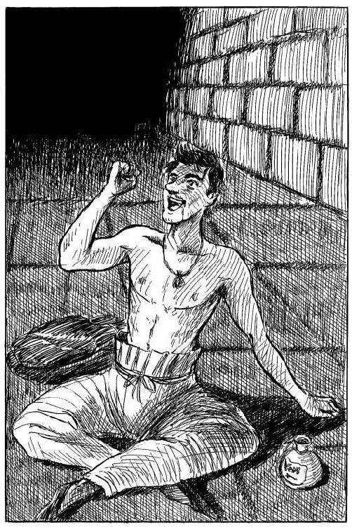

| パンタクル2 メスロンサーガ (幻想迷宮ゲームブック) | |
| 鈴木 直人 | |
| GENSOUMEIKYUU SHOTEN (2016) | |
幻想迷宮ゲームブック
パンタクル２
鈴木直人
はじめに
煙草を買いに出かけた魔道士メスロンは、途中でパンタクルをなくしてしまうというへマをやらかした。これでは魔法を使えない。悪いことになくしたのは、魔法を使えば家まで五分とかからないのだが、馬なら五、六日はかかる場所だった。そのうえ、野宿をしたために、風邪で寝込んでしまったのだ。そんな彼を、ファジー族という森の種族が、介抱してくれた。元気になったあとで話を聞くと、彼らは三つの魔法書を盗まれて困っているという。お礼に取り戻してやらぬわけにもいくまい。おなじみメスロンの大活躍譚。
ゲームを始める前に
ゲームブックをはじめて読む方へ
幻想迷宮書店でゲームブックをすでに購入したことがある経験者の人はこの項目を読む必要はありません。すぐ次の項目であるパラグラフ直リンクについてに進んでください。ゲームブックは知っているけど、電子書籍でやるのは初めてだという人、またはゲームブックって何？ という人は、長い時間は取らせませんから、少しだけ説明を聞いていってください。
はじめて聞く人は、もしかするとコンピューターゲームの攻略本の類と思われるかもしれませんが、そうではありません。
ゲームブックとは小説とゲームが融合したものです。一見した形式は小説で、その内容は章番号のように一、二、三...と数字で区切られています。この番号で分けられたそれぞの章を「パラグラフ」と呼びます。
小説なら、まず最初の一を読み、次は二、三と読み進めますよね？ ところが、ゲームブックは違います。
ゲームブックでは、読みはじめは小説と同じように、最初から読んでいくのですが、最初に一を読み終えたら、その終わりに記されている選択肢である番号の中から、読者であるあなたが選んだものが物語の続きになるのです。
どの道を行くか、戦うか逃げるか、いかにして難問を解くかといったことを、あなたが選んでいくことで、物語の展開や結末が変わり、まるでゲームのように楽しめるので、ゲームブックと呼ばれているのです。
あなたが選ぶべき選択肢は太字の漢数字になっています。これをタップすると、そのパラグラフにジャンプし、続きを読むことができます。
また、それぞれのパラグラフの終わりには必ず"▲"のマークが登場します。この印が見えていなければ、現在読んでいるパラグラフには続きがあるということです。うっかり、次ページにある選択肢を見落としたりしないように注意してください。
パラグラフ直リンクについて
この物語ではときに進むべきパラグラフ番号が本文中に登場しない場合があります。秘密の暗号を解読しなければならないときや、特定の情報を得ていなければ進めない場所を訪れるときなどです。それらのパラグラフにジャンプしたいとき、その番号が本文にないのだからタップできませんよね。そんなときは一度「目次」に移動して"パラグラフ直リンク"というところから、任意の番号を指定してください。
アドべンチャーシートヘの記入
この本は、一つの冒険の世界を創造したものです。この本の読者であるあなたが、魔道士メスロンとなってこの世界に入った時、初めて世界は動き出します。異教の魔術師やおぞましい魔物たちが、あなたを狙って蠢くのです。
さて、冒険の世界に跳び込む前に、二、三説明しておくべきことがあります。まずアドベンチャーシートについて説明します。これは一種の現況報告書であり、刻々と変化するあなたの状況を記録しておくためのものです。幻想迷宮書店のサイトにアドベンチャーシートを用意しています。印刷してご利用ください。そこには記入するスペースが三つあります。まず「体力」と「原体力」を設定しましょう。サイコロを二個振って、出た目に12をたし、得られた数を「原体力」に記入します。「原体力」というのは、「体力」の器です。どんなに体力を増やしたくても「原体力」以上にはなりません。スタート時の「体力」は「原体力」と同じ値です。この値は「体力」に記入します。ここで断わっておきますが、記入は鉛筆か何か消せるもので行なうのが良いでしょう。先にも言ったように、刻々と変化しますので......。
次に、この冒険の中では魔法が使えない状況があるわけですが、そんな時に役立つのがあなたの剣や武器の技です。サイコロを二個振って、どちらかの目を選び「技量」に記入します。たとえば、「３」と「４」の目が出れば「４」を記入してください。技量は体力同様大きければ大きいほど良いのです。
ここで少し寄り道をして、戦い方について説明します。この世界はほとんど魔術対魔術の魔術戦が主ですが、ときおり魔術の使えない状況があります。そんな肉弾戦では、まずサイコロを二個振って、出た目にあなたの技量と武器ポイントを加えた数を出します。次にもう一度サイコロを二個振って、出た目に敵の技量を加えた数を出します。こっちは敵の攻撃力になります。二つの数（攻撃力）を比べて、あなたの攻撃力が敵のよりも上なら、敵の体力を２ポイント減らします。逆に敵の攻撃力があなた以上なら、あなたの体力を２ポイント減らします。これを繰り返して結着をつけます。
三つ目に記入するのは持物です。あなたが過去の冒険で、どんなに大金持ちになっていようとも、持っていかれるものは次の三つだけです。すなわち、「ハンカチ、ちり紙、金貨五十枚」の三点セット（わっ！ 誰だ。石を投げるな。ちょ、ちょっと静かに、静かにしてください）。
冗談でなく、この三つを記入しておくだけです。はははっ。
さて、他の欄にはスタート前に記入することはありません。それでも一応の説明をしましょう。「Ａ経験値」は、敵を倒した時に得られます。文中「Ａ経験値に○を加えること」という指示があればここに加えていきます。Ａ経験値が10ポイントたまるたびに、原体力に＋４ポイント、技量に＋１ポイントのボーナスが与えられます。つまり少しずつあなたは強く成長していくわけです。
これに反し、「Ｂ経験値」はあなたを弱めるものです。毒や怪我やその他いろいろなダメージによって「Ｂ経験値に○を加えること」という指示を受けるでしょう。これによるペナルティは次のようになります。
●Ｂ経験値10～19なら、原体力を３減らす。
●Ｂ経験値20～29なら、原体力を３減らして技量も１減らす。
●Ｂ経験値30～39なら、原体力を３減らす。
●Ｂ経験値40～49なら、原体力を３減らして技量も１減らす。
●Ｂ経験値50以上なら、原体力を６減らす。
結構たまるんですよ。このＢ経験値。なるべくためないよう気をつけましょう。文中に指示はありませんが、10を越えたら必ずペナルティを自分に課してください。
また、経験記号はこの本の中のあなたの経験を手っ取り早く記録してくれるものです。これを記入しないと、倒したはずの奴がまだ生きてたり、以前に聞いた話をまたしゃべったり、いろいろとわやくちゃなことになりますので、まともにゲームを楽しみたい人はちゃんと記録しましょう。ひらがなとアルファベットが書ければ大丈夫です。
最後に「パンタクル」と魔術について、説明したいのですが、特に記しておくことはないのです。というのも、今回使うのはドルイド教の魔術。いわば敵の魔術で戦うわけで、メスロンには予備知識がないのです。それでもこの世界に踏み込めば、魔術についての知識は自然に増えてきます。魔術を覚えたら、「パンタクル」に術の名と番号を記入していきます。術にはパンタクルNo.がありますので、その順に記しておくと使い易いでしょう。パンタクルNo.を無視して覚えた順に記入すると、使いにくくなるかもしれません。
さて、ここから先は魔術戦でわからなくなったら読んでください。めんどーな人はとばしてしまいましょう。
まず魔術戦でパンタクルを使う場合、必ず、「カタカナ○○を戦闘欄にメモすること」とありまして、その通りにしましょう。次にパンタクルの術を選び、その術のパンタクルNo.の項目へ進みます（「パンタクルの術を選べ」の文字をタップすることで、パンタクルNo.の項目を含んだ、パラグラフ直リンクのページにジャンプします）。そこではタップできるカタカナがずらりと並んでいますので、先にメモしたカナをタップしてください。その飛び先であなたの体力を減らす値、敵の体力を減らす値、さらに次に進むべき項目番号が記されています。ここであなたの体力を指示通り減らし、次に敵の失った体力を戦闘欄に記録します。それから次の項目番号に進みます。魔術対魔術の戦いは、これの繰り返しです。どちらかが死ぬか戦闘不能になるまで続きます。メモしたカナは、何度も書き直しますので、消しゴムは必須アイテムになります。
武器ポイントはすでに述べた通り、技量に加えて戦うものです。ただしあまり良いものは出てきませんのでそのつもりで。
で、ここまで準備したら、もうあなたはメスロンそのものです。あなたが女性であっても、熟年であっても、これからは「ぼく」で考えて行動しましょう。
ぼくは、この冒険の頃には修道院に住んでいます。弟子を何人か抱えていて、財布の中も裕福ですし、平和な暮しをしています。ときおり白魔術師たちの会合に出かけますが、昔は良かったという老人のグチと、黒魔術、とりわけドルイド教の悪どさを聞かされます。移動にはむろん魔法を使います。ちょっと離れたところでも、魔法で出かけるのが習慣になっています。それがそもそもの誤ちだったのです。まあ、「ぼくはメスロンだ。ぼくはメスロンだ」と心の中で呟きながら、一へ進んでください。
一
ファジー族の長老オーバーリーフがぼくの手を固く握りしめた。長い毛に覆われたその小さな手は、ぼくに祈りを込めようというように震えていた。
「なんとしても！」
と彼は言った。甲高い声だった。
「なんとしても、あの三つの魔法書を持ち帰ってくだされ」
大きな目をさらに大きく見開いて、長老は言った。
森の住人ファジー族とぼくとの出会いは、数日前にさかのぼる。その日のぼくはひどくついてなかった。ハシーシュ煙草を買いに出たのだが、途中でパンタクルをなくしてしまったのだ。パンタクルというのは、六芒星の印のある円盤型の小さなプレートで、これがないとぼくは何の魔力も使えない。ぼくの家バルカン修道院までは、魔法なら五分とかからないのに、馬で帰るなら五、六日かかる。ぼくは馬を買い森を抜けようとした。しかし悪いことは重なるものだ。野宿をしたぼくは、風邪をひいて森の中に倒れてしまった。文明生活をしていたむくいだ。身体がなまっていたのだ。
一方ファジー族はといえば、ぼく以上についていなかったらしい。彼らはおとなしく、慎み深い森の古い種族だった。頭は良いが、魔法を使うことはなく、もっぱら木の実や草を食べてのんびり暮している。めったに人目につくことはない。実際ぼくもこの目で見るのは今回が初めてだった。で、彼らの深い森の神殿に、大魔道士ウェイブヒルが三つの呪文を記した三冊の魔法の書を託したそうだ。なにしろ昔の話で、詳しいことは知らないが、その三つの魔法はどれも宇宙の法則を覆すほどの力があったらしい。その貴重な書物が盗まれた。秘密結社ドルイド教団からやってきた翼の生えた魔物が、深夜書物を盗み出したのだ。ファジー族は深い悲しみに包まれた。ドルイド教団は世界の黒魔術を支配する強力な集団だった。高次の魔法を使う魔術師や恐ろしい怪物などを使って、恐怖で世界を支配しようという野望を抱いている。ファジー族が戦えるような相手ではない。それでも彼らはドルイド教団の本拠地アマルティアへと遠征することにした。
アマルティア近くの森の中で、倒れているぼくを見つけた彼らは、ぼくを必死に介抱した。ぼくが天才魔道士メスロンであることはすぐにわかったらしい。彼らが与えてくれる薬草や木の実は、ぼくを病気から救ってくれた。三日間寝ている間に彼らのこれまでの話を聞いて、ぼくは決心した。ついてない者同士、手を握りあうしかない。助けてもらったお礼の意味もあるし、運動不足を解消する意味もある。新しいパンタクルも欲しいし、何よりその貴重な魔法書への興味もある。それに、ドルイド教団のやり方には日頃から怒りを感じていたぼくだ。魔法書を取り戻す役を引き受けてしまった。
長老オーバーリーフの手を離し、ぼくは言った。
「なあに、心配することはない。一人で行くよ。その方がきみたちを連れていくよりずっと安全だからね」
ぼくはファジー族のキャンプを後に歩き出した。一週間近くも彼らに世話になったぼくだ。名残りは尽きないが、約束を果たさなければならない。
ファジー族の大きないくつもの目が、心配そうにぼくを見送っていた。ぼくは大きく手を振った。彼らはぼくの姿が見えなくなるまで、いつまでも手を振り続けていた。一〇一へ進む。
二
ぼくのいるところは、東西に続く通路の途中だ。東も西も四ブロック先で北へ折れている。黒曜石の壁は見えない。ぼくの北と南に向かいあってドアがある。
ここまで歩くのに四秒かかった。三つの数字に４を加えること。もし三つの数字のうちどれかが32を越えていたら、先に説明した通り、その数から32を引いて32以下の数に直しておくように。さて、４を加えたことにより、13～17までの数ができたら七一へ進む。18～21までの数ができたら一三四へ進む。どちらもなければ、ぼくは誰にも見つかってない。
北のドアに入るなら、四一四へ進む。
東へ歩くなら、三二八へ進む。
東へ走るなら、二六〇へ進む。
西へ歩くなら、三三六へ進む。
西へ走るなら、一六七へ進む。
南のドアに入るなら、一四七へ進む。
三
魔術を受け、アバドンは倒れた。しかしすぐにまた起き上がってくる。魔術の効果が失せるや、彼は何もなかったような虚ろな目をぼくに向けて立ち上がってくるのだった。
体力を１ポイント失う。これは術を使った分だ。もしまだ魔術を試したいなら、メモを変えずに再びパンタクルを使う。今度は武器を使って倒そうというのなら、一六〇へ進む。何か役立つ品物を持っていないか調べるなら、八九へ進む。
四
全ての体力を失って、ぼくは倒れた。もう動くことはできない。冒険もここで終りだ。
ただし！......次の記号があるかどうか、チェックしてみよう。
「Ａ」があるなら、四二九へ進む。
「Ｈ」があるなら、三三九へ進む。
「Ｍ」があるなら、三七六へ進む。
どの記号もないなら、ぼくは最初からやり直さねばならない。その際、持物、経験記号、経験値、パンタクルに記した術などを全て消しておくこと。また、経験値によるボーナスなどもなくし、ゲーム出発時の状態に戻さなければならない。
新しいぼくが誕生したら、一へ進む。
五
一ブロック歩いたところで、ぼくは足を止めた。角まで歩こうと思っていたのだが、羽虫の捻りに似た音を、確かに聞いたように感じたのだ。周囲を見回すと、東は一ブロック先で南北の通路と交わっていて、三叉路になっている。西は一ブロック先で北へ折れている。ぼくの立っているブロックの北側も南側もレンガ壁になっているが、音は北から聞こえたように思う。
もし余分に「壁抜けパウダー」を持っていたら、使ってもいい。ここの北壁をこちら側から抜けることができるはずだ。パウダーを持物から一つ減らし、八七へ進む。壁をすんなり抜けるだろう。
パウダーを使わず、東へ歩くなら三一九へ、西なら一二四へ進む。
六
ぼくが立っているところは、北と西に通路のある曲り角だった。ぼくの東にはドアがあり、こちら側から簡単な錠がつけられている。南はレンガ壁が通路に沿って続く。北への通路は三ブロック先で西への通路と交わる三叉路になっている。西への通路もまた三ブロック先で北への通路と交わる三叉路になっている。北へ歩くなら三七九へ進む。西なら二〇二へ進む。東のドアを開けて中へ入るなら、このドアの錠は再び閉じてしまうだろう。二六九へ進む。
七
ここは通路の袋小路になっている。東へ一ブロック巾の通路があり、三ブロック先で十字路になっている。北と南はレンガ壁、西は黒曜石の壁で、ここがエリア５の西の端に位置することを示している。
見上げると、ぽっかりと黒い穴が天井にあり、ロープが垂れていて、ゴンドラを吊っている。このゴンドラに乗って上へ登るだけの力はない。ぼくはもう一度周囲を見回し、東へ戻っていく。三四六へ進め。
八
数十匹のフライドラゴネードに囲まれ、ぼくらは窮地に立たされていた。激しい戦いが始まるその直前に、どこからともなく地鳴りが聞こえ、突き上げるような揺れがたて続けに二度、三度と起きた。壁に裂け目が走り、床が割れた。立っていられない。
床の中央が盛り上がり、そこから小山のような不気味な蛙が姿を現わした。あの骨が蘇生したのだ。太古の怪物トード神が、ドルイド教の守護神がいま蘇った。フライドラゴネードたちさえいなければ、ぼくらはこの部屋を素通りしていただろうが、手間どったのが致命的なミスだったようだ。
トード神が霧笛のような叫びをあげた。ぼくは自分の死期を悟った。体カポイントを０にし、四へ進む。
九
道を教えてやると、老ドルイドは笑った。ぼくも笑った。もうでたらめだった。口から出まかせの、めっちゃくっちゃ。
「いやいや、あんたに道を尋ねたわしが悪かった。もういいよ。邪魔したね」
彼は逃げるようにドルイドの絨毯に乗ると、あさっての方角へ去った。まあ、そうだろうな。
さて、北のロープから地中虫の背に降りるなら三九五へ、南のロープからなら四五一へ進む。
一〇
ぼくの西にドアがある。鍵はかかってないようだ。人の気配がし、話し声が低く聞こえてくる。中へ入ってみるか？ 中へ入るなら一六六へ進む。北には通路があり、三ブロック先で西への通路と交わる三叉路になっている。東と南は黒曜石の壁で、ここがエリア５の東南の端のブロックであることを示している。北へ歩くなら四二三へ進む。
一一
シチューはうまかった。体力に６ポイントを加えること。食べ終わった後、少し胃がもたれる感じがした。なんと、それは驚いたことに、ただの食べすぎだった。
ぼくはロープを伝い、再び地中虫の背に降りた。四〇〇へ進め。
一二
西へ西へと歩いていく。道は一本道だ。記号をチェックして「き」があれば三二一へ進む。「き」がなければ、ぼくらの前方に岩山が見えてくる。道はそこで途絶えている。岩山の頂に小さなドルイドが一人、腰を下ろしていた。槌とノミで岩に壁画を彫っていたようだ。ぼくらを見つけ、ニッコリ微笑む。
「金龍の血を浴びた男よ。『獣帯』十二宮で何が起きたか、知りたくはないか？」
アバドンが前へ進み出る。奴の不老不死の秘密は、龍の血を浴びたためらしい。
「教えてやってもいいが、一つ条件がある」
「何だ」
「おまえの後ろにいる魔道士メスロンを殺せ！ その男は敵だ」
アバドンが大鎌を構えたまま、ぼくを振り返った。おい、冗談だろ。仲間じゃないか！ でも、本気らしい。
アバドンを敵に回すことになった。不老不死の男と戦わねばならない。武器を使うなら一六〇へ進む。魔術を使うなら戦闘欄に「フシ」をメモし、パンタクルの術を選ぶ。持物の中に使えるものがあるか否か、調べてみてもいい。八九へ進む。
一四
ぼくたちは暗い通路を西へ歩いた。通路の長さは七ブロックで、南側は黒曜石の壁が通路に沿って続いていく。通路の西の端まで来ると、西壁も黒曜石になっていた。そのブロックの北側に再び隠し扉がある。ぼくはポッポレイポを肩に載せ、扉を開く。何となく妖気がみなぎっているのを感じ、肌が粟立つようだ。ギリギリと軋み音をたて、レンガ壁の扉が開く。三三四へ進め。
一五
歩いてきたところは、北と東に通路のある曲り角だ。北も東も三ブロック先にドアが見えている。北の通路には西へのドア、東のそれには南へのドアだ。どちらも鍵がかかっていて開かないことは先刻承知のはずだ。さらに北、六ブロックのところに東への曲り角がある。ここまで歩くなら四一〇へ進む。東へ三ブロックの開かないドアの前へ進むなら三五五へ進め。
一六
北と東と南に通路のある三叉路に立っている。北は八ブロック先で東へ折れていて、その曲り角に恐らくエリア３に通じるのだろう、鎖で吊られたゴンドラが揺れている。南は三ブロック先で東へ折れている。
そして東だが、暗く長い通路が続いている。人のうめき声や叫び声はここから聞こえてくる。二ブロック先の南壁にドアが一つある。
北へ歩くなら三〇二へ、南は九六へ、そして東なら一四五へ進む。
一七
十字路まで歩いてきた。道は狭く、熱とガスでやられ脆くなっている。うかつに歩けばたちまち足を滑らせ転落する。緊張感でこめかみがピリピリする。
ここも毒性の瘴気ガスが沸き上がっている。Ｂ経験値に１を加えること。北へ歩くなら二二三へ、東なら一九二へ、南は八〇へ、西なら五〇五へ進む。
一八
金貨十枚をさらに賽銭箱に投げ入れ、頭を固い床にこすりつけた。金貨を十枚減らすこと。
正当な手順を踏んだにもかかわらず、トード神の像は何も応えてくれない。まあ、こんなものかもしれない。
石像の横腹を蹴飛ばすならば、一六三へ進む。あきらめてこの場を離れるなら四五八へ進む。
一九
小鬼の群れがまっすぐ歩いてくる。ぼくは身を強ばらす。小鬼はぼくを見てせせら笑う。
「貧弱な奴め。道を開けろ」
ぼくはちょっとムカッとしたけど、ここは我慢だ。脇へ寄って小鬼の一団を通してやる。ここで運試しをすること。サイコロを一つ振って、出た目にＡ経験値の数を加える。この値はぼくの漂わせる「凄み」を表わしている。値が大きければそれだけぼくは危険に見えるはずだ。得られた値が６以上なら、彼らは逃げるように行ってしまう。西（一九六へ進む）か東（四四七へ進む）へ歩くことができる。
５以下だった場合、小鬼はぼくにいたずらをする。すれ違いざまに、足をひっかけて転ばそうとする。ぼくは自制心を失って戦う羽目になる。三〇〇へ進む。
二〇
ここ「みそぎの間」には、もう生きているものの姿はなかった。突然ドアが開き、水晶球が入ってきた時は、さすがに驚いた。しかし、こいつは羊皮紙を運んできただけで、すぐにまた出ていった。
ぼくは部屋を歩き回る。ふと、深い絨毯の下でコトッというかすかな音を聞いて、ぼくは絨毯をめくり上げた。案の定、床の一角に跳ね板がある。板を上げると、その下に暗く長い穴があり、梯子が下りている。部屋の北東の端のブロックだ（つまりエリア５の北東の端ということだ）。
この梯子を下りていくなら二九五へ進む。まだこのエリア５に未練があるなら、絨毯を元に戻して「みそぎの間」を出てもいい。九五へ進む。
二一
この窓の中には、もう誰もいない。彼は逃げ出すのに成功したようだ。軽く壁を叩くと、きれいにその一部がはずれ、大きな穴になった。あいつ、なかなかやるな......。一四五へ進む。
二二
ぼくはいま、南へのドアの前に立っている。ここは北と西が黒曜石の壁、南はレンガ壁という袋小路なのだが、南壁にドアが一つついているのだ。東には一ブロック巾の通路があり、三ブロック先で南への通路と交わって三叉路になっている。
さて、東へ歩くなら四一五へ進む。南にあるドアの中に入るなら、三二三へ進む。
二三
ドアの中に入ると、まばゆいばかりの輝きが目を射た。キラキラと水晶の柱が輝いている。ここは五ブロック四方の大広間になっている。部屋じゅうの壁と言わず床も天井も全て水晶で覆われていて、その煌きが驚くほど部屋じゅうを明るく照らしていた。
部屋の中央にクリスタルのピラミッドがあり、その上にヘルメットをかぶった男が一人座っている。ヘルメットは男の頭部全面を覆っていて、目や耳は隠れている。
そのためか彼はぼくが入ってきたことにまるで気づいていないようだった。
この隙を利用して、勝手にこの部屋を調べさせてもらうなら二三八へ進む。ピラミッドに登り、男のヘルメットを奪い取るなら一六九へ進む。ヘルメットの男に話しかけるなら三九一へ進む。
二四
ぼくらは、ドアに挟まれた通路の端に立っている。北は黒曜石の壁に遮られ、東と西にドアがある。南には一ブロック巾の通路が続き、三ブロック先で西へ折れている。
耳を澄ませても、何の物音もしない。敵の気配もない。東のドアへ入るなら三一五へ進む。西のドアなら四六五へ進む。南へ歩くなら三〇三へ進む。
二五
魔術戦はぼくの勝ちだった。仮面をつけたドルイドは、床の上にねじれた肢体を横たえていた。初めてにしては上出来だとぼくは自画自賛していた。
なんとなく、ドルイド教の呪文体系を理解したような気がする。「火の術」より「水の術」が強く、「水の術」より「氷の術」が強い。そして「氷の術」には「火の術」が強い。ふん。と鼻を鳴らす。簡単じゃないか。あらためてペンダントを見る。ちぎれた細鎖をはずし、ぼくはそれを左手の手袋の甲（つまりなくしたパンタクルのあった場所。ここはぼくのパンタクルの指定席だ）に留めた。パンタクルを渡してくれた若い魔術師は、すでに息絶えていた。彼はドルイド教団を脱走しようと企てたのだ。そして処刑された。魔術師を志す若者は多い。が、道を誤るとこういう悲劇が起きるのだった。
ここでまず、アドベンチャーシートの「パンタクル」に、次の三つの術と番号を記しておくこと。
「火の術」（二五三）
「水の術」（二九七）
「氷の術」（二一七）
これからの冒険で、「パンタクルを使え」という指示があった場合、ここに記された術を選び、その下の番号へ進むことになる。術の数は増えていくので、それぞれの術にどんな特性があるかを研究し、術を選ぶことになるだろう。記号「い」を記しておくこと。
また、レベル１のドルイドを倒したことにより、Ａ経験値に１ポイントを加えることができる。さあ、先へ進もう。三冊の魔法書はここにはない。六×六ブロックの正方形の部屋で、北壁中央に二ブロック巾の両開きドアがある。また、東壁の南端部分と西壁の南端部分に一ブロック巾のドアが見えている。北のドアに入るなら三四四へ、東のドアなら三八へ、西のドアなら四六六へ進む。
二六
ぼくはハシーシュ煙草の白煙の中を逃げるように走った。立ち止まったところは東西に続く通路の途中だ。東も西も四ブロック先で北へ折れている。ぼくの北と南にドアがあり、ぼくはそれにもたれている。黒曜石の壁は見えない。
ここまで走って一秒。１を三つの数字に加えること。もしこれで18～21の数ができたら一三四へ進む。13～17の数ができたら七一へ進む。どちらもなければ、何事も起こらない。
北のドアに入るなら、四一四へ進む。
東へ歩くなら、三二八へ進む。
東へ走るなら、二六〇へ進む。
西へ歩くなら、三三六へ進む。
西へ走るなら、一六七へ進む。
南のドアに入るなら、一四七へ進む。
二七
金貨十枚を減らしておくこと。それを賽銭箱に一枚ずつ入れる。
ぼくは固い床に頭をこすりつけ、トード神に祈った。トード神崇拝の儀式に従ったのだ。しばらく祈り続けるうち、くぐもった声が石像の口から聞こえてきた。お告げだ。
「汝の祈りに応じ、魔術を授ける。『結界の術』を覚えよ。この術の力は『火』や『雷』以外のあらゆる３レベル以下の魔術の力を弾き返す。また、バンパイヤに対しては、ダメージは与えられない。『水』や『氷』、『スケルトン』『ゴーレム』『風』といった術に対しては有効だ。この術を学び、わが教えを伝えよ。トード神を崇めることを民に知らしめよ......」
ぼくは「結界の術」を覚えた。パンタクルに新しい術の名と、番号「二六七」を記入しておくこと。金貨をまだ十枚以上持っているのなら、再び投げ入れて祈ってみてもいい。一七三へ進む。
ここでの用は済んだと思うなら、ロープを下り地中虫の背に乗り移ろう。四五八へ進む。
二八
ここまでに、ぼくの体力が０になっていれば四へ進む。また、敵から奪った体力の合計が８ポイント以上なら一三三へ進む。まだどちらも体力が残っていれば、戦い続けるしかない。ドルイドは今度は人差指を突き出した。ぼくはどの術で応戦しようか？ パンタクルを使い、術を選ぶこと。その際に、戦闘欄に今度は「ドキ」をメモしておく。
二九
南への道を歩いている。また地盤の柔らかそうな、見るからに崩れそうな箇所があり、ぼくらは緊張する。といってもまあ、いつものことなんで、歩く速さを遅くしたぐらいなんだが。ゆっくり通り過ぎようとした時、アバドンが大きなクシャミをした。
そのせいで、道はガラガラと音をたてて崩れた。ああ！ また一つ道が失われた。Ｂ経験値に１を加えること。記号を見て、「あ」があれば、南へは進めなくなっている。北（四九三へ進む）へ戻るしかない。「あ」がなければ、「あ」を記入した上で、南へ歩き続ける。崩れた箇所は、ぼくらの背後だ。四六二へ進む。
三〇
レベル３のドルイド、オトアップは酔っていたとはいえ、さすがに強かった。しかしぼくは彼を倒した。レベル１の魔術が、レベル３の魔術に対して効果を発揮することもあるということがわかって、心強く思った。
Ａ経験値に４ポイントを加えること。また、持物に「黒いケープ」を記す。ぼくはこのケープとフードをつけ、レベル３のドルイドになりすます。これから先、この格好の方が人目につかない。
さて、オトアップの死体は次にここへ来た時は跡かたもなく消えている。その理由は後でわかる。
通路の東端のドアに入るなら四九四へ進む。西端のドアなら三七八へ進む。
三一
指先から青い光が放たれ、それは一条の水しぶきとなってバンパイヤナイトを襲い、そいつを部屋の端まで吹き飛ばした。
しかし、この術では二人を同時に攻撃することはできなかった。無傷な方のナイトが、この隙にぼくに牙を立てた！
さて、ここまでで魔術を使った分として１ポイント、牙攻撃を受けた分として２ポイントの合計３ポイント体力を失う。ぼくはナイトに馬乗りになられて、次の攻撃を必死にかわす。今度は武器で倒さねばならない。
バンパイヤナイトＢ 技量６ 体力４
三二
北と東に黒曜石の壁があり、それが通路に沿って長く続いている。つまりここはアマルティアのピラミッドの東北の端のブロックなのだ。西と南には一ブロック巾の通路が延びており、西は四ブロック先で南へ折れている。南は長い通路で、先はよく見えない。南へ歩くなら一〇八へ進む。西へ歩くなら一八一へ進む。
三三
北への道を辿る。道は溶岩の海よりずっと高い崖の上にあり、しだいに広くなっていく。誰の目にも、この道が目的地への最後の道であることがわかる。前方に溶岩が固まってできたらしい奇怪な石窟が見えてきた。自然の作った城だ。あそこに魔王がいる。「ウェイブヒルの魔法書」もきっとあの場所にある。
上空に影のように、怪鳥のように舞う翼が見える。フライドラゴネードだ。百数十匹はいるようだ。溶岩の赤い炎の照り返しを受けて、まるで夕焼けの空を飛ぶコウモリのように見える。ぼくらを見つけたらしい。輸を描きながら上昇すると、急旋回して降下してきた。
顔の直前に大鎌が光って、ぼくは反射的に道に這いつくばった。鋭く風を切る音。ここで記号をチェックする。「ゆ」、「き」、「ふ」の三つの記号があれば三四五へ進む。三つがそろってないなら、ここは逃げるしかない。激戦の末ここを突破できても、残る体力がわずかでは、魔王に会うこともかなわない。ぼくは猛るアバドンを制止し、南へと走る。Ｂ経験値に１を加え、二九九へ進む。でかいトンボも石窟を守るためか、深追いはしない。
三四
十字路の中央まで歩いてきた。北は四ブロック先で東西の通路と交わり、三叉路になっている。東は三ブロック先で南北の通路と交わり、十字路になっている。南は四ブロック先で十字路になっている。西は三ブロック先で南へ折れている。
北へ歩くなら四一五へ、東は三六二へ、南は三四六へ、西なら二七七へ進む。
三五
ぼくはドルイド二人を片付けた。Ａ経験値に３ポイントを加えること。ここは二ブロック四方の小部屋だ。北と東は黒光りする黒曜石の壁、西と南はレンガ壁で西壁にドアが二つ並んでいる。
記号「へ」を記した上で、西壁のドアのどちらから出るか？ 右側（北側）のドアなら六三へ、左側（南側）のドアなら一三九へ進む。
三七
数十匹のフライドラゴネードに取り囲まれ、ぼくらは窮地に立たされていた。睨みあい、激しい戦いが始まるまさにその一瞬に、地鳴りが轟いた。ぼくらは突き上げてくるような地震を感じ、身を伏せる。レンガ壁に、亀裂が走った。ドラゴネードの一団がドアに殺到する。広間の中央の床が地割れとともに盛り上がっていく。パニックが突然襲った。
いまや、ポッポレイポをかばうどころではなく、自分自身の安全を考えることすら難しくなった。ぼくは肩に載るウェイブヒルのドクロに向かって叫んだ。
「これは何だ!? 誰かの魔術か？」
「いや、違うようだ。見ろ！」
床が割れた。土砂が盛り上がって流れとなった。そしてその下から、ドロドロになった粘液を滴らせて白い怪物が出現した。白い骨が見えている。悪臭がする。腐っている。
「トード神だ！ 焼いたのに!! まだ蘇生を進めておったのだ！」
ウェイブヒルが金切り声を上げた。トード神が地下から現れ、霧笛のような声をはり上げる。それは恐ろしい光景だった。ぼくは武器を手に無我夢中で突きかかっていった。そうせずにはいられなかった。
もし、トード神の蘇生が完璧なら、ぼくらはとても敵わなかっただろう。しかし、敵は腐った身体で生まれた。眼球もなく、敵も味方もわからずに暴れるだけだ。ぼくは武器をふるう。それが何の役にも立たなくても、戦い続ける。メスロンは常に戦いの中にいる。
十数分後、トード神は完全に腐敗し、力を失って倒れていた。漂う悪臭の中、ぼくらは立っていた。二三五へ進め。
三八
ぼくは一人、長い通路の途中に立っている。ぼくのすぐそば、西の壁にドアがある。一ブロック巾の通路が南北に延びていて、北は六ブロック先の突き当たりにドアが一つ見えている。南は一ブロック先で西へと折れている。ぼくの東はレンガ壁で遮られている。西壁のドアに入るなら二〇〇へ進む。北へ歩くなら五七へ進む。南なら一六五へ進む。
三九
「風のきざし」が羽根を回し始めた。その動きから、「１・７・13......」という数字を知る。
これは、敵が「風の術」を使う時を示しているのだ。まず最初に「風の術」を使ってくる。次に使ってくるのは、七回目だ。十三回目の魔術戦にも「風の術」を使ってくる。
このパターンを予知することができて、ぼくは有利になったはずだ。戦闘欄に「タケ」をメモし、パンタクルの術を選べ。
四〇
北の通路上に、水晶球が浮いているのを見て、またか！ と思った。
「侵入者発見！ 侵入者発見！」
機械めいた声がして、水晶球につけられた筒がこちらを向いて、シュッという音をたてた。毒針だ。ぼくは手足に鋭い痛みを覚えた。体力を２ポイント失う。さらにＢ経験値に１を加える。これにより体力が０になれば四へ進む。
ぼくは一目散に逃げ出す。西へ走るなら二六へ、西へ歩くなら二へ進む。
四一
ぼくはいま、北と東に通路のある曲り角に立っている。西と南はレンガ壁が通路に沿って続いている。北は三ブロック先で東への通路と交わる三叉路になっている。東も三ブロック先で北への通路と交わり、三叉路になっている。
北へ歩くなら三九三へ進む。東なら六七へ進む。
四二
ぼくはヘルメットを床に無造作に落とした。ピラミッドの上からの高さだったから、相当なショックがあったと思う。小さな破片が飛び散って、ぼくはそれで壊れたものと思い込んでしまった。
しかし実は完全に壊れたわけではないのだ。ヘルメットはまだ水晶球を操る力を持っていた。だから、もし男が目を覚まして再びヘルメットをかぶれば、それで水晶球を操ることができるわけだ。
ただし、ぼく自身のためには、ヘルメットを落としただけで充分だった。その理由はこうだ。もし、ぼくが「魔王への誓約書」に自分の血判を押していた場合、どこかでそれを運ぶ水晶球に追いつかなければ、実は大変なことになる。その水晶球の動きを止めることができればそれで充分なのだ。
ぼくが落としたことで、ヘルメットの一部が壊れた。そして、「誓約書」を運ぶ水晶球は、この先のどこかで立ち往生しているはずなのだ。
もし記号「は」があるならば、何も記す必要はない。「は」がないぼくなら（何のこっちゃ！）、「は」の代わりに「を」を記しておくこと。この記号だけ記しておけばいい。必ずどこかであの水晶球をつかまえられるようになる。
さて、用は済んだだろうか？ 北にあるドアから外へ出るなら一一一へ進む。まだ部屋を物色してないのなら二三八へ進む。
四三
ぼくたちは陰に隠れ、様子を窺う。ドルイドが印を結び、骨格に向けて叫んでいる。その声がしだいに高く大きくなって、広間に響く。広間全体が、それに呼応するように大きく揺れる。骨の一片一片に、力がみなぎっている。骨にはりついていた瓦礫が、音をたてて落ち、挨を上げる。太い関節が軋み、その生物が立ち上がった。
ぼくたちは折り重なるようにして床に伏した。その上に挨や石片が降り注ぐ。恐怖というものを知らないアバドンが、頭を上げて言った。
「蘇生した。でかいな。蛙みたいだ」
アバドンの抑揚のない声につられ、ぼくも頭を上げる。こいつはトード神だ。太古に神として惧れられていた生物が、再びその恐怖の力で人間界に君臨しようというのか！
トード神は、舌も気管も朽ち果てて石化したその口腔を開き、霧笛にも似た声で叫んだ。壁が震えた。しかしトード神は襲ってはこなかった。前肢で床を掻いた。床が抜け、土がまるで津波のように波打った。トード神は床下に潜ったのだ。
ぼくは泥まみれになった顔を拭うことも忘れ、放心していた。岩棚の上のドルイドもまた、役目を終えた充実感からか、放心していた。ドルイドとミルメコたちが引き上げるまで、ぼくらは隠れていた。
記号「つ」を記しておくこと。すでに「つ」があれば、重ねて記すこと。二五〇へ進む。
四四
袋小路まで歩いてきたぼくは、気味の悪い一人のドルイドに出迎えられた。戦う意志はないらしく、顔が笑っている。手足が恐ろしく長い人で、その背後には黒曜石か、黒クリスタルかのピラミッド状の半透明のものがある。
ピラミッドの中には、ステッキが三本。どうやって入れたのかわからないのだが、埋め込まれているというか、三本のステッキを内に含んだ原石を削り抜いてピラミッドを形成したというのか。とにかく継ぎ目一つないピラミッドの中に、ステッキが三本入れてあった。
「やあやあ、きみはどこに派遣されるのかな？ もう『みそぎ』は終わったのかい？ 『みそぎ』が済んでいれば、『指示書』を持っているだろう。それと引き換えにステッキをあげるよ。見てご覧。すてきなステッキ......クックック......フフフフ......ハッハッハッハ......」
彼はそのつまらないシャレで、かっきり一分間笑い続けた。もし「指示書」を持っているなら三一三へ進む。
持っていないなら、ようやく笑い終えた男が息をひきつらせながら、道を教えてくれる。
「最初の十字路を東、三叉路を北へまっすぐ歩き、突き当たったドアに入ればいい。寄り道は禁物だよ。危ない奴もいるしね」（自分の方がよっぽど危ねーじゃねーか）
「そうそう、ヤカンをかけっ放しにしていたんだ。沸くとドラゴンそっくりの声を出すヤカンでね。他のドルイドに言われるんだ。このヤカンを使っちゃイカンって！......フフフ......ケッケッケケケ......」
ああ、ぼくはあいさつもそこそこに北へ逃げ出す。一四八へ進め。
四五
金貨五枚をアドベンチャーシートから減らすこと。ぼくはスパイクスに金を支払った。注文したのは「ソーサリーカーレ」（？）だ。
「おう！ これ『カーレ』ない」
スパイクスが言った。
「これ、わたし字間違えた。『カーレ』ない。『カレー』だ」
食券を受け取って、ぼくは二卓につく。黒いケープのドルイドは、話し好きらしくぼくに話しかけてきた。ぼくを新入りのドルイドと勘違いしてくれるのは、実に都合が良い。
「近頃の新入りは......」
と彼は言った。
「魔術を使うのに変なクセがある奴ばかりでね。特にレベル１のドルイドはほとんどクセを持っている。まったく嘆かわしいよ」
「何ですか？ そのクセって......」ぼくは尋ねた。
「指だよ。術を使うのに指に特徴が出るんだ。火の術を使う時は人差指一本を立てる。水の術の時は五本の指全部を拡げる。氷の術の時は親指を使う。こんなことやってたんじゃ、敵に何の術を使うのか悟られちまう。おい、新入り。変なクセをつけないよう修行しろよ。立派なドルイドになれるようにな」
ぼくは「ソーサリーカレー」を食べながら、彼の話を覚えておくことにした。体力に５ポイントを加えることができる。ただし、原体力を越えて回復することはできない。カレーは美味しくて栄養に富んでいた。満足したぼくは、レベル３のドルイドに会釈をし、レストランを出ることにした。五〇一へ進む。
四六
さらに進んでいくと、十字路になっている。どこまで歩いても壁が見えない。本当に地底の国を彷徨っているようだった。ウェイブヒルを始め、アバドンもポッポレイポも皆無口になっている。瘴気と暑さでぐったりしてるのだ。ここでもＢ経験値に１を加える。
北へ歩くなら三六四へ、東は一七五へ、南は四二五へ、西なら二三〇へ進む。
四七
ぼくは水晶球から逃れようと走った。通路の曲り角まで走ってきて、何とか息を整えようとした。東と南に通路があり、東の通路は四ブロック先に北へのドアが見える。南は四ブロック先に、東へのドアと西へのドアが通路を隔てて向かいあっている。見渡す限り黒曜石の壁は見えない。ここまで走るのに一秒。１を三つの数字に加えること。三つの数字のうち、１～５までの数があれば一一七へ進む。６～９までの数があれば四九五へ進む。
どちらもなければ水晶球は視界の外にある。東へ歩くなら四四三へ、東へ走るなら一九一へ、南へ歩くなら二二〇へ進む。南へ走るなら四七七へ進む。
四八
まったく欲張りな神様だ。ぼくはさらに金貨を十枚出し、賽銭箱に投げ込んだ。持物から減らしておくこと。またも固く冷たい床に這いつくばって、ぼくは祈った。
トード神の石像がくぐもった声でおっくうそうに応じた。
「汝は熱心な信者と見た。さらにもう一つの術を授ける。心して聞け。『雷の術』は、『氷』と『風』に弱いが、『結界』を破り、『ゴーレム』、『バンパイヤ』を貫き、『火』、『水』よりも強い。雷の矢で敵を打ち破る大いなる力。この術を学び、余の教えを伝えよ。民衆に余の力を知らしめ、崇めさせよ......」
ぼくは『雷の術』を覚えた。パンタクルに新しい術の名と、番号「二六四」を記入しておくこと。さらに、金貨を十枚投げ入れて祈るなら二七へ進む。
用が済んだと思うなら、ロープを下り、地中虫の背に移る。四五八へ進む。
四九
ぼくは「時の逆行石」を荷物から取り出した。ここはやはり、このわけのわからないものを試してみるべきだろう。右手に宝石を持つと、ぼくは力いっぱい投げつけた。心の片隅に、もったいねーという邪心があった。売れば、金貨千枚ぐらいになったかもしれない。
石はトード神の眉間にめり込んだ。が、しかし、はたまた、なんと、トード神は何もなかったかのように暴れ回っている。ウェイブヒルのガラス玉の目が、ギロリとぼくを見た。
「呪文を唱えねば効果が出ぬようだ。わしがやるわい」
ウェイブヒルが「時の逆行石」の力を引き出す文句を呟いた。それから起きた出来事は、信じ難いものだった。トード神の巨体が後ろへ下がっていく。床の中央の土が盛り上がり、その中へ吸い込まれるように消えていく。巨大ガエルが飲み込まれた床は、まるで何もなかったかのように平らになった。亀裂一つない。ＶＴＲの早戻しを見ているようだ。
「『時の逆行石』は、その呪いを受けた者を数時間前の状態に戻してしまう。奴はたぶん元いた広間で、骨に戻っていることだろうて」
ウェイブヒルがほっと息をついた。うまくいって良かった。もうこの部屋にはフライドラゴネードの姿も失せて、ぼくらしかいない。持物から「時の逆行石」を一つ消しておくこと。さあ、先へ進もう。
この部屋は四ブロック四方の広さで、北だけが黒曜石の壁になっている。西には入ってきた時のドアがあるが、東にもちょうど向かいあう形でドアがある。ぼくらは東のドアから部屋を出た。一四九へ進む。
五〇
さらにぼくは魔術を使った。指を突き出すとオレンジ色の光が放たれ、火炎となってドルイドを襲う。
ドルイドもまた魔術を駆使した。指を突き出すと、ぼくと同じオレンジ色の光が放たれ、火炎となってなぎ払う。「火の術」と「火の術」が二人の間にぶつかり、ひときわ高い炎を上げた。二つの力はぶつかりあうことでその命を失い、消えていった。
ぼくの体力を１ポイント減らす（術を使った分だ）。また、敵のダメージポイント１（これも術を使った分だ）を戦闘欄に加える。
ここでもしぼくの体力が０になったなら四へ進む。まだ体力があれば一五九へ進む。
五一
どこかで悲鳴が聞こえた。ぼくの代わりに火に焙られる苦痛を味わっているかわいそうな奴がいるのかもしれない。まあ、いいか。
「こ、これはなんとしたこと！ きさま、この血判は偽物だな!?」
そういうことさ。紙切れに縛られるのは嫌いなんでね。ぼくの周りを蟻の兵土が取り囲んだ。まずこっちを武器で片付けなければならない。彼らは統率のとれた戦を得意とするらしく、一度に四人同時に襲いかかってくる。サイコロを四回振って、四人分の攻撃力を出し、それがぼくの攻撃力以上ならば体力を２ポイント減らす。
１のミルメコ兵士 技量７ 体力２
２のミルメコ兵士 技量７ 体力２
３のミルメコ兵士 技量７ 体力４
４のミルメコ兵士 技量７ 体力４
四人全員を倒したら四五二へ進む。その前に体力が０になれば四へ進む。
五二
ぼくの一撃が決まり、ドルイドは倒れた。スケルトンを呼び出す術を心得た手強い敵だったが、肉弾戦には弱かった。背後に回れたことが勝因といえよう。
Ａ経験値に２を加えることができる。また、記号「ほ」を記しておくこと。スケルトンの術を覚えたくて、ぼくはドルイドのアミュレットを見る。しかしこれはぼくには使えない。レベル２以上の魔術は、魔法書をちゃんと読まないと覚えられないのだ。魔法のアイテムを奪っても、何の役にも立たない。ぼくはあきらめて立ち上がる。一二五へ進む。
五三
ぼくは抵抗できない状態にあった。ポッポレイポが人質になっている以上、手を出すことはできない。
大猿の一人がぼくの腹をえぐるようにパンチを出した。まともに受けたぼくは、うめいてうずくまった。体力を２ポイント失う。もしこれで体力が０になれば四へ進む。
まだ体力があるなら、運試しをすること。サイコロを一つ振って、出た目が６なら一九九へ進む。５以下の目なら二七〇へ進む。
五四
ドルイドたちの態度が一変した。殺気じみた目つきや、何となく気まずい空気は消え、安堵のため息がもれた。
「どうやらあんたは......」
とカウンター内のドルイドが言った。
「......魔王の手先ではないようだな。われらは魔王に叛き、反旗を翻す者ばかりだ。あんたの味方だよ。合言葉も言わないし、顔も見たことなかったんでね。てっきり魔王側の犬と勘違いしてた。こいつのようになるとこだった」
カウンターに突っ伏したドルイドは、すでに死んでいた。胸に深々と短剣が刺さってる。ぼくは別に反乱軍に味方するつもりはない。ただ、利用できればいいと思うだけだ。魔王への叛逆の言葉を言ったか、又はピアス（死の予感石）を持っていたぼくは、なぜか彼らに歓迎された。ビールをおごってもらい、しかも魔王についての話も聞き出すことができた。
魔王には側近のレベル４ドルイドが五人いたそうだ。そのうちの一人が魔王のやり方を嫌って暗殺しようと試みた。しかし失敗し、男は囚われた。反乱軍はそのレベル４ドルイドの指揮下のドルイドたちを中心に、組織されたという。その男はすでに牢を脱け出し、再び魔王暗殺に向かっているという。ただ、問題なのは他の四人の側近たちだ。いずれも強い魔術師であり、その四人を始末しなければ魔王の元に歩み寄ることもできない。反乱軍の力では四人には勝てないらしい。
「でもね......」と若いドルイドが言った。
「牢を脱け出したリーダーは、つい最近四人を始末する絶好の手を思いついたそうだ。詳しくはわからないが」
なるほど。魔法書が魔王の手元にあるなら、反乱軍と正規軍との戦は、ぼくに有利な好材料だ。たがいに咬み合って力を失ってくれればいい。
また、地中虫の背に乗ったら、必ず左へのロープを掴むようにしろという。このアドバイスは、意味がよくわからないが覚えておかなくてはいけないようだ。
ともあれ、記号「ち」を記しておく。また、ちゃんとした安全なビールをごちそうになったので、体力を８ポイント回復させておく。ぼくは三人に礼を言い、店を出た。四一八へ進む。
五五
ぼくは壁画をさらに詳しく調べた。
「何だろこれ？」
ポポレイポラが勝手に壁画の一部を触って呟いた。触らないほうがいい。と言おうとして、ぼくはその言葉を飲み込んだ。壁画の一部がカタリと音をたてて開いたのだ。
手を入れると中から一冊の本。ウェイブヒルの魔法書だ。肩に乗ったドクロ、ウェイブヒル八世が頷いた。
「これぞまさしくご先祖様の書き残したもの。さあ、他の二冊を探そう」
ぼくはパラパラッと見て、難解さにクラッとよろけ、あわてて本を背負袋にしまう。見なけりゃよかった。読むのには長い時間を要するらしい。記号「Ｐ」を記した上で、三二一へ進む。
五六
ぼくは近づく足音を待った。記号「ん」を一つ記しておく。二七二へ進め。
五七
北にドアがある。このドアはなぜか鋼でできていて、とても頑丈そうだ。把手も鋼でできている。何か特別な部屋らしい。金庫......といった印象を受ける。ドアに鍵がかかっていないのが、ちょっと奇妙だ。南には長い一ブロック巾の通路が続いている。六ブロック先の西壁に、ドアが一つ見えている。北のドアに入るなら三八九へ進む。南へ歩くなら三八へ進む。
五八
北と西に通路のある曲り角まで歩いてきた。北は四ブロック先の西にドアが見えている。西は二ブロック先で南へ折れている。
「知らんよ」
ウェイブヒルがアバドンに答えている。北へ歩くなら一四九へ進む。西へ歩くなら一八二へ進む。このブロックの東と南はレンガ壁で、もしも「壁抜けパウダー」を持っていたら、使ってみてもいい。東の壁に振りかけ、壁を抜けるなら四八八へ進む。南の壁に振りかけて壁を抜けるなら二一三へ進む。
五九
西と南に通路のある曲り角に来ている。西は真暗で、よく見えない。南は一ブロック先で西への通路と交わり、三叉路になっている。ぼくの北と東はレンガ壁だ。
歩き出そうとした時、天地を轟かし、レンガ壁を震えさせ、百マイル離れたところで寝ている人を跳び起きさせそうな凄い声が聞こえてきて、ぼくは尻込みした。そのもの凄い声は西から聞こえる。明らかに、この声には聞き覚えがあった。身の丈三ブロック、巾二ブロックはある恐ろしいドラゴンの声だ。いまのぼくの実力では勝ち目はあるまい。ときおり赤い炎が見え、熱波が西から襲ってくる。どうしよう？ 西へ歩いていくのなら一四〇へ進む。南なら七七へ進む。
六〇
西と南に通路のある曲り角に立っている。西には三ブロック先の南壁にドアが一つ見えている。南は三ブロック先の東壁にドアが一つ見えている。
西に見えるドアまで歩くなら一一一へ進む。南に見えるドアまで歩くなら三九八へ進む。
六一
ぼくはピラミッド形の振り子を取り出して、それを目の前にかざす。
「アバドン！ 見ろ。よく見ろ、この振り子を。ここにゾディアックの秘密が記されている。さあ、見てみろ。ゆっくり、ゆっくり......」
アバドンが大鎌を落とした。催眠術にかかった彼は、岩場の道の途中でふらっと体勢を崩してそのまま落ちた。まさか落ちるとは思わなかった。溶岩の海に火のしぶきが上がる。
彼をそそのかしたドルイドの顔色が変わった。ぼくは振り子をしまい、パンタクルを構えた。さあ、今度はドルイドを始末しなければならない。戦闘欄に「プチ」をメモし、パンタクルを使う。
もし必要なら、戦う前にポーションを使ってもいい。
六二
ぼくの耳につけたピアスが、かすかな音をたてた。鈴の音か、はたまた小鳥のさえずりか、そんな小さな音で、ピアスをつけている本人にしか聞こえない。ぼくにはその音が、二、八......という数字を示してるように思える。この「死の予感石」が、敵の「死の呪い」をかけるタイミングを示しているのだ。魔術戦の二ラウンド、八ラウンド目に、奴は「死の呪い」を使ってくるだろう。しかし、これだけわかったぐらいで、果たして戦いは有利に運ぶものだろうか？ とりあえず最初は「死の呪い」以外の魔術を使ってくるはずだ。戦闘欄に「ケリ」を記し、パンタクルの術を選べ。
六三
ドアの中は東西八ブロック、巾一ブロックの細長い通路になっていた。通路の北の壁は黒曜石で、南壁はレンガ壁になっている。長い通路の東端と西端にドアがついている。
東のドアには人声が聞こえるようだ。
東のドアに入るなら一五七へ、西のドアなら四七八へ進む。
六四
耳につけたピアスが小さく鳴った。その音色は「２、７、12......」を示している。敵のドルイドは「死の呪い」を二度目の魔術戦で使ってくるようだ。「死の予感石」は、ぼくを有利に導いてくれる。
ここで記号「Ｄ」があれば、四〇四へ進む。「Ｄ」がなければ魔術戦の開始だ。戦闘欄に「デモ」をメモし、パンタクルの術を選べ。
六五
ぼくが入った場所は、東西六ブロック、南北六ブロックの正方形の大広間だった。経験記号「い」が記してあれば、二〇〇へ進む。
「い」が記されてないなら、ぼくはここで一人の哀れな男の死を目撃する。
二人の茶色のケープをまとった人物が戦いあっていた。たがいに動かず、相手の身体に指一本触れていないのだが、ぼくはそれが生死を賭けた戦いであることを感じ取っていた。勝負の行方は明らかで、仮面をつけた大男がもう一人の男をなぶっているように見えた。入ってきたぼくを仮面男は認めたようだが、すぐ注意を目の前の敵に向けて言った。
「ドルイド教団を脱けることは、死を意味する。魔王に忠誠を尽くさぬ者は処刑あるのみ。そこの侵入者よ。よく見ておけ。裏切者の運命を！」
すでにところどころ血を滲ませている若い魔術師は、首から下げたペンダントを握りしめ、苦悶の表情で耐えていた。
「さあ、来い！」
仮面のドルイドがしわがれた声で叫んだ。二人は同時に魔術を使った。
若い魔術師の指先から、オレンジ色に輝く光が放たれた。それは一直線に進み、ドルイドを焼き殺す炎となった。しかしドルイドの方は指先から青白い光を放った。その光は炎とぶつかったように見えた。二つの魔術がぶつかりあってひときわ明るく輝いた。と同時に、オレンジ色の炎が急速に光を失った。青白い水の魔術に出会って、かき消されてしまったのだ。「水の術」が若い魔術師の周囲を霧のように包んだ。彼はその恐ろしい術の呪縛から逃れようともがき、そして倒れた。
ドルイドは冷やかに見下ろしていた。ぼくは倒れた魔術師の横に走り寄る。まだかろうじて息がある。自分のペンダントの鎖を引きちぎり、それをぼくの手に握らせて言った。
「......や、奴のパターンは......水・氷・火......だ。頼む。これで仇を......」
彼が渡してくれたペンダントには、六芒星の印が刻まれている。これは魔術のアイテム「パンタクル」だ。ただし、ぼくの知っている術とは違う術が三つ記されている。「火の術」（これはさっき彼が使った術だ）、「水の術」（こっちはドルイドの使った術だ）、そして「氷の術」の三つ。
「そこの男。ペンダントを返してもらおう。おまえには意味のないものだ。返さんとこの男と同じ目にあうことになる」
せっかくもらった「パンタクル」だ。ぼくは返す気なんてなかったし、この哀れな男の頼みをきいて、ドルイドを一人倒してみようという気になっていた。まだ効果も何も知らない体系のマジック、ぼくは使いこなせるだろうか？ 彼の「水」、「氷」、「火」......という謎の言葉が気になる。ドルイドが一歩前へ出た。
「きさまも愚か者らしいな。これを喰え！」
ドルイドの指から、再び青白い光が放たれた。ぼくは？
「火の術」を使うなら、一七四へ進む。
「水の術」を使うなら、二九一へ進む。
「氷の術」を使うなら、四一六へ進む。
六六
ここまでに奪った敵の体力の合計が16ポイント以上なら一五八へ進む。ぼくの体力が０になっていれば、四へ進む。
まだ勝負がついてなければ、魔術戦を続け敵を倒さねばならない。しかし、この仮面の男。なかなかのやり手らしく、次に使う術を悟ることができない。いまは「風の術」だったが、次は何でくるのか？ 戦闘欄に「カサ」をメモし、パンタクルの術を選べ。
六七
ぼくは三叉路に立っている。北と東と西に通路があり、南はレンガ壁で遮られた場所だ。東への通路は、三ブロック先で北への通路と交わる三叉路になっている。西への通路は三ブロック先で北へ折れている。
そして北への通路だが、一ブロック先の東側の壁にドアが一つ見える。しかしさらに先に誰かいるような気配がある。
東へ歩くなら二〇二へ進む。西なら四一へ進む。北なら四四五へ進む。
六八
「何をやっておるのか......。まったく。情けない」
ウェイブヒルがぼくの肩で叱った。本当に情けない。こんなところでのたれ死にするわけにはいかないのだ。ぼくはうなだれた。
「よいか。わしが何とかしてやろう。しかしこんなことは二度はできんからな。これをやればわしの力は弱まってしまう」
ウェイブヒルが呪文を唱えた。すうっとぼくらの意識が遠くなっていく。目の前がくらくらして、立ちくらみみたいだ。気がついた時、ぼくらは元の通路に出ていた。ウェイブヒル家の魔法は、見事なものだ。しかし、彼は確実に力の大半を失っていた。記号「Ｌ」を追記しておかなくてはならない。この先彼の助けがないと、相当苦労することになるだろう。五八へ進む。
六九
東の通路に水晶球が浮かんでいるのが見えた。
「侵入者発見！ 侵入者発見！」
シュボッという音がして、球体の下の筒から銀色のキラキラ光るものが発射された。毒針だ。避けようがない。ぼくは手足に鋭い痛みを覚えた。体力を２ポイント失う。さらにＢ経験値に１を加えること。これにより体力が０になれば、四へ進む。
北へ走って逃げるなら四七七へ進む。
北へ歩いて逃げるなら二二〇へ進む。
七〇
北と西と南に通路のある三叉路に立っている。東は黒曜石の壁だ。北は一ブロック先で西へ折れており、曲り角の北壁にドアが一つ見えている。南は一ブロック先で西への通路と交わり、三叉路になっている。西は三ブロック先で南へ折れているのが見える。
北へ歩くなら九五へ、南なら三二九へ、西なら五〇〇へ進む。
七一
西の方角にかすかに羽虫のような音がして、ぼくは振り返る。西の角を曲がって水晶球が姿を現わした。
「侵入者発見！」
たまには他に気のきいたことを言えないのだろうか。水晶球は筒の中の毒針をぼくに吹きかけた。体力を２ポイント失う。また、Ｂ経験値に１を加えなければならない。もしこれで体力が０になれば四へ進む。
東へ走って逃げるなら二六〇へ進む。
東へ歩いて逃げるなら三二八へ進む。
七二
ぼくたちは広間の隅に隠れて、ドルイドの様子を窺った。岩棚の上で両手を突き出し、その手を奇妙な形にねじる。それに応じるように、骨格の一部が乾いた音をたてて揺れる。蘇生液の効果は確かなようだ。
待つこと二時間。ドルイドが結んだ印を解いて汗を拭った。記号「つ」を記しておく。まだ気づかれてはいない。待ち続けるなら四三へ進む。出口を探して逃げ出してもいい。四一九へ進む。やはり、ドルイドの邪魔をするべきだと思うなら、戦うしかない。三七四へ進む。
七三
鋼のドアの中は、東西三ブロック、南北二ブロックの小部屋になっていて、特に目を惹くものは何もなかった。ドアは南の壁に三つついていて、それぞれが一ブロック巾の鋼でできた頑丈なものだ。震動は止まっており、電荷がかけられていないことを示している。
ぼくは三つのドアのどれを開いてもよい。どのドアに入るか？
南壁の東側のドアなら四七二へ、中央のドアなら五七へ、西側のドアなら三六五へ進む。
七四
判定を終えて、もし敵の「愛の呪い」を受けていたら、記号を見ること。そこに「Ｆ」があれば、失った体力を２ポイント回復させていい。「愛のステッキ」が呪いの力を弱めたのだ。
ここでぼくの体力が０なら四へ進む。敵の体力を25ポイント以上奪っていたら、四三六へ進む。まだ結着がついてなければ、メモを「ピン」に変え、パンタクルの術を選ぶ。
七五
ベルゼブブを倒したぼくは、武器を置き大きな息を吐いた。ここは東西八ブロックの長さの通路になっている。黒曜石の壁はなく、東と西の端にドアが一つずつついている。
ここで記号のチェックをしておくこと。「わ」がなければ一四二へ進む。「わ」があれば、先へ進もう。東のドアに入るなら四九四へ、西なら三七八へ進む。
七六
記号のチェックをすること。記号「Ｃ」があれば二一へ進む。
「Ｃ」がなければ、この南の覗き窓からは一人の若い男が見えるはずだ。他のドルイドとは服装も顔つきもまるで違う。囚われの身でありながら、動作にも生気が溢れているのが感じられる。ケープの下にぼく同様に革鎧を身につけていて、弾力に富んだ筋肉と締まった身体を覆っていた。変に自信めいたものがあって、この覗き窓の狭い隙間から見てると、こっちが牢屋で向うが自由な世界にいるような錯覚にとらわれてしまう。
「やあ」とぼくは声をかけた。
「お客様とは珍しい。そこは裏口なんだ。玄関へ回っていただきたい」と冗談を言って、彼は一人でクックッと笑った。
「いや、失礼。実はぼくはドルイド教団の裏切者なんだよ。それでご覧の通り詫び住いってわけさ。魔王との戦いに敗れてね」
彼はこともなげに言った。
「心配は無用だよ。ここを出るのは時間の問題でね。ぼくの手下が来ることになっている。そうそう。きみに一つ教えてあげよう。南京錠の番号ね。40だよ。レベル４のドルイドは頭も良いんだ」そう言って彼は再びベッドにごろんと横になった。
この場を離れるなら一四五へ進む。もし「のみ」を持っていて、彼にあげようと思うなら四八二へ進む。
七七
三叉路に立ち、ぼくは周囲を用心深く見回す。北は一ブロック先で西へ折れている。南も一ブロック先で西へ折れている。西は三ブロック先で十字路になっている。東はレンガ壁だ。
歩き出そうとした時、壁面をビリビリ震わすほどの激しい叫びが聞こえてきた。猛獣の叫びに似たそれは、通路に谺してあまりに大きく、どの位置から聞こえたかもわからない。
北へ歩くなら五九へ、南なら三三五へ、西なら四八六へ進む。
七八
ぼくは漏斗状の突起が天井についた三叉路へと歩いていく。どうもその突起は、トックリ蜂の巣のように見えるが、人工のものらしい。
北は黒曜石の壁だ。東は通路があり、一ブロック先で南への通路と交わる三叉路になっている。西も一ブロック先で南への通路と交わり、三叉路になっている。そして南だが、南側の景色は、記号「を」があるか否かで異なるのだ。「を」がなければ、ただ二ブロック先に袋小路が見えるだけだ。「を」があるなら、そこに例の水晶球が見えることだろう。
こういう景色をゆっくり見ている時間はなかった。なぜなら、漏斗状の突起が何かの理由で作動し、緑色の毒霧を吹きつけてきたからだ。この霧は筋肉を弛緩させるベラドンナ草のエキスから作られている。その直射を浴びてしまった。Ｂ経験値に５ポイントを加えること。さあ、走って逃げよう。「を」がなければ東（一五三へ進む）か西（四一五へ進む）へ走る。「を」があれば、東（一七七へ進む）か西（二二七へ進む）でもいいし、南（八七へ進む）へ走ってもいい。
七九
ここまでに、ぼくの体力が０になっていれば四へ進む。また、敵から奪った体力の合計が８ポイント以上なら一三三へ進む。まだどちらも体力が残っていれば、勝敗を決するまで戦い続けるしかない。ドルイドは今度は親指を立てた。戦闘欄に「ナミ」をメモしてから、パンタクルの術を選ぶこと。
八〇
十字路まで歩いてきて、ぼくは激しく咳き込んだ。ここも白い煙が下から沸き出していて高い天井へと流れていく。熱気がこもっていて暑い。Ｂ経験値に１を加えること。
北へ歩くなら一七へ、東なら一五一へ、南は三〇六へ、西は二八四へ進む。
八一
ここまでに、ぼくの体力が０になれば四へ進む。敵の体力を18ポイント以上奪っていたら二八七へ進む。
この条件にあてはまらなければ、ゴーストドルイドは生きている。いや、死んでいるけど生きている。と、とにかく勝負はついていない。メモを「テコ」に変え、パンタクルの術を選べ。
八二
ぼくがいま位置しているところは、南北四ブロック、東西二ブロックの広さの場所だった。北と西は黒曜石の壁、東はレンガ壁だ。南にはロープが一本吊られていて、その先は地中虫の背に降りていた。
ここは異様な臭気に満ちていた。一目でそれとわかる白骨化した死体がいくつか転がっていて、アマルティア内に潜入した部外者たちの末路を示しているようだった。そう、ここは出口のない行き止まりの場所なのだ。さらに酷いことに、戻ることもできないのだ。というのも、ロープを下りて地中虫の背に乗ったら最後、地の底深く引き摺り込まれるか、又は西の黒曜石の壁の裂け目に巻き込まれるか、いずれにしても死が口を開けて待っている。
ぼくは背負袋を置いて、壁にもたれ落ち着くことにした。さて、ここで持物を見てみよう。「壁抜けパウダー」は入っているだろうか？ あれば二九三へ進む。なければ助かる術はない。ここのレンガ壁は固く、武器やのみでは破ることはできない。ぼくはここで新しい白骨死体になる運命なのだ。四へ進む。
八三
判定を終え、もし敵の「力の呪い」を受けていたら記号を見ること。「Ｇ」があれば、失った体力を２ポイント回復させていい。
ここでぼくの体力が５以下になれば、四七九へ進む。逆に敵に15以上のダメージを与えていれば二三七へ進む。
ケリがついてないなら、メモを「グン」に変え、パンタクルの術を選べ。
八四
ぼくはこの誰もいない部屋に、「のみ」を投げ入れた。なんか捨てたような気がして惜しいと思った。まあいい。誰かの役に立つだろう。
経験記号「Ｂ」を記しておくこと。また、持物から「のみ」を一つ消しておく。一四五へ進め。
八五
なぜか、金の水差しだけが落ちていた。これはドルイドの忘れ物なのか。ぼくは一つのアイディアを思いつき、急いで背負袋を開く。中にはされこうベが入っているはずだ。「ウェイブヒルのドクロ」だ。怪物の骨が蘇生するなら、このドクロにだって蘇生液は働くはずだ。
ぼくは水差しを傾けた。しばらく逆さにしていると、ようやく琥珀色のとろりとした液が一滴だけドクロに滴った。
「何してらっしゃるの？ 魔道士様？」
ポッポレイポが尋ねた。まあ見てなさいって......。ぼくは死者を蘇らすネクロマンシアの祈りをあげた。蘇生液がドクロの全面にまんべんなく拡がって滲みていく間、祈りをあげる。されこうべの顎がカタッと動いたのは、数分後だ。がくがくっと口を開いているが、声にはならない。ぼくは革のマントを切り取って小さな舌を作り、ドクロの口腔内に入れてやり、さらにガラス玉の眼球を作って空っぽの眼窩に差し込んだ。ウェイブヒルはしばらく限球をくるくると回し、皮の舌をペロペロと動かした。
「......なんてえざまだ。ウェイブヒル八世ともあろう者が！ こんなぶざまな姿で蘇生させたのは誰だ！」
ぼくは彼の大声を遮り、自己紹介をした。これまでの全ての経過を話し終えると、彼はようやく落ち着いたようだった。
「ふむ、それでわしに協力してくれというのか......。よかろう。魔法書をファジー族に託したのはウェイブヒル一世の意志じゃからな」
ぼくに三人目の仲間ができた。ぼくはその「されこうべ」を肩のところに紐でくくりつける。しかしそれにしてもひどいパーティだとわれながら思う。フツーは「力の強い奴」、「すばしっこい奴」、「ニヒルな奴」、「かわいこちゃん」の四人というのがパターンなのに、ぼくの身の周りはどうだろう。「ゾンビ」と「毛むくじゃらの奴」と「ガイコツ」だっていうんだから......。ま、いいか......。
「それにしても......」
とウェイブヒルが言った。
「わしを復活させるのが遅すぎたようだな。怪物は、この穴の中に潜ったとすれば、もう手遅れだ。なんとかせねばならんが......」
だそうだ。とにかく先を急いだ方がよさそうだ。ぼくは皆を引き連れ、扉を出た。持物の中から「ウェイブヒルのドクロ」を消しておき、代わりに記号「Ｊ」を記しておくこと。一三一へ進む。
八六
四匹の小鬼は通路の途中に倒れている。そう。ぼくがやったのだ。まあ大して罪のある連中ではないが、やっちまったものは仕方ない。Ａ経験値に４を加えること。小鬼の武器で最もめぼしいものは三番目の奴が持っていた戦斧だ。持物に記しておこう。これは武器ポイント２の武器となる。
また、ここでもしＡ経験値が10以上になった場合、ボーナスが与えられることになる。このルール（前述）を想い出しておこう。
さて、ぼくは立ち上がり周囲を見回す。南は黒曜石の壁で、東西に続く通路のちょうど中間地点に立っている。東も西も五ブロック先で北へ折れている。東へ歩くなら四四七へ、西なら一九六へ進む。
八七
ぼくはいま、袋小路に立っている。まず周囲の景色を眺める前に、記号のチェックをしておく必要がある。「を」がなければ、ここは何もない袋小路だ。羽虫の音に導かれてここへ来たなら、羽虫の巣があるということで勘弁してもらいたい。北へ二ブロック行ったところに、漏斗をさかさにふせたような突起が天井から突き出ている三叉路があるので、そこへ歩いていってもいいし、もしまだ余分の「壁抜けパウダー」を持っていたら、南の壁にその白い粉を振りかけ、壁を抜けてもいい。一四一へ進む。「壁抜けパウダー」がないなら、北へ歩くしかない。七八へ進む。
記号「を」があるなら、ここはイラストで見た通りだ。
例の怪しい力で動く水晶球と一人の男がぶつかって倒れている。水晶球はまだ回転していて、羽虫の羽根の音に似た唸りをあげている。男の方は大きなたんこぶを作って、目を回している。酒臭く、フードはつけていない。ズボンに「オトアップ」という縫いとりがあって、恐らく彼の名であろうと思われる。
さて、水晶球の方はどこか調子が悪いと見えて、動きがおかしい。壁のあちこちにぶつかって立ち往生している。さしずめ狂った水晶球と酒に酔ったドルイドがここでごっつんこしたのだろう。
ぼくは水晶球の触手にある羊皮紙をひったくる。やっぱり。これはぼくの血判だ。探していたんだ。ぼくはポケットから「ちり紙」を出し、それに水をつけて羊皮紙の血判を拭う。きれいにぼくの血は拭い去られた。
しかし白紙で提出するのは芸がないな。ぼくは意外に粘着質で、魔道士試験などで答えがわからなくても、白紙で提出したことはない。必ずでたらめの答えを書いたものだ。ぼくはちょっと考えた。傍らで目を回しているオトアップさんの傷口と、羊皮紙の間で視線が往復した。やはり白紙で提出はできない。
記号「を」を消し、代わりに「は」を記しておくこと。羊皮紙を水晶球の手に戻しておく。これでもう何の心配もない。オトアップ氏も忠誠を誓うことができて喜んでるだろう。
さあ、ここにはもう用はない。北へ歩くなら七八へ、「壁抜けパウダー」を使って南の壁を抜けるなら一四一へ進む。
八八
東のドアのノブに手をかけ、回そうとするが開かない。しまった鍵がかかっていた。三つの数字に２を加えること。もしこれにより三つのうちどれかが５～８になれば、一二三へ進む。９～13になれば、四五〇へ進む。
どちらもなければ次の道を選べ。
北へ歩くなら、五〇七へ進む。
北へ走るなら、四七へ進む
南へ歩くなら、三三六へ進む。
南へ走るなら、一六七へ進む。
西のドアに入るなら、一〇六へ進む。
八九
ぼくは背負袋を下ろし、中のものを足元にぶちまけた。使えそうなものはないだろうか!? できればアバドンと剣を交えたくない。
記号「の」があれば、三八六へ進む。
記号「く」があれば、六一へ進む。
どちらもなければ、ぼくはガラクタを握りしめたままアバドンの攻撃を受けてしまう。体力を２ポイント失う。ここで体力０になったなら四へ進む。体力があれば一六〇へ進む。
九〇
ぼくはいま、一ブロック巾の通路の曲り角に来ている。北と東に通路があり、西と南はレンガ壁だ。北への通路は四ブロック先で行き止まりになっていて、そこの北壁にドアが一つ見えている。東への通路は長い一本道だが、八ブロック先で北へ折れている。北へ歩くなら一三へ進む。東なら一六五へ進む。
九一
判定を終えて、さてここまでで敵の体力を８ポイント以上奪っていたら、一〇二へ進む。逆に、ぼくの体力が０になっていたら四へ進む。まだ勝負がつかなければ、戦闘欄のメモを変えずに魔術戦を続けること。奴は人差指を立てたままだ。「火の術」しか知らないらしい。パンタクルの術を選ぶこと。
九二
ぼくは思い切ってドアの把手に触れてみることにした。指先を近づけただけで、青白い火花が弾け、ぼくはあわてて引っ込める。高圧の電流が流れているのだ。体力を１ポイント失う。ここで、もし体力が０になっていれば、四へ進む。
やはりぼくは囚われてしまったのだ。水晶球の男の言うなりになるしかないのか？ ドアはぼく一人の力では開けられない。
自分の指を傷つけ、血判を押すなら三三三へ進む。
水晶球と戦うつもりなら二七四へ進む。
九三
ズンと腹に響く地震があった。ぼくらは道の途中で立ち止まる。道を横切る地割れができ、みるみるうちに崖が崩れていく。危ない！ と思った時はすでに遅く、ぼくとポッポレイポは崩れた土砂もろとも落ちる。
もし一瞬早く、アバドンが掴んでくれなければ落ちていただろう。三十メートルほど下で、落ちた岩石が赤い火のしぶきを上げている。瘴気が泡となって弾けるのも見える。
アバドンの腕に掴まり、ぼくらは這い上がった。助かった。Ｂ経験値に１ポイントを加えること。次に記号を見る。すでに「や」があれば、ぼくらのいる場所は崩れた道の南側だ。一本道の途中なので、南へ戻るしかない。三二六へ進む。「や」がなければ、「や」を記した上で北へ歩くことができる。ぼくらが通り過ぎた後で道が崩れたので、なんとか向う側に渡ったというわけだ。一五一へ進む。
九四
ドアの中は二ブロック四方の小部屋になっている。北と東に黒く光る黒曜石の壁があり、西と南はレンガ壁だ。西壁に並んで二つのドアがある以外、道はない。部屋の端に紫色の雲が蠢いていて、次の乗り手を待っている。しかしぼくは乗るわけにはいかない。
西の壁に向かい、右のドアに入るなら六三へ、左のドアなら一三九へ進む。
九五
ぼくはいま、北にドアのある曲り角に立っている。西と南に通路があり、東は黒曜石の壁が明りを照り返して光って見える。
西は四ブロック先で十字路になっていて、その交差点の中心の天井に漏斗をさかさまにしたような突起が見えている。南は一ブロック先で西への通路と交わり、三叉路になっている。
北のドアには美しい彫刻が施されていて、「みそぎの間」という文字が読める。中へ入るなら三八〇へ進む。西へ歩くなら二六二へ進む。南へ歩くなら七〇へ進む。
九六
北と東に通路のある曲り角までやってきた。西と南は黒曜石の壁で、ここがエリア２の西南の端であることを示している。北を見ると、三ブロック先で東への通路と交わる三叉路になっている。東は長い通路で先はよく見えない。北へ歩くなら一六へ、東なら四三四へ進む。
九七
北へ北へとまっすぐな道を歩き続けていた。この切り立った壁のような道が、自然の力で築かれたものか、それともドルイドたちの魔力によるものかは定かでない。道の中央に突然裂け目が走り、巨大な鰐の口のように開いた。あわてて逃げようとするが、ポッポレイポが斜面に転び、落ちる。ぼくの手が反射的に彼女を掴んだ。宙吊りになった彼女の下で滑り落ちた土砂が激しい火のしぶきを上げて溶岩に飲み込まれていく。道が中断されてしまったのだ。
Ｂ経験値に１を加えること。記号を見て、「ま」があれば、もう北へは進めない。南（二七九へ進む）へ進む。「ま」がなければ「ま」を記し、北（三一七へ進む）へ進む。間一髪渡り終えたところで道が裂けたのだ。
九八
戦いの前に、「死の予感石」は一度も鳴らなかった。奴はどうやら「死の呪い」を使ってくる気はないらしい。戦闘欄に「ゲキ」をメモし、パンタクルの術を選ぶ。
九九
術を使うと、ぼくの瞳が青く輝く。部屋の床の上に、むっくりと骸骨戦士が立ち上がった。二人のバンパイヤナイトが恐怖に震え上がったのが見えた。バンパイヤはそれでもひるまず、牙をスケルトンの肩に立てる。しかし、ガチャッという骨と骨の当たる音がするだけで、牙は突き立てられない。
スケルトンが剣を一閃した。バンパイヤナイト二匹は、同時に倒れた。バンパイヤはスケルトンには弱かった。役目を終えてスケルトンが消える。魔術を使った分として体力を１ポイント失う。これで体力が０になれば四へ進む。まだ体力が残っていれば、ぼくの勝ちだ。四五七へ進む。
一〇〇
判定を終え、もし敵の術を受けていたら記号を見る。そこに「Ｇ」があれば、失った分の体力を２ポイント回復させていい。「力の呪い」を受けても、「力のステッキ」があればダメージは少なくできるのだ。
ダメージを受けて、体力が０になっていれば、四へ進む。逆に敵の体力を30ポイント以上奪ったなら、二七一へ進む。まだ勝負が決まってなければ、メモを「クギ」に変え、次の魔術戦に臨む。パンタクルの術を選べ。
一〇一
森を抜け、禿山に登るとアマルティアが見えてきた。草一本生えてない広大な不毛地帯の中心に、黒曜石で造られたと見える巨大なピラミッド形の建築物がある。表面は滑らかに磨かれているらしく、陽の光を浴びてキラキラと輝いて見える。
さあ、ぼくはこのドルイド教団の本拠地に潜入し、三冊の魔法書を奪い返さなければならない。
人に聞いた話だと、このピラミッドの下には東西十二ブロック、南北十二ブロックの地下迷宮が何層にも重なっていて、地下都市になっているらしい。邪悪な魔術師と魔物たちの巣窟なのだ。このアマルティアのピラミッドには入口が一つだけ見えている。北側にある大きな門だ。ただしさきほどから長槍を持った警護の兵士が見え隠れしている。
どんな手段で中へ入ってやろう。
入口の門を叩き、ドルイド教団のメンバーになりたいと言うつもりなら三〇七へ進む。
とりあえず他の入口を探すつもりで、ピラミッドの周囲を調べるなら一五〇へ進む。
兵士が出てきたところを襲うつもりなら二二八へ進む。
一〇二
敗れたファントムは、白い煙を残して消えた。小さな入道雲のようなその気の塊は、やがてとめどなく通路に拡がっていき、希薄なもやとなって消えていった。Ａ経験値に２を加えること。また、記号「か」を記しておく。鏡には、もうぼくの姿が映ることはないだろう。ぼくは戦いを終え、西へと歩き始めた。四五五へ進め。
一〇三
激しく攻め、アバドンを、じりっじりっと追いつめていく。岩山の端まで退がった時、彼の足元の地面が崩れた。あっという間に奴は落ちた。ここからは見えなかったが大きな音がした。
アバドンをそそのかしたドルイドの顔色が変わった。まさか落ちるとは思わなかったらしい。ぼくは武器を地面に刺し、左手の甲につけたパンタクルを握りしめた。アバドンが死んだのはこいつのせいだ。小男のドルイドもまた、のみや槌を放り出し、魔術の構えを見せた。戦闘欄に「プチ」をメモし、パンタクルを使う。
もし必要なら、ドルイドと戦う前にポーションを飲むことはできる。
一〇四
ドアを開け、ぼくは中へ入る。ここは二ブロック四方の小部屋になっている。ここにはドルイドたちが略奪まがいのことをして集めてきたらしい宝物が整然と並んでいた。
王冠や宝石、金貨などがこの世のものとは思えないほど美しく輝いている。明りを灯す必要もないくらいだ。
ぼくはここで金貨二十枚だけ持っていくことができる。金貨二十枚を持物に加えていい。ただし、ここへ何度もやってきて金貨をどんどん増やすことはできない。金貨二十枚を得るのは、最初の一回だけだ。宝物の中に「ウェイブヒルの三冊の魔法書」はなかった。金貨以外のものには興味がなく、ぼくはそのままにして部屋を出た。二三四へ進む。
一〇五
レバーをゆっくり回した。カチッと音がして、カゴの留め金がはずれた。派手な音をたてて落ちたカゴは、二、三度大きく弾んでから、コロコロと部屋の隅に転がっていった。
ぼくはもう、何も見なかったことにして部屋を出た。レバーを回す方向を間違えたようだ。ま、しようがねえや。記号「そ」を記し、一一四へ進め。
一〇六
ドアの中に入ると、そこは南北八ブロック、巾一ブロックの通路になっていた。ドアはぼくが入ってきた東へのドアしかない。暗く挨っぽい空気が古びた匂いを放っていて、ここが人気が絶えて久しいことを物語る。
ぼくは長い通路を歩いてみる。「ウェイブヒルの魔法書」ほどの大宝物はないとしても、何か役に立つものがあるかもしれない。何しろハンカチや煙草ですら役立ったのだ。まあ、ハンカチが役立ったのは運が良かった人だけだが......。
ここでの捜索は、二十秒で終わる。三つの数字に20を加えること。もちろん32までしか記せないので、20を加えて43か何かになったら43－32＝11というように11に直しておくことが必要だ。
で、なぜ二十秒かっきりで探し終えたかというと、理由はこうだ。ぼくはどんな細かい事物も見逃すまいと下を向いて北へ歩く。北の壁の端に、例の水晶球が浮いていることに気づくのに遅れ、近づきすぎた。破裂音がして、毒針攻撃だ。ぼくはあわてて腕で顔を覆う。目をやられたら一大事だからだ。体力を２ポイント失いＢ経験値に１を加える。
ぼくは踵を返し、逃げ出す。ドアまで走ってきて、その中にやみくもに跳び込まざるをえない。水晶球が三つも巡回している通路に逃げ出すしかない。これ以上針ネズミになりたくないんだが......。ここで体力が０になっていれば四へ進む。まだ体力が残っていればもう少し追いかけっこにつきあうしかない。四七七へ進む。
一〇七
ぼくは魔術を使った。レベル１の魔術だ。しかしなぜか効果はなかった。トード神がぼくをその長い舌で叩いた。魔術を使った分として体力を１ポイント、敵の攻撃を受けた分として２ポイント、合計３ポイントを失う。
これで体力が０になれば四へ進む。
そうでなければ、四一七へ進んで、魔術を選び直してもいいし、武器に持ち換えてもいい。
一〇八
ぼくは長い通路を南へ歩いていく。十ブロック歩いたところで、一つのドアを見つけ立ち止まった。不気味な仮面がドアに張りついている。ノブを回すと、思いのほか簡単に開いた。ドアの中に、巨人のものと思われる腰掛けが一つあるが、主は外出中らしく誰もいない。天井から滑車で吊ったゴンドラが一つぶら下がっている。鎖をたぐっていけば、ゴンドラを上げたり降ろしたりできる仕組みだ。
これはどうやらエレベーターらしい。ぼくはドアの中に入り、ゴンドラを調べる。危ないところはない。昇降係の巨人（？）は留守らしいが、ぼくの重さと力なら、安全に下へ降りることはできそうだ。ただし上ってくるのは無理だろうと思う。ゴンドラの場所は、東と南の壁が黒曜石であることから、東南の端のブロックと思われる。床にあいたゴンドラの昇降口は暗く、先はよく見えない。ゴンドラに乗って下へ降りてみるなら四〇一へ進む。北への通路を戻るなら三二へ進む。
一〇九
ドルイドの仮面が床の絨毯の上に落ちた。空ろな目と力なく開いた口が見えた。何か信じられないといった表情でぼくを睨み、そして倒れた。
ぼくは強敵を倒した。Ａ経験値に５ポイントを加えること。また、記号「た」を記しておく。
死体など戦いの跡を片付けている間に、この「みそぎの間」には誰も入ってこなかったのは運が良かったからか、それとも行ないが良かったからか。とにかくぼくはゆっくりとこの部屋を物色することができる。机の上には羊皮紙の束以外に、「指示書」と読める紙がある。ぼくは何の気なしに、その一枚をポケットに入れた。「指示書」を持物に記すこと。
他には何の宝物もない。ぼくはこの部屋の構造を調べることにした。二〇へ進め。
一一〇
ロープに手をかけ、ぼくはよじ登った。そこは南北四ブロック、東西二ブロックの場所で、三方が壁で囲まれていた。ドアも何もなく、ただ北側にロープが一本垂れているだけだった。東も西も、そして南側も全てレンガ壁だ。
ここで記号のチェックをすること。記号「る」があれば何も起こらない。北のロープから地中虫の背に戻ること。三二四へ進め。「る」がなければ、ここでぼくはヒタヒタという小さな足音を聞く。こっちへ近づいてくるようだ。誰が姿を現わすか、興味があればここで待っていてもいい。五六へ進む。もちろんいますぐ逃げ出してもいい。ロープを伝って地中虫の背に降りること。三二四へ進む。
一一一
東西に続く通路の途中にぼくは立っている。東も西も三ブロック先で南へ折れている。ぼくの南にはドアが一つある。どこにも黒曜石の壁は見えない。
東へ歩くなら六〇へ、西なら三七一へ、南のドアに入るなら二三へ進む。
一一二
ここまでに奪った敵の体力の合計が、16ポイント以上なら一五八へ進む。ぼくの体力が０になっていれば、四へ進む。
まだ勝負がついてなければ、次の魔術を選べ。戦闘欄のメモを「ツミ」に変え、パンタクルの術を選ぶこと。二回「風の術」を続けたが、次は変えてくるのか？ それとも......？
一一三
北へと歩き出す。武器とパンタクルの両方を油断なく構えている。ここで記号のチェックをして、「に」があれば一六二へ進む。
「に」がなければ、ぼくの前方に二つの光る赤い目が見える。フードをかぶった人間がそこに佇んでいて、ぼくを睨みつけていた。
「ここの掟を教えてやろう。侵入者よ」
奴はぼくに向かって魔術を使った。二つの眼が煌き、ぼくの影が床に落ちた。その影がむくむくと立ち上がった。ぼくはあんぐり口を開いた。黒い影は巨人となってぼくに襲いかかってきた。
対抗する術はいまのぼくにはない。ぼくはゴーレムの一撃を浴び、通路の端まで吹っ飛ばされた。体力を４ポイント失う。もしこれにより体力が０となれば四へ進む。まだ体力があれば二〇二へ進む。
一一五
ぼくは頭を下げた。
「悪かった。ぼくの不注意だ」
「気をつけろ！ 馬鹿やろう」
小男はまだ怒りが治まらないらしく、ぶつぶつ言いながら、立ち上がった。ぼくは財布から金貨十枚を出し、小男の手に載せた。
「すまない。これでかんべんしてくれ」
持物の中から金貨を十枚減らす。小男は礼も言わずそれを懐に入れると、ぼくをうさん臭げにいちベつした。
「見かけん顔だが......新入りか？」
大きくかぶりを振る。そう、ぼくは新入りだ。
「早く立ち去れ。おれは忙しいのだ」
小男は一応許してくれたらしい。ぼくは部屋を出ることにした。南壁の東側のドアから出るなら三二二へ、南壁の西側のドアなら一三へ進む。
一一六
東への道を歩いていくと、突然道が崩れた。岩につかまっていたぼくらは大丈夫だ。Ｂ経験値に１を加えること。この道はもう使えない。記号を見て「さ」があれば、東へは進めないので、西（二九九）へ戻る。「さ」がなければ「さ」を記入してから、東（二二三へ進む）へ進むことができる。
一一七
東の通路に水晶球が現われたのはまったくのふいの出来事だった。ぼくはあわてた。
「侵入者発見！」
水晶球は機械的な声と共に小さな破裂音をたてた。同時にぼくの手足に鋭い痛みが走った。体力を２ポイント失う。これで体力が０になれば四へ進む。水晶球はその触手部分に持つ筒から、毒針を発射したのだ。さらにＢ経験値に１を加えること。毒は徐々にぼくの力を奪ってゆく。
さあ逃げなくちゃ。南へ走るなら四七七へ、南へ歩くなら二二〇へ進む。
一一八
北と東に通路のある曲り角に来ている。西は黒曜石の壁、南はレンガ壁が通路に沿って続いていて、北への通路は三ブロック先で東へ折れている。東への通路は二ブロック先で北へ折れていて、その曲り角の天井に漏斗のような突起が見える。その傍らに立て札が立っている。暗くて、立て札の文字は見えない。
東へ歩くなら三〇八へ、北なら二七七へ進む。
一一九
ドアの中は二ブロック四方の四角い小部屋だった。正面の南壁に刻まれた、奇妙な曼蛇羅模様が目を惹いた。曼陀羅というよりも、マトリクスといった感じだ。印象的な文字が縦に一列あり、同じ文字が横に一段ある。そしてそれがいくつもの四角いタイルを区切っていて、タイルの中には○や△、×といった記号が刻まれている。
これが何を意味するのか？ 勘の鋭いぼくは何となくわかった。が、あえて何も言わない。
他には特に何もない。この曼陀羅が何かの役に立つと思うなら、ここの番号をアドベンチャーシートの端にでもメモしておいてもよい。そうすれば冒険の途中で見ることができる。ぼくは一通り絵柄を見回してから、部屋を出ることにした。二七八へ進む。
一二〇
ぼくはイエティ三匹を一蹴した。ポッポレイポをかばったまま広間を見ると、不老不死の剣士が遅まきながら、イエティ相手に戦い始めるところだった。三匹のイエティが彼に襲いかかっているのだが、ぼくは剣士を救うつもりはなかった。勝負は見えている。嘘だと思うなら、サイコロを振ってみればいい。
イエティ 技量８ 体力８
対
不老不死の剣士 技量３ 体力∞
ぜえったいに剣士の勝ちに決まってる。心配は無用なのだ。さて、この合い間にＡ経験値に３を加えること。イエティから得られる経験値は、ことのほかしぶい。
ポッポレイポはひどく怯えていたが、それでもなぜここにいたのかを話してくれた。彼女の許嫁のポポレイポラが、アマルティアに先に侵入したのだが、いつまで待ってもキャンプに戻らない。オーバーリーフらはもうあきらめていたが、彼女だけはポポレイポラの生存を信じていた。たまたまドルイドの一行が通りかかった時、その荷物に紛れ込んで中へ潜入した。ポポレイポラを探し、救い出そうという浅薄な乙女心だった。しかしポポレイポラには会えず、このイエティに見つかって捕まったというのだ。
「仕方ないね。ポポレイポラを見つけるまでは、ぼくと一緒にいた方がいい」
ぼくはポッポレイポを同行させることにした。足手まといだが仕方あるまい。
「ところで『ゾディアック』を知っているか？」
ポッポレイポと話している間に、二匹のイエティを倒したゾンビ剣士が近づいてきた。ぼくらはもう悲鳴をあげなかった。彼は記憶を取り戻すため、ぼくと同行したいという。断わってもついてくるだろう。それに彼を追い払うほどの力はぼくにもない。ぼくは同意したが、アバドン（と呼ぶことにした）が右手を突き出して握手を求めたのを、無視した。アバドンの右手は腐って骨が見えていたから......。
ともあれ、ぼくに二人の仲間ができた。さあ、先へ進もう。このイエティの部屋は四ブロック四方の大広間になっていて、部屋の南側の壁だけが黒曜石でできている。ドアは入ってきた東側に一つあるだけで、他には見えない。ここでポッポレイポが働いてくれた。暗がりを見透す大きな目と、犬以上の嗅覚で隠し扉と思われる西壁の南端の継ぎ目を見つける。
アバドンと二人で壁を押すと、その先に暗い通路が現われた。三人はその中へためらうことなく足を踏み入れた。一四へ進む。
一二一
もしここで、敵のダメージの合計が８ポイントになっていれば二五へ進む。まだ８ポイント未満ならば、魔術戦を続けなければならない。次にぼくはどの術を使うか？
「火の術」を使うなら、三九六へ進む。
「水の術」を使うなら、一三七へ進む。
「氷の術」を使うなら、二〇八へ進む。
一二二
歩いてきたところは、十字路になっていた。立ち止まり、息をつくと咳がひどく出た。ハンカチで押さえると血がついている。胸をやられたみたいだ。Ｂ経験値に１を加えること。北へ歩くなら二九九へ、東なら三三二へ、南は二八四へ、西は三八五へ進む。
一二三
北の曲り角を水晶球が曲がってきた。ぼくはあわてた。
「侵入者発見！」
機械じみた声が通路に響き、同時に小さな破裂音がして毒針が発射された。ぼくの手足に銀色の細い針が突き立っている。体力を２ポイント失う。さらにＢ経験値に１を加えること。もしこれで体力が０になれば四へ進む。
さあ、早く逃げなければ。
南へ歩くなら、三三六へ進む。
南へ走るなら、一六七へ進む。
東のドアに逃げ込むなら、八八へ進む。
西のドアに逃げ込むなら、一〇六へ進む。
一二四
北と東に通路のある曲り角に立っている。羽虫の唸りに似た音が、どこからか聞こえてくる。西と南はレンガ壁で遮られている。
北は三ブロック先で東西の通路と交わり、三叉路になっている。東は二ブロック先で南北の通路と交わり、三叉路になっている。
北へ歩くなら二二七へ、東なら五へ進む。
一二五
ぼくが立っているところは、十字路になっている。青いフードのドルイドの死体が転がっていて、ここが彼がガードしていた場所であることがわかる。北への通路は三ブロック先で東西の通路と交わり、三叉路になっている。西は二ブロック先の左右（南北）の壁にドアが一つずつ見えている。南は二ブロック先の東壁にドアが一つ見えている。
そして東だが、三ブロック先にここと同じような十字路があるようだ。ここは妖気がたち込めていて、怪しい雰囲気がある。
北へ歩くなら四八〇へ進む。西なら二三四へ、南なら四六三へ、そして東ならば三六九へ進む。
一二六
ここは通路の端の袋小路になっている。足元に大きな穴があり、天井には滑車とロープがついていて穴の奥にあるであろうゴンドラを支えている。床にはちぎれたフライドラゴネードたちの羽根がキラキラ光って散乱している。よほどあわててこの穴に殺到したのだろう。
アバドンがゆっくりとロープを引く。無人のゴンドラが上がってきた。さあ、エリア７の入口だ。下へ降りていくなら一三八へ進む。南には長い通路があり、七ブロック先で西へ折れている。南へ歩くなら一六四へ進む。
一二七
白煙の中に、南側の角を曲がって水晶球がやってくる。ふわふわと浮かび、回転している。
「侵入者発見！」
と、お定まりの文句。そして毒針攻撃だ。ぼくは体力を２ポイント失う。さらにＢ経験値に１を加えること。これにより体力が０になれば四へ進む。
ぼくはあわてて逃げ出す。
北へ走るなら、二九八へ進む。
北へ歩くなら、四九九へ進む。
西のドアに逃げ込むなら、三九八へ進む。
東のドアに逃げ込むなら、三六三へ進む。
一二八
判定を終えて、ここでぼくの体力が０ならば四へ進む。敵の体力を16ポイント以上奪っていたら、三〇へ進む。勝負がまだ決まってなければ、飲んだくれのドルイドと魔術戦を続けなければならない。戦闘欄のメモを次のように直すこと。「サケ」なら「ノム」、「ノム」なら「ヨウ」、「ヨウ」から「ハク」とする。（げ！）
ドルイドのオトアップは酒壜をあおると、再び身構えた。ぶつぶつと一人言を呟く。
「『結界の術』を使ったるわい。おまえの術を跳ね返してやる」
さあ、こんな間抜けに負けるわけにいかない。パンタクルの術を選べ。どの術かが、奴の術を打ち破るはずだ。
一二九
ここは東西二ブロック、南北三ブロックの小部屋になっていた。入ってきた東壁のドア以外に、ドアはない。ドアの位置は東壁の南端のブロックにある。
記号「そ」が記されているなら、ここでは誰にも出会わない。一一四へ進む。「そ」がなければ、この部屋の天井に金細工の鳥カゴが一つぶら下がっているのに気づくだろう。中を覗くと、小さな蝶のような妖精が囚われていて、うらめしそうな顔をしている。助けてやりたいとは思うのだが、梯子でもない限り無理な高さにあり、鳥カゴに手が届かないのだ。
「わたしは妖精のシルフェ。意地の悪いドルイドにこんなところへ入れられてしまいました。どうかお助けください」
妖精の悲しそうな訴えに、心を動かされぬわけにいかない。しかしどうしたものだろうか。鳥カゴの周囲を見ると、歯車や滑車があり、その一端が鳥カゴの口につながっている。ケーブルが一本その歯車に通じていて、その先は部屋の隅にあるレバーにつながる。
ぼくはレバーに手を伸ばす。
「気をつけてっ！」
シルフェが叫んだ。
「レバーはカゴの口につながっているだけじゃないの。カゴの留め金にもつながってるわ。レバーの操作を間違えたら......」
そう、カゴは落下しシルフェはひとたまりもないだろう。
イラストをよく見て考えよう。レバーを右に回すなら一〇五へ、左に回すなら二七三へ進む。
一三〇
まだ小鬼どもが近づく前に、ぼくは術を使った。体力を１ポイント減らす。術を選ぶ必要はない。ぼくの知っているレベル１の三つの魔法は、どれを選んでも同じ効果しかない。すなわち、四匹のゴブリンのうちどれか一匹を先に倒すことができる。四八七の絵を見て、一番強そうな奴を見つけること。１、２、３、４のどれを倒すかを決めたら、戦闘欄にその番号をメモしてから三〇〇へ進む。
また、術を使ったことにより、体力が０になれば四へ進む。
一三一
短い通路の途中にぼくらは立っている。通路の長さは四ブロックで西の壁と北の壁が黒曜石になっている。通路の北の端のブロックには、東への扉があり、鍵はかかっていない。
通路の南端には、骨の広間に通じる隠し扉がある。
東への扉に入るなら、四六五へ進む。
南への扉に入るなら、記号のチェックをしなければならない。
「つ」がなければ二一〇へ進む。
「つ」が一つあれば、七二へ進む。
「つ」が二つ以上なら二五〇へ進む。
一三二
判定を終え、もし敵の「死の呪い」を受けていたら、記号を見ること。そこに「Ｅ」があれば、失った体力を２ポイントだけ回復させていい。「死のステッキ」が敵の術を弱めたのだ。
ぼくの体力が０なら四へ、敵の体力を30ポイント以上奪っていたら二七一へ進む。ケリがついていなければメモを「ニジ」に変え、パンタクルの術を選べ。
一三三
ぼくはレベル１のドルイドを倒した。Ａ経験値に１を加えることができる。さあ、これで邪魔者は片付いた。ぼくはドアの鍵をこじ開ける。意外に簡単に開いたドアの中へ、身を滑り込ませる。六へ進む。
一三四
東の白煙の中に、水晶球が浮かんでいるのが見えた。ぼくは焦った。
「侵入者発見！ 侵入者発見！」
うるさい。水晶球は筒の中の毒針をぼくに吹きかけた。体力を２ポイント失う。また、Ｂ経験値に１を加えなければならない。もしこれで体力が０になれば四へ進む。
西へ走って逃げるなら一六七へ、西へ歩いて逃げるなら三三六へ進む。
一三五
北への一本道を進んでいくと、白っぽいふわふわした壁が見えてきた。雲か何かのように判然としない不定形のもので、天使の薄衣を使って作ったような頼りなさがあった。「幻」という言葉が最も適確かもしれない。その壁の一箇所にドクロの眼のごとく、暗いトンネルが開いている。道はまっすぐその中へ突き進んでいる。
いつもならその洞窟に入るのをためらうところだが、そこは瘴気のない世界のように見え、ぼくは一直線に進む。暗い洞窟の中に入ると、軽いめまいを感じる。ポッポレイポがうずくまって吐いている。
彼女をいたわりながら、ぼくらは進む。トンネルを抜けても、そこは灼熱の地獄だった。同じような溶岩の海を、一本の道が渡っていく。三二六へ進む。
一三六
敵から奪った体力の合計が、16ポイント以上なら一五八へ進む。ぼくの体力が０になれば四へ進む。
まだ勝負がつかなければ、戦闘欄のメモを「ジフ」に変えて、パンタクルの術を選ぶこと。
一三七
ぼくはもう一度魔術を使った。指先から青白い光が放たれる。
ドルイドもまた、魔術を使った。今度は白い光が放出され、ぼくの魔術の光とぶつかりあった。「水の術」と「氷の術」が衝突した。金属的な音がして、氷のかけらが飛び散ったと同時にぼくの術は消え去り、「氷の術」がぼくに襲いかかった。寒気がぼくを包んだ。心臓を直接掴まれたようなショックだった。「氷の術」が「水の術」に勝ったのだ。
ぼくの体力を５ポイント減らす（１ポイントは術を使った分、４ポイントはダメージの分）。ここで体力が０になれば、四へ進む。まだ体力があれば、敵のダメージ１ポイントを戦闘欄に記し四三九へ進む。
一三八
ゴンドラが降りていく。狭い井戸のような垂直のトンネルが続き、そして突然眺望が開けた。ずうっと下の方に網の目のような道が拡がっているのが見えている。切り立った崖の上に作られた道で、崖の下には赤い光が瞬き、それが絶えず吹き出している白い瘴気を照らして赤く染めていた。崖下は溶岩がふつふつと吹き出しているのだ。
ぼくはハンカチを取り出すと、顔を覆った。猛烈な硫黄の臭いがする。
「こんなところが魔王の住みかとは。もし奴がここで絶えず修行しているなら、これは容易ならぬ敵じゃ。メスロンよ。勝算はあるのか？ 恐らく魔法書は奴の手にあるのだぞ」
ない、と、とぼけてみてもしょうがない。ウェイブヒルの心配をよそに、ぼくは黙って下を見つめた。なんという広さだろう。地底の国だ。迷宮とかダンジョンとかいう狭いものではなく、とにかく広くて遠くの景色がかすんで見えた。ひどく深くまで降りてきたのだが、アバドンがいるおかげでさほど苦にはならない。着地して、全員ゴンドラから下りた時、一つのハプニングが起きた。ゴンドラは無事に細い道の交叉する場所に降りたのだが、全員がゴンドラを下りた後ゆらりと揺れて、崖下の溶岩めがけてまっさかさまに落ちていった。二、三度突き出したような岩に当たって弾んだ後、ボッと炎に包まれて燃え上がる。
「くわばらくわばら......」
とウェイブヒル。
「ああ、こんなところに囚えられているのかしら。ポポレイポラ。あたし必ず助けに行くわ」
とポッポレイポ。
「おれは寒いのは苦手だが、熱さには強い」
とアバドン。
「この下で泳いでも死ねないような気がする」
そうだろう。だって、アバドンはすでに死んでいるのだから。
さて、いまぼくらが立っている場所から東西南北の四方向に道が続いている。ここではもう、何ブロック歩いたとか距離は示さない。ただ方向と見えるものを説明するだけだ。
従ってぐるぐる歩き回っていれば地図は描けるはずだが、好きなだけ歩いていてもいいってわけではない。毒性を持った瘴気が、ぼくの身体を蝕んでいくからだ。
さて、東西南北の四方向全てに、十字路が見えている。距離は、「遠く」としかわからない。歩き出す前に、記号を整理しておこう。「Ｈ」又は「お」が記してあればそれを消し、代わりに「Ｍ」を記しておくこと。「Ｈ」と「お」の両方が記してあっても、「Ｍ」は一つだけ記す。また、「Ｈ」も「お」もなければ、記号には手を加えない。
さあ、北へ歩くなら二七九へ、東なら二〇四へ、南なら一五一へ、西なら一七へ進む。
一三九
ドアの中は細長い通路になっていた。通路の長さは東西八ブロック、巾一ブロックで、西は行き止まり。四方は全てレンガ壁に固まれている。ドアは二箇所にある。東の端にある東へのドアと、東の端から三ブロック歩いたところ（つまり西の端からは四ブロック歩いたところ）の南壁にドアがある。どちらも鍵はかかっていないが、南のドアには「注意、これより先魔王様の神官以外立ち入るべからず。掟を破る者は、何人たりとも死をもって償うベし」と仰々しく記されている。なあに構うもんか。
南のドアに入るなら四六八へ進む。東のドアなら九四へ進む。
また、もしここで三つの数字を記した紙があれば、数字を全て消しておくこと。
一四〇
ぼくは手探りで西へ歩み出す。真暗闇で緊張するが、特に何の気配もないのに驚く。ドラゴンの叫びは、相変わらず一定の間隔で響いている。変だ。
壁に松明を見つけて、ぼくは火を灯した。明るくなると、ここの様子がよくわかる。ここは袋小路になっていて、北、西、南がレンガ壁。東に通路があり、二ブロック先で南へ折れている。音の正体は、暖炉にかかる巨大なヤカンだった。だいたい身の丈三ブロック、巾二ブロックもの大ドラゴンが、こんなところに入れるわけはないのだ。思わせぶりなことをして......。まったく。
沸騰したヤカンのそばに、黒い壜に入った薬を見つけ、ぼくはそれを頂戴することにした。持物にブラックポーションを二壜記すこと。ただし、すでにこの場所でこの宝を得ていたら、記入してはいけない。この薬は、一壜飲むとたちまち体力を原体力まで回復させてくれる。戦闘中以外なら、いつでも飲むことができる。こいつは便利だ。
ぼくは急いで東へ戻る。ここはうるさくってたまらない。五九へ進め。
一四一
「壁抜けパウダー」を一袋、持物の中から消しておくこと。ぼくはパウダーを南のレンガ壁に振りかける。
白い粉は壁の表面に舞い、吸い込まれるように消える。ぼくは壁面に手を伸ばすと、一気に壁を抜けた。
出たところは東西に続く通路の途中だ。西は一ブロック先で北へ折れている。東は一ブロック先で南北の通路と交わり、三叉路になっている。西へ歩くなら一二四へ、東なら三一九へ進め。
一四二
Ａ経験値に３を加えることができる。ぼくは身体の節々に疲れを感じ、効き腕を振り回した。記号「わ」を記しておくこと。
ふと、ベルゼブブの死骸が動いたような気がして、神経を研ぎ澄ます。どうやら錯覚ではないようだ。全ての体力を奪い、その緑色の巨体を切り刻んだのに、この悪魔は復活しようとしている。ぼくは急いで通路を通り過ぎることにした。東のドアに入るなら四九四へ、西なら三七八へ進む。
一四四
判定を終えて、もし敵の「力の呪い」を浴びたなら記号を見る。そこに「Ｇ」があれば失った体力を２ポイント回復させておく。
ここで体力が５以下になった場合、四七九へ進む。敵の体力を15ポイント以上奪っていれば、二三七へ進む。
ケリがついてなければ、再び魔術戦を行なう。メモを「チキ」に変え、パンタクルの術を選べ。
一四五
ぼくは東西に延びる長い通路へと歩を進めた。この通路の長さは端から端まで十ブロック。通路に沿って南には二ブロック四方の小部屋が五つ並んでいるらしい。その一番西端にはドアがあるが、他の部屋にはドアはない。その代わり、壁には小さな穴があいている。
さて、通路の西は南北の通路と交わる三叉路だ。こちらへ歩くなら一六へ進む。一ブロックおいて、南壁にドアがある。このドアに入るなら三五六へ進む。さらに二ブロック東の南壁に、覗き窓のように小さな穴があいている。汚れた手が一本ニョッキリと突き出ていて、おいでおいでと招いている。この窓に近づくなら二五五へ進む。さらに二ブロック東にも覗き窓が開いている。これに近づくなら一八六へ進む。さらに二ブロック東に、同様の覗き窓がある。これに近づくなら三四七へ進む。さらに二ブロック東にも覗き窓がある。これに近づくなら七六へ進む。通路の東端はレンガ壁になって遮られている。
一四六
ぼくの西にドアがあり、南には通路が延びている。北と東はレンガ壁だ。南は二ブロック先で西へ折れており、その曲り角に例の壊れた罠が見える。西のドアに入るなら一八〇へ進む。南へ歩くなら三〇八へ進む。
一四七
ドアの中に入ると、そこは東西九ブロック、南北一ブロックの通路のような部屋になっていた。ドアは、ぼくが入ってきた北へのドア以外は見当たらない。南の壁だけが黒曜石になっている。
水晶球の警備も、ここまでは追ってこない。この場所は、きれいに掃除が行き届いている。北のレンガ壁には壁画があり、部屋の無機的な香りにアクセントを添えている。
ふうん。ぼくはその壁画を眺めた。そう、見ただけだ。ここで何か記号を記す必要も、持物を取ることも体力を失うことも何もない。見るだけ。見ておけばいい。覚える必要もないんだ。
というわけで、再びあの水晶球の回廊に戻らねばならない。北へのドアを開けて、そこへ入るタイミングが大事なのだが、ここから水晶球の通る音や姿を見ることはできない。
つまり、好きなだけここにいて、間合いを見はからって跳び出すことができるのだから、三つの数字に加える数は１～32までの好きな数でいいのだ。三つの数字に任意の１以上32以下の数字を加えたら、二へ進む。
ただし、ここを出て通路に立つのに四秒かかることも考慮した方がいいだろう。
一四八
十字路まで歩いてきた。北への通路は四ブロック先で東西の通路と交わり、十字路になっている。その交差点の中心の天井に、漏斗状の突起が見えていた。東への通路も四ブロック先で十字路になっている。
南は三ブロック先で行き止まりの袋小路になっていて、そこに人影が見えている。手を振っているところを見ると、敵意はないらしい。
北へ歩くなら二六二へ、東なら四二三へ、西なら三四六へ、そして南なら四四へ進む。
一四九
ぼくらは通路の端に来ている。西にドアがあり、中にはもうフライドラゴネードの姿もトード神の姿もない。北は黒曜石の壁、東はレンガ壁、そして南は一ブロック巾の通路で、四ブロック先で西へ折れている。南へ歩き出してみよう。歩を踏み出した時、背後からアバドンがウェイブヒルに話しかけた。
「ゾディアックについて知らないかな？」
また！ こいつはこればっかりだ。五八へ進む。
一五〇
ピラミッドの周りをぼくは用心深く、注意深く歩いていく。西側から近づき、南へと回る。黒光りするピラミッドは石の継ぎ目一つ見当たらない。南から東側へ回った時、前から来た兵土と、ぼくは危なくぶつかりそうになった。
「ピラミッドの周りを窺うとは怪しい奴め！」
兵士はぼくを物盗りか何かと思ったようだ。長槍で突きかかってきた。戦わなければならない。素手で戦うこと。
兵士 技量４ 体力２
一五一
十字路まで歩いてきた。道は狭い崖の上にあり、一歩足を踏みはずせば、溶岩の中にまっさかさまだ。剃刀の上を歩いているような、タイトロープの状態だ。
Ｂ経験値に１を加えること。濃い瘴気ガスが、ぼくらの力を確実に奪っていく。といっても、他の三人は何ともないわけで、結局ぼく一人が弱くなっていくだけなのだが......。
四方向に十字路が見える。北へ歩くなら一九二へ、東なら四九六へ、南なら四〇九へ、西なら八〇へ進む。
一五二
南側の通路に、羽虫の唸るような音を聞き、ぼくは、ぎょっとした。ハシーシュ煙草の煙幕の向うから、水晶球が回転しながら近づいてくるではないか！
「侵入者発見！ 侵入者発見！」
甲高く機械じみた声で水晶球が叫ぶ。ぼくは逃げ出す。しかし、水晶球の攻撃を無傷でかわすことはできなかった。球の下部についた筒から、毒針が発射されたのだ。手足に鋭い痛みを覚える。ぼくの手や足に細い銀色の毒針が刺さっていた。体力を２ポイント失う。さらにＢ経験値に１を加える。この毒は少しずつぼくの力を奪っていくのだ。もしここで体力が０になれば、四へ進む。
まだ体力があれば、逃げ出さなければ！ 西へ走るなら一九一へ、西へ歩くなら四四三へ進む。
一五三
西と南に通路のある曲り角に来ている。西は一ブロック先で南への通路と交わり、三叉路になっている。南は四ブロック先で十字路になっていて、その交差点の中心に漏斗状の突起が天井についている。
ぼくの北側は黒曜石、東はレンガの壁になっている。羽虫の唸るような音が、西から聞こえてくるのに気づいた。
西へ歩くなら一七七へ、南なら二六二へ進む。
一五四
金貨五枚をアドベンチャーシートから減らすこと。ぼくはスパイクスに金を支払った。注文したのは「犬ステーキ」（！）だ。
「ノー。『犬ツテーキ』ない！」
と、スパイクスは言って、メニューの上にとまっているハエを手で払った。ハエは飛んでいって、犬ステーキは大ステーキに変貌した。食券を受け取ってぼくは三卓に近づき、ドルイドの正面に腰を下ろした。彼は自分の前に並んだ料理には手をつけず、何か考えごとをしている。しばらく考えていたが、やがて何を思ったか立ち上がり、レストランを出ていった。
「ラッキー！」とぼくは思った。ぼくは一食分の代金で二食分の食事を手に入れた。体力に10ポイントを加えていい。ただし原体力を越えることはできない。大ステーキはちゃんとした牛肉でうまかった。ぼくはレストランを出た。五〇一へ進む。
一五五
ドアの中は東西に続く一ブロック巾の通路になっている。通路の長さは八ブロックで、南は黒曜石の壁、北はレンガ壁だ。東と西の壁には、それぞれドアが一つずつついている。ここで持物のチェックをしよう。「黒いケープ」を持っていないのなら四〇八へ進む。持っていればここで誰かに出会うことはない。東のドアを出るなら四九四へ、西のドアなら三七八へ進む。
一五六
ドルイドが魔術の力に屈し、ばったりと倒れた。再び立ち上がろうと岩棚の上でもがき、そして落下した。鈍い音がした。鋭い骨の先が、彼の胸板を貫いて串刺しにしていた。
勝った。ぼくは骨の柱にもたれ、荒い息を吐いた。今度はミルメコたちが隠れるようにして逃げていくのが見える。ポッポレイポが心配そうに近寄ってくる。アバドンは何も考えていないようだ。「ゾディアック」について尋ねてやることはできなくなった。
さて、Ａ経験値に４ポイントを加えること。さらにぼくは岩棚に置かれた二本の黒い壜を持っていくことができる。ドルイドが残したブラックポーションだ。この薬は、飲めばたちまち体力を原体力にまで回復させてくれる。戦闘中以外なら、指示がなくても飲んで構わないが、使ったら必ず持物から消しておかなくてはならない。
次に持物のチェックをしておこう。もしぼくの背負袋に、「ウェイブヒルのドクロ」が入っていない場合は記号「つ」を二つ記しておくこと。突き出た岩棚から下を見ると、ドルイドがいなくても白い怪物の巨体がかすかに揺れるのが見える。まだ蘇生をくいとめることはできていないらしい。ぼくらは骨の一部を削り、破壊しようと試みるが何しろでかい。途中であきらめるしかなかった。記号「ね」を記して北の扉から出ること。一三一へ進む。
さてさて、「ウェイブヒルのドクロ」がある場合は、別の出来事が待っている。三九九へ進む。
一五七
ここで記号のチェックをすること。「へ」があれば、九四へ進む。
さて、「へ」のないぼくなら（なんのこっちゃ）、ここで二人のドルイドが紫色の雲のような不思議な霧の塊に一人の男を押し込む作業を見るだろう。この霧は噂に聞く「ドルイドの絨毯」だ。アマルティア周辺の農民たちは、空に紫色の雲を見つけると即座に家に走り帰るそうだ。「ドルイドの絨毯」は魔術師を瞬時にして移動させる手段なのだ。
男は霧に包まれ、見えなくなった。すぐにその塊は床から数十センチ浮き上がると、回転を始めた。コマのように回り出すと、突然どこかに吸い込まれるように消えた。男の姿もない。彼はどこかに派遣されたのだ。
男を送り出し、二人のドルイドはぼくに気づいたらしく振り返った。
「魔王様に栄光を！」と、片手を挙げて言うのでぼくも同じように片手を挙げ、
「魔王様に栄光を！」と唱和した。
「さて、おまえはどこに派遣することになっているかな？」
ここはドルイドを世界じゅうに送り出すステーションなのだ。ぼくはここから送り出されるわけにはいかない。オーバーリーフたちファジー族との約束がある。ぼくは首を振った。
「おまえが望むと望まざるとにかかわらず、これ以上自由に歩き回らせるわけにはいかんのだ」と青いケープの男が言った。
「ここから先は高いレベルのドルイドしか立ち入れぬ場所。もし掟を破れば、その者は命を失う。さあ、こっちへ来い」
茶色のケープの男がぼくの腕に手をかけた。ぼくはその手を振り払う。戦うしかないようだ。この男は長い袖の服を着ていて、手先は見えない。
「裏切るつもりか!? 裏切者に死を！」
奴は術を唱えた。ぼくはパンタクルを使って応戦する。戦闘欄に「エリ」をメモし、パンタクルの術を選べ。
一五八
仮面のドルイドは、ぼくの術を受けて断末魔の叫びをあげた。南の壁際まで吹き飛ばされ、その衝撃で仮面がはずれて醜い顔がむき出しになった。大きく口を開けたその顔は、自分の敗北を信じられないといった驚きと恐怖に歪んでいた。
「きさま......ただの盗っ人ネズミではないな......。さあ、行くがいい。この先は黒いケープなどでごまかせるほど生易しいエリアではない。わしを倒したとて、いずれはおまえも同じ運命だ。地獄に堕ちるのだ......」
なーに言ってるのだと、ぼくは思った。Ａ経験値に４ポイントを加える。ぼくは勝った。ゴンドラを支えるロープをたぐると、空のゴンドラが上ってくる。ぼくはそれに乗り込む。
「よいか、ドルイド教団の力はこんなものではない。グフッ！ 仮面をつけ、眼や表情で術を読み取れぬようにしたドルイドたちがうようよしているのだ......。おまえの力なぞ何にもならぬぞ。少しばかり勘が鋭いぐらいでいい気になって......」
くどくどと喋り続ける瀕死のドルイドに構わず、ぼくはゴンドラに乗り込んだ。
「あっ！ きさま、わしをこんな目にあわせておいて、話も聞かず行ってしまうつもりか!? な、なんてひどい奴だ。待てっ。ゴホッゴホッ......（激しく咳き込む） ......ああっ、わしはなんて不幸だろう。格好良く『次のエリアこそきさまの墓場だ！』とか言って、死のうと思ってるのに誰も聞いてくれない」
ぼくは構わずゴンドラを降ろしていく。下のエリアはだいぶ深いところにあるようだ。
「待て！ 待ってくれ！ 人でなしっ！......」
まだ叫び続けるドルイドの姿は、すぐに見えなくなった。体力が０になっても、あれだけ元気な奴は見たことがない。二〇五へ進め。
一五九
ここまでに、戦闘欄に記された敵のダメージの合計が８ポイント以上になっていれば、二五へ進む。７ポイント以下ならば、ドルイドはまだ力を失っていない。さらに魔術戦を続けなければならない。二人はたがいの魔力によって力を消耗していた。ぼくは自分の魔法でないことへの苛立ちを覚えていたが、油断なく身構えた。
「おい若僧！」
仮面のドルイドが言った。
「きさま一体何者だ!?」
ぼくは答えず、指を突き出した。
「火の術」なら、一七四へ進む。
「水の術」なら、二九一へ進む。
「氷の術」なら、四一六へ進む。
一六〇
アバドンとぼくは向かいあい、じりじりと間合いをつめた。奴は相変わらず遠くを見るような目をしている。最初の彼の攻撃は空を切った。大鎌を振りかぶり、叩きつけようとする寸前にぼくは身を翻し、かろうじてそれを避けた。大鎌の刃先が地面を激しく裂いた。
やっぱり。こいつは相手がぼくであっても本気で戦うつもりらしい。ぼくは反撃に転じた。
アバドン 技量12 体力∞
もちろん倒せないのだが、連続して三回ぼくの攻撃が命中した時だけ一〇三へ進む。その前にぼくの体力が０になれば、四へ進む。
一六一
な、なんてぼくはサイコロ運が悪いんだろうか。倒れたぼくを数匹の猿どもが踏みつける。蹴る。体力を10ポイント失う。これで体力が０になれば、四へ進む。
まだ体力があるなら、もう一度運試しをすることができる。サイコロを一つ振って、出た目が４以上なら一九九へ進む。３以下なら、いかにぼくが絶倫男でも、もう助からないようだ。四へ進む。
一六二
ぼくが立っているところは十字路になっている。北への通路は二ブロック先の西壁にドアが一つついている。東は二ブロック先の通路の両側にドアが一つずつ見えている。南は三ブロック先で東西の通路と交わり、三叉路になっている。西は三ブロック先で十字路になっている。
北へ歩くなら三一四へ、東は二七八へ、南は二〇二へ、西は一二五へ進む。
一六三
石像の横をぼくは思い切り蹴飛ばした。しばらくの間、痛さで声も出ない。ぼくは右足を抱え、左足だけで跳びはねた。石像なのだ！ 痛いにきまってるじゃないか。
怪我をしたみたいだ。Ｂ経験値に４ポイントを加えなければならない。
さて、石像の方はというと、どこか壊れたらしい。猛然と早口で喋り出した。オルゴールのドラムのようなものが、割れ目から見えていて、それが信じられないスピードで回り続けている。喋っている内容は全然わからない。ちくしょう。このポンコツめ。金貨を返せ。甲高い音をたて続ける石像の傍らで賽銭箱を壊そうとしているところを他のドルイドに見つかったりしたら、情けない。ぼくは石像も金貨もそのままにして、急いで南のロープを下りる。四五八へ進め。
一六四
北と西に通路のある曲り角までやってきた。北は七ブロック先で袋小路になっており、そこにゴンドラを降ろすロープが見えている。下のエリアへの入口らしい。アバドンがまだウェイブヒルに語りかけている。
「知らないのか？ 本当に......」
北へ歩くなら一二六へ進む。西へ歩くなら一七二へ進む。
一六五
北と西に長い通路があり、その曲り角に立っている。南と東はレンガ壁だ。どちらの通路にも、怪しい者の姿は見えない。西は八ブロック先で北へ折れているのが見える。北は長い通路だが、一ブロック先の西壁にドアが一つ見える。北へ歩くなら三八へ、西なら九〇へ進む。
一六六
ドアに入るや否や、一人の男がぼくの胸にぶつかり、そのまま倒れそうになった。反射的に抱きかかえてやるが、男の身体は力を失って重くのしかかる。
「まだ一人残っていた。これで全部だな」
部屋の中央に一人の鎧の男がいて、てきぱきと何人かのドルイドに指示を与えていた。ぼくの手の中ですでに冷たくなってしまったドルイドは、他のドルイドに引きずられて死体の山に積み上げられた。ドルイドの一団が別のドルイドたちを襲って戦った跡が歴然と残っていた。中央の鎧の男には見覚えがある。エリア２で囚われていたはずの男だ。脱出して、いつの間にかぼくより先へ進んでいたらしい。してみると、彼の命令を受けて行動しているドルイドたちは、「魔王に対する反乱軍」ということだ。ぼくを見ている。
「その男も一緒に捕まえろ。いや!? ちょっと待て！......おまえは確か、一度出会っているな？ そうそう、ぼくがエリア２で休息中のことだ。『ケケモコソカメニハ』という変な名の奴。ハッハッハッ」
いやー参った。こいつでたらめに名乗った名前を覚えている。あー恥ずかしい。（※注・彼に「のみ」を渡した人しかわからないと思う）
「どうだ？ ぼくらの仲間にならんか？」
ぼくは右手を横に振って、遠慮する。「魔王」対「反乱軍」なんて興味もないし、巻き込まれるつもりもない。誰かが盗んだファジー族の宝「ウェイブヒルの魔法書」を探しているだけだから。
「そうか、まあそれでもいいが、ぼくらのことを口外してはいけない。わかっていると思うけどね。ただ速やかにここを脱出することを勧めるね。どこかの『ドルイドの絨毯』にでも乗ってここへは二度と戻らない。それが賢いと思うよ。そうそう、これだけは話しとこう。ここから北へまっすぐ突き当たったところに、『みそぎの間』がある。ここは洗脳の場だ。羊皮紙に血判を押していたら、あきらめて魔王の手下にでもなるんだな。もう一つ、不老不死の剣士が一人、どこかに囚われている。哀れな男だ。死ぬこともできず永遠に苦しみ続けているんだ。奴を助けて、ここから連れ出してくれ。『ゾディアック』という言葉を耳打ちしてみるんだな」
ぼくはこの話を聞いたことで、数字26をメモしておく。もし不老不死の剣士が現われた時は、そこの数字に26を加えた番号へ進むこと。さて、ぼくは彼らに別れを告げ、三ブロック四方のこの部屋（南だけ黒曜石の壁。他はレンガ壁）を入ってきたドアから出る。
「また会おう。一つ忠告しておくけど、まだドルイドの生き残りがこの部屋に潜んでるよ。それじゃ......！」と、ぼく。
ぼくは部屋のドアを閉じた。生き残りがいるかどうか、嘘だと思ったらまたドアを開いてみたらいい。一〇へ進む。
一六七
ぼくは曲り角まで息を切らせて走った。こんなに走るのは久しぶりだ。ハンカチで汗を拭い、壁にもたれる。北と東に通路がある。北は四ブロック先の東壁と西壁にドアがついていて、通路を隔てて向かいあっている。東も四ブロック先の北壁と南壁にドアがついている。
ここまで走るのに一秒かかった。１を三つの数字に加えること。１を加えた結果、三つの数字のうちどれかが、７～12になれば四七四へ進む。13～17になった数字があれば六九へ進む。
どちらもなければ水晶球に追われることはない。
東へ歩くなら、二へ進む。
東へ走るなら、二六へ進む。
北へ歩くなら、二二〇へ進む。
北へ走るなら、四七七へ進む。
一六八
判定を終えて、もし敵の「力の呪い」を受けていたら記号を見ること。「Ｇ」があれば失った体力を２ポイント回復させておく。
さて、ここでぼくの体力が５以下になっていれば四七九へ進む。敵の体力を15ポイント以上奪っていれば二三七へ進む。
ケリがついていなければ、今度はこの術を使ってやる。負けるもんか。メモを「オカ」に変え、パンタクルの術を選べ。
一六九
ぼくはピラミッドによじ登っていった。ヘルメットの男は、それでも気づかない。何かぶつぶつと呟きながら、ときおり頭を回している。
「奴はどこだ!? どこへ隠れおった！ おっ......侵入者発見！ 侵入者発見！」
聞き慣れた声だった。耳にタコができるかと思った。どうやらこいつが水晶球を操作していたらしい。ぼくは背後に回ると、ヘルメットをつかみ、やおらはぎ取ってやった。
男の顔は恐ろしい形相だった。禿げ上がった額に大きな目がさらに二つついている。四つ目の種族だ。ぼくはヘルメットを手に武器を構えた。しかし、その必要はなかった。四つ目は頭を押さえ跪いた。悲鳴にならない声をあげ、そのまま気を失ってしまった。
意外にあっけなく、ぼくはヘルメットを奪い取った。水晶に囲まれた部屋が、なんとなく暗くなったような気がした。
ぼくはヘルメットを見つめた。螺旋状の突起や皿のようなプレートを組みあわせたものが頭頂部についている。手荷物にするには大きすぎる。
壊してしまうなら四二へ進む。
かぶってみるのなら四二〇へ進む。
ヘルメットを置いて、部屋の中を物色するなら二三八へ進む。部屋を出るなら一一一へ進む。
一七〇
ぼくはドルイドを倒した。Ａ経験値に２を加えることができる。また、記号「に」を記しておく。こいつにはずいぶん可愛がってもらったはずだ。ぼくはそのお礼の意味で一撃ごとに力を込めて戦ったのだった。さあ、これでこの一角の邪魔なドルイドは二人とも始末した。「ウェイブヒルの三冊の魔法書」を探すことにしよう。一六二へ進む。
一七一
判定を終えて、ぼくの体力が０なら四へ、敵から奪った体力の合計が12ポイント以上な三五へ進む。
双方とも体力が残っていたら、死力を尽くして戦わねばならない。ドルイドは今度は瞳を黄色く光らせた。信号みたいな奴だ。「イジ」をメモし、術を選ぶこと。
一七二
北と東に通路がある曲り角にやってきた。北を見ると三ブロック先で東へ折れ、東を見ると三ブロック先で北へ折れている。ウェイブヒルがアバドンに答えた。
「しつこいな！」
北へ歩くなら一八二へ、東へ歩くなら一六四へ進め。
一七三
ぼくは再び金貨を賽銭箱に入れた。金貨を十枚減らしておくこと。固い床に頭をこすりつけ祈った。キリキリと何かが回るような音。石像が喋り始めた。
「祈りに応じ、魔術を授ける。『風の術』を覚えよ。この術は「水」と『結界』以外の３レベル以下の術を吹き飛ばす。『火』、『氷』、『スケルトン』、『バンパイヤ』に対しては有効だ......」
ぼくは「風の術」を覚えた。パンタクルに術の名と番号「二四四」を記すこと。
さらに魔術を教えてもらいたければ、金貨十枚を入れなければならないが......。もう一度やってみるなら四八へ進む。
もうここには用はないと判断するならロープを伝って地中虫の背に乗ること。四五八へ進め。
一七四
ぼくは見よう見まねで、指を突き出した。ぼくの指先からオレンジ色の光が放たれた。ここらへんが、ぼくが天才といわれるゆえんだ。他人に借りたパンタクルで、ドルイド教の呪文をなんなく使いこなす。
しかし、ぼくの術はパンタクルの持主と同じ結果にしかならなかった。ドルイドの青白い「水の術」の前に、「火の術」はかき消され、ぼくはダメージを受けた。術を使ったことによる体力の消費分１ポイントと、敵の魔術によるダメージ分の４ポイント、合わせて５ポイントを体力から減らさなければならない。これにより、ぼくの体力が０になれば四へ進む。まだ体力があれば、アドベンチャーシートの戦闘欄に敵のダメージ１ポイントを記して一二一へ進む。
一七五
ぼくの前を歩くアバドンの背が揺れている。奴がゾンビめいた姿をしていたのは、一昔前ではない。ついさっきまでボロボロだった肉や皮が、いつのまにか引き締まった強靭なものに変化している。溢れ出る生命力が、彼を無敵の剣士に変えていく。奴には何か大きな謎があるようだ。あのミツユビオニトカゲを数百匹食べたわけではなさそうだ。
そんなことを考えながら東へと歩く。いつか前方に白い壁が見えてきた。霧のような、湯気のようなもやもやした壁で、その中央に黒くて丸い影がある。トンネルになっているのだ。道はまっすぐそのトンネルの中へ続いている。アバドンが振り返って、どうしようかと目で問う。
ぼくはためらうことなく前進することにした。トンネルの中へ入ると、ひどく気分が悪くなってくる。胃袋が裏返しになって出てきそうな、そんな感じだ。しかし、奥へ進んでもそれ以上悪いことは起こらない。トンネルを抜けると、そこはトンネルの出口だった（注・著者はこれでも作家と自称している。雪なんとかという日本文学は読んだことがない）。
道はやはり溶岩の上を渡って、東へと続いていく。ぼくらは歩き続ける。一二二へ進め。
一七六
ぼくは西へ走った。曲り角まで走り、そこで壁の陰に隠れた。足音のした方向を窺うが、足音の主の姿は見えなかった。壁に背をつけていると、再びヒタヒタと足音がする。今度は遠ざかっていき、最後に扉の閉まる音がした。誰かあの水晶球の回廊へと戻っていったようだ。僕を尾行していたのだろうか？
相手が何であるにせよ、ぼくは顔を合わせずにすんだことになる。記号「る」を記しておくこと。
ここは北と東に通路のある曲り角だ。北も東も三ブロック先にドアが見えている。北の通路には西へのドア、東の通路には南へのドアだ。どちらも鍵がかかっていて開かないことは先刻承知のはずだ。さらに北、六ブロックのところに東への曲り角がある。そこまで歩くなら四一〇へ進む。東にも六ブロックのところに北への曲り角がある。ここまで歩くなら一九八へ進む。
一七七
東と南と西に通路があり、三叉路になっている。ぼくの北は黒曜石の壁で、明りを照り返して輝いている。
東を見ると一ブロック先で南へ折れている。南は三ブロック先で西への通路と交わり、三叉路になっている。西を見ると、一ブロック先で南への通路と交わる三叉路になっていて、交差点の中央の天井に、漏斗状の突起が見えている。
ぼくは耳を澄ます。羽虫の捻りに似た音が、どこからか聞こえてくる。
東へ歩くなら一五三へ、南なら三一九へ、西なら七八へ進む。
一七八
北と東に黒曜石の壁があり、ここがエリア２の北東の端であることを示している。南と西には長い通路があり、西はよく見えないが、南は七ブロック先の西壁にドアが一つついているのが見える。西へ歩くなら三〇二へ、南は二六九へ進む。
一七九
岩のような骨の陰に隠れたまま、ぼくは広間の脱出方法を考えた。どうやら部屋の西北の端の角に、北への扉があるようだ。あそこまで骨の背後に隠れるようにして進めば、なんとかなるだろう。ドルイドも、骨を傷つけたくないらしく、ぼくの姿が見えるまで術は使ってこない。
「ミルメコども！ 何をしている。侵入者を片付けろ！」
今度はアリのようなミルメコの兵士が、ぞわぞわと骨の山に上がってくる。ドルイドの命令に従い、ぼくらを始末しようというのだが、サイコロを振る必要もない。アバドンがいる。ミルメコを蹴散らし、ぼくらは北への扉の前に走った。ポッポレイポが一番足が速く、扉の中に滑り込んだ。遅れて逃げ込んだアバドンは、入口前で一度首を落とし、あわてて拾ってから中に入った。中は細長い通路になっていた。しつこく追ってきたミルメコが何匹かいたが、最後尾を歩いていたアバドンに叩き伏せられた。アバドンはさすがに強い。何しろ背中に「のみ」を突き立てられても、大槌で殴られても全然体力を失わないらしい。刺さっている小刀やのみを自分で引き抜いて、ミルメコを叩き潰した。
記号「つ」を記しておくこと。すでに「つ」があれば、重ねて記すこと。一三一へ進む。
一八〇
ドアの中は南北二ブロック、東西一ブロックの小部屋になっていた。ドアは東の壁の北側に一つついているだけで、他には通り道がない。ここは死臭がたち込めている。部屋の中央に、墓からあばいたものと思われる棺が一つ、泥にまみれたまま床の上に置かれている。
ぼくはその棺の蓋にこびりつく泥を、指の先で払う。死者の名が刻まれている。ぼくは「ウェイブヒル八世」という名を発見して驚いた。ぼくは棺の蓋をはね上げる。棺の中には墓地の土と、風化した衣類と書物、それに荒らされてバラバラに散らばった白い骨が入っているだけだ。
ぼくは頭蓋骨を取り出した。持物に「ウェイブヒルのドクロ」を記すこと。もし何らかの方法で蘇生させることができれば、こいつは強い味方になってくれるだろう。ぼくは素晴らしい宝を手に入れた。すでにここでこの品を手に入れていたら、二つも三つも取るような不気味なことをしてはいけない。ウェイブヒル家にダブルヘッドやトリプルヘッドはいなかったのだから、頭蓋骨が二つも三つも転がってるわけはないのだ。
というわけで、ぼくはドクロを持物に加え、部屋を出た。一四六へ進む。
一八一
東と南に通路のある曲り角まで歩いてきた。北は黒曜石の壁でここがアマルティアの北の端にあることを示している。西はレンガ壁だ。東への通路は四ブロック先で南へ折れている。南への通路は三ブロック先で東へ折れている。東へ歩くなら三二へ進む。南なら一四三へ進む。
一八二
東と南に通路のある曲り角まで歩いてきた。東は二ブロック先で北へ折れている。南は三ブロック先で東へ折れている。黒曜石の壁は見えない。
「本当にゾディアックを知らないのか？」と、まだアバドンがねばっている。
東へ歩くなら五八へ、南なら一七二へ進む。
一八三
通路の曲り角まで歩いてきた。西と南に通路がある。西の通路は四ブロック先に北へのドアが見える。南への通路は四ブロック先に東へのドアと西へのドアが通路を隔てて向かいあっている。見渡す限り黒曜石の壁はない。
ここまで歩くのに四秒かかった。４を三つの数字に加えること。三つの数字のうち、25～29の数があれば一五二へ進む。30～１の数（30、31、32、１の四つの数のうちどれか）があれば三一六へ進む。
どちらもなければ、西（四四三へ進む）か南（四九九へ進む）へ歩き出してもいいし、西（一九一へ進む）か南（四六一へ進む）へ走ってもいい。
一八四
ここは袋小路になっていて、実際に何もないし誰もいない。ぼくは無駄足を踏んだようだ。
北と東はレンガ壁、南は黒曜石の壁で、西は二ブロック先で北へ折れている。ぼくは西へと戻っていく。五〇六へ進む。
一八五
南へ南へと歩いていく。道は一本道だ。記号をチェックして、「ふ」があれば四一三へ進む。「ふ」がなければ、ぼくらの前方に小高い丘が見えてくる。瘴気の中に、一人のドルイドが佇んでいる。忌わしい仮面が大地の火の照り返しを浴び紅く光っている。深く下ろしたフードの陰で、耳につけたピアスが一つキラリと光った。長い袖は手先を完全に隠している。仮面は目の光を隠し、袖は指先の動きを隠す。実力のあるドルイドならばこそ、その術を悟らせない。
近づくと、そのドルイドは立ち上がった。灰色のケープが風に躍る。ぼくは彼に話しかけた。
「ドルイド教の魔王か？」
「......」
「ウェイブヒルの三冊の魔法書はどこだ？」
「......ククッ」
笑っていやがる。ドルイドの背後には棒が立ててあり、そこに何か包みがくくりつけてあるのが見える。もう一歩近づくと、ドルイドがステッキを構えた。
戦わねばならない。ぼくはアバドンとポッポレイポを下がらせ、ドルイドと正対した。戦闘欄に「ゲキ」をメモし、パンタクルの術を選ぶこと。また、記号「Ｃ」があれば、パンタクルの術を選ぶ前に九八へ進む。
一八六
ぼくは南壁に近づき、覗き窓から中を見る。一人の太った老人が腰を下ろしている。ぼくを認め、話しかけてきた。
「お若い方」
口調は穏やかで優しい。
「ちょっとした過ちでわたしはこんなところに囚えられてしまった。わたしはこのまま飢え死にする運命です。しかし、できることならここを出て、青い空をもう一度見たい。あの輝く太陽や満天の星を見たい。水平線の彼方を飛ぶ鳥を見たい。雲の間にかかる虹の橋や、真白な雪の野を見たい。わたしの願いを叶えてくれませんか？ なに大したことではない。この壁を壊す道具をここから黙って投げ入れてくれればいいのです。もちろんわたしは好意に甘えっ放しということはありません。必ずやわたしにできる最善のお礼をさせて頂きます。『のみ』をお持ちですかな？」
ぼくは少し後退った。この老人の脱出を手伝っていいものだろうか？ もし「のみ」を持っていて、それをこの「判平蓮老人」に与えるのなら二六五へ進む。「のみ」を持ってないか、又は与える意志がないのなら一四五へ進む。
一八七
岩棚の上に立つドルイドが、突き出した両手で奇妙な形の印を結んだ。その手をピクリと動かすと、それに呼応するように、骨格の一部が乾いた音をたてて揺れた。蘇生が進んでいるのだ。くわばらくわばら......。
ぼくは武器を持つ。骨格の一部を削って弱点を作っておこうというわけだ。しかし、ちょっとぐらい叩いただけでは、その骨に傷一つつけることもできない。固い！
「ちょっと手伝ってくれ」
ぼくはアバドンを呼んだ。彼の力はたぶんぼく以上だろう。技量は３なんてもんじゃないはずだ。アバドンは意図を察し、ぼくから武器を受け取って、満身の力を込めて骨を叩いた。
固くて澄んだ音が広間じゅうに響き渡った。骨の一端が脆く削れ、亀裂が走った。記号「ね」を記しておくこと。ぼくは焦った。ドルイドやミルメコがぼくらを見ている。骨に傷をつけるという目的は達成したのだが、見つかってしまったようだ。
ドルイドが素早く放った魔術が、ぼくらを捕えた。体力を４ポイント失う。もしこれで体力が０になれば、四へ進む。
ぼくは骨の陰に身を伏せた。こうなったら、戦うか逃げ出すかしかない。戦うのなら三七四へ進む。逃げ出すなら一七九へ進む。
一八八
ロープを左手で掴み、ぼくはそれに身を預けた。瘤のついた登り易いロープで、よじ登ると東西三ブロック、南北四ブロックのプラットホームのような場所に立つ。西にレンガ壁があるだけで、北、東、南の三方向は壁がなく、地中虫の道に接している。つまり地中虫はこのプラットホームの東南の角で進路を北へ変え、次に東北の角で再び西へ進路を変えている。このプラットホームの周りを東、北、西へＵターンしているのだ。
地中虫の背に降りるロープは、北と南の天井からそれぞれ吊り下げてある。
さてここでは、持物に「黒いケープ」があり、記号「り」がない場合だけ二九〇へ進む。
この条件を満たしてなければ、北のロープを下ってもいいし（三九五へ進む）、南のロープを下ってもいい（四五一へ進む）。北のロープを降りれば、地中虫は西へと運んでくれる。
一八九
ぼくのパンチが兵士の顎に命中した。そいつは二、三メートルすっとんで、後ろの石ころに足をとられて転んだ。ボキッ！ といういやな音がして、静かになってしまった。
兵士の長槍が折れ、持主の胸板を貫いていた。かわいそうに、ぼく以上に運のない奴だと思った。Ａ経験値に１ポイントを加える。ぼくは彼の死体を物陰に隠す。ピラミッドの北側まで歩いてくると、中央に二ブロック巾の両開きの門があり、半開きになっている。ぼくは門番を失ったその門から中へ侵入することにした。三四四へ進む。
一九〇
ぼくは袋小路の端に立っていた。驚いたことに、ここは何の意味もないただの袋小路だった。ぼくは舌打ちした。北、西、南の三方向がレンガ壁で、通路は東にしかない。二ブロック先で南北の通路と交わり、三叉路になっている。東へ歩く。三二九へ進め。
一九一
ぼくは走った。ここは東西の通路の途中だ。北にドアがあり、ぼくはそれにもたれて弾む息を整えた。三つの数字に１を加えること。もしそれにより、三つの数のうち一つが29以上になっていれば二三一へ進む。５以下の数があれば四八五へ進む。
どちらもなければ東（一八三へ進む）へ歩いてもいいし、西（五〇七へ進む）へ歩いてもいい。東へ走るなら二九八へ、西へ走るなら四七へ進む。むろん北のドアを開けて入ってもいい（一三九へ進む）。東も西も四ブロック先で南へ折れている。黒曜石の壁は見えない。
一九二
十字路まで歩いてきた。瘴気が渦巻いている。ときおり爆発音が聞こえるのは、火山性のものか、それとも魔術戦なのか......。
Ｂ経験値に１を加えること。北へ歩くなら二七九へ、東なら二〇四へ、南なら一五一へ、西は一七へ進む。
一九三
ぼくはドアを開け、中へ入る。ここは二ブロック四方の四角い小部屋だ。ほぼ壁全面に書棚があり、床面にも並べきらない書物が積み上げられている。
ぼくは一冊ずつていねいに目を通す。しかしここには「ウェイブヒルの魔法書」はない。ほとんどが初歩的な魔法の書物だけだ。ぼくはこの本の山から、苦労して一つの魔法を学び取る。「スケルトンの術」だ。レベル２のドルイドが使う術で、骸骨戦士を呼び出し敵を攻撃させる強力なものだ。アドベンチャーシートのパンタクルに、この術の名と番号「二九四」を記しておくこと。今後は自由にこの術を使うことができる。ぼくは読み終えた本を元に戻し、部屋を出ることにした。三一四へ進む。
一九四
ドアの中は四ブロック四方の大広間になっていた。毛足の長いフカフカの絨毯（こいつは空を飛ばない。当たり前といえば当たり前だが......）が敷きつめてあり、壁には派手な色の布が垂れている。垂れ布の背後の壁は、北と東が黒曜石だ。
黒いフードをかぶったドルイドが何人か壁際に並んでいる。剣を腰に吊った蟻に似た兵土が四人いて、さらに仮面をつけたドルイドが一人椅子に腰を下ろしている。仮面の男が名前を呼び上げる。すると兵士がドルイドの一人を促してピラミッドの下にある椅子に座らせる。ピラミッドの中には色とりどりの宝石が嵌め込まれていて、それがどんな技術によるものか規則的に光を明滅させている。ドルイドはそのピラミッドの下で数分間光と音（これも奇妙な旋律の音楽が、ピラミッドから鳴り響くようになっている）のショーを楽しむのだが、立ち上がった時の目つきは明らかに別人のそれだ。

ぼくはすぐに気づいた。このピラミッドは洗脳装置なのだ。こいつは危険だ。仮面のドルイドの机には、血判を押した羊皮紙が高く積まれていて、彼はそれを上から順にめくり、名前を呼び上げる。ぼくの羊皮紙が混じっていたら、何番目かに呼ばれることだろう。
ピラミッドの椅子から立ち上がった男に、仮面のドルイドが「指示書」と記した一種の命令書を与えていた。
「......おまえはイオの町へ行け。そこでドルイド教の布教を拒む国王を暗殺するのだ。準備が整っているなら、すぐに『ドルイドの絨毯』を用意してやろう......」
こうして、黒魔術師たちは各地に派遣されていくのだ。男たちの名が次々に呼ばれ、ピラミッドの儀式が行なわれていく。
ここでは記号「よ」を一つ記すこと。次にサイコロを一つ振る。出た目から、アドベンチャーシートに記入してある記号「よ」の数を引く。
つまり、ぼくがここに入るのが初めてなら「よ」は一つだけだから、（サイの目－１）ということになる。二回目なら（サイの目－２）となる。
その計算で得られた数が２以上ならば、ぼくの羊皮紙は、まだ読み上げられない。あの水晶球がどこかで道草をくっているのだ。ぼくは急いで部屋を跳び出すことができる。九五へ進む。
１以下なら、次はぼくの番だ。二〇七へ進む。
一九五
三叉路に立ち、ぼくは周囲を見回す。北は一ブロック先で東へ折れている。南も一ブロック先で東へ折れている。東は三ブロック先で十字路になっている。西は黒曜石の壁になっている。なぜか静かだ。ぼくの足音だけが通路に響く。しかも暗い。
北へ歩くなら四五五へ進む。南は五〇六へ、東なら四八六へ進む。
一九六
ぼくは北への通路と東への通路の曲り角に立っている。西と南は黒曜石の壁で、ここがアマルティアの西南の端であることを示している。ぼくはかつてのドルアーガの塔が、その端が石壁だったことを想い出し、思わず呟く。
「なつかしいなあ」
北の通路は八ブロック先で東への通路と交わる三叉路になっている。東は長い通路で、先はよく見えない。北へ歩くのなら三五三へ進む。東なら四八七へ進む。
一九七
判定を終えて、もし敵の「力の呪い」を受けていたら、記号をチェックする。「Ｇ」があれば失った５ポイントの体力を２ポイントだけ回復させること。
ここでぼくの体力が残り５以下になれば、四七九へ進む。逆に敵の体力を15ポイント以上奪っていたら二三七へ進む。さあ結着をつけよう。メモを「シヤ」に変えてパンタクルの術を使う。
一九九
その時、ポッポレイポが猿の手に噛みついた。大猿の叫びに他の大猿どもが注意を奪われ、一瞬の隙ができた。
「魔道士様！ 逃げて！」
ポッポレイポを救う間はなかったが、ぼくは自分の武器を拾うと、ドアに向かって走り出した。ハンマーのような大猿の手の下をかいくぐり、脱兎のごとく逃げ出す。運が良かったとしか思えない。
「ポッポレイポ！ 必ず助けに来るからな！」
そう叫んで、ドアをピシャリと閉めた。長い通路を北へ、北へと走る。間もなく上のエリアへの階段が見えてきた。二九五へ進む。
二〇〇
ぼくが入ったところは東西六ブロック、南北六ブロックの大きな正方形の大広間。二人の魔術師が倒れている。仮面をつけたドルイドも、若い魔術師ももう動かない。北壁中央の二ブロックに両開きのドアがある。東壁の南端部分と、西壁の南端部分には普通のドアがある。北のドアに入るなら三四四へ進む。東のドアに入るなら三八へ、西のドアなら四六六へ進む。
二〇一
ぼくは魔術を使った。レベル２の魔術だ。しかしなぜか効果はなかった。邪教の神がぼくとアバドンをなぎ払った。
魔術を使った分の１ポイントと攻撃を受けた分の２ポイントの、合計３ポイント体力を失う。
これで体力が０になれば四へ進む。
四一七へ進んで、魔術を選び直すか、武器に持ち換えてもいい。
二〇二
ぼくは北と東と西に通路のある三叉路に立っている。南はレンガ壁だ。東は三ブロック先で北へ折れていて、曲り角に東へのドアが見えている。西は三ブロック先で北への通路に交わり、三叉路になっている。
そして北は、三ブロック先に東西の通路の交わる十字路があるのだが、怪しい影めいたものがときおり見える。
東へ歩くなら六へ、西なら六七へ、北ならば一一三へ進む。
二〇三
ドアの中に入るや、ぼくはもの凄い力で叩き伏せられた。体力を２ポイント失う。もしこれにより体力が０になれば四へ進む。
緑色の不気味な怪物が目の前に立っていた。西瓜のような複眼と突き出た頑丈そうな顎があり、肌には無数の棘のような剛毛が生えている。数本の太い腕があり、巨体を支える足は巨人のようだ。
ぼくは武器を身構えた。魔術は使えない。こいつの血は、武器で吸わなければならない。
ベルゼブブ 技量８ 体カ10
二〇四
十字路まで歩いてきた。道は狭く、切り立った崖の上を延びていく。一歩足を踏みはずせば、溶岩の中に転落してしまう。足元の小石が落ちると、三十メートルほど下で赤い火のしぶきが舞う。なんと恐ろしい場所だろう。
Ｂ経験値に１を加えること。濃い瘴気ガスが、ぼくの力を奪っていく。
四方向に十字路が見える。北へ歩くなら四六二へ、東なら三三七へ、南は四九六へ、西は一九二へ進む。
二〇五
ぼくはゆっくりゴンドラを降ろしていく。ゴンドラが軽いのか、それともぼくの力が強くなったのか、ぼくはこの苦しい作業も以前ほどつらく感じなくなっていた。ゴンドラの南には、地中虫の横腹が見え、無数の足を動かしていた。
ゴンドラがさらに下がっていくと、地中虫も見えなくなり、下の方から涼しい風が吹いてきた。暗い迷路の一角に降りていく。エリア５への潜入に成功したのだ。
注意深く周囲を見回し、ゴンドラを下りる。一ブロック巾の通路が東へと続いている。北と南はレンガ壁、西は黒曜石の壁だ。通路は三ブロック先で南北の通路と交わり、十字路になっている。ぼくは東へと歩き出す。三四六へ進め。
二〇六
突き出た丸いテーブル状の場所に立っている。道は西にしかない。ここではＢ経験値に１を加える必要はない。なぜなら当然のことだが、仮面をつけているからだ。
また、もし記号「む」があれば、「む」を消して原体力に６ポイントを加える。重い鉛のカギは、ここから捨ててしまおう。ただし体力は回復しないのでそのつもりで。
さあ、西へ戻ろう。四九三へ進む。
二〇七
「次の者。ピラミッドの下へ......。『みそぎ』の儀式を済ますのだ」
ぼくは蟻に似た兵士と仮面のドルイドに促された。しかし足は一歩も動かない。
「どうした？ 逆らうのか？」
ぼくは手を取ろうとする兵士の触手をはねのけた。仮面のドルイドが立ち上がった。
「これを見ろ。血判を押した羊皮紙だ。この誓いを破ることはできぬ。愚か者め！」
奴は一枚の羊皮紙をつまみ上げ、それを机の上のローソクの火にかざした。
ここで記号のチェックをすること。「は」があれば五一へ進む。「は」がなければ三四三へ進む。
二〇八
ぼくはもう一度魔術を使った。指先から白い光が放たれ、それは凍てつく冷気となって飛んでいく。
ドルイドもまた魔術を使った。ぼくと同じ白い光だ。二つの白い光がぼくとドルイドとの中間点でぶつかりあった。クリスタルガラスが割れたような澄んだ音が響き、二つの魔術は消えた。「氷の術」と「氷の術」がたがいに消しあったのだ。
ぼくの体力を１ポイント減らす（術を使った分だ）。また、敵のダメージポイント１を戦闘欄に記入する（これも術を使った分だ）。
ここでぼくの体力が０なら四へ進む。まだ体力があれば、四三九へ進む。
二〇九
体力を１ポイント、術を使った分として減らすこと。もしこれで体力が０になってしまったら四へ進む。
ここで死ななかったならば、ゴーレムを作り出し働かせることができる。
山になった土砂をスコップでトロッコに積み、それを地中虫の背に落とす作業と、これ以上土砂が流れ込まないように外壁を補修させる作業を命じると、ゴーレムは素直に従って他のドルイドのゴーレムと共にかいがいしく働く。しかし、ゴーレムは二、三度スコップを振るや否や、足元の影に溶け込むように消えてしまった。
これはおかしい。魔術戦の時と違い、他の魔術を浴びたわけではないのでそんなに簡単に消えるわけはないのだ。術のかけ方がおかしかったのか？ さらにもう一度ゴーレムを作り出すなら二二九へ進む。
自分でゴーレムに混じって作業してみてもいい。四八三へ進む。
もう、うんざりしたので、ロープを下りて逃げ出すなら三四八へ進む。
二一〇
ぼくらは骨の広間に立ち、周囲を見回した。黒焦げになった骨が、かすかに震えている。ウェイブヒルの魔術が、蘇生しかかっていたトード神の骨格を丸焼けのスペアリブにしてしまったのだ。
もう大丈夫だろう。先へ進むことにしよう。部屋の北西の隅のブロックに、北への扉がある。ぼくらは扉を開け、中へ入った。一三一へ進む。
二一一
マンティコアを倒したぼくは、ほっと一息ついた。Ａ経験値に３を加えること。また、記号「ぬ」を記す。
さて、ぼくがこの怪物を倒すために、魔術を使うことができたなら（又は、武器を使って倒したとしても魔術を使うチャンスがあったなら）、三七一へ進む。武器でしか戦うことが許されなかったなら六〇へ進む。
二一二
ぼくはロープを握りしめ、ゆっくりと登っていく。話し声が聞こえてきた。ぼくは耳を澄ます。
「いやはや......不覚をとった」
聞き覚えのある声だが、誰だかわからないので、ぼくは床下から顔を出した。そこは南北四ブロック、東西二ブロックの場所になっていて、西壁が黒曜石、東と南はレンガ壁になっている。この場所の南西の端のブロックに、下のエリアへ下りるためのゴンドラが一つ置いてある。ここがこのエリアの終点だ。
ぼくは迷わず這い上がった。二人のドルイドが話をしている。一人は黒いケープを着ている。仮面をつけているが、その下の眼光は鋭い。もう一人はケープを着ていない。その男が、ケープを奪われたことを仮面の男に報告している最中だった。ははっ......。
「ミツユビオニトカゲを食していたのが幸いだった。黒いケープには『ＯＴＯＡＰ』の名が刺繍されているはず。侵入者を調べるには、ケープの裏を調べるのが......」
二人がぼくを見て話をやめた。はっはっは......。たぶんぼくのケープを調べようとするのだ。そしてきっとケープの裏にオトアップの名が記されているのを発見するに違いない。
そんな手間を取らせる必要はない。ぼくはパンタクルを構えた。戦う姿勢を見せれば、それが自己紹介となる。そう。ぼくが侵入者だ。
オトアップが悲鳴をあげ、ゴンドラに乗り込んだ。しかし、仮面のドルイドは逃げようとはしなかった。魔術戦だ。戦闘欄に「ジフ」を記し、パンタクルの術を選ぶこと。
また、もしも「レッドポーション」を持っていたら、手早く飲んでおいた方がいいだろう。
二一三
壁にパウダーを振りかけ、ぼくは壁を抜けた。そこは二ブロック四方の小部屋になっている。ポッポレイポが続き、アバドンはずっと遅れて入ってきた。
「これはどうだ！ 壁が、レンガがまるで霧か何かのように抜けられるとは......！ 魔法使いって奴は、いろいろとおかしなことをするもんだ。驚いたな」
さて、この小部屋は物置きのように乱雑にいろいろな品物が散らばっている。たぶん不要品を捨てたか、はたまた大事なものを隠したのか、いずれにせよ品物を放り出した後、ドアをレンガ壁で塞いだのだろう。
ぼくはここで品物を二つだけ持っていくことができる。当りもあれば、スカもあるってわけだ。では、一つずつ品物を調べてみることにしよう。
最初の品は、貝のかけららしい。特別なものではなく、ただの真珠貝のかけらだ。これを持っていくのなら記号「な」を記す。
次の品は、ウェイブヒルと同じようなされこうべだ。こいつは蘇生液がかかってないので、喋ったりすることはない。されこうべを見たアバドンが、「あんたの弟か？」とウェイブヒルに言う。ウェイブヒルはぼくの作ってやった舌を吐き出して怒った。まあまあ......。これを持っていくのなら記号「ら」を記す。
三番目は大きい鉛色のカギだ。ひどく重いが、必要になるかもしれない。これを持っていくのなら記号「む」を記す。
四番目は黒い液体の入った壜だ。小壜にはラベルがあり、半年程前の日付けが記されている。これを持っていくのなら、記号「う」を記す。
五番目は、黒っぽい粉の入った袋だ。小麦粉などよりずっと比重が重く、金属粉のように思える。砂鉄かもしれない。これを持っていくのなら記号「い」を記す。
六番目は小さなランプだ。こすっても、ランプの精は出てこないのだが、中にほんの少し油が残っている。ありあわせの布か何かで芯を作ってやれば、明りとして使えそうだ。これを持っていくなら「の」を記す。
七番目は大きなカメだ。中に岩塩を盛っていて何かを漬け物にしてる感じだ。こいつも重たい。これを持っていくなら「お」を記す。
八番目が、ピラミッド型の振り子のついた鉄鎖だった。古いもののようだが、錆ついていないのはピラミッドパワーなのか、ハンドパワーなのか、よくわからない。これを持っていくのなら記号「く」を記す。
さて、ここで記号を二つ記したなら四五九へ進む。三つ以上の記号を記してはいけないし、ここに二度来たからといって、再び品物を持ち出すこともできない。ここでは一回だけ、ぼくの直観で品物を選ぶこと。品物名を記す必要はない。
二一四
ここではパンタクルNo.５「ゴーレムの術」を戦いに使った場合の判定を示している。
メモしたカナをタップせよ。飛び先では「自分が失った体力」、「敵が失った体力」と、その後進むべき番号が示されている。自分の体力を失った分だけ減らし、戦闘欄に敵の失った体力を加算してから、次の番号に進め（ここでタップするカナの中には直接次の番号に飛ぶものもある）。
アザ ／ イジ ／ ウキ ／ エリ ／ オカ ／ カサ ／ キシ ／ クギ ／ ケリ ／ コジ
サケ ／ シヤ ／ スミ ／ セリ ／ ソラ ／ タケ ／ チキ ／ ツミ ／ テコ ／ トラ
ナミ ／ ニジ ／ ヌシ ／ ネマ ／ ノム ／ ハク ／ ヒシ ／ フシ ／ ヘタ ／ ホオ
マド ／ ミチ ／ ムジ ／ メド ／ モズ ／ ヤシ ／ ユメ ／ ヨウ
ラバ ／ リチ ／ ルフ ／ レア ／ ロジ ／ ガイ ／ ギジ ／ グン ／ ゲキ ／ ゴフ
ザマ ／ ジフ ／ ズイ ／ ゼン ／ ゾロ ／ ダイ ／ デモ ／ ドキ
バツ ／ ビラ ／ ブイ ／ ベソ ／ ボス ／ パス ／ ピン ／ プチ ／ ペア
二一五
道を教えてあげると、老人は昔のアマルティアの記憶と比べて考えているようだった。
「ふうむ。いや、ありがとう。なぜか記憶と違うようだが......。わしがボケてアマルティアの構造を錯覚しておったのかもしれぬ」
老人はお礼と言って小袋に入った粉薬を二包みくれた。どうしても受け取って欲しいと言い、再びドルイドの絨毯に乗った。この粉薬は、「壁抜けパウダー」という薬だ。一包みの粉をレンガ壁に振りかければ、あたかもそこにドアがあるかのごとく、壁の向う側へと抜けることができる魔法の薬なのだ。持物に「壁抜けパウダー」二つを記すこと。
老ドルイドは手を振り、教えた通りの方向へ飛び去る。一人残ったぼくだが、早々に立ち去った方がいい。というのも教えた道が間違っているのだ。北のロープを伝って地中虫の背に乗るなら三九五へ、南のロープからなら四五一へ進む。
二一六
レベル１のドルイドは、ぼくとの魔術戦に破れた。その死体を、まるで虫ケラのように足で脇にやり、青いケープのドルイドが進み出て身構えた。
「今度はこのレベル２のわたしが相手をしよう」
ぼくは再び戦わねばならない。強敵だ。新しい戦闘欄に「トラ」をメモしておくこと。ぼくは再びパンタクルに手を触れる。ドルイドの目が赤く光った。術を選んで使うこと。
二一七
ここではパンタクルNo.３「氷の術」を戦いに使った場合の判定を示している。
メモしたカナをタップせよ。飛び先では「自分が失った体力」、「敵が失った体力」と、その後進むべき番号が示されている。自分の体力を失った分だけ減らし、戦闘欄に敵の失った体力を加算してから、次の番号に進め（ここでタップするカナの中には直接次の番号に飛ぶものもある）。
アザ ／ イジ ／ ウキ ／ エリ ／ オカ ／ カサ ／ キシ ／ クギ ／ ケリ ／ コジ
サケ ／ シヤ ／ スミ ／ セリ ／ ソラ ／ タケ ／ チキ ／ ツミ ／ テコ ／ トラ
ナミ ／ ニジ ／ ヌシ ／ ネマ ／ ノム ／ ハク ／ ヒシ ／ フシ ／ ヘタ ／ ホオ
マド ／ ミチ ／ ムジ ／ メド ／ モズ ／ ヤシ ／ ユメ ／ ヨウ
ラバ ／ リチ ／ ルフ ／ レア ／ ロジ ／ ガイ ／ ギジ ／ グン ／ ゲキ ／ ゴフ
ザマ ／ ジフ ／ ズイ ／ ゼン ／ ゾロ ／ ダイ ／ デモ ／ ドキ
バツ ／ ビラ ／ ブイ ／ ベソ ／ ボス ／ パス ／ ピン ／ プチ ／ ペア
二一八
「風のきざし」が羽根を回し始めた。風もないのに。ぼくは羽根の動きから、「２・４・６・８・10......」という数字を知る。
これは、敵が「風の術」を使う時を示しているのだ。最初は「風」以外の術を使ってくるが、次は「風」でぼくを攻撃するのだ。次にまた違う術を使い、四度目に再び「風」を使う。この繰り返しでぼくを倒そうというのだ。
しかし、このパターンを予知することで、ぼくは圧倒的に有利になった。戦闘欄に「ダイ」を記し、パンタクルの術を選べ。
二一九
メモに記された記号の意味を、ついにぼくは解明した。これでぼくは「力の呪い」をマスターすることができる。
パンタクルに術の名と番号「二三六」を記すこと。この術についてはすでにある程度知ってるはずなので、詳しく書かない。やっぱりメンドーだから......。エリア２の壁画の一番下の列がこの術だ。
さあ、この調子で他の記号も解いてしまおう。四六五へ進め。
二二〇
ぼくはいま、ハシーシュ煙草の甘い煙のたち込める通路に立っている。北と南に通路が続いていて、どちらも四ブロック先で東へ折れている。ぼくの西と東にはドアが一つずつついている。黒曜石の壁はない。
三つの数字に４を加えること。４を加えた結果、三つの数字のどれかが５～８になれば一二三へ進む。９～13になれば四五〇へ進む。
どちらでもなければ次の道を選べ。
北へ歩くなら五〇七へ進む。
北へ走るなら四七へ進む。
南へ歩くなら三三六へ進む。
南へ走るなら一六七へ進む。
西のドアに入るなら一〇六へ進む。
東のドアに入るなら八八へ進む。
二二一
シチューはうまかった。体力に６ポイントを加えること。食べ終わった後、ぼくは強い腹痛に襲われてうずくまった。な、なんと、鎧についた鋲の一つがはずれて、おなかに刺さっていたのだ。人騒がせな......。
ぼくはロープを伝い、再び地中虫の背に降りた。四〇〇へ進め。
二二二
ぼくは西へ歩き出す。ここで記号「に」があるか否かのチェックをする。「に」があれば二七八へ進む。
「に」がなければ、ぼくの前方に光る二つの赤い瞳を見る。フードをかぶった魔術師がそこに立ちはだかっていて、ぼくを睨みつけていた。
「盗っ人め」
彼は吐き捨てるように呟く。どうやら友好的ではないようだ。奴はぼくに向けて魔術を使った。二つの瞳がさらに明るく煌くと、ぼくの影が床の上に黒い染みとなって落ちた。まるで影自体が一つの生き物のように、むくむくと蠢いた。と、それは立ち上がり、巨人となって襲いかかってきた。
対抗する術はいまのぼくにはない。ゴーレムの一撃を浴びたぼくは、通路の端まで吹き飛ばされた。体力を４ポイント失う。これにより体力が０になれば四へ進む。まだ体力があれば三七九へ進む。
二二三
十字路まで歩いてきた。どこまで歩いても、同じ場所をぐるぐる歩いているような感じがする。溶岩の中から、大きな気泡が生まれて弾けた。そのたびに毒性の瘴気が沸き上がる。Ｂ経験値に１を加えること。
北へ歩くなら四四二へ、東なら二七九へ、南は一七へ、西なら三六〇へ進む。
二二四
さて、ここでぼくの体力が０ならば四へ進む。ドルイドの体力を８ポイント以上奪っていたら二一六へ進む。
まだどちらも体力が残っていれば、敵はどの術を使うか？ また、ぼくはどの術を使うか？ 戦闘欄に「スミ」をメモし、術を選ぶこと。
二二五
パンタクルNo.12の魔術「竜の呪い」の判定は次の通り。他の術同様に対処し次の番号へ進め。
アザ ／ イジ ／ ウキ ／ エリ ／ オカ ／ カサ ／ キシ ／ クギ ／ ケリ ／ コジ
サケ ／ シヤ ／ スミ ／ セリ ／ ソラ ／ タケ ／ チキ ／ ツミ ／ テコ ／ トラ
ナミ ／ ニジ ／ ヌシ ／ ネマ ／ ノム ／ ハク ／ ヒシ ／ フシ ／ ヘタ ／ ホオ
マド ／ ミチ ／ ムジ ／ メド ／ モズ ／ ヤシ ／ ユメ ／ ヨウ
ラバ ／ リチ ／ ルフ ／ レア ／ ロジ ／ ガイ ／ ギジ ／ グン ／ ゲキ ／ ゴフ
ザマ ／ ジフ ／ ズイ ／ ゼン ／ ゾロ ／ ダイ ／ デモ ／ ドキ
バツ ／ ビラ ／ ブイ ／ ベソ ／ ボス ／ パス ／ ピン ／ プチ ／ ペア
二二六
戦闘欄に、ダメージの判定を加算し、その結果敵の体力を12ポイント以上奪っていれば二一一へ進む。魔術を五回以上使用したのに、なおかつまだ12ポイントの体力を奪ってなければ、四一〇へ戻って武器で結着をつけること。マンティコアはこの五回の間にぼくの目の前まで走ってきたのだ。
まだ魔術を使える状況ならば、もう一度魔術を選ぶこと。メモする文字は変える必要はない。マンティコアは魔術を使えないのだから......。
二二七
ぼくはいま三叉路の中央に立っている。通路が三方に延びていて、東は一ブロック先で南への通路と交わる三叉路になっているのが見える。ここと同じような三叉路なのだが、一箇所だけおかしなところがあった。三叉路の中央の天井に、漏斗をさかさにつけたような突起があるのだ。何だろう。
南は三ブロック先で東へ折れている。西は一ブロック先で南への通路と交わる三叉路になっている。他の交差点には、天井の突起物はない。電球のソケットなんてものはないからね。念のため言っとくけど......。
歩き出そうとした時、かすかに羽虫の羽根の唸るような音が聞こえた。東へ歩くなら七八へ、南なら一二四へ、西は四一五へ進め。
二二八
ピラミッドの北側の壁中央に、二ブロック巾の両開きの門がある。その近くのくぼ地にぼくは身を潜め、小石を一つ門に投げつけて兵士が出てくるのを待った。
長槍を持った兵土が一人、くぼ地の近くまで歩いてきた。ぼくは背後から近づく。兵土は弱かった。ぼくの一撃を受けて、声にならない声をあげて倒れた。
ぼくはその兵士を物陰まで引きずっていき、人目につかないように隠す。長槍を頂いてから門の中に入った。この長槍は武器ポイント１の武器となる。アドベンチャーシートに記入し、三四四へ進む。
二二九
体力を１ポイント、術を使った分として減らすこと。これにより体力が０になれば、四へ進む。
ぼくは再びゴーレムを呼び出し、働かせる。今度はぼくの隣りにいたドルイドのゴーレムが、突然消えた。彼もまた舌打ちし、もう一度やり直す。
「これで八度目だよ。まったくなぜゴーレムが消えちまうのかわからんよ」
と言って、苦々しく笑った。
「作業を妨害する呪いかもしれんな。この地層は古代の層で、時を操る呪術の栄えた時代だ。何か呪いが残っていても不思議ではない」
ドルイド教以外の危険がここにあるのかもしれない。ロープを伝って三十六計逃げるが勝ちと思うなら三四八へ進む
自分の手で土砂を取り除いてみるなら四八三へ進む。
二三〇
西への一本道を歩いていく。道は細く曲がりくねり、溶岩の海から三十メートルほどの高さにあった。踏みはずせば奈落の底というわけで、まさに綱渡りのようだ。ポッポレイポが悲鳴をあげる。道の端がえぐれたように崩れ、彼女は滑り落ちたのだ。その手をアバドンが掴む。しかし彼もまた足場を失う。さらにぼくが手を伸ばす。ウェイブヒルはわめく。
「手を離すな！ がんばれ！」
やっとの思いで引き上げる。ぼくらは九死に一生を得た。再びＢ経験値に１を加えること。次に記号を見て、「こ」があれば、ここはもう通れない。道が失われたのだ。東（四六へ進む）へ戻る。「こ」がないなら、「こ」を記し二〇四へ進む。ぼくらは間一髪で崩れた道を通過したのだ。西へ歩き続けることができる。
二三一
東にかすかに羽虫のようなブーンという震動音が聞こえた。ぼくはあわてた。東の角を回って水晶球が姿を現わしたのだ。
「侵入者発見。侵入者発見」
水晶球はぼくの背後で小さな破裂音をたてた。ぼくは手足に痛みを感じた。体力を２ポイント失う。これにより体力が０になれば四へ進む。ぼくは毒針を受けてしまったのだ。
さらにＢ経験値に１を加える。毒は徐々にぼくの力を奪っていく。さあ、なんとか逃げ出さなければ。西へ走るなら四七へ進む。北のドアに逃げ込むなら一三九へ進む。西へ歩くなら五〇七へ進む。
二三二
ぼくは意を決し、ドアの中に入った。暗がりの中に兇悪な目がいくつも光っている。獣めいた捻りも聞こえる。包囲されているらしい。
明りが灯った。宝石の頭飾りをつけ、巨大な戦斧を手にした大猿の戦士が五人、ぼくを取り巻いている。ぼくは武器を構える。その時だ。一人の大猿がメスのファジー族を片手で吊り下げ、斧を突きつけてみせたのだ。やばい。敵は人質を取っている。
猫のように悲鳴をあげるファジーは、確かポッポレイポという名の長老の娘だ。見殺しにはできない。ぼくはあきらめて武器を捨てた。
大ピンチだった。ここでは、ぼくに行動を選ぶ自由はない。降服し、成り行きを見守るしかないのだ。記号のチェックをして、「れ」があれば二六八へ進む。「れ」がなければ五三へ進む。
二三三
いまぼくは、南北四ブロック、東西二ブロックの場所に来ている。南、東、西の三方が、レンガ壁で囲まれている。北は天井からロープが垂れ下がり、地中虫の背の上で揺れていて壁はない。
ここには大きなテーブルとベンチがあり、うまそうな匂いのする大鍋が、炉の上で煮たっていた。ぼくは食欲を感じ、鍋の傍らに歩み寄る。肉や野菜、豆などを煮込んだうまそうな料理ができていた。
テーブルには皿が四枚並べてあり、いつでも食事ができるよう準備されていた。３レベルドルイドの食卓に、勝手に招かれることに決め、ぼくは大盛りのシチューを頂いた。これにより、体力を６ポイント回復させることができる。ナプキンで口元を拭い、ぼくは再びロープを下ることにした。もしも何かのポーションを持っていたら、ここで飲んでおく方がいい。四〇〇へ進め。
二三四
東西の通路の途中でぼくは立ち止まる。北と南にドアがあり、鍵はかかっていない。東を見ると、二ブロック先で十字路になっている。西は一ブロック先で南北の通路と交わり、三叉路になっている。
北のドアに入るなら一〇四へ、南のドアなら三六一へ進む。東へ歩くなら一二五へ進む。西なら三九三へ進む。
二三五
ぼくらはドルイド教の守護神、トード神を倒して、その場に立ちすくんでいた。
「ようやった！ メスロンよ。アバドンもなかなかの戦いぶりだったぞ。カッカッカ......」
とウェイブヒルが笑った。歯はあるが、唇がないのでどこぞの御老公のような笑い方になる。
まあ、とにかく落ち着いてＡ経験値に３ポイントを加えよう。
「さあ、先を急ごう。魔王のいるエリア７はもうちょっとだ」と、ドクロが肩の上でハッパをかけた。
ここは四ブロック四方の広間になっている。入ってきた西のドアのちょうど向かい側の東壁にもドアがある。フライドラゴネードはこのドアから逃げていった。ぼくはポッポレイポを抱いて、ドアを開けた。一四九へ進む。
二三六
ここではパンタクルNo.14の魔術「力の呪い」の判定を示す。他の術と同様に......どうぞ。
アザ ／ イジ ／ ウキ ／ エリ ／ オカ ／ カサ ／ キシ ／ クギ ／ ケリ ／ コジ
サケ ／ シヤ ／ スミ ／ セリ ／ ソラ ／ タケ ／ チキ ／ ツミ ／ テコ ／ トラ
ナミ ／ ニジ ／ ヌシ ／ ネマ ／ ノム ／ ハク ／ ヒシ ／ フシ ／ ヘタ ／ ホオ
マド ／ ミチ ／ ムジ ／ メド ／ モズ ／ ヤシ ／ ユメ ／ ヨウ
ラバ ／ リチ ／ ルフ ／ レア ／ ロジ ／ ガイ ／ ギジ ／ グン ／ ゲキ ／ ゴフ
ザマ ／ ジフ ／ ズイ ／ ゼン ／ ゾロ ／ ダイ ／ デモ ／ ドキ
バツ ／ ビラ ／ ブイ ／ ベソ ／ ボス ／ パス ／ ピン ／ プチ ／ ペア
二三七
光と光が交錯し、力と力がぶつかりあって光のしぶきを上げた。一方の力が他方の力を打ち破り、ドルイドを吹き飛ばした。壁に激しく打ちつけられて彼の額はパックリと割れた。だいぶ参っている様子だ。
「待て、メスロン」
ドルイドがぼくを制止した。この期に及んで命乞いは見苦しい。ぼくは耳を貸さず、再びパンタクルを構えた。
「おれを殺したら永遠に魔法書は失われるぞ。抜け目のないおれだ。女ドルイドを一人、魔王の側近に間者として放っておいた。馬鹿な魔王は女を信用して魔法書を預けた。その本はすでにおれの持物となっている。おれしか知らぬところに隠したのだ」
ぼくはポポレイポラの言葉を想い出した。「一冊は黒い服の女ドルイドに......」なるほど。やるじゃないか。でも、ぼくのやり方はそんなことで変えるわけにはいかない。おまえを倒し、いやもっとはっきり言っちゃえば、Ａ経験値を稼いでからゆっくり探すさ。
さてさて、ここでぼくは相手を倒してはいないのだが、記号「Ｑ」を記しておく。この記号の意味を教えると、つまりこうだ。ドルイドの傷は大したことはないが、ぼくは奴にメスロンの恐ろしさ、強さを十二分に味わわせた。そこでこの記号があれば次に戦う時に、奴の力を弱めることができる。いま、軽チョン（作者のスラング）で有利に戦っているからといって、奴の力を過小評価してはいけない。次に会う時、彼はより高次の魔法をマスターしてるだろう。
ということで、ここで奴を倒せない。三一〇へ進む。
二三八
水晶の広間の中は、明るく塵一つない。宝捜しは実に楽な仕事だ。ぼくはここで魔法書を二冊見つけ、驚いてそれを開く。
中に記されているのは、ウェイブヒルの魔法の呪文ではなく、ドルイドたちの魔術だったので、ぼくはほんの少しがっかりした。それでも役立ちそうな術を二つ覚えることができる。魔術戦の幅が拡がることは、結構快感だったりする。
ぼくがここで覚えたのは「バンパイヤの術」と「風の術」だ。バンパイヤの方は、ゴーレムやスケルトンの術と同じように、バンパイヤを下僕として呼び出し戦わせる、レベル２の魔術だ。ここまで来ているぼくなら、この術を喰った経験もあるだろうし、この術によってバンパイヤ化した者と戦ったこともあるのではないか。
「風の術」はレベル３の魔法だ。この術は、どんな場所にも突風を吹かせ、相手にダメージを与える術だ。
パンタクルに二つの術の名と、次の番号を記しておくこと。
「バンパイヤの術」 （二五八）
「風の術」 （二四四）
さあ、これでレベル２のドルイドに負ける気がしなくなってきた。ぼくはヘルメットの男に構わず、部屋を出た。一一一へ進め。
二三九
魔術戦の判定はどうだったか？ ぼくの体力が０になっていれば四へ進む。逆に敵の体力を20ポイント以上奪っていたら、一〇九へ進む。
どちらもまだ戦えるなら、魔術戦は続く。今度はメモを「マド」に変え、パンタクルの術を選ぶこと。
二四〇
ぼくは、隣りでカウンターに突っ伏したままのドルイドに話しかけた。反応がない。反射的に肩に触れた。ドルイドがスツールから後ろへ引っくり返った。その動きはスローモーションのフィルムを見てるようだった。ドルイドの顔が灯りにさらされた。青白い皮膚、開いた白眼、冷酷そうな唇の端に流れる血、さらに胸板を貫く一本の短剣。死んでいる。
ぼくの背後にいたドルイドが、素早く短剣を押し当ててきた。しまった。
「見つかっちまったな。おまえは魔王の犬か？ とにかく口封じのために死んでもらうしかない。おれたちはドルイド教の魔王に反乱を企てている。この哀れなドルイドは、おれたちの話を聞いてしまったのでな。毒を塗った短剣で始末した。さあ、おまえも......」
絶体絶命だ。ここで、記号のチェックをすること。「Ｃ」があれば五四へ進む。「Ｃ」がなければ、サイコロを一つ振って運にかけるしかない。
サイコロの目が１か２なら、ぼくは助からない。身を翻すが、短剣は深々と背に突き立てられる。四へ進む。
サイコロの目が３か４なら、短剣は急所をはずれる。体力を４ポイント失う。これで体力が０になれば、やっぱり四へ進むのだが、まだ体力があれば逃げ出すことができる。
サイコロの目が５か６なら、短剣は空を切る。それより早く、ぼくが身を翻して避けたからだ。勢い余ったその若いドルイドは、正面にいたドルイドに重なってカウンターの中へ倒れ込む。記号「ち」を記すこと。この隙にぼくはドアの外へ脱出する。四一八へ進む。
二四一
東へ東へと歩いていく。記号をチェックして、「ゆ」があれば二〇六へ進む。「ゆ」がなければ、道はそのまま丸いテーブル型の突堤へと続く。そこには仮面をつけたドルイドが一人寝そべっている。瘴気除けのマスクのようだ。逞しい身体つきは、アバドンにひけをとらない。眠っているのではなく、戦いに備え充分英気を養っているといった雰囲気で、ぼくらが近づくとむっくりと上半身を起こした。
「これはこれは......メスロン様ではないか？ ドルイド教の信者になられたとは知らなかった。ハッハッハ！」
病的なドルイドが多かったが、こいつは違う。健康で快活だ。それがかえって不気味だった。
「メスロンを倒せば、わたしの経験値もだいぶ増えるだろうな。レベル５に出世するチャンスだな」
奴はどでかい万能章を首から下げると、スックと立ち上がった。アバドンよりも頭半分ぐらい背が高い。強そうだ。まあ、当たって砕けろだ。案外大したことないかもしれない。大男総身に知恵が回りかね......ってよくおばあちゃんが言ってた。
さあ、戦わねばならないようだ。アバドンとポッポレイポは後ろに退がる。魔術戦の前に、記号をチェックし、「Ｃ」があれば六四へ進む。「Ｄ」があれば四〇四へ進む。「Ｃ」も「Ｄ」もあれば六四へ進む。どちらもなければ、戦闘開始だ。戦闘欄に「デモ」をメモし、選んだ術の番号へ進め。
二四二
さらにぼくは魔術を使った。指を突き出すと青白い光の帯が、水しぶきとなってドルイドを襲う。
ドルイドもまた魔術を駆使した。指を突き出すと、オレンジ色の光が放射される。それは渦巻く炎と化し、ぼくの水しぶきとぶつかりあった。勝負は一瞬にして決まった。「水の術」と「火の術」では、「水の術」が勝つのだ。オレンジ色の光を貫き、ぼくの「水の術」がドルイドに命中した。
ぼくの体力を１ポイント減らす（術を使った分だ）。さらに敵のダメージポイント５（術を使った分１ポイント＋ダメージ４ポイント）を戦闘欄に加えること。ここでぼくの体力が０なら四へ進む。まだ体力があれば一五九へ進む。
二四三
ロープに手をかけ、ぼくはよじ登った。そこは、南北四ブロック、東西二ブロックの場所で、三方が壁で囲まれていた。ドアも何もなく、ただ南側にロープが一本垂れているだけだった。北は黒曜石の壁になっていて、東と西はレンガ壁だ。
この場所をつぶさに調ベたが、何も発見できなかった。危険に遭遇しなかったことを幸運と喜ぶべきか、それとも何の収穫もなかったことを不運と考えるべきか......。ぼくは悩むよりとにかく先へ進むことにした。
ロープを伝い、再び地中虫の背に乗る。反対側にあったロープにはやはり手が届かない。三二四へ進め。
二四四
パンタクルNo.８の魔術「風の術」を戦いに使った場合、メモしたカナをタップした飛び先で判定される。「自分が失った体力」、「敵が失った体力」さらにその後進むべき番号が示されている。自分の体力を、失った分だけここで減らし、さらに戦闘欄に敵のダメージを記録していって、次の番号に進む（何もせんで次の番号へ進めばええこともある）。
アザ ／ イジ ／ ウキ ／ エリ ／ オカ ／ カサ ／ キシ ／ クギ ／ ケリ ／ コジ
サケ ／ シヤ ／ スミ ／ セリ ／ ソラ ／ タケ ／ チキ ／ ツミ ／ テコ ／ トラ
ナミ ／ ニジ ／ ヌシ ／ ネマ ／ ノム ／ ハク ／ ヒシ ／ フシ ／ ヘタ ／ ホオ
マド ／ ミチ ／ ムジ ／ メド ／ モズ ／ ヤシ ／ ユメ ／ ヨウ
ラバ ／ リチ ／ ルフ ／ レア ／ ロジ ／ ガイ ／ ギジ ／ グン ／ ゲキ ／ ゴフ
ザマ ／ ジフ ／ ズイ ／ ゼン ／ ゾロ ／ ダイ ／ デモ ／ ドキ
バツ ／ ビラ ／ ブイ ／ ベソ ／ ボス ／ パス ／ ピン ／ プチ ／ ペア
二四五
ここまでにぼくの体力が０になっていれば四へ進む。また、敵から奪った体力の合計が８ポイント以上なら一三三へ進む。
まだどちらも体力が残っていれば、力の限り戦うしかない。ドルイドは今度は手の指を五本拡げた。戦闘欄に「ベソ」をメモし、パンタクルの術を選ぶこと。
二四六
ぼくはもう一度質問した。男の答えは、まわりくどく、要領を得ない。しかし、彼はいろいろな出来事を見ているはずだ。彼の知識を必要としているのだ。
「......すなわちつまりなんとなれば......」
男が話を中断した。それまで彼は喋り続けていたのだが、突然話を中断し、大きく息をついた。
「もう、時間を稼ぐ必要はないな」と言った。歯切れの良い話し方に変わったのだ。北のドアを開け、水晶球が群れをなして入ってきた。一、二、三......十数個の水晶球。
「きみとお喋りできて楽しかったよ。さよなら！」
彼がそう言うと、水晶球はぼくに向けいっせいに毒針を吹いた。奴は水晶球を呼び寄せるため、わざと回りくどい話し方をしていたのだ。それが見抜けなかったぼくは大馬鹿者だ。ぼくは全ての体力を失った。四へ進め。
二四七
ここではパンタクルNo.10「死の呪い」を戦いに使った場合の判定を示している。
メモしたカナをタップせよ。飛び先では「自分が失った体力」、「敵が失った体力」、そして後に進むべき番号が示されている。自分の体力を失った数だけ減らし、戦闘欄に敵の失った体力を加算してから、その指示に従うこと（ここでタップするカナの中には直接次の番号に飛ぶものもある）。
アザ ／ イジ ／ ウキ ／ エリ ／ オカ ／ カサ ／ キシ ／ クギ ／ ケリ ／ コジ
サケ ／ シヤ ／ スミ ／ セリ ／ ソラ ／ タケ ／ チキ ／ ツミ ／ テコ ／ トラ
ナミ ／ ニジ ／ ヌシ ／ ネマ ／ ノム ／ ハク ／ ヒシ ／ フシ ／ ヘタ ／ ホオ
マド ／ ミチ ／ ムジ ／ メド ／ モズ ／ ヤシ ／ ユメ ／ ヨウ
ラバ ／ リチ ／ ルフ ／ レア ／ ロジ ／ ガイ ／ ギジ ／ グン ／ ゲキ ／ ゴフ
ザマ ／ ジフ ／ ズイ ／ ゼン ／ ゾロ ／ ダイ ／ デモ ／ ドキ
バツ ／ ビラ ／ ブイ ／ ベソ ／ ボス ／ パス ／ ピン ／ プチ ／ ペア
二四九
この二ブロック四方の狭い酒場には、カウンターに突っ伏したドルイド以外、誰もいなくなっていた。足の速い奴らだ。一人取り残されたドルイドは胸に短剣を突き立てられて死んでいる。
ぼくはカウンターの裏を調べる。強い毒性を持ったベラドンナ草を潰したものが空のビール樽の横に置いてあった。奴らの勧めるビールを飲んでいたら、大変な目にあっていただろう。もうあっちまったかもしれないが......。店は南と西が黒曜石の壁になっていた。ドアは北にしかない。ぼくは元の通路に戻ることにした。四一八へ進め。
二五〇
ぼくらのいる広間は、床の中央に巨大な穴があいていて、まるで大爆発でもあったかのような様相を呈していた。白い骨格だけ残し、化石と化していた怪物は影も形もない。どうやら蘇生に成功し、どこかへ失せたとみえる。ドルイドやミルメコすら姿がない。
ここでぼくは、持物のチェックをしなければならない。もし「ウェイブヒルのドクロ」があれば、八五へ進む。なければここにはなーんの用もない。広間の西北の端の角にある扉から出る。一三一へ進む。
二五一
ぼくはパンタクルを構えた。小男の顔つきが一変した。
「戦おうってわけか？ ふん。このベリアル様がレベル３の魔術師であることを知らぬのか！」
「問答無用！」
ぼくは術を使った。アドベンチャーシートの戦闘欄の一つに、「ルフ」を小さく記してから術を選んでその番号へ進む。
二五二
歩き着いた先は三叉路になっていた。三つの道の交わるその地点には一人のドルイドが倒れていた。青いフードをつけている。ということはレベル２の弱い奴に違いない。爪先で引っくり返すと、仮面が落ちた。なんと！ 女だ!!
「死んでる」
「かわいそう。傷はないみたい。魔法で命を奪われたのね」
さて、ここで記号と持物のチェックをしよう。「ふ」があり、「時の逆行石」を持っているなら三五八へ進む。ふふふ......。この条件に当てはまらなければ、Ｂ経験値に１を加えた上で、北（二七五へ進む）、東（三二六へ進む）、西（一二へ進む）のいずれかの方角へ歩き出す。
二五三
ここではパンタクルNo.１の魔術「火の術」を戦いに使った場合の、判定を示している。
メモしたカナをタップせよ。飛び先では「自分が失った体力」、「敵が失った体力」、そしてその後進むべき番号が示されている。自分の体力をここで修正し、戦闘欄に敵のダメージを加算してから、示された数へ進め（ここでタップするカナの中には直接次の番号に飛ぶものもある）。
アザ ／ イジ ／ ウキ ／ エリ ／ オカ ／ カサ ／ キシ ／ クギ ／ ケリ ／ コジ
サケ ／ シヤ ／ スミ ／ セリ ／ ソラ ／ タケ ／ チキ ／ ツミ ／ テコ ／ トラ
ナミ ／ ニジ ／ ヌシ ／ ネマ ／ ノム ／ ハク ／ ヒシ ／ フシ ／ ヘタ ／ ホオ
マド ／ ミチ ／ ムジ ／ メド ／ モズ ／ ヤシ ／ ユメ ／ ヨウ
ラバ ／ リチ ／ ルフ ／ レア ／ ロジ ／ ガイ ／ ギジ ／ グン ／ ゲキ ／ ゴフ
ザマ ／ ジフ ／ ズイ ／ ゼン ／ ゾロ ／ ダイ ／ デモ ／ ドキ
バツ ／ ビラ ／ ブイ ／ ベソ ／ ボス ／ パス ／ ピン ／ プチ ／ ペア
二五五
汚れた手がぼくを招いている。しわだらけの老人の手だ。覗き窓の向うに、年の割に元気そうな老人の顔がある。声を潜め、小さな窓ごしに話しかけてきた。
「いい話を教えてやる。ただしここから出るのに力を貸してくれればだがな。このいまいましいレンガ壁をぶち壊す道具が欲しい。金槌なんかじゃだめだぞ。音を立てると見張りがとんでくる。『のみ』がいいな。一本持っているんだが刃がこぼれて役に立たぬ。若者よ。新しい『のみ』を持っていたら一本分けてくれ。もちろんただで助けてもらおうなんて思ってない。一つヒントをあげよう。これを聞けばわしが嘘つきでないことがわかる。よく聞け。『エリア２の宝物庫の番人は二人。先にスケルトンの術を使うドルイドを倒せ。北から背後に回ること』これがヒントじゃ」
もしぼくが「のみ」を持っていて、しかもこの老人ダイヤモンド・デーブが正直者であると思うなら、「のみ」を窓から投げ入れてやってもよい。三八七へ進む。「のみ」を与えないか、又は持ってないのならば他を見てみよう。一四五へ進む。
二五六
術を使うと、ぼくの瞳が赤く輝く。部屋の床の上の影から、むっくりと黒い巨人が起き上がった。ゴーレムがぼくの呼び出しに応じたのだ。二人のバンパイヤナイトが、笑ったように見えた。ゴーレムは身構えて戦いに備えたが、バンパイヤナイトを見て震え上がった。何を思ったか悲鳴をあげながら部屋を跳び出して、走っていってしまった。
さて、術を使った分として１ポイント、さらに二人のバンパイヤナイトに攻撃された分として４ポイント、合計５ポイントの体力を失う。ゴーレムはバンパイヤに対して無力だった。まったくいくじのねえ奴だ。これで体力が０になれば四へ進む。まだ体力があれば、三五六へ進んで再び術又は武器を選ぶこと。
二五七
金貨五枚をアドベンチャーシートから減らすこと。ぼくはスパイクスに金貨を支払った。注文したのは「オモチムス」という名の料理で、ピザによく似ていた。一卓に近づき、ドルイドに会釈してからその向かい側に腰を下ろした。彼はぼくをうさん臭そうに眺め、細ギセルの薬煙草のいやな煙を吹きつけてから、席を立つ。そのまま出口へと消える。
ぼくは胸をなで下ろした。ぼくの正体に勘づいていなかった。リラックスしたぼくは、注文したピザを三分二十秒で片付けた。体力に５ポイントを加えることができる。ただし、原体力を越えて回復することはできない。ピザは美味しくて栄養に富んでいた。
満足したぼくは、レストランを出ることにした。五〇一へ進む。
二五八
ここではパンタクルNo.６「バンパイヤの術」を戦いに使った場合の判定を示している。
メモしたカナをタップせよ。飛び先では「自分が失った体力」、「敵が失った体力」と、その後進むべき番号が示されている。自分の体力を失った分だけ減らし、戦闘欄に敵の失った体力を加算してから示された番号に進む（カナタップで次の番号に行くのもある、もう同じことを書くのがメンドーになった）。
アザ ／ イジ ／ ウキ ／ エリ ／ オカ ／ カサ ／ キシ ／ クギ ／ ケリ ／ コジ
サケ ／ シヤ ／ スミ ／ セリ ／ ソラ ／ タケ ／ チキ ／ ツミ ／ テコ ／ トラ
ナミ ／ ニジ ／ ヌシ ／ ネマ ／ ノム ／ ハク ／ ヒシ ／ フシ ／ ヘタ ／ ホオ
マド ／ ミチ ／ ムジ ／ メド ／ モズ ／ ヤシ ／ ユメ ／ ヨウ
ラバ ／ リチ ／ ルフ ／ レア ／ ロジ ／ ガイ ／ ギジ ／ グン ／ ゲキ ／ ゴフ
ザマ ／ ジフ ／ ズイ ／ ゼン ／ ゾロ ／ ダイ ／ デモ ／ ドキ
バツ ／ ビラ ／ ブイ ／ ベソ ／ ボス ／ パス ／ ピン ／ プチ ／ ペア
二五九
北への道を歩いていく。一歩踏みしめるたびに、足元に地割れが走り小石が崖下へ転がり落ちていく。溶岩の熱や瘴気に侵され、道が崩れ易くなっているのだ。そしてそれはぼくらの重さを支えきれず、崩壊する。道が裂け、大量の土砂が溶岩の中へ転落する。高々と赤いしぶきが上がり、ルビーのように光るしずくが跳び散る。Ｂ経験値に１を加えること。道はなくなってしまった。記号を見て「あ」があれば、もう北へは歩けない。南（四六二へ進む）へ戻ること。「あ」がなければ「あ」を記してから北（四九三へ進む）へ歩き続けること。間一髪、ぼくらは道の裂け目を通過したのだ。
二六〇
北と西に通路のある曲り角までぼくは走った。どちらの通路も、四ブロック先で通路を隔ててドアが二つ向かいあっているのが見える。黒曜石の壁はどこにも見えない。
ここまで走って一秒。三つの数字に１を加えること。これにより、数字のどれか一つが22～25になれば四〇へ進む。17～21になれば二八三へ進む。
どちらもなければ次の道を選ぶこと。
北へ走るなら四六一へ進む。
北へ歩くなら三〇九へ進む。
西へ走るなら二六へ進む。
西へ歩くなら二へ進む。
二六一
ぼくはそのロープを両手で掴み、よじ登った。そこは東西四ブロックの巾のプラットホームになっていて、東が黒曜石の壁になっている。西はレンガ壁で、南は地中虫の道に接していて、白線までお下がりくださいということで壁はない。その床下から上がってきて、ぼくは目だけ出して様子を窺う。
プラットホームの南北の長さを説明していない。恐らく以前は四ブロックあって、北は黒曜石の壁だったろう。というのもいまは、ここの北側は外壁が割れて崩れた土砂がプラットホームの中に押し出される形で入り込んでいるからだ。つまり、北の壁は割れていて形をとどめていない。その壁面の代わりに、地下水脈の水が滴っている断層があり、プラットホームの中は土砂が山のようになっている。
そして、何人かのドルイドがゴーレムを呼び出し、土砂の片付けや補修作業をやらせていた。ここで持物を見ること。「黒いケープ」を持っていれば、自信を持ってプラットホームに上がること。三六七へ進む。「黒いケープ」がなければ事は面倒になる。このプラットホームに上がるのは、体力１の戦士の中に、ミツユビオニトカゲがネギしょって歩いていくようなもんだ。ぼくは思い直してロープを下りる。三四八へ進む。
二六二
ぼくは、漏斗のような突起のある十字路へと近づいていく。最初はトックリ蜂の巣か何かかと思っていたのだが、どうやら違うようだ。
さて、北は四ブロック先で西へ折れている。東は四ブロック先で南へ折れており、曲り角の北壁にドアが一つ見えている。南は四ブロック先で十字路になっている。西は一ブロック先で十字路になっている。
という景色が見えたのは、一瞬だけだった。なぜなら、漏斗状の突起が何かの理由で作動し、緑色の毒霧を吹きつけてきたからだ。この霧は筋肉を弛緩させる毒だ。Ｂ経験値に５ポイントを加えなければならない。ぼくは走って逃げることにした。
北へ走るなら一五三へ、東なら九五へ、南は一四八へ、西は三四へ進む。
二六三
ぼくはドアを勢い良く開ける。ドン！ という音がして、誰かがドアにぶつかって弾かれた。ドアに入ると、小男が一人顔を押さえて倒れていた。
「いてえな！ 見ろ。鼻血が出てる」
黒いフードをかぶった醜い顔の男が怒っている。東西二ブロック、南北二ブロックの小部屋で、ドアは南の壁に二つ並んでいるだけだ。全てレンガ壁の暗い部屋だった。小男は頭から湯気を立てて怒っているが、まだ倒れたままだ。ぼくは、どうしようかと途方にくれた。
急いで部屋を出るなら二八二へ進む。
非礼を謝って、金貨十枚を渡すなら、一一五へ進む。
急いでハンカチを出し、顔を拭ってやるなら三七五へ進む。
勝ち目ありと見て、戦いを挑むなら二五一へ進む。
二六四
ここではパンタクルNo.７「雷の術」を戦いに使った場合の判定を示している。
メモしたカナをタップせよ。飛び先では「自分が失った体力」、「敵が失った体力 」、そして進むべき番号が示されている。自分の体力を失った分だけ減らして、敵のダメージは戦闘欄に記録し、んでもって次の数へ進む（カナタップで次の番号に行くのもある）。
アザ ／ イジ ／ ウキ ／ エリ ／ オカ ／ カサ ／ キシ ／ クギ ／ ケリ ／ コジ
サケ ／ シヤ ／ スミ ／ セリ ／ ソラ ／ タケ ／ チキ ／ ツミ ／ テコ ／ トラ
ナミ ／ ニジ ／ ヌシ ／ ネマ ／ ノム ／ ハク ／ ヒシ ／ フシ ／ ヘタ ／ ホオ
マド ／ ミチ ／ ムジ ／ メド ／ モズ ／ ヤシ ／ ユメ ／ ヨウ
ラバ ／ リチ ／ ルフ ／ レア ／ ロジ ／ ガイ ／ ギジ ／ グン ／ ゲキ ／ ゴフ
ザマ ／ ジフ ／ ズイ ／ ゼン ／ ゾロ ／ ダイ ／ デモ ／ ドキ
バツ ／ ビラ ／ ブイ ／ ベソ ／ ボス ／ パス ／ ピン ／ プチ ／ ペア
二六五
ぼくは覗き窓から「のみ」を一本差し入れる。持物から「のみ」を減らしておくこと。
老人はそれを受け取ると、急にぞんざいな態度に変わった。一応の礼を述べ、そのまま黙って壁を削り始める。なんてやつだ。
「何か『お礼』をするって言ってただろう。約束を守れよ」と、ぼくが口を尖らせる。
「お礼ならもう言うたやろ。なんや、ごちゃごちゃ恩着せがましく。こんなところに入れられた者の『お礼』いうたら『ありがとさん』の一言だけや」
判平蓮老人はとんだくわせものだった。ぼくは腹が立ったが「のみ」を取り戻すことはできない。壁を蹴っ飛ばしてから、覗き窓を離れた。一四五へ進む。
二六六
判定を終え、ぼくの体力が０になれば四へ進む。敵の体力を合計25ポイント以上奪っていたら、四三六へ進む。
やつが使ったのは「破滅の呪い」だった。まだ結着がついてなければ、メモを「ウキ」に変えて、パンタクルの術を使うこと。
二六七
パンタクルNo.９の魔術「結界の術」は次の飛び先で判定される。
ここまで魔術戦を経験し、この術まで覚えた魔道士に対し、何も言うことはない。これまでの術同様のやり方でメモしたカナをタップせよ。
アザ ／ イジ ／ ウキ ／ エリ ／ オカ ／ カサ ／ キシ ／ クギ ／ ケリ ／ コジ
サケ ／ シヤ ／ スミ ／ セリ ／ ソラ ／ タケ ／ チキ ／ ツミ ／ テコ ／ トラ
ナミ ／ ニジ ／ ヌシ ／ ネマ ／ ノム ／ ハク ／ ヒシ ／ フシ ／ ヘタ ／ ホオ
マド ／ ミチ ／ ムジ ／ メド ／ モズ ／ ヤシ ／ ユメ ／ ヨウ
ラバ ／ リチ ／ ルフ ／ レア ／ ロジ ／ ガイ ／ ギジ ／ グン ／ ゲキ ／ ゴフ
ザマ ／ ジフ ／ ズイ ／ ゼン ／ ゾロ ／ ダイ ／ デモ ／ ドキ
バツ ／ ビラ ／ ブイ ／ ベソ ／ ボス ／ パス ／ ピン ／ プチ ／ ペア
二六八
大猿たちにこづかれ、ぼくは床に倒れ伏した。戦斧が振り下ろされ、ぼくの頭がスイカ割りになる間一髪の時、ドアをノックする音がして、一人の男が入ってきた。
男は足をひきずっていた。血まみれで、片手に丸いボールのようなものを抱えている。
「ちょっと失礼。いや、そのままそのまま......」
丸いボールが話したので、それがボールなんかじゃなく、男の頭であることがわかった。大猿のような怪物といえど、これにはど肝を抜かれたらしい。彼らだって首と胴を斬り離したら、生きていられないことぐらいわかっている。
奴らはぼくを後回しにして、その男の周囲に群がった。もうぼくなんてどーだっていいのだ。奴らの関心は、その不老不死の怪物に対する恐怖に支配されてしまった。
大猿は怖れを払うかのように、斧を振りかざして攻撃した。それがザックリと音をたて男の肩にめり込んだ。彼は少しよろめいて、それから斧を打ち込んだ大猿を振り向いた。
「何か？」
男は苦痛を感じないのか、肩を叩かれたぐらいにしか思ってないようだ。猿は「ひっ！」と息を飲んだ。男はぼくに歩み寄ってきた。こいつはあのエリア５で、悪鬼に苟められていた不老不死の剣士だ。ぼくの一言が、彼を動かしたらしい。
「『ゾディアック』について教えてくれ。誰にその話を聞いたんだね？」
ぼくは身震いした。小脇に抱えられた首に話しかけられるのは、ぼくだっていやだ。ぼくは壁際に後退した。男は頭を手に持っていたのが、必要以上にぼくらを脅かしたことに気づいたらしい。その頭を自分の切断された首の上に載せた。しかし不器用な彼は、頭を左側に向けてくっつけてしまった。ギロリとむいた目が、ポッポレイポを抱える大猿の方を向いた。
「誰か『ゾディアック』について教えてくれ。きみは知っているのか？」
男がポッポレイポと大猿に歩み寄った。大猿はあわてた。ポッポレイポを男に投げつけると、がむしゃらに襲いかかってきたのだ。
ぼくはポッポレイポを背後にかばい、大猿たちとの戦闘に備えた。そう。この気持悪い客のおかげで、ぼくは戦える状態になったのだ。
さあ、魔術を選ぶなら四三八へ進む。武器で戦うなら、次の条件で戦う。大猿は怯えているので、一人ずつしかかかってこない。端から順に戦っていい。
１のイエティ 技量８ 体力８
２のイエティ 技量８ 体力８
３のイエティ 技量９ 体力８
ぼくの勝ちなら一二〇へ進む。ぼくの体力が０になれば、四へ進む。
二六九
通路の途中にぼくは立っている。南北に通じる長い通路で、北は七ブロック先で西へ折れている。南は四ブロック先で西へ折れていて、その曲り角にゴンドラが見えている。ぼくの西にドアがある。北へ歩くなら一七八へ進む。南なら四三四へ進む。西へのドアは、鍵がかかっているようだが、こじ開けられそうだ。試してみるなら二八六へ進む。
二七〇
残念ながら、まだぼくは何もできない状態で、猿のなぐさみものになってる。跪いたぼくを立ち上がらせ、別の大猿がぼくの頬を殴りつけた。よろめいたところを、さらに他の奴が殴る。最後にもう一度パンチを喰い、ぼくは倒れた。体力を６ポイント失う。もしこれで体力が０になれば四へ進む。
まだ体力があれば、運試しをすること。サイコロを一つ振り、出た目が５以上なら一九九へ進む。４以下の目なら一六一へ進む。
二七一
ドルイドは断末魔の叫びをあげ、よろめいた。胸を押さえたまま、死んだ魚のような目で虚空を見つめ、そしてバランスを崩した。溶岩の海に落下する彼は、さながら黒い怪鳥のようだった。
再び火のしぶきが上がり、激しい炎に包まれると、やがて肉の焦げる臭いだけが漂ってきた。ぼくは勝った。Ａ経験値に４ポイントを加えること。戦いの場に、ドルイドの残した荷物があった。遠慮なく、ぼくは荷を解く。まず、「愛の呪い」を記した魔法書があった。この術は「ゴーレム」、「風」、「死」、「力」の四つの術には打ち消されるが、他の「竜」や「破滅」に打ち克つことができる。そういえば奴は、「力」→「死」→「風」→「ゴーレム」の順に術をかけてきたっけ。ぼくが「愛の呪い」を使うと思ったのだろう。おあいにくさま。ぼくはいま初めてこの術を自分のものにしたのだ。パンタクルに術の名と番号「二八五」を記しておくこと。
次に彼の荷から出てきたのは、赤い小壜に入った薬だった。これはポポレイポラの持っていたのと同じ「レッドポーション」だ。飲めばたちまち、体力を８ポイント回復させてくれる。戦闘中以外なら、特に指示がなくても飲むことができる。持物に「レッドポーション＋８」三本を記しておくこと。
さらに彼は価値のあるものを残してくれた。彼のつけていたのと同じ仮面が二つ。この仮面は、単に使う術を敵に悟られないためのものでなく、瘴気除けのマスクになっているのだ。持物に「仮面」を記すこと。これでぼくとポッポレイポは今後火山性の毒ガスに悩まされることはない。これから先「Ｂ経験値に１を加える」と記されていても無視して進むこと。荷をあらため終えたら、記号「ゆ」を記した上で二〇六へ進め。
二七二
ぼくはその場所でひたひたと近づく足音を待った。姿を現わしたのは、小さなファジー族の戦士だ。ポポレイポラという名の男だ。記号「る」を記しておくこと。
「大魔道士様！ 探しました」
彼はぼくを見つけ、走り寄ってきた。
「実は森の中で、お役に立ちそうな品をいくつか手に入れましたので、オーバーリーフから何としてでもお渡しするようにと言いつかってまいりました。幸い樹々の間を低く飛ぶ紫色の雲『ドルイドの絨毯』を見つけまして、梢の上から雲の上に乗り、隠れるようにして忍び込みました。しかし、あの水晶球にはまいりました。よくぞご無事で」
彼はその金色の毛を叩いた。細かい銀の針が何十本も落ち、足元に山を築いた。ファジー族特有の濃密な毛皮が毒針を防いでくれたらしい。
手渡された荷物は大きな木の葉にくるまれていた。包みを開くと、中から丸焼きにした大きなトカゲと赤い液体の入った小壜が二つ、それに白い粉の入った包みが二つ出てきた。
丸焼きになったトカゲは、再生能力のある「ミツユビオニトカゲ」を焼いたものだ。このトカゲは身体のどこを傷つけられても、瞬く間に再生し生き返ってしまう。このトカゲを食べると、不死の身体となるのだ。ただし不死の効果は一回だけしか現われない。赤い液体は山の果実を集めて作った「レッドポーション」だ。一壜飲むと、体力を８ポイント回復させてくれる。これは戦闘中以外なら、どこででも好きなだけ飲むことができる。さらに、白い粉だが、これは「壁抜けパウダー」だ。これをレンガ壁に振りかけると、その壁の向うへと壁を抜けて移動することができるのだ。これは使う場所が限られていて、指示のある場所でしか使うことはできない。
ぼくは「レッドポーション」と「壁抜けパウダー」を背負袋へ放り込む。持物に「レッドポーション＋８」二本、「壁抜けパウダー」二袋を記しておくこと。むろん使ったらどちらも一本（又は一袋）消しておくことになる。トカゲの丸焼きだけは、記す必要はない。なぜならぼくはここで食べちゃうからだ。記号「Ａ」を記しておくこと。
「お役に立ててうれしいです」
ファジー族の若い勇気ある戦士は、ぼくがトカゲを食べるのを大きな丸い目で見ていた。これからどうやって戻るの？ 尋ねると、ちょっと恥ずかしそうにしながら、
「また『ドルイドの絨毯』にでも紛れて戻ります」と言った。ぼくはポポレイポラに別れを告げた。とてもありがたい差し入れだ。
さて、ここで記した記号を調べよう。「る」と「ん」があれば三二四へ進む。「る」だけなら三五五へ進む。
二七三
レバーを回すと、カゴの口が開いた。うまくいった。妖精は二、三度羽根を拡げて伸びをすると、蝶のように空を飛び、ゆっくりと舞い降りてきた。
「おかげで助かりました。お礼をしますわ。この羽根車のついた針をあげます。これは『風のきざし』という不思議な宝です」
ぼくは風車のような飾りのついたピンを受け取って、それを服の袖に留めた。記号「Ｄ」と「そ」の二つを記しておくこと。この宝物は、「風の術」を予知する力を秘めているのだ。敵が「風の術」を使ってくる時を、事前に知らせてくれるはずだ。
妖精シルフェはニコニコ笑いながら、逃げていった。ぼくは手を振った。
さあ、先へ進もう。部屋の東にあるドアを開け、ぼくは通路に戻る。一一四へ進め。
二七四
ぼくは回転する不思議な水晶球に襲いかかった。触手部分を掴むと、振り回し始めた。
「やめろ！ 目が回る」
そこに映る男が叫んでいる。
「それ以上やってみろ！ おまえは永久にこの部屋を出られなくなるぞ！」
ぼくは水晶球の男の警告を無視して、球をぶち壊してみるだろうか？ それとも警告を受け入れて、手を離すか？
球を破壊するなら四〇六へ進む。
手を離すなら三一八へ進む。
二七五
北への道を歩いていく。脆弱な道は絶えず小石や岩が崩れていて、三十メートルほど下の溶岩に火のしぶきをたてる。ここも！ と思った矢先、ガラガラと大きな音をたてて道が崩れた。
Ｂ経験値に１を加えること。こんなところで死ぬわけにはいかない。ぼくらは手をつなぎ、転落をまぬがれる。記号を見て「け」があれば、これ以上先へは進めない。南（二五二へ進む）へ戻る。「け」がなければ「け」を記して、北（八〇へ進む）へ歩き続ける。「け」がなければ、ケガなくて良かったね！ ちゃんちゃん......。とゆーよーな下らないギャグは活字の無駄遣いなので、むろんアバドンも言わない。タウルスだって言わない。
二七六
パンタクルNo.13「破滅の呪い」の判定は次の通り。
他の術同様に対処し、次の番号に進む。
アザ ／ イジ ／ ウキ ／ エリ ／ オカ ／ カサ ／ キシ ／ クギ ／ ケリ ／ コジ
サケ ／ シヤ ／ スミ ／ セリ ／ ソラ ／ タケ ／ チキ ／ ツミ ／ テコ ／ トラ
ナミ ／ ニジ ／ ヌシ ／ ネマ ／ ノム ／ ハク ／ ヒシ ／ フシ ／ ヘタ ／ ホオ
マド ／ ミチ ／ ムジ ／ メド ／ モズ ／ ヤシ ／ ユメ ／ ヨウ
ラバ ／ リチ ／ ルフ ／ レア ／ ロジ ／ ガイ ／ ギジ ／ グン ／ ゲキ ／ ゴフ
ザマ ／ ジフ ／ ズイ ／ ゼン ／ ゾロ ／ ダイ ／ デモ ／ ドキ
バツ ／ ビラ ／ ブイ ／ ベソ ／ ボス ／ パス ／ ピン ／ プチ ／ ペア
二七七
東と南に通路のある曲り角に立っている。北はレンガ、西は黒曜石の壁が通路に沿って続いている。東を見ると、三ブロック先で十字路になっている。南への通路は、三ブロック先で東へ折れている。
人影はなく、物音も聞こえない。東へ歩くなら三四へ、南なら一一八へ進む。
二七八
東西に続く通路の途中に立っている。北と南はレンガ壁だが、どちらにもドアが一つある。東を見ると、一ブロック先で南北に延びる通路とぶつかり、三叉路になっている。西は二ブロック先で十字路になっている。
東へ歩くなら三七九へ、西なら一六二へ進む。北のドアに入るなら三七三へ、南のドアなら一一九へ進む。
二七九
十字路まで歩いてきた。道は狭い崖の上にあり、一歩足を踏みはずせば溶岩の中にまっさかさまだ。剃刀の上を歩いているような、タイトロープの状態だ。
Ｂ経験値に１を加えること。濃い瘴気ガスが、ぼくの力を奪っていく。
四方向に十字路が見える。北へ歩くのなら九七へ、東は四六二へ、南は一九二へ、西は二二三へ進む。
二八〇
甲高い悲鳴がエリア７に響き渡る。ドルイド教のメンバーの中で最も冷酷な策士と唱われた男が、意外に小心者だったことを知る。
「た、たすけてくれ。死ぬのはいやだ」
「知っていることを話すなら、助けてやらないこともない」
ぼくは生半可に返事をした。本心は殺したくてうずうずしてるのだ。そんな気が伝わって、ドルイドはよけい怯えていた。
「ゾディアックというのは、星座じゃない。大海洋に浮かぶ十二の群島なのだ。それぞれの島に一つずつ宮殿があって十二宮と呼ばれ、それがいつの頃からか、天空の星座と同じ呼び名で呼ばれるようになった。人馬宮とか巨蟹宮とか......。そこは蛮族の統べる土地だった。金色の龍を神として崇めていた。この片田舎に若いドルイドが赴任したのは四年程前だ。彼は生まれながらの天才魔術師であり、しかも類稀なカリスマ性でたちまち蛮族にとり入った。魔術師は黒い心の持主だった。永遠の命を得るため、神として崇められている金龍を殺そうと思い立つ。金龍の血を浴びた者は、不老不死の肉体を得ることができるのだ。そして彼は金龍を殺した」
「では！」
とぼくは言った。
「あの、アバドンがその魔術師か!!」
「魔術師は金龍を殺した。しかし血を浴びたのは止めに入った蛮族の青年だった。それは偶然の神のいたずらだったようだ。金龍は海に没し、魔術師の不老不死の願いは叶えられなくなった。彼は青年を妬み、憎み、その黒い心をふくらませていった。
「金龍殺しの罪を全て青年にかぶせ、彼をゾディアック群島から追放させた。神を奪われた蛮族は、魔術師に従うしかなく、十二宮は魔術師のものとなった。不老不死の身体は得られなかったが、ゾディアック群島は彼のものとなった。
「一年後、一度だけ不老不死の青年がゾディアックに帰った。青年は無残に殺された家族、十二宮に巣くうようになった魔術師や怪物を見て嘆き悲しみ、姿を消した。その後アマルティアに現われた男は過去の記憶を失っていたが、その魔術師に対する復讐の念だけは炎のように燃えていた」
ぼくは立ち上がった。ゾディアックの謎はだいたいわかった。これ以上聞くこともない。第一、当事者のアバドンはもういないのだ。ドルイドのパンタクルを奪うと、それを溶岩の中に投げ捨てた。革鎧の紐を取り出し、ドルイドを縛り上げると、岩山の端に蹴飛ばして、大きな悲鳴をあげさせた。
ドルイドの荷物があった。ここでぼくは魔法書を一冊手に入れる。この本は魔法語で書かれていて、ここには五つのレベル４魔術が全て記されていた。次の五つの術の名と番号を記しておくこと。それぞれの術の特徴は面倒なので省く。
「死の呪い」（二四七）
「愛の呪い」（二八五）
「竜の呪い」（二二五）
「破滅の呪い」（二七六）
「力の呪い」（二三六）
なお、すでに知っている術を重ねて記す必要はない。次に、アバドンを倒した分としてＡ経験値に５を加えること。結構あいつはおいしい奴だった。ドルイドは「ウェイブヒルの魔法書」については、何も知らないようだった。記号「き」を記しておくこと。
さて、やたら長いパラグラフになったが、もう少しつきあってもらおう。ぼくはポッポレイポを連れ、東へと歩き出す。命拾いしたドルイドがほっと胸をなで下ろした時、岩山の陰から手が伸びた。アバドンは生きていた。正気に戻った目をしている。
「話は聞いたよ。おかげで記憶が戻った」
アバドンはドルイドの首を一撃でへし折ると、溶岩の中に投げ捨てた。悲鳴を出させないためだ。
「......さっきの話で足りないところが一つ。黒い心を持っているのは、魔術師だけではなかったのさ」
と言い残すと、岩山に這い上がった。激しく火傷を負っていて、立ち上がると焦げた皮膚がぼろぼろ落ちた。しかしその下には新しいピンク色の皮膚ができている。彼はぼくらを追って走った。
後ろから呼び止める彼に初めて気づき呆然とする。仲間に再び加えるのはちょっといやだったが、悲しい話を聞いた後なので、許してしまう。三二一へ進む。
二八一
判定を終えて、ぼくの体力が０になっていれば、四へ進む。敵の体力を20ポイント以上奪っていれば、一五六へ進む。
いま、ドルイドが使った術こそ、「竜の呪い」だ。この術は「バンパイヤの術」か「死の呪い」「愛の呪い」でなければ打ち破ることができない。
ぼくはまた、骨の陰にうずくまった。逃げられるか試みるなら一七九へ進む。戦いを続けるなら、メモを「コジ」に変えてからパンタクルの術を選ぼう。
二八二
ぼくはあわててドアを開け、外へ跳び出した。背後のドアに何かがぶつかって砕ける音がして、罵声が聞こえた。しかし、追ってはこなかった。ぼくの出たドアが、南壁に向かって右のドアなら一三へ進む。左のドアなら三二二へ進む。
二八三
白煙の中を近づいてくるのは、あの水晶球だ。西からどんどん追いかけてくる。
「侵入者発見！」
機械めいた声がした。さっきから発見してるくせに！ 球体の下にある筒が、銀色に輝く毒針をぼくに吹きかけた。体力を２ポイント失う。さらにＢ経験値に１を加えること。これにより体力が０になれば四へ進む。
ぼくはあわてて逃げ出す。北へ走るなら四六一へ、北へ歩くなら三〇九へ進む。
二八四
曲り角まで歩いたところで、ぼくらは立ち止まって小休止する。暑さで頭がくらくらするし、絶えず滴り落ちる汗が、うっとおしい。北と東に道があるようだ。西や南は忌々しい溶岩が湧き立っていて、表面は黒っぽいのに、その下の赤い光がうねって、ぼくらの顔を赤く見せていた。瘴気の毒にやられ、Ｂ経験値に１を加える。ポッポレイポはかわいそうに歩くのがやっとだ。
北へ歩き出すなら一二二へ、東なら八〇へ進む。
二八五
パンタクルNo.11の魔術「愛の呪い」の判定は次の通り。他の術同様の扱いで、次の番号へ進め。以下略。ははは......。
アザ ／ イジ ／ ウキ ／ エリ ／ オカ ／ カサ ／ キシ ／ クギ ／ ケリ ／ コジ
サケ ／ シヤ ／ スミ ／ セリ ／ ソラ ／ タケ ／ チキ ／ ツミ ／ テコ ／ トラ
ナミ ／ ニジ ／ ヌシ ／ ネマ ／ ノム ／ ハク ／ ヒシ ／ フシ ／ ヘタ ／ ホオ
マド ／ ミチ ／ ムジ ／ メド ／ モズ ／ ヤシ ／ ユメ ／ ヨウ
ラバ ／ リチ ／ ルフ ／ レア ／ ロジ ／ ガイ ／ ギジ ／ グン ／ ゲキ ／ ゴフ
ザマ ／ ジフ ／ ズイ ／ ゼン ／ ゾロ ／ ダイ ／ デモ ／ ドキ
バツ ／ ビラ ／ ブイ ／ ベソ ／ ボス ／ パス ／ ピン ／ プチ ／ ペア
二八六
もしぼくのＡ経験値が14ポイント以上ならば、ここには誰も現われない。鍵をこじ開けているぼくを見とがめる者は誰もいないというわけだ。意外に簡単に開いたドアの中へ、そっと滑り込む。六へ進む。
13ポイント以下なら、ぼくはここで茶のフードを目深にかぶった仮面のドルイドと出会うことになる。鍵をこじ開けようとしているぼくを見て、すぐに身構えた。面倒なことになった。戦うしかなさそうだ。ドルイドは両手の指を拡げた。ぼくもすぐに身構える。戦闘欄に「アザ」を記し、パンタクルに記された術を選べ。
二八七
ゴーストドルイドはぼくの魔術を浴びて力尽き、掻き消すように消えた。ぼくは魔術戦で幽霊を倒したのだ。Ａ経験値に５を加えること。また記号「よ」を記さなければならない。敵は成仏したようだ。二度とぼくを悩ませることはないだろう。
ドルイドを調べるが「魔法書」はレベル３の魔術しか記されていなかった。もしここまでに、レベル３の魔法を三つ揃えて覚えていなければ、ここで知ることができる。まず「風の術」は強い風を起こし、敵にダメージを与える。「雷の術」を打ち破るが、「結界の術」にははね返される。「雷の術」は、その名に示す通り、雷の矢で敵にダメージを与えるもので、「結界の術」をも打ち破るが、「風の術」には効果がない。「結界の術」は唱えた者の周囲に、風を弾き返す壁を作る。だが「雷の術」には破られてしまう。
パンタクルに、「雷の術」と「二六四」、「風の術」と「二四四」、「結界の術」と「二六七」を記すこと。すでにこれらの術を知っていれば、ここですることは何もない。
袋小路は北と西をレンガ、南を黒曜石の壁で囲まれていた。東への通路は二ブロック先で北へ折れている。ぼくは、ゴーストドルイドを昇天させ、東へと歩く。三三五へ進め。
二八八
判定を終え、ぼくの体力が５以下になれば四七九へ進む。敵の体力を15以上奪ったなら二三七へ進む。
「ククッ......。『破滅の呪い』だよ。『力の呪い』を続けたからね」
相変わらず人を喰った奴だ。吹っ飛ばしてやる。メモを「ゴフ」に変え、パンタクルの術を選べ。
二八九
判定を終えてぼくの体力が０ならば四へ進む。ドルイドから奪った体力の合計が12ポイント以上なら三五へ進む。
まだどちらも体力があれば、魔術戦は続く。今度は敵の目は青く光った。「リチ」をメモし、術を選ぶこと。
二九〇
ふいにそのプラットホームに霧の塊のようなものが出現し、ぼくはあわてて跳びのいた。雲のような白いそれは、回転しながら飛んできたようで、淡いピンク色ともオレンジ色ともつかぬ不思議な光を明滅させて止まった。まず、記号「り」を記しておくこと。
ドルイドの絨毯が現われたのだ。雲がぽっかりと割れ、中から老人が現われた。白い塵のような雲の名残りを手で払い、咳払いをしている。武器を構えているぼくの前に立ち、一言。
「道を教えて欲しいのだがな」
あはっ......。笑ってしまう。こんな格好良く出てきておきながら。迷い子かい？
「このエリア３には水晶球の回廊があるはずなんだがな......。さっきから何度も飛んでいるんだが見当たらんのだよ。おかしいな。実はわしはアマルティアへは三年ぶりの帰還でな。ずうっと片田舎で黒魔術師をやっとったものだから。この間にアマルティアは改装でもしたんかのう？」
この老いたドルイドは、勘違いしているのだ。
「ここはエリア４だよ。あんたの探してるとこは......」
ぼくは人差指で上を示した。
「や！ こ、こけはエリア４だったき」
彼はろれつが回らなくなった。間違いに気づいて赤くなり、次に言い間違いに気づいてよけい真赤になった。
さて、この可愛いじいさんに道を教えてやろう。老人には親切に！ といつもおばあちゃんが言ってた。南側の地中虫の道を示し、水晶球の回廊の中心の部屋までをちゃんと正確に教えてあげよう。ただし、距離は無視するがドアがあればそこで必ず方向をもう一度示す。つまり、西へまっすぐ行ってドアを越えてまた直進し、南へ行ってからドアを越えて南へ行く......という場合は、「西・西・南・南」というふうに教えてやろう。
さあ、どう言って教えてあげようか......。
西・南・西・東・上・北・東・南・南・北・東ならば五〇九へ進む。
西・南・東・上・東・北・西・西・南・東・西ならば四二六へ進む。
西・南・東・東・上・北・西・西・北・西・南ならば三三一へ進む。
西・北・東・南・白・発・中・西・西・北・北ならば九へ進む。
西・南・東・東・上・北・東・南・西・北・南ならば二一五へ進む。
二九一
ぼくは見よう見まねで、指を突き出した。ぼくの指先から青白い光が放たれた。ここらへんが、ぼくが天才と言われるゆえんだ。他人に借りたパンタクルで、知らないドルイド教の呪文をなんなく使いこなす。
ドルイドもまた、青白い光を放った。ぼくと敵との間に二つの魔術がぶつかって消えた。
「なんと！」
ドルイドが驚きの声をあげた。術を使ったことによる体力の消費分１ポイントを減らす。これにより体力が０になったならば四へ進む。
二つの同じ「水の術」は、ぶつかりあうと効果がなくなるのだ。「水」対「水」で、この魔術戦は互角だった。アドベンチャーシートの戦闘欄に敵のダメージポイント１を記して一二一へ進む。
二九二
南へ南へと進んでいく。道は一本だが、今度は崩れることはなかった。注意深く進むと、前方に白いもやのようなものが見えてきた。瘴気の塊のようにも見えたが、どうやらそうではないらしい。幻のように、蜃気楼のように、それはそこにあった。道はその白いもやの中へと続いていく。もやは道を囲むトンネルのようになって影を作っていた。
いつもならトンネルの前でためらったかもしれない。しかしいまは、瘴気の匂いから逃れられるならどんなところにも飛び込む覚悟だった。ぼくは全員を連れ、そのもやの中に入った。ふいにめまいを感じ、悪寒がした。見えるものが全て歪んでいる。しかしその変な感じも、トンネルを抜けると終わっていた。トンネルの先には入った時と同じような、灼熱の溶岩地獄が続いていた。南へとぼくはなおも歩を進めた。三一七へ進む。
二九三
ぼくは「壁抜けパウダー」の包みを取り出すと、この場所に唯一あるレンガ壁、東の壁に振りかけた。
白い粉は、壁の表面にふわりと吸い込まれるように消える。ぼくはその壁面に手を伸ばす。手は壁に触れず、水面に突っ込んだかのように何の感触もなく消える。壁を抜けているのだ。ぼくはためらうことなく、壁面を通り抜けた。四四九へ進め。
二九四
ここではパンタクルNo.４「スケルトンの術」を戦いに使った場合の判定を示している。
メモしたカナをタップせよ。飛び先では「自分が失った体力」、「敵が失った体力」、そして後に進むべき番号が示されている。自分の体力を失った分だけ減らし、戦闘欄に敵の失った体力を加算してから、示された番号へ進み指示に従う（ここでタップするカナの中には直接次の番号に飛ぶものもある）。
アザ ／ イジ ／ ウキ ／ エリ ／ オカ ／ カサ ／ キシ ／ クギ ／ ケリ ／ コジ
サケ ／ シヤ ／ スミ ／ セリ ／ ソラ ／ タケ ／ チキ ／ ツミ ／ テコ ／ トラ
ナミ ／ ニジ ／ ヌシ ／ ネマ ／ ノム ／ ハク ／ ヒシ ／ フシ ／ ヘタ ／ ホオ
マド ／ ミチ ／ ムジ ／ メド ／ モズ ／ ヤシ ／ ユメ ／ ヨウ
ラバ ／ リチ ／ ルフ ／ レア ／ ロジ ／ ガイ ／ ギジ ／ グン ／ ゲキ ／ ゴフ
ザマ ／ ジフ ／ ズイ ／ ゼン ／ ゾロ ／ ダイ ／ デモ ／ ドキ
バツ ／ ビラ ／ ブイ ／ ベソ ／ ボス ／ パス ／ ピン ／ プチ ／ ペア
二九五
ぼくはいま、エリア６の北東の端のブロックに立っている。ここから先はドルイド教の聖地と呼ばれるところだ。生きて返ってきた者はいない。相当の危険を覚悟しなければならない。
というわけで、ぼくのすぐそばにある梯子を登ってエリア５へ戻りたくなったメスロンは二〇へ進む。
勇気を奮い起こし、先へ進むつもりならば周囲を窺ってみよう。といっても、何も変わっていないのだが......。一ブロック巾の通路が南へ長く長く続いている。通路は東は黒曜石の壁、西はレンガ壁に遮られている。いままでのエリアより一層暗く、重い雰囲気が漂う。空気も冷たさを増している。南へ歩き出すなら三七〇へ進む。
二九六
ぼくは南へ歩き出す。ここで記号「に」があるか否かのチェックをする。「に」があれば三一四へ進む。
「に」がなければ、ぼくの前方に光る二つの赤い瞳を見る。フードをかぶった魔術師がそこに立ちはだかっていて、ぼくを睨みつけていた。
「盗っ人め！」
彼は吐き捨てるように呟く。どうやら戦うことになりそうだ。その魔術師は、ぼくの知らない術を使った。赤い瞳の輝きが一瞬明るくなると、床下に落ちたぼくの影から、むくむくと巨人が現われたのだ。
対抗できる術はいまのぼくにはない。巨人ゴーレムの一撃を浴び、ぼくは通路の端まで吹き飛ばされた。体力を４ポイント失う。もしこれにより体力が０になれば四へ進む。
まだ体力があるなら四三〇へ進む。
二九七
ここではパンタクルNo.２「水の術」を戦いに使った場合の判定を示している。
メモしたカナをタップせよ。飛び先では「自分が失った体力」、「敵が失った体力」、そして後に進むべき番号が示されている。自分の体力を失った数だけ減らし、戦闘欄に敵のダメージを加算してから、その指示に従うこと（ここでタップするカナの中には直接次の番号に飛ぶものもある）。
アザ ／ イジ ／ ウキ ／ エリ ／ オカ ／ カサ ／ キシ ／ クギ ／ ケリ ／ コジ
サケ ／ シヤ ／ スミ ／ セリ ／ ソラ ／ タケ ／ チキ ／ ツミ ／ テコ ／ トラ
ナミ ／ ニジ ／ ヌシ ／ ネマ ／ ノム ／ ハク ／ ヒシ ／ フシ ／ ヘタ ／ ホオ
マド ／ ミチ ／ ムジ ／ メド ／ モズ ／ ヤシ ／ ユメ ／ ヨウ
ラバ ／ リチ ／ ルフ ／ レア ／ ロジ ／ ガイ ／ ギジ ／ グン ／ ゲキ ／ ゴフ
ザマ ／ ジフ ／ ズイ ／ ゼン ／ ゾロ ／ ダイ ／ デモ ／ ドキ
バツ ／ ビラ ／ ブイ ／ ベソ ／ ボス ／ パス ／ ピン ／ プチ ／ ペア
二九八
ぼくは水晶球から逃れようと走った。通路の曲り角まで来て、壁に身体をもたせかけ、大きく息を吐いた。西と南に通路があり、西の通路は四ブロック先に北へのドアが見える。南は四ブロック先に西へのドアと東のドアが通路を隔てて向かいあっているのが見える。黒曜石の壁はどこにも見えない。ここまで走るのに一秒かかったので、三つの数字に１を加えること。三つの数字の中に、25～29の数があれば一五二へ進む。30～１の数（30、31、32、１）があれば三一六へ進む。どちらもなければ、息を整えた上で西（四四三へ進む）か南（四九九へ進む）へ歩いてもいいし、西（一九一へ進む）か南（四六一へ進む）へ走ってもいい。
二九九
歩いてきたところは、北と東と南に道のある三叉路になっている。瘴気のせいで咽喉が焼けつくように痛い。ここでもＢ経験値に１を加えること。
北へ歩くなら三三へ、東は一一六へ、南なら一二二へ進む。
三〇〇
ぼくは武器を構えた。もう魔術を使う時間はなかった。小鬼たちと戦わねばならない。
もしここへ来る前に魔術を使っていたら、次のうちの一匹の小鬼はその術によって倒しているはずだ。戦闘欄にメモした番号の小鬼は「すでに死んでいるもの」として戦うことができる。従って、一番強い小鬼を真っ先に魔術で倒していたら戦いは有利になるはずだ。また、魔術を使っていなければ、四匹全員と戦わねばならない。
１の小鬼 技量３ 体力２
２の小鬼 技量４ 体力２
３の小鬼 技量５ 体力４
４の小鬼 技量４ 体力２
四匹は一度に全員で襲いかかってくる。つまり、小鬼四匹（すでに一匹死んでるなら三匹）分サイコロを振って攻撃力を出し、その値がぼくの攻撃力以上なら、ぼくの体力を２ポイント減らす。四匹全員を倒したら八六へ進む。ぼくの体力が０になったら四へ進む。
三〇一
ここは袋小路になっていて、ドルイドの死体が一つ転がっている。記号「よ」があれば、ここでは何も起こらないから、東へ二ブロック歩いて戻るしかない。三三五へ進む。
「よ」がないなら、経験値を稼ぐチャンスだ。ドルイドの死体から、何か白っぽいものが分離して、それがしだいに一つの形にまとまっていく。幽体離脱という超自然の光景を見つめながら、パンタクルを構えた。ドルイドの幽霊、ゴーストドルイドの登場だ。こいつもまた、黒いケープがあろうがなかろうが攻撃をしかけてくる兇悪な魔物だ。
戦闘欄に「ダイ」を記し、パンタクルの術を選ぶこと。ただし、記号「Ｄ」があれば、術を選ぶ前に二一八へ進む。
三〇二
北と西に黒曜石の壁のあるブロックに立っている。ここはエリア２の北西の端なのだ。東には長い通絡が続いている。南も長い通路で、八ブロック先に東への通路と交わる三叉路がかすかに見えている。
さて、ぼくの足元にはゴンドラが一つ浮かんでいる。大きな穴があいていて、そこにゴンドラが鎖で吊られているのだ。太い鎖は、これまた太い鉄の輸に数字を記した南京錠でつながれている。この南京錠をはずさないと、下へは降りられない仕掛けだ。
ぼくはこの南京錠の番号をどこかで聞いているだろうか？ もし知っているのなら、錠をはずして下の「エリア３」へ潜入してもいい。ただし、このゴンドラも下への一方通行で上へ昇ることはできない。下へ降りるつもりなら、ここの番号に、聞いた番号を加えた数へ進む。東へ歩くなら一七八へ、南なら一六へ進む。
三〇三
北と西に通路のある曲り角まで歩いてきた。東と南はレンガ壁で遮られている。北への通路は三ブロック先の東と西にドアがあるのが見えている。西は三ブロック先で袋小路になっていて、そこに簡単なベッドやテーブルが置かれているのが見える。
北へ歩くなら二四へ、西へ歩くなら三九二へ進む。
三〇四
白っぽい断層を取り除いていると、ぼくのすぐ横にいたゴーレムが突然消えた。ぼくはゴーレムの消えた場所を凝視する。
白い土砂の中に、小さく光る小石がある。見つけた！ ゴーレムが消えたわけだ。ハンカチでその小石を用心深くつまみ上げる。直接手を触れることはできない。氷のような透明な石だ。何かの本で読んだことがあるが、昔のことなんで忘れていた。こいつは「時の逆行石」だ。古代に若返りの秘薬として珍重されていたもので、この石に触れると数時間から数年間、時間が逆行してしまうのだ。つまり、ゴーレムたちはこの「時の逆行石」に触れ、魔術によって呼び出される前の状態、つまり影に戻ってしまったのだ。
ぼくは土砂の中から思いがけない宝を拾った。この小石の大きさなら約二時間の時の逆行を起こすだろう。これは役に立つ品だ。
さて、持物に「時の逆行石」を二つ記す。これだけあれば充分だ。
ぼくは壁際の背負袋を手に、他のドルイドに気づかれぬよう、この場を離れる。ロープを伝って地中虫の背に降りる間、誰もぼくを見とがめなかった。三四八へ進む。
三〇五
南と東に通路のある曲り角まで歩いてきた。北と西はレンガ壁だ。南を見ると、三ブロック先で東への通路と交わり、三叉路になっている。東も三ブロック先で南への通路と交わり、三叉路になっている。
南へ歩くなら三九三へ、東なら四八〇へ進む。
三〇六
一歩一歩、道を踏みしめながら歩いていく。ふいに足元の岩が崩れ、ぼくらはバランスを失った。道が崩れ、寸断される。地盤が柔らかいためか、ずるずると滑り落ちる土砂が三十メートルほど落下して溶岩の沸き立つ海に火のしぶきを上げた。
ぼくらは岩の張り出しにつかまって、九死に一生を得る。道がなくなってしまった。
Ｂ経験値に１を加えること。次に記号を見る。「け」があれば、ぼくらの南側の道がそっくり削ったように失せている。北へ戻るしかない（八〇へ進む）。「け」のないぼくは、別に禿ではない。ぼくらが通り過ぎてから道がなくなったわけで、「け」を記して南へ歩くこと。二五二へ進む。
三〇七
ピラミッドの北側の壁中央に、二ブロック巾の両開きの門がある。ぼくはそれを叩く。人相の悪い兵士が覗き窓から顔を出す。
「ここはドルイド教団の聖なる神殿だ。無頼の者が立ち入ることは許されない。早々に立ち去るがいい」
ドルイド教団に入りたいと告げると、兵土は窓から顔を引っ込める。門が開いた。
「中へ入られよ。まっすぐ進み、レベル１のドルイドに会うがよかろう」
ぼくは門の中に通される。三四四へ進む。
三〇八
曲り角まで歩いたところで、カチリとかすかな音がして、ぼくは身を固くした。しかし、それきり何も起こらなかった。立て札が立っていて、それに「故障中につき、安全」と記されているのが読める。
どうやらこの天井にある漏斗状の突起は、何かの罠の装置らしいのだが、幸いにもここにあるやつは壊れて作動しなかったらしいのだ。
ぼくは曲り角の周囲に視線を戻す。北は二ブロック先の西壁にドアがある。西は二ブロック先で北へ折れている。東と南はレンガ壁が通路に沿って続く。北へ歩くなら一四六へ、西なら一一八へ進む。
三〇九
ぼくはあの水晶球の回廊の中に立っている。北と南に通路があり、どちらも四ブロック先で西へ折れている。ぼくの東と西にはドアがある。どこにも黒曜石の壁は見えない。
ここまで歩いてくるのに四秒かかっている。４を三つの数字に加えること。その結果、21～25の数ができたら一二七へ進む。26～29の数ができたら四三二へ進む。
どちらもなければ、次の道を選べ。
北へ歩くなら四九九へ進む。
北へ走るなら二九八へ進む。
南へ歩くなら三二八へ進む。
南へ走るなら二六〇へ進む。
東のドアに入るなら三六三へ進む。
西のドアに入るなら三九八へ進む。
三一〇
音もなく魔王の部屋に近づく、野獣のような男がいた。正気を取り戻したアバドンだ。不老不死の剣士。何を考えているかわからない危ない男。
開け放された部屋の扉の横には、彼が追い求めている男がいた。アバドンの神を殺し、彼の人生を一変させた憎むべき魔術師が、ぼくと戦っていた。ギリギリと歯を軋ませた。
「アゾットォ！」
アバドンが腹の底から叫んだ。振り向くドルイド。太い腕が弓のようにしなり、その一撃がドルイドの顔面を捉えた。アゾットと呼ばれたドルイドが、壁際まで吹っ飛んだ。
「殺す」
アバドンが唸る。その時轟音が響き、石窟全体が大きく揺れた。立っているのがやっとなほど激しい地震だ。エリア７が、いやアマルティア全体が潰れる。アバドンは力余って床に倒れた。アゾットは素早く立ち上がると、ドルイドの絨毯に乗り込んだ。唇の端から紅いものが滴っている。
「久しぶりだな。再会をこんなに喜んでくれるとは、おまえらしい。しかし、もう二度と会うこともないだろう。メスロン。さらばだ。魔法書は頂いた。魔王には解読できなかったらしいが、おれはこの大いなる力を自分のものにする。真の天才魔道士はこのアゾット様だ。次にもし会った時に、おれの前にひざまずく練習でもしておけ！」
アゾットは光る雲の中に姿を消し、そのままどこかへ飛んでいく。石窟を跳び出し、後を追うが、もう追いつかない。鰯雲のようなドルイドの絨毯の編隊の中に、黒いケープの女ドルイドを見つける。いま、ぼくはウェイブヒルの魔法書を何冊持っているか？ 一冊なら、二冊はアゾットに持っていかれた。二冊なら、奴が奪っていったのは一冊だけ、ということになる。
火山性の揺れが激しく続いている。早く脱出しなければならないようだ。石窟の壁や天井にヒビ割れが走り、崩れた土砂が降り注ぐ。走れ。潰されちまうぞ。後も見ず外へ跳び出す。背後で轟音がして、魔王の石窟が崩壊する。間一髪のところで生き埋めは免れたのだが、逃げ道はもうどこにもなかった。沸き立つ溶岩の中に、全ての道が没している。ちくしょうめ。
「ウェイブヒル！ 何とかならないか!!」
「何とかなるんなら、ゲームブックなんて成り立たんのだ。チョチョンと指振って、すぐに危険を脱出してたら、苦労はせんわい」
そうか。いや、ドルイドの絨毯をどこかでかっぱらわなくちゃだめだ。そんなことを考えていると、おあつらえ向きにその一つが目の前に着陸した。中から出てきたのは、オトアップ氏だ。
「魔王様！ 反乱軍がすぐそこまで......」
彼はぼくを見て絶句した。どこまでもかわいそうな奴。しかしこれで彼は何回生き返ってきたのか。まあ、いいや。魔王への忠誠心で現われたとみたが、彼は常にタイミングの悪い男なのだろう。
ドルイドの絨毯が飛び立つ。ぼくとアバドン、ウェイブヒルにポポレイポラ、ポッポレイポの五人を乗せて。こう書くとすごくたくさん乗ってるようだが、実際は二人の男とその手荷物だけみたいなもんだ。オトアップ氏？ 彼には残ってもらってアマルティアを守り抜いてもらうことにした。とはいっても、もうアマルティアのピラミッドは新しい火山の火口になっちまった。五一〇へ進む。
三一一
判定を終え、ぼくの体力が０になったなら四へ、敵のドルイドの体力を合計30ポイント以上奪っていたら二七一へ進む。
なんと、こいつは「風の術」なんて弱い術を使ってきた。変な奴だ。ケリをつけてしまおう。メモを「ヤシ」にして、パンタクルの術を選べ。
三一二
まず、記号のチェックをして「ち」があれば二四九へ進む。
ここへ来るのが初めてなら、ぼくはこの二ブロック四方の狭い酒場で、三人のドルイドが酒を飲んでいる姿を見る。カウンター内にもドルイドが一人いて、鋭い目つきでぼくを睨む。四人とも青いケープとフードをまとい、レベル２という階級を明らかにしていた。濃い煙草の煙と、酒の香りが入り混じった甘い匂いが漂ってくる。それと同時に、何となく険悪な雰囲気とうろたえたような、とまどった空気を感じる。
さて、空いているカウンターに突っ伏したままのドルイドの隣りに腰を下ろす。
ビールを注文するなら四三七へ進む。
隣りの男に話しかけるなら二四〇へ進む。
どうも「およびでない」感じなので、外へ出てもいい。四一八へ進む。
三一三
「指示書」を持物の中から消しておくこと。ぼくはその不気味な男に「指示書」を手渡した。彼は書類に目を通す。
「ＯＫ！ きみはガニメデへ行ってドルイド教を布教する任務だな。活動を邪魔する白魔術教会があるところだ。ステッキが必要になるな。どのステッキがいいかい？」
この男は、任務を指示されたドルイドに対し、武器を渡す係なのだ。任務を遂行する気はないが、ステッキは頂いておきたい。
「死のステッキ」は「死の呪い」に対する抵抗力を持っている。「愛のステッキ」は「愛の呪い」、「力のステッキ」は「力の呪い」に対し、それぞれ抵抗力を持っているという。武器として使う際の武器ポイントは、それぞれ４ポイントだ。
持物に好きなステッキ名を記す。また、記号も記入しなければならない。「死のステッキ」を選んだなら「Ｅ」を記す。「愛のステッキ」なら「Ｆ」、「力のステッキ」なら「Ｇ」を記すこと。
男は、その手をピラミッドに突っ込む。あたかもそれが水か何かのように無造作に手を入れる。その手がピラミッドから引き出された時、ぼくの選んだステッキも一緒に出てきた。ピラミッドはその奇蹟の後も、傷一つついていない。ぼくはステッキを受け取る。
「どう？」と男が言った。
「気に入ったかね。このステッキ。一本取っちまったら、あと二本アマルティア？......フフフフ......ヒッヒッヒッ......！」
ああ、頭が割れそうだ。ぼくは早々に立ち去る。一四八へ進む。
三一四
ぼくは南北に続く通路の途中にいる。西にドアがある。北は一ブロック先で東西の通路と交わり、三叉路になっている。南は二ブロック先で十字路になっている。
北へ歩くなら四三〇へ、南なら一六二へ、西のドアに入るなら一九三へ進む。
三一五
ぼくらは東への扉を押し開いた。しかしすぐに思い直して扉を閉じる。だって、気味の悪い怪物がたくさんいて、いっせいにその紅い眼をこちらに向けて睨んだからだ。
引き返そうとしたのに、アバドンの馬鹿はさっさと中へ入っていった。まったく怖れを知らない奴を連れていると、どんな危険な目にあうことやら......。
「誰か、『ゾディアック』について知らないか？」
紅い複眼の怪物たちに向かって、アバドンは大声をあげた。もうだめだ。ぼくらはあきらめて中へ入った。薄い翼を持ったその怪物は大きなトンボのように見えた。手には鋭い刃と長い柄のついた鎌を持つ。ドルイド教の魔王が好んで使う使い魔、フライドラゴネードたちだ。ポッポレイポがぼくに囁いた。
「あたしたちの村を襲ったのは、この怪物よ。ああ、魔道士様」
一匹のフライドラゴネードがアバドンを襲った。ザクッといやな音がして、大鎌が彼の脇腹に刺さった。何の痛みも感じないかのようにアバドンが大鎌を、次に怪物の目を見つめた。
「知らないなら、知らないって言えばいいじゃないか！」
とぼけたことを言ってる。アバドン！ ガンバレ。彼はもう一度ざっくりと大鎌を頭に受けてからトンボ男の腰を抱え上げた。怪物たちの顔に衝撃が走った、ように見えた。アバドンに驚いていることは確かだが、怪物の表情まではっきりわかるほどぼくは変じゃない。アバドンに抱え上げられたフライドラゴネードは、身もだえた。甲高い絶叫をあげた。ボキリ......と音がして、何かが折れた。たぶん、背骨があるならそれだろうし、背骨のない種族なら、まあ、何だかわからないが、とにかく何か折れた。アバドンが手を離した時、そいつは力を失って人形のように床に崩れ落ちた。眼の紅い光がふうっと消えた。死んだのだ。
ぼくはポッポレイポを抱え上げ、パンタクルのある左手で印を結ぶ。戦わねばならないようだ。
ここで、記号をチェックすること。
「Ｋ」があるなら三七へ進む。
「Ｊ」があるなら四一七へ進む。
どちらもないなら八へ進む。
三一六
西にかすかに羽虫の唸るような音を聞きつけた。ぼくは焦った。ハシーシュ煙草の煙幕の向うに、あの水晶球が浮かんでいるのだ。
「侵入者発見！ 侵入者発見！」
甲高い声がした。ぼくは逃げ出す。しかし水晶球の攻撃をかわすことはできなかった。水晶球の下部に筒のようなものがついていて、それが小さな破裂音と共にぼくに向けて毒針を放ったのだ。ぼくは手足に痛みを感じた。体力を２ポイント失う。さらにＢ経験値に１を加える。これにより体力が０になれば四へ進め。
さあ、逃げなくちゃ。
南へ走るなら四六一へ、南へ歩くなら四九九へ進む。
三一七
十字路まで歩いてきた。ぼくとポッポレイポは激しく咳き込む。涙も出てきた。暑い。水を一口飲み、再び歩き出す。Ｂ経験値に１を加えること。
北へ歩くなら一三五へ、東は四九三へ、南は四五六へ、西なら四四二へ進む。
三一八
ぼくはあきらめて手を離した。男の警告は無視できなかった。
「なんて奴だ！ 今度同じことをやったら本当に殺してやるぞ！ オ、オエッ！」
彼は気持悪くなったらしい。
「さあ！ 早く魔王に忠誠を誓うのだ。それ以外にこの部屋を出る方法はないのだからな」
どうしようか？
血判を押すのなら三三三へ進む。
ドアを試してみるのなら九二へ進む。
三一九
北と西と南に通路があり、東にはレンガ壁がある三叉路までやってきた。羽虫の音が聞こえるのだが、耳鳴りかもしれない。はっきりとは聞こえないのだが......。
北は三ブロック先で東西の通路と交わり、三叉路になっている。南は一ブロック先で十字路になっている。西は二ブロック先で北へ折れている。
北へ歩き出すなら一七七へ進む。南なら三六二へ、西なら五へ進む。
三二〇
味を感じることすらできなかった。シチューを飲み下したぼくは、そのまま椅子ごと後ろに倒れた。
そう、ぼくはポイズンゴキブリの毒にあたったのだ。助かるわけがない。体力の全てを失って、ぼくは死んだ。四へ進め。
三二一
ぼくらの西に小さな岩山がある。人影はない。妙だ。あの小男のドルイドはどこに行ったのか。アバドンは横を向いて、おれは何も知らない......という顔をしていた。
「足でも滑らせて落ちたんじゃろう。気にすることはない」
と、ウェイブヒルが言った。
さて、ここでもし記号「む」があれば、「む」を消して原体力に６ポイントを加える。重い鉛のカギは、ここから捨ててしまおう。ただし体力は回復できない。
ぼくは岩山に刻みつけられた壁画を調べる。しかし、何も見つけられなかった。ここからは東に道が一本延びているだけだ。Ｂ経験値に１を加えて、二五二へ進む。
三二二
ぼくは北へのドアの前に立っている。東と西はレンガ壁で、通路が南へ延びている。三ブロック先の東壁にドアが一つ見えている。耳を澄ましてみても、何も聞こえない。北のドアに入るなら二六三へ進む。南へ歩くなら四六六へ進む。
三二三
ドアを開いた時、中の光景がちらりと見えて、ぼくは思わずドアを閉じた。目蓋の裏に残酷な光景が焼きついてしまっていた。何人もの悪鬼が、一人の人間を責め殺している。
しばらくドアの前で息を整えてから、ぼくはもう一度ドアを開いて中へ入った。手遅れだったようだ。その人間の左胸は太い槍で貫かれていた。ぼくの姿を見て、鬼どもは渋々と部屋の端へ下がっていく。３レベルドルイドには敬意を払ってくれるらしい。
哀れなその男は、事切れていた。肋骨が見え、足の一部はちぎれている。ぼくはむらむらと怒りを感じてきた。一人の人間を寄ってたかっていたぶり抜く鬼に、許せない思いがして、ぼくは一歩前に出た。
その時ふいに無残な姿の死体が、ひょっこり起き上がったのだ。ぼくは悲鳴をあげそうになった。男は両手で槍を掴み、それを引き抜いた。これだけの重傷を負っていながら、どこにこんな力を隠していたのかと思う。
「驚いた？」
男は低い声でぼくに話しかけてきた。
「おれは死なないよ。いや、死ねないのさ......」
息を吹き返した男を、悪鬼が再び取り囲む。ぼくは彼に話しかけた。
「こいつはゲームなんだ。放っといてくれ。奴らがおれを殺せるかどうかのゲームだ。戦っているわけじゃない。そう、昔のおれだったら、戦って逆に奴らをぶち殺していたろう。現に何度も戦って、鬼の死体を山にしたこともある。しかし、奴らは後から後からわいてくるように生まれてくる。性悪なドルイドがこいつらを地獄から送り込んでくるのさ。おれは戦うのをやめた。勝利も敗北もない戦いは、何の意味もない」
ぼくはさらにいろいろと問いかけた。鬼はぼくがいる限り襲ってはこないようだった。
「おれ自身、自分の名前すら知らないんだよ。おれには過去の記憶がないんだ」
男はそのまま黙り込んだ。ぼくは何もしてやれないことを悟った。部屋を出ようと踵を返すと、また酸鼻を極める私刑が始まった。男はひどく怠惰で、鬼のなすがまま何の抵抗もしなかった。奇人変人のゾンビなんだな、こいつきっと......。
部屋は三ブロック四方の広さで、西壁が黒曜石、他はむき出しのレンガ壁になっていた。ぼくは一つしかない北のドアを出ることにした。二二へ進む。
三二四
いまぼくは地中虫の背に乗って西へ流れていく。四本目と五本目のロープが東にあり、どんどん遠ざかっていく。これらのロープより二ブロック西に、また二本のロープが垂れ下がっている。
さあ、今度はどちらを選ぶか？ 右のロープに掴まるなら四七六へ進む。左のロープなら四三五へ進む。もちろんこのまま西へ進んでいっても構わない。どちらのロープにも掴まらないなら四五八へ進む。
三二五
二人の騎士がぼくに挑みかかる。ぼくは二人のうち一人を選んで応戦する。二人は我先にぼくの肉に牙を立てようとしてくるので、二人の攻撃は同時に行なわれる。ぼくと戦っていない方の一人の分もサイコロを振って攻撃力を出し、それがぼくの攻撃力以上ならばぼくは手傷を負ったとして体力を２ポイント減らす。
バンパイヤナイトＡ 技量６ 体力４
バンパイヤナイトＢ 技量６ 体力４
三二六
十字路まで歩いてきた。ポッポレイポが激しく咳き込んでいる。気分の悪くなるような匂いの瘴気が渦を巻いている。
Ｂ経験値に１を加えること。
さあ、次はどっちへ歩こう。北へ歩くなら九三へ、東なら三四一へ、南なら二九二へ、西なら二五二へ進む。
三二七
金貨五枚をアドベンチャーシートから減らす。ぼくはスパイクスに金を支払った。注文したのは普通のハンバーガーだ。スパイクスはニッコリと笑って、
「ポテトはいかがでつか？」
と言った。ぼくはむろん断わってから四卓に腰を下ろした。仮面のドルイドは、何かぐちゃぐちゃしたものを食べていた。匂いも悪く、ぼくはここに座ったことを後悔した。Ｂ経験値に１ポイントを加えること。ハンバーガーがやってきた時、ぼくはすっり食欲をなくしていた。口をつけずにレストランを出ることにしたのだ。五〇一へ進む。
三二八
ぼくは北と西に通路のある曲り角まで歩いてきた。どちらの通路も四ブロック先に、通路を隔てて向かいあう二つのドアが見える。黒曜石の壁はどこにも見えない。
ここまで歩くのにかかった四秒を三つの数字に加えること。その結果、三つの数字のどれかが22～25になれば、四〇へ進む。17～21になれば二八三へ進む。
どちらもなければ、次の道を選ぶこと。
北へ走るなら四六一へ進む。
北へ歩くなら三〇九へ進む。
西へ走るなら二六へ進む。
西へ歩くなら二へ進む。
三二九
北、西、南の三方向に通路がある三叉路にやってきた。東の壁は黒光りする黒曜石だ。
北は一ブロック先で西への通路と交わり、三叉路になっている。南も同じような三叉路だ。西は二ブロック先が行き止まりの袋小路になっている。特に変わったものは見えないのだが......。
北へ歩くなら七〇へ、南なら三九〇へ、西は一九〇へ進む。
三三〇
部屋を歩き回れるぐらい体力が回復してきた。ぼくは持物を調べる。左手の甲につけたパンタクルは、ドルイドたちが見落としたのかそのままになっている。またもし「死の予感石」を持っていたなら、それも失ってはいない。
しかし、他の品物は全て持ち去られていた。武器もお守りもないし、金貨も０だ。仕方がない。何しろここへ来た時は、ハンカチとちり紙と金貨しかなかったのだ。パンタクルが残っているだけでも、幸運と言えよう。
体力を原体力まで回復させること。また、持物を修正しておくこと。さらに記号「Ａ」を消しておく。ミツユビオニトカゲの生命力は一回しか発揮されない。またどこかで食べる機会があれば、再び奇蹟の蘇生を体験できるだろう。
さて、ぼくは部屋の一隅で「のみ」を一本発見する。そうだ。ぼくはエリア２の空いている部屋に「のみ」を投げ込んでおいたことを想い出した。
してみると、ここはエリア２だ。ぼくは「のみ」を逆手に持ち、北側の壁を削り始めた。これで脱出できる。壁に頭二つ分ぐらいの穴をあけ、ぼくは通路に出た。三四七へ進め。
三三一
道を教えてあげると、老人はうれしそうな顔で笑った。頭の中に描いていたアマルティアの記憶が、ぼくの話で鮮明に見えてきたらしい。
「そうそう、エリア４とエリア３はそういう道でつながっておった。想い出したぞ。お若いの。あんたの話は昔の記憶通りじゃ。感謝しますぞ」
そう言って彼はポケットの中のありったけのものを並べた。自分がボケてなかったことがわかってうれしいし、親切なドルイドに会えたのもトード神のお導きだからぜひお礼がしたいというのだ。
白い粉薬の小袋三つ。
黒い塗薬の入った貝殻を一つ。
読み古した魔法書一冊。
以上の品をぼくは受け取った。粉薬は「壁抜けパウダー」と呼ばれる不思議な薬だ。これをレンガ壁に振りかければ、そこにあたかもドアがあるごとく、壁を抜けることが可能になる魔法の薬なのだ。ただし、指示のある場所でしか使えないのだが......。
塗薬の方は、実はこれは毒消し薬なのだ。身体に塗布すると、毒素を消し去る力を持っている。
魔法書は、レベル３のドルイドの教科書のようなものだ。ぼくはこの本から「雷の術」、「結界の術」、「風の術」の三つを学び取る。これで名実とも、レベル３のドルイドとなったわけだ。もっとも魔王への忠誠心はレベル０だがね。
アドベンチャーシートに次のような記入を行なう。まず「壁抜けパウダー」三つを持物に記す。次に塗薬だが、こいつはいま使ってしまおう。Ｂ経験値を10ポイント減らすこと。10ポイント以下の場合、０にしておくこと。持物として記入する必要はない。次に覚えた魔術は、しっかりパンタクルに記入しよう。
「雷の術」（二六四）
「風の術」（二四四）
「結界の術」（二六七）
もうすでに知っていた術があるなら、重ねて記す必要はない。この三つの術の効果だが、「雷」は「氷の術」と「風の術」にしか破られないという。「風」は「水の術」と「結界の術」に弱く、「結界」は「火の術」と「雷の術」に負ける。要するにレベル２の術には絶対に負けることのない魔術なのだ。
さて、説明が長びいた。老ドルイドは再びドルイドの絨毯に乗り込むと、ニッコリ微笑んで手を振る。彼はぼくの示した通りの方向へと飛んでいった。一人残されたぼくは、ドルイド教の奴にも愛すべき人物がいることを意外に思いながら、先へ進むことにする。
北のロープを下るなら三九五へ進む。南のロープを下るなら四五一へ進む。どちらも地中虫の背に降りるロープだ。
三三二
東への道を一列になった三人が歩いていく。横に並んで歩けるほどの巾はない。しかも落ちたら三十メートル下の溶岩にダイビングだ。だからときおり溶岩が沸き立つような音をたてるだけで緊張する。突然地鳴りと共に道が崩壊する。ぼくらは岩にしがみついた。土砂が溶岩の中に落ちて火のしぶきを上げる。道が一つ、またなくなってしまった。
Ｂ経験値に１を加えること。次に記号を見て「て」があれば、これ以上東へは進めない。西（一二二へ進む）へ戻ること。「て」がなければ「て」を記した上で東（一七へ進む）へ進む。ぼくらは間一髪で崩壊した道を通過したのだ。
三三三
ぼくはどうやらこの部屋に閉じ込められたらしい。鋼のドアには電流が流れているし、どこにもスイッチらしきものはないのだ。水晶球の男が薄笑いを浮かべている。
「さあ、血判を押せ。われらの仲間になるのだ」
「も、もちろんそのつもりだ」とぼくは言った。
「魔術を習って立派なドルイドになるつもりで来たんだからね」
羊皮紙を拾い上げ、ぼくは指の先を噛んで血を出し、血判を押した。ぼくの手の中で紙に一つの変化が現われた。何も記されていない紙に誓いの文句が浮かび上がる。
「......魔王への忠誠を破った時、わたしは自らの魂を捧げるつもりである......」
ふん！ とぼくはせせら笑った。こんな紙切れ一枚で何ができよう。ぼくを紙切れなどで制することはできない。羊皮紙を置くと、水晶球の触手がそれをつまみ上げ、男の顔の前に持っていく。
「......よし。いいだろう。部屋を出てもいいぞ。ただし、魔王への忠誠を忘れるな。アマルティアは敵が潜入せぬよう、罠と魔物に満ちた迷宮になっている。つまらぬ好奇心は起こすな。大広間に戻り、指示を待つがよい」
こうしてぼくは秘密結社ドルイド教団のメンバーと認められた。南の壁のドアが震動を止めている。もうぼくは部屋を出ることができる。水晶球は回転を速くし、ドアの一つを出て飛んでいく。ぼくの羊皮紙をどこかへ運んでいった。
経験記号「ろ」を記しておくこと。七三へ進む。
三三四
ここは七ブロック四方の正方形の大広間になっていた。やけに部屋が広いのには理由があった。大の大人がやっと抱えて持てるほどの太い骨が散乱している。白く磨きぬかれた大理石のような骨。破城槌のような太い骨の連らなる背骨。天幕を張れば十数人が生活するテントにもなりそうな肋骨。竜か何かの骨らしいが、その巨大さにはぼくらも驚いた。
数匹のミルメコが半ば化石と化した骨格をのみと槌を使って削り出している。そして、一人のドルイドが黄金の水差しを持って骨格の中を歩き回っていた。ドルイドは水差しの中の液体を、骨に数滴垂らしては場所を変え、再び垂らすというようなことを繰り返していた。
ぼくら三人は骨の陰に隠れるようにして進む。アバドンがぼくに囁いた。
「あそこにいるドルイドはたぶん『ゾディアック』のことを知ってるんじゃないかな」
彼はよほどその言葉が気にかかるらしい。
「ゾディアック」とはむろん黄道十二宮のことで、占星術の用語であるのだが、彼には別の意味があるのかもしれない。
ぼくはさらにドルイドに近づき、彼の行動の狙いを探る。金の水差しに入った液体は、蘇生液に違いあるまい。月桂樹の苗に水をやるごとく、この秘薬を骨にかけて死んだ身体を蘇生させるのだ。金の水差しが傾けられ、最後の一滴を絞り落とす。ドルイドはミルメコたちを退けると、骨格の上に張り出た岩棚に乗って両手をかざす。間違いないようだ。奴はこの巨獣を蘇らすつもりなのだ。
ポッポレイポがぼくの背に隠れて、目だけ出して見ている。ぼくの額にも、汗が伝う。こんな馬鹿でかい怪物と戦って勝てるなんて物理を無視した結果が出るのは、ゲームの世界だけだ。勝ち目などない。
さて、ここでぼくがとるべき行動は四つ。
まず、出口を探して一刻も早く、この広間から逃げ出すこと。次に、ドルイドの企みを阻むため、骨の陰から姿を現わして戦いを挑むこと。また、ドルイドが怪物を復活させても、ぼくらを襲わせるわけではあるまい。広間のどこかに隠れ、じっと様子を窺う手もある。さらに、復活した怪物との戦いに備え、蘇生前の骨の一部に傷をつけて逃げる手もある。
出口を探して逃げるなら四一九へ進む。
戦うつもりなら三七四へ進む。
隠れて、成り行きを見守るなら七二へ進む。
骨の一部に傷をつけるなら一八七へ進む。
三三五
北と西に通路のある曲り角で、立ち止まってあたりを窺っている。北は一ブロック先で西への通路と交わり、三叉路になっている。西は二ブロック先で袋小路になっている。東はレンガ、南は黒曜石の壁だ。
西の袋小路には、魔法書とおぼしきものを抱えたまま、ドルイドが一人倒れていた。死んでいるらしく、ピクリとも動かない。西に歩くなら三〇一へ、北なら七七へ進む。
三三六
通路の曲り角まで歩いてきた。北と東に通路がある。北の通路は四ブロック先の東壁と西壁にドアがついていて、通路を隔てて向かいあっている。東への通路も四ブロック先の北壁と南壁にドアがついている。黒曜石の壁はどこにも見えない。
ここまで歩くのに四秒かかった。４を三つの数字に加えること。その結果、三つの数字のどれかが７～12になれば四七四へ進む。13～17になった数字があれば六九へ進む。
どちらもなければ、水晶球はぼくの視界外だ。
東へ歩くなら二へ進む。
東へ走るなら二六へ進む。
北へ歩くなら二二〇へ進む。
北へ走るなら四七七へ進む。
三三七
東への一本道を歩いていく。道の端が絶えず小さな地崩れを起こしていて、小石や土が音をたてて滑って落ちる。突然大きく地面が割れ、ぼくらは悲鳴をあげる。亀裂ができ、それが拡がっていく。アバドンが道の裂け目にちょうど足をかけていたので、股裂きみたいな格好で足が拡がり、股間を押さえて跳びのいた。道が一つ失われた。
Ｂ経験値に１を加えること。次に記号をチェックし、「こ」があれば西へ戻ること。ここはもう通れない。二〇四へ進む。「こ」がなければ「こ」を記入した上で、四六へ進む。ぼくらの通過した後で道がなくなったのだ。
三三八
北に黒曜石の壁があり、東はレンガ壁の場所で、西と南に通路のあるブロックに立っている。西は二ブロック先で南へのドアがあるのが見える。南は三ブロック先で西へ折れている。西へ歩くなら五〇一へ、南なら三八四へ進む。
三三九
記号「Ｈ」を消しておくこと。ミツユビオニトカゲを食べていたおかげで、ぼくは蘇生することができる。いつものことながら、この世に戻ってくる時は、不安がつきまとう。持物をなくしてはいないか？ ひどい場所で目を覚ましはしないか？
ぼくは急いで身の周りを探った。身体のあちこちに流れ込む血液の温もりを感じる。目にも視力が戻ってくる。良かった。背負袋がすぐそばに落ちている。失ったものは何もない。ぼくはゴミのようにここに捨てられたらしい。八二へ進む。
三四〇
判定を終えて、もし敵の「火の術」を受けており、ここで、ぼくの体力が０ならば四へ進む。ドルイドの体力を８ポイント以上奪っていたら二一六へ進む。
まだどちらも体力が残っていれば、魔術戦は続く。今度は「ホオ」をメモし、術を選ぶこと。
三四一
歩き続けると、前方で道が折れ曲がっていた。ぼくらが辿り着いたところは、北と西に道がある曲り角だ。東や南は熱い溶岩がうねる。気泡が弾け、瘴気が漂う。Ｂ経験値に１を加えること。北へ歩くなら四九六へ、西なら三二六へ進め。
三四二
ぼくは、その南京錠の番号を40に合わせた。カチリと快い音がして、錠がはずれた。鎖をたぐり、ぼくはゴンドラに乗り込む。今度は鎖を力いっぱい支える必要はなかった。
「イマ、オロシマス」
くぐもった大声が階下から聞こえてくる。ぼくはゴンドラに乗って下へ降りた。四七八へ進め。
三四三
羊皮紙が火の上で焙られるのを見ながら、ぼくは目の前が真赤になるのを感じた。炎の中に迷い込んだかのように熱く苦しかった。
紙が焙られているだけなのに、ぼく自身がこのような責苦に悩まされるのは、血判を押した者に対する恐ろしい呪縛なのか。
羊皮紙が燃えた。ぼくは絶叫した。全ての体力を失って、ぼくは死んだ。四へ進め。
三四四
ぼくが立っているところは、東西二ブロックの巾の通路だ。長さは南北四ブロック。北の端に二ブロック巾、つまり通路巾いっぱいに両開きの門があり、これがアマルティアのピラミッドの入口であることはすぐにわかる。
通路の南端にも二ブロック巾の両開き扉がある。ぼくはこの扉を開き、中へ身を滑り込ませる。六五へ進む。
三四五
頭を土にこすりつけ、ぼくは這いつくばった。フライドラゴネードの大鎌が髪の毛をなぎ払ったような気がして、背筋が凍りついた。二、三度、空からの襲撃を受けたが、いずれも鋭い風切音を残して再び空へ駆け上っていく。
身を伏せたぼくの前方で、アバドンが孤軍奮闘していた。どうやって捕まえたのか、一匹の哀れなトンボの羽根をむしっている。
「おお！......あれを......ドルイドの絨毯だ」
ウェイブヒルが叫んだ。空の一角に、光る雲が出現した。一つ、二つ、十、いや数十もの雲が編隊を組んでこっちへ向かってくる。さながら「鰯雲」のように見えるそれは、近づくに従い、フライドラゴネードに向けて魔術の一斉照射を行なった。
激しい戦いだった。ポポレイポラが、やったー！ とか言ってはしゃいでいる。くるくると回る風車のように何匹かのフライドラゴネードが力尽きて落下していく。
「何をぼんやりしてる！」
ウェイブヒルが怒鳴った。
「メスロンよ。急ぐのだ。石窟に入るチャンスだ。反乱軍に先に入られたら事だぞ。奴らの狙いは同じだ。ウェイブヒルの魔法書を持ち出すつもりなのだ！」
ぼくは彼の言葉も終わらぬうちに走り出した。激しい空中戦の下をかいくぐるようにして石窟へと忍び込む。アバドンは石窟の入口でまだトンボを相手に戦っていた。ポポレイポラの案内で跳び込んだ魔王の部屋には、意外にも人影がなかった。油紙に包まれた魔法書を水瓶の中から拾い上げる。ポポレイポラが見ていてくれなければ、見つけることは難しかったろう。巧妙な隠し方だ。
記号「Ｎ」を記しておくこと。開いて読んでるようなことはできない。「ウェイブヒル」の署名を確認し、背負袋にしまい込む。
その時、ドルイドの絨毯が部屋に入ってきた。二つに割れて、なじみの顔が現われた。
「やあ、ケケモコソカメニハだったかな。メスロン君。よくやってくれたね」
反乱軍のレベル４ドルイドだ。こいつにはずいぶん世話になった。しかし、やっぱしぼくのことを気づいていた。
「きみの正体は会った時からわかっていた。だから他のレベル４ドルイドたちを始末してもらおうと思ってね。いろいろプレゼントしたんだ。さあ、ここできみの役目は終りだ。魔王の隠した魔法書を出してもらおう」
どうやらこいつはぼくを利用したつもりらしい。ぼくはパンタクルを持つ左手首を、右手で掴んで身構えた。ドルイドは微笑んだ。
「やはり、腕ずくで取らねばならないようだな。メスロン、来い」
戦闘欄に「ボス」をメモし、パンタクルの術を選べ。ただし、奴は何かのステッキを持っている。術によっては効果が弱まるかもしれない。
三四六
いまぼくは十字路の中心に立っていて、周囲を見回している。北は四ブロック先で十字路になっている。東も四ブロック先が十字路になっている。南は二ブロック先が十字路になっている。西だけが三ブロック先で袋小路になっている。
耳を澄ますと、南の方から獣の咆哮にも似た不気味な声が聞こえてくる。北へ歩くなら三四へ、東は一四八へ、南は四八六へ、西なら七へ進む。
三四七
ぼくは南壁に近づき、覗き窓から中を見る。この中は暗く、誰もいない。もしぼくが「のみ」を持っていて、来るべき誰かのためにこの部屋に「のみ」を入れておくなら八四へ進む。そうでなければ一四五へ進む。
三四八
ぼくはいま、地中虫の黒く固い背に乗って西へと進んでいく。二本目のロープから二ブロックのところに、三本目のロープが垂れ下がっている。これは、地中虫の南側の壁から下りてきている。このロープにつかまるなら一八八へ進む。地中虫の背に乗ったまま、西へ行くなら三九五へ進む。
三四九
ぼくはその男の耳元で「ゾディアック！」と呟いた。くり抜かれた眼窩の下に、新しい眼球（！）ができ上がりつつあって、その目に光が灯ったような気がした。
このキーワードを聞いて、男は考え込んでいるようだった。記号「れ」を記しておくこと。彼はそれでも立ち上がろうとはしなかった。
「ぼくはきみを救ってやってくれと頼まれた。ぼくと一緒に来ないか？」
男はただ口の中で「ゾディアック......」と呟くだけで、返事もない。こいつはやっぱりただの奇人変人のゾンビなのだ。そう自分に言い聞かせて、ぼくは部屋を出ることにした。もうここには用はない。二二へ進む。
三五〇
西と南に通路のある曲り角に立っている。北と東はレンガ壁だ。西を見ると、三ブロック先で南への通路と交わる三叉路になっている。南も三ブロック先で西への通路と交わる三叉路になっている。西へ歩くなら四三〇へ進む。南なら三七九へ進む。
三五一
ぼくはロープを握りしめ、ゆっくりと登った。一人の男が何かぶつぶつ呟きながら座っている。身を隠す術もなく、ぼくは男の前に姿を現わした。黒いケープを身につけ、フードを深々と下ろした仮面のドルイドだった。
そこは南北四ブロック、東西二ブロックの場所で、西壁が黒曜石、東と南はレンガ壁になっている。南西の端のブロックに、下のエリアに下りるためのゴンドラが一つ置いてある。ここがこのエリアの終点だ。
仮面のドルイドは鋭い眼光でぼくを見据えた。侵入者め！ と吐き捨てるように言う。ここを通るためには、このドルイドを倒さねばならないようだ。魔術戦だ。戦闘欄に「ジフ」を記し、パンタクルの術を選ぶこと。
また、もしもレッドポーションを持っていたら、手早く飲んでおくべきだ。
三五二
魔術戦の判定を終え、ぼくの体力が０になれば四へ進む。逆にドルイドの体力を、合計20ポイント以上奪っていたら一〇九へ進む。
どちらもまだ戦える態勢にあるなら、魔術戦は続く。仮面のドルイドが唸るような声で叫んだ。
「覚えたばかりの術だが、こいつを使ってやる。覚悟しろ！ レベル４のドルイドの術だ！」
魔術のレベルが上がるごとに、命中率というか成功率というか、とにかく段違いにダメージを与える確率が高くなっていくのだ。戦闘欄のメモを「ゼン」に変え、パンタクルの術を選べ。
三五三
北と東と南に通路のある三叉路に立っている。北は三ブロック先で黒曜石の壁にぶつかり、そこで東へと折れている。東は四ブロック先で北へ折れている。南は八ブロック先で東へと折れている。北へ歩くなら四九二へ、東なら三八四へ、南なら一九六へ進む。
三五四
西への長い道を歩いていく。道は火に焙られる一本の刀のようだ。溶岩の流れを切り、まっすぐ西へ延びていく。ぼくらはその刃の上を綱渡りしている。と、刀が折れるように、その道が突然崩れてぼくらをあわてさせた。足場を失い、三人は転げ落ちる。土砂がはるか下の溶岩の中に落下し、激しい炎のしぶきを上げる。しかし、ぼくらは張り出した岩につかまり九死に一生を得る。道はなくなってしまった。
「ああ、ポポレイポラ！」
「おれは落ちたって別に構わんのだが、ゾディアックが......」
みんな勝手なことを言ってる。Ｂ経験値に１を加えること。記号「え」があれば、この先へは進めない。東（四二五へ進む）へ戻ること。「え」がなければ「え」を記した上で、西（四九六へ進む）へ歩いていく。道はなくなったが、ぼくらはかろうじて渡り切ったのだ。
三五五
東西に続く通路の途中に立っている。ぼくの南にドアがあるが、鍵がかかっていて開かない。東も西も三ブロック先で北へ折れている。ここで記号のチェックをすること。「る」があれば何も起こらない。東（一九八へ進む）か西（一五へ進む）へ歩くこと。
「る」がなければ、ここでぼくはドアの開く音と、それに続くヒタヒタという小さな足音を聞く。水晶球の回廊から誰か入ってきたようだ。このままここに立っていれば、出会ってしまうだろう。誰が入ってきたのか、興味があればここで待っていてもいい（二七二へ進む）し、西へ逃げ出してもいい（一七六へ進む）。
三五六
ぼくはドアを開け、中へ入る。そこは二ブロック四方の小部屋で、二人の騎士が腰を下ろしていた。記号「と」があれば四〇三へ進む。
「と」がなければ、ぼくはこの二人に取り囲まれる。ぼくを見てニッコリ笑う、その裂けた唇の端に、長い長い牙が光る。ぼくはどうやら彼らの食欲の対象になっているらしい。彼らの背後には魔法の本があり、レンガを削るのに使う「のみ」が壁にかかっている。ドアは、ぼくの背後にある北へのドアだけだ。このドアから逃げ出すのなら一四五へ進む。武器を手に戦うなら三二五へ進む。パンタクルの魔術を試してみてもいい。その場合、パンタクルの番号に進むのでなく、次の五つの術のうちから選ぶこと。ただし、まだ知らない術を使ってはいけない。
「火の術」を使うなら四九一へ進む。
「水の術」を使うなら三一へ進む。
「氷の術」を使うなら四七三へ進む。
「スケルトンの術」を使うなら九九へ進む。
「ゴーレムの術」を使うなら二五六へ進む。
三五七
判定を終え、もしこのラウンドでの敵の「愛の呪い」を受けていたなら、記号を見ること。「Ｆ」があれば、失った体力を２ポイントだけ回復させてよい。魔力を持ったステッキが、敵の術の力を弱めたのだ。
ここまでにぼくの体力が０になっていれば四へ進む。敵の体力を20ポイント以上奪っていれば、一五六へ進む。
「愛の呪い」を受けただろうか？ この術は、「ゴーレム」「風」「死の呪い」「力の呪い」の四つの術でなら破ることができる。
戦いを続けるのなら、メモを「バツ」に変え、パンタクルの術を選ぶこと。逃げたくなったなら、一七九へ進む。
三五八
「時の逆行石」を取り出すと、女ドルイドの死体の上に置き、呪文を唱えた。死後硬直が始まったばかりなので、ちょうど殺される直前に彼女を戻してやりたいと思った。
「聖数10の時の神の結晶よ。二時の重みを無にする天秤の向うの石よ。運命の車を女の上で逆に回せ。時の流れを遡る字宙への反逆を、女の身に示したまえ」
女はトード神の時のように、劇的な反応を見せることはなかった。「時の逆行石」を一つ消しておくこと。それは氷のように溶けて白いもやとなり、女の身体を包んだ。術の効果が現われた後も、女は起き上がることはできなかった。
「魔道士様。かすかに息をしてますわ」と、ポッポレイポが言った。「この女だ！」とポポレイポラ。「魔道士様。魔王から魔法書を預かったのはこの女ドルイドですよ」
それはわかってる。いま聞き出してみる。
女は虫の息だった。かわいそうだが、もうじき死ぬだろう。ぼくは優しく話しかける。
「アゾットに殺されるわ」
アバドンがビクッとした。
「......おお魔王様。でもあたしは魔法書の隠し場所は口が裂けても言いません。お言いつけ通り、西の岩山の壁画の中に......」
この話を聞いたぼくは、番号「二六六」を記号欄にメモしておく。西の岩山へ行って、「壁画を調べる」という文章を見つけたら、そのパラグラフ数から「二六六」を引いた数へ進む。
それだけ言い残して、彼女は息を引きとった。ウェイブヒルが呟いた。
「誰も運命を変えることはできぬ。『時の逆行石』を用いても、女の死は避けられなかった」と。二五二へ進む。
三五九
さらにぼくは魔術を使った。指を突き出すと白い光が放たれる。それはクリスタルガラスの煌きにも似て、完全な冷気、北極のブリザード、絶対零度の寒波となってドルイドに襲いかかる。
ドルイドもまた魔術を駆使した。指を突き出すと、オレンジ色の光が放射される。それは渦巻く炎と化し、ぼくの「氷の術」とぶつかりあった。勝負は一瞬にして決まった。「氷の術」は溶けてなくなり、炎だけが一直線にぼくを襲った。
ぼくの体力を５ポイント（術を使った分１ポイント＋ダメージ分４ポイント）減らす。敵のダメージポイント１（術を使った分）を戦闘欄に加えること。
ここでぼくの体力が０になれば四へ進む。まだ体力があれば一五九へ進む。
三六〇
西への一本道は、溶岩の炎の海に突き出た突堤のようになっていた。海からの高さは三十メートルもあろうか。道は右に左に曲がりくねり、高いところや低いところもある。そして何より怖いのは、狭くなっている場所だ。溶岩が壁のような道の縁を洗うように流れている。
狭い場所にさしかかると、突然地割れが起きた。ぼくはポッポレイポを抱え上げる。しかし、土砂と一緒に流される。ああ！ 目を閉じ、死を覚悟するその時、アバドンがぼくの手を掴んだ。
Ｂ経験値に１を加えること。道はなくなってしまったが、命までは落とさなかったのだ。次に記号を見て、記号「さ」があれば、これ以上先へは進めない。東（二二三へ進む）へ戻る。「さ」がなければ「さ」を記し、西（二九九へ進む）へ進むこと。崩れた箇所が、ぼくらの通過した場所だったのだ。
三六一
ぼくはドアを開けて中へ入った。ここは二ブロック四方の四角い小部屋だ。テーブルに椅子が二脚と湯気の立つ鍋があり、うまそうな匂いを漂わせている。ここはドルイドたちの部屋らしい。ベッドまである。
この部屋でぼくは、大いに食べ、飲み、休むことができる。失った体力を取り戻すことができるのだ。体力に12ポイントを加えること。ただし、ここへ何度もやってきて体力をどんどん増やしてはいけない。体力の回復ができるのは、最初の一回だけだ。二度目以降に来たとしても、空の鍋と汚れた皿（そう！ ぼくのせいだ）しかない。また、体力は原体力を越えて回復してはいけない。
元気を取り戻したぼくは、部屋を出た。二三四へ進む。
三六二
ぼくがやってきたところは、十字路になっている。北は一ブロック先で西への通路と交わり、三叉路になっている。東は一ブロック先で十字路になっていて、交差点の中心の天井には、漏斗状の突起が見えている。トックリ蜂の巣のように見える。
南は三ブロック先で袋小路になっていて、突き当たりの西壁にドアが一つ見える。西は三ブロック先で十字路になっている。
北へ歩き出すなら三一九へ、東なら二六二へ、南は一一四へ、西は三四へ進む。
三六三
ぼくがいまいるところは、南北に延びる一ブロック巾の通路の途中だ。通路の長さは十ブロック。ドアは北から四ブロック、南から五ブロックの場所の西壁に一つついているだけだ。通路の南端の壁と、東側の壁が黒曜石でできている。通路の南の端に、小さな階段がついている。ここから下、エリア４へ降りることができる。階段を下るなら四九四へ進む。
西へのドアの向うは、言わずと知れた水晶球の回廊だ。もしドアを入るのなら、先刻の紙に記した三つの数字に、１～32までの好きな数を足した上で三〇九へ進む。ここでドアを入るタイミングは、自由に選べるのだ。ただし、ドアを出て回廊の中央に出るまで四秒かかることを考慮すること。
三六六
必死にもがいていると、ぼくの右手がファントムの髪を掴んだ。思いっ切り引っぱると、首を締める手がゆるんだ。その手を引き、ぼくはファントムを腰に乗せて投げ飛ばした。
ズルッという手応えがあった。鏡の中から引き出された妖怪は、もんどりうって通路の端の壁まで投げ飛ばされていた。ぼくそっくりの姿をしているそいつは身軽に起き上がって、ぼくと向かいあう。本当に、まだ鏡を見ているようだ。
ここでは武器で戦ってもいいし、魔術を使うこともできる。武力戦を選ぶなら次の値で戦う。勝ったら一〇二へ進む。負けなら四へ進む。
ファントム 技量６ 体力８
魔術戦を選ぶなら、戦闘欄に「ムジ」をメモし、パンタクルの術を選ぶこと。ファントムは人差指を立てて構えた。
三六七
「黒いケープ」のフードを目深に下ろし、ぼくはそのプラットホームに立つ。そして傍らに立つドルイドに平然と話しかけた。オドオドしたら怪しまれる。堂々とレベル３のドルイド、魔王の神官の一人になりすますのだ。
「ご苦労さま。何かお手伝いしましょうか？」
ドルイドは安心したのか仮面をはずして素顔を見せた、中年の男だがずる賢そうだ。
「ご存じのことと思うが......」
と言って汗を拭った。
「トード神発掘の影響で、外壁にゆるみがきてるのだよ。加えて地中虫が地盤に穴をあけてるし......。きみの手伝いたいという申し出はありがたい。わたしもいろいろと他に忙しい身だ。この外壁補修工事の大役はきみにお任せしよう。じゃ、よろしく」
ドルイドの逃げ足は早かった。どうやらぼくは余計な仕事を押しつけられてしまったようだ。ロープを伝って彼は逃げ去った。
さて、こんなところで本気で働いて体力を使いたくなければ、ぼくも他のドルイドに見つかる前に逃げ出すこと。ロープを下りて、地中虫の背に戻ろう。三四八へ進む。
ここで他のドルイドたちを手伝うのも一興だろう。魔道士らしく、「ゴーレムの術」で下僕を召喚するのなら二〇九へ進む。
額に汗して働くのなら四八三へ進む。
三六八
メモに記された記号の意味をぼくは解明した。これにより、ぼくは魔術「死の呪い」を手に入れたわけだ。レベル４の魔術だ。成功率はぐっと高い。
パンタクルに術の名と番号「二四七」を記しておくこと。この術に関しては、すでにレベル４のドルイドと戦っているなら知っているだろうし、エリア２の壁画を見てもわかると思うので、詳しくは記さない。メンドーくさい。壁画の下から五番目の列が「死の呪い」である。
さあ、この調子で他の記号も解いてしまおう。四六五へ進む。
三六九
東へとぼくは歩く。ここで記号のチェックを行なうこと。「に」があれば一六二へ進む。
「に」がなければ、ぼくは前方に人影を見出す。赤い瞳を光らせたドルイドだ。フードやケープは青く、彼がレベル２であることを示している。こいつはゴーレムの術を使う強敵だ。ぼくは背後から足音を忍ばせて近づく。卑怯なんかじゃない。これは立派な戦術なのだ。正面から戦ってダメだったら背後に回る。賢い戦い方こそ魔道士ならではのものだ。
ぼくが背後に迫ると、そいつは振り向いた。瞳が火のように赤く燃えるが、もう遅い。ぼくは跳びかかった。
レベル２のドルイド 技量４ 体力８
三七〇
ふう。疲れた。なにせぼくはまっすぐ十二ブロックも歩いてきたのだ。途中に曲り角もドアもモンスターも......とにかく何もなかったので、ぼくはエリア６の南東の端まで来てしまった。東と南はむろん黒曜石の壁で、北は通路が長く続いている。
さて、西にドアがある。隙間からかすかに明りがこぼれているが、ドアに近づくとぼくの足音を察してか、明りが消える。中に何かいることは間違いないようだ。中へ入ってみるなら二三二へ進む。また、北へ戻ってもいい。戻るならぼくが、ドルイド教の聖域へ足を踏み入れて初めて生きて返った人間になるわけだが......まあ、あんまり意味はない。二九五へ進む。
三七一
東と南に通路のある曲り角に立っている。東には、三ブロック先の南壁にドアが一つ見えている。マンティコアが守っていたともとれるドアだ。南も、三ブロック先に西へのドアが見えるが、これが開かないことは知っている。さらに南には六ブロック先で東へ折れる曲り角がある。ここまで歩くなら一五へ進む。
東に見えるドアまで歩くなら一一一へ進む。
三七二
ウェイブヒルが呟いた。その声はしわがれて、肉のないドクロそのものの軋みを伴っていた。
「あきらめろ。メスロン。生き延びるんじゃ。渡してやれ」
ぼくは肩で息をつき、背負袋を開いて魔法書を取り出した。記号「Ｎ」を消しておくこと。敵はステッキを二本持ってるようだ。しかも「死の予感石」も持っている。強かった。彼は本を革鎧の下にしまい込む。
「反乱軍！ 集合しろ。メスロンよ。世話になったな。おまえの働きは見事だったぞ」
そいつはぼくの始末を他のドルイドに任せ、自分のドルイドの絨毯に乗り込もうと歩いて部屋を横切る。三つどもえの戦い。反乱軍と魔王とぼくの戦いは、反乱軍の勝ちで終わるかに見えた。三一〇へ進む。
三七三
ドアの中は二ブロック四方の四角い小部屋になっていた。壁面は書棚に覆われ、床も積み重ねられた本によって隠されるほど書物が溢れていた。
ぼくは一冊ずつていねいに目を通す。しかしここには「ウェイブヒルの魔法書」はない。ほとんどがドルイド教の役に立たない魔法を記したものだ。しかしぼくはこの本の山から、一つの魔法を学び取る。「ゴーレムの術」だ。レベル２のドルイドが使う術で、巨人を影から作り出し、敵を攻撃させる恐ろしい魔法だ。アドベンチャーシートのパンタクルに、この術の名と番号「二一四」を記しておくこと。これでぼくは自由にこの術を使えるはずだ。読み終えた本を元に戻し、部屋を出ることにした。二七八へ進む。
三七四
岩棚の上に立つドルイド（恐らく、レベル４なのだろう）に、ぼくは下から声をかけ姿を見せた。声をかけるより、魔術をかける方がずっと良い方法だが、あまり卑怯な戦いはやりたくなかった。姿を現わしたぼくを見ても、ドルイドは予期していたかのようで、驚くことはなかった。ぼくはポッポレイポとアバドンの二人から離れ、岩棚の正面にと回った。さあ、レベル３の魔術までしか知らないぼくだが、戦えるだろうか？ ぼくらは無言でおたがいが敵であることを確認しあい、そして黙りこくったまま身構えた。
ここで記号を見て、「Ｃ」があるなら六二へ進む。「Ｃ」がなければ戦闘欄に「ケリ」をメモし、パンタクルの術を選ぶこと。一つ注意しておくことは、奴と戦うのが二度目以降であっても、奴の体力を20ポイント奪わなければならない。彼もポーションを携帯しているのだ。
三七五
ぼくは急いで謝り、ハンカチで彼の顔を拭った。二、三回拭いたら、血と挨と垢でべっとりと赤黒くなってしまった。
「馬鹿やろう！ 気をつけろ！」
彼はまだ怒っていたが、立ち上がるとぶつぶつ言いながら部屋の中を歩き回りはじめた。一応ぼくは許してもらえたらしい。
持物から「ハンカチ」を消し、「汚れたハンカチ」に変えておくこと。小男はもうぼくに何の興味もないようだ。南壁の右側（西側）のドアから出るなら一三へ、左側（東側）のドアからなら三二二へ進む。
三七六
目の前に火花が散っていた。痛みが波となってぼくを襲う。身体じゅうが痛かった。やがて、潮が引くように痛みの波は徐々に穏やかになっていく。体力を原体力まで回復させる。
目を開けると、ポッポレイポがいた。かいがいしく、傷の手当てをしてくれている。アバドンは虚空を見つめているような目で、ぼくから少し離れたところに腰を下ろしている。
「生き返ったようだな......」
と、ウェイブヒルが言った。ぼくは、ウェイブヒルのように頭蓋骨だけで蘇生した者でも、ミツユビオニトカゲは効果を発揮してくれるんだろうか......なんて考えていた。ミツユビオニトカゲを食べていた人間が、もしまっぷたつにされたら、再生する段階で同じ人間が二人できちゃうんだろうか......なんて考えている。まだ頭が再生できてないようだ。記号「Ｍ」を消しておくこと。ぼくは生き返った。さあ、もう一度行くぞ！ 一九二へ進む。
三七七
判定を終えて、もし敵の「雷の術」を受けていたら持物を見ること。「雷のお守り」があれば、失った体力を４ポイント回復させることができる。ただし「雷のお守り」は一回限りで効力を失うので、使ったら持物から消すこと。
さて、ここで敵から奪った体力の合計が、16ポイント以上なら一五八へ進む。ぼくの体力が０になれば四へ進む。
まだ勝負がつかなければ、戦闘欄のメモを「ユメ」に変えて、パンタクルの術を選ぶこと。
三七八
入ったところは、二ブロック四方の場所だった。東の壁にドアが二つ並んでつけてあり、南と西は黒曜石の壁になっている。そして北だが、北には壁はなく一本のロープが下へ降りている。ロープには掴み易いように結んだコブがいくつかできている。
ロープが垂れ下がっているのは、黒い川のような通路だ。巾は一ブロックで西から東へ流れている川......と最初は思ったのだ。しかし、よく見ると、それは川ではなかった。その表面は黒光りする鎧のようで、ところどころ苔が生えている。苔だけでなく、草なんかも生えていて、小さな白い花をつけていたりする。走るよりも速く、西から東へそれが流れていく。
約十分間それを眺め続け、ぼくはその正体をようやく突き止めた。こいつは「地中虫」と呼ばれるむかでの一種だ。「地中虫」がアマルティアの一つのエリアを通り道にしているらしい。この特異な虫は、成長すると長さが数百里にもなるという。だから、通り過ぎるのを待っていたら何年かかるかわからないほどなのだ。
どうやらこのロープを見ると、ドルイドたちは「地中虫」を追い払うことをあきらめ、「動く歩道」として使うことにしたようだ。実際、地中虫の背は広く長く、人が乗るのに適している。ただし、この虫はあくまでも一方向にしか進まないから、一度この虫の背に乗ったら、二度と元の場所に戻ってこられない。
さて、このムービング・ロードを利用するなら四四一へ進む。東にある左側（北）のドアに入るなら二〇三へ、右側（南側）のドアに入るなら一五五へ進む。
三七九
ぼくは北と西と南に通路のある三叉路に立っている。東はレンガ壁だ。北への通路は三ブロック先で西へ折れている。南は三ブロック先で西へ折れていて、その曲り角に東へのドアが見えている。そして西は、一ブロック先の左右の壁にドアが一つずつあるのが見えるのだが、その向う三ブロックほど先に怪しい影めいたものが見える。
北へ歩くなら三五〇へ、南なら六へ、そして西なら二二二へ進む。
三八一
まず、記号をチェックする。記号「Ｃ」があれば、ぼくはジョッキに入ったビールを飲むことはできない。背後の若いドルイドが、ぼくの耳についたピアスを見てジョッキを叩き落とす。五四へ進む。
「Ｃ」がないぼくが、毒入りと知らずビールを飲んでしまうのは、しようがない。ぼくはジョッキを上げ「栄光あれ！」とか適当に唱和してビールを飲む。そして、そのままスツールから後ろへ引っくり返る。彼らは魔王に反乱するドルイドたちだ。魔王に忠誠を誓う人間は、彼らの敵なのだ。
ここではまず、Ｂ経験値に10ポイントを加えること。また、Ｂ経験値がたまった数に応じ、原体力と技量に修正を加えなければならない。さらに記号「ち」を記すこと。
命は落とさなかった。こいつは不幸中の幸いと言える。しかし毒のせいで、だいぶ身体は弱くなってしまった。どのぐらい気を失っていただろう。気がつくと、頭がガンガン痛み、ぼくの手には血まみれの短剣が握らされている。そして、ぼくの隣りには、さっきから突っ伏したままのドルイドが刺されて死んでいた。恐らくぼくがここへ来た時すでに死んでいたのだろう。奴らが殺してぼくをその犯人に偽装したのだ。ちっ。ぼくは舌打ちした。哀れなドルイドは、たぶん魔王側の人間なのだろう。ぼくは短剣を放り投げ、店を出る。
むろん、飲みたかった毒の入ってないビールはたっぷり飲んでからだ。体力を８ポイントだけ回復させていい。四一八へ進む。
三八二
もしここまでに、奪った敵の体力の合計が16ポイント以上なら三〇へ進む。ぼくの体力が０になったなら四へ進む。
ここまでの条件にあてはまらないなら、飲んだくれのドルイドとの魔術戦は続く。戦闘欄のメモを「サケ」に直すこと。
「ふっふっ......まさかまた『風の術』を使うとはわかるまい。これでおまえの最期だ」
そんなことを大声で言う。さあ、結着をつけてやろう。パンタクルの術を選べ。
三八三
判定を終え、もしこのラウンドでの敵の「死の呪い」を受けていたなら、記号を見てみよう。「Ｅ」があれば、失った体力を２ポイントだけ回復させることができる。魔力を持った死のステッキが、「死の呪い」の力を弱めたのだ。
ここまでにぼくの体力が０になっていれば四へ進む。逆にドルイドの体力を20ポイント以上奪っていたら一五六へ進む。
敵のドルイドがいま使った術こそ、レベル４の「死の呪い」だ。「スケルトンの術」か「破滅の呪い」、「力の呪い」以外は「死の呪い」を破ることは出来ないのだ。
ぼくは再び物陰に身を伏せる。怖くなってきた。戦いを続けるならメモを「ザマ」に変え、パンタクルの術を選ぶ。逃亡を企てるなら一七九へ進む。
三八四
北と西に通路のある曲り角に立っている。東と南はレンガ壁で、北は三ブロック先で西へ折れている。西への通路は四ブロック先で南北の通路と交わり、三叉路になっている。北へ歩くなら三三八へ進む。西なら三五三へ進む。
三八五
西への道は崩れそうに見えて崩れない。ピサの斜塔か幻想迷宮書店かっていうくらいのものだ。その一見危なっかしい道をぼくらは歩いていく。前方にもやのような壁があり、そこにトンネルがある。道はトンネルの中へと続く。ぼくらはためらわず中へ進む。
暗くてひんやりした空気の中をしばらく進むと、なぜか立ちくらみのような気分が襲ってきた。軽い頭痛とめまいがしたが、それはすぐに忘れられるようなものでしかない。なおも進むと、ふいにトンネルを抜けた。
ここもまた、溶岩が流れ瘴気がたち込めている。道はまっすぐその灼熱の海を渡る。ぼくらは西へ歩いていく。四六へ進め。
三八六
ぼくは「闇のランプ」を急いで拾い上げ、それに火を灯した。ぼくの手の周りに、真黒な「影」がへばりついたように見えた。黒い霧とも違う。その闇そのもののような奇怪な影は、しだいにふくれ上がり、やがてあたりを闇のヴェールに閉ざした。
アバドンも、ドルイドも、ウェイブヒルも、そしてぼくですらその現象を口を開けてぼんやり見ていた。溶岩のもたらす赤い光が、さっきまでこのエリア７に満ちていた。その赤い空間は、もうない。赤い絵の上に落ちた黒い絵具。突然の日食。アバドンは足を滑らせた。溶岩の中に落ちる音。ドルイドもまた恐怖につかれたように、何も見えない漆黒の空間を見つめるだけだった。この闇の中で、ぼくだけが行動していた。ランプのもたらす闇は、ランプを持つ者だけが見通すことができる。ぼくは足音を忍ばせ、ドルイドの背後に回る。奴の喉元に武器を突きつけ、「闇のランプ」を吹き消した。二八〇へ進む。
三八七
その小さな覗き窓から、「のみ」を滑り込ませる。老人がそれを受け取る。持物から「のみ」を一本減らしておかなくてはいけない。デーブ老人は拝むようにそれを両手で捧げ持つと、ぼくに語りかけた。
「ありがとうよ。これで外へ出られる。そうそう、教えてやる約束だったな。エリア３には『水晶球の回廊』がある。常時水晶球が巡回して警備している危険な箇所だ。あんたがよっぽど力のある盗賊なら、そこを通ることになる。教えてやれることは二つ。水晶球は時計と逆に回っているということ。もう一つは中央にいる四ツ目のドルイドのヘルメットはかぶってはならんということ。これだけだ。まあ、何の知識もなければ生きて帰れんのだよ。数か月前にも、あんたと同じような盗賊が一人であそこへ出かけたがな。そのまま帰ってこなかったな」
ぼくは礼を言って、覗き窓から離れた。彼の話は覚えておくことにしよう。一四五へ進め。
三八八
ぼくは魔術を使った。レベル３の魔術だ。しかしなぜか効果はなかった。邪教の神がぼくらに体当たりした。まともに当たれば即死だが、ぼくはすんでのところで身を翻す。だが、長い鼻面がぼくを乗せ、宙に放り投げた。
魔術を使った分と攻撃を受けた分の合計３ポイントの体力を失う。これで体力が０になれば、四へ進む。まだ体力があれば四一七へ進んで魔術を選び直すか、武器に持ち替えてもいい。
三八九
ここでは記号のチェックを最初に行なう。記号「ろ」があれば七三へ進む。なければ、ぼくはドアの中の異様な雰囲気に身を強ばらせる。
真暗な闇の中に、二抱えもありそうな水晶球が浮いていた。シュルシュルと音をたてて回転している。水晶球の下に腕が二本突き出している。こいつは一体何だろう？
水晶球に気を奪われていると、今度はブーンという虫の羽音に似た音が背後のドアから聞こえてきた。鋼のドアが火花をたてている。ここは東西三ブロック、南北二ブロックの部屋で、北、東、西の三方は全てレンガ壁になっている。南は鋼のドアが三つ並んでいるが、どれも細かく震動しているようだ。
「侵入者に告ぐ！」
ぼくは水晶球に目を向けた。その透き通る球面に、人の顔らしきものが映っている。ヘルメットをかぶった人間だ。
「ドルイド教団に忠誠を誓わぬ者は、この場所で死ぬことになる。若い男よ。この下に羊皮紙がある。己れの血でこの紙に血判を押すのだ。そうすればこの部屋から出してやろう」
水晶球の中に映る男は、ぼくに魔王への忠誠を誓わせようとしているのだ。ぼくは？
もし「汚れたハンカチ」を持っているなら四六〇へ進む。
「汚れたハンカチ」がなければ、次のうちから行動を選ぶ。
ドアを出るつもりなら九二へ進む。
自分の指を傷つけ、羊皮紙に血判を押すなら三三三へ進む。
水晶球と戦うつもりなら二七四へ進む。
三九〇
北と西と南に通路のある三叉路まで歩いてきて、ぼくは東の黒曜石の壁に背をもたせかけて休んでいた。北も南も一ブロック先で西への通路と交わっていて、ここ同様の三叉路になっている。西は三ブロック先で北へ折れている。
北へ歩き出すなら三二九へ進む。南なら四二三へ、西なら二五四へ進む。
三九一
ぼくはピラミッドに近づく。その男は何かぶつぶつと呟いていて、ときおり頭を回している。
「奴はどこだ！ おっ......侵入者発見、侵入者発見！」
聞き慣れた声だ。どうやらこいつが水晶球を操作しているらしい。ぼくは下から声をかけた。男はすぐにはわからなかったらしく、しばらく考えを巡らせてから答えた。
「......ほう！ そこか。回廊を抜けてきたわけだな。それほどの実力がある者ならば、認めてやらねばならないと思うわけであって、わたしとしても、知っていることを教えてやらないというほど意地悪な男ではないと皆に言われているのだから......」
彼が決まり文句以外の話をする時は、やたらと回りくどかった。話し下手なのか？ ぼくは手短に質問した。嘘をついたり、答えぬ場合は命を奪うとつけ加えることを忘れなかった。
「ふむ..................ふむ」
彼は間合いも長かった。
「知らぬことは答えられぬが、知ってることは記憶にあると思えるような気がするのかもしれないと、わたしはこの際断定してしまおうと思うのであって、ウェイブヒルの魔法書については記憶にないが、それを捜索するにつけては『地中虫』の迷宮において、左右のロープをつらつらと眺め、左のロープ、左、左、左へとありおりはべり、いまそかり......」
男のこめかみから汗が一筋流れて光った。こいつはアホだろうか？ 何か隠しているのか、それともあわてて自分を見失っている小心者なのか？
もう一度別の質問をしてみるなら二四六へ進む。あきらめて部屋を出るなら一一一へ進む。
三九二
この場所は袋小路になっていた。簡単なベッドやテーブルがあり、かまどまで揃っていてドルイドの生活感があった。
ここには魔法書も秘宝も何もない。が、ぼくらはここで、いっときのくつろぎを得ることができる。ぼくはテーブルを前に、小さな椅子に腰を下ろした。ベッドを早くも占拠したアバドンを見ると、さきほどよりずっと人間らしく見えてくる。目が慣れたのではなく、奴は常人の十倍以上の速度で、身体の損傷を治しているのだ。脅威の回復力。死者から人間への変身。まったく不思議な奴だ。いつも何か考えているように、ぼんやりしている。ぼくの仲間になったいまでも、やっぱり怠惰な奴だった。いま、彼の何の目的もない人生に、一つだけ目的ができたのだろう。「ゾディアック」の謎を探ること。それが彼の記憶の糸口になるに違いなかった。
ぼくらが休んでいる間に、ポッポレイポはかいがいしく立ち働いていた。かまどに火を起こし、ありあわせの材料で料理を作ると、テーブルの上に並べてくれた。
「お口に合えばいいんですけど......あの、アバドンさんもどうぞ......」
ありがたい。ファジー族の料理はうまいとはいえないが、この際体力さえ回復できれば何でもいい。ここでぼくは体力を８ポイント回復させることができる。むろん原体力を越えて回復させることはできない。また、ここで食事ができるのは一回だけである。二回、三回と食事をするほど時間を潰してはいけない。腹がふくれたら、東へ歩くことにしよう。三〇三へ進め。
三九三
北と東と南に通路のある三叉路で、ぼくは立ち止まった。北を見ると三ブロック先で東へ折れている。南も同様に三ブロック先で東へ折れている。そして東は一ブロック先の通路の両脇の壁に、それぞれドアが一つついているのが見えるが、さらにその先の暗がりに妖しい気配が漂っている。西はレンガ壁だ。
北へ歩くなら三〇五へ、南なら四一へ、東ならば五〇四へ進む。
三九四
判定を終え、ぼくの体力が０になっていれば四へ進む。敵の体力を20ポイント以上奪っていたら一〇九へ進む。
まだどちらも戦えるのなら、魔術戦は続く。メモを「ガイ」に変え、パンタクルの術を選べ。
三九五
地中虫の背に乗って、ぼくは西へと流されていく。さきほどの三本目のロープから西へ二ブロックのところに、またまたロープが垂れ下がっている。地中虫は西へ進んでおり、その通り道の左右、つまり南と北にちょうど向かいあうようにして二本のロープが垂れている。
さて、ぼくは南のロープか北のロープか、どちらかを掴んでよじ登ることができる。ただし、南を選んだら北を、北を選んだら南を捜索することはできない。それというのも、地中虫のせいなのだ。つまり、常に走るより速く西へ移動しているので、一方のロープから下りた時、他方のロープを掴むことができないのだ。どちらを選ぶかは自由だ。ロープの先の様子はまったくわからないのだが、右か左かどちらを選ぶかは、たぶんヒントをつかんでいるはずだ。それを想い出しておこう。
右のロープに掴まるなら二四三へ、左のロープなら一一〇へ進む。むろんどちらのロープをも選ばず、このまま西へ流されていってもいい。西は二ブロックごとに、左右にロープが垂れ下がっていて、あと六本もロープが見える。三二四へ進む。
三九六
ぼくはもう一度魔術を使った。指先からオレンジ色の光が放たれ、鋭い矢のように闇を裂いていく。
ドルイドもまた、魔術を使った。今度は白い光が放出され、ぼくの魔術の光とぶつかりあった。「火の術」と「氷の術」が衝突した。「ジュッ！」と音がして、白い光（つまり「氷の術」）は消え去った。ドルイドの茶色のケープが炎に包まれている。怪鳥のような叫びが聞こえた。「火の術」の勝ちだ。
ぼくの体力を１ポイント減らす（術を使った分だ）。また、敵のダメージポイント５（術を使った分１ポイント＋ダメージ４ポイント）を戦闘欄に記入する。ここでぼくの体力が０ならば、四へ進む。まだ体力があれば四三九へ進む。
三九七
判定を終えて、ぼくの体力が０になれば四へ進む。敵の体力を25ポイント以上奪っていたら四三六へ進む。
どちらも体力があれば結着をつけねばならない。メモを「レア」に変え、パンタクルの術を選ぶこと。
ちなみに、いま奴が使ったのは「竜の呪い」だった。今度は何を使うのか、仮面の下の目は何を考えているのかまったく悟らせることがない。強敵だ。
三九八
ぼくがいるところは、南北の通路の途中だ。東にドアが一つあり、その中は例の水晶球が巡回する通路となっている。ここは南の通路も北の通路も、どちらも三ブロック先で西へ折れており、この通路内に水晶球は見えない。
さて、三つの数字を記した紙は、まだ捨てないでとっておくこと。東のドアに入るなら、三つの数字に１～32までの好きな数を選んで加え、三〇九へ進む。
北への通路には、どこかで松明の炎が揺らいでいるらしく怪しい影が蠢いて見える。南への通路は特に何も見えない。北へ歩くなら四二七へ進む。南なら一九八へ進む。
三九九
まず、記号を整理してしまおう。「つ」や「ね」があれば、それはもう不要である。消してしまっていい。代わりに「Ｋ」を記して欲しい。この古ぼけたされこうべが、力を発揮してくれるのだ。
ぼくは「ウェイブヒルのドクロ」を背負袋から取り出すと、転がっている空の金の水差しを拾い上げた。空ではあるが、さかさにして待つと一滴ぐらいは滴ってくれるはずだ。案の定、琥珀色の液体が一滴、ドクロの頭部を濡らす。
「何してらっしゃるの？ 魔道士様？」
ポッポレイポが尋ねた。まあ見てなさい......。ぼくは死者を蘇らすネクロマンシアの祈りをあげた。蘇生液がドクロの全面にまんべんなく拡がって滲みていく。されこうべの顎がガクンと開き、皆を脅かした。
ぼくはその口腔内に皮で作った小さな舌を入れてやり、さらに眼窩にはガラス玉の眼球を入れる。手先が器用でなくちゃ、魔道士はつとまらない。ウェイブヒルは蘇生した。ガラス玉の眼球をくるくると回し、皮の舌でヘラヘラと何か呟いた。
「......なんてえざまだ！ このウェイブヒル八世ともあろう者が！ こんなぶざまな姿で蘇生させたのは誰だ!!」
まあまあ、落ち着いてください。ぼくは彼の大声を遮った。自己紹介とこれまでの経過を話し終えると、彼はやっと落ち着いたようだった。
「ふむ。それでわしを蘇生させたわけか。死者の眠りを邪魔しおって！ まあいい。魔法書をファジー族に託したのは我が祖先、偉大なるウェイブヒル一世の意志じゃからな。よかろう。喜んで協力しよう」
ぼくに三人目の仲間ができた。ぼくはその「されこうベ」を肩のところにくくりつける。しかしそれにしてもひどいパーティだと、われながら思う。フツーは「力の強い奴」、「すばしっこい奴」、「ニヒルな奴」、「かわいこちゃん」の四人というのがパターンなのに、ぼくの身の周りはどうだろう。「ゾンビ」と「毛むくじゃらの奴」と「ガイコツ」だっていうんだから......。ま、いいか......。
「さあ、急げ」
とウェイブヒルが言った。
「この骨の怪物はトード神だ。こいつが復活したらえらいこっちゃ。いまならなんとかなる。この蘇生液は燃えるはずだ。みんな、メスロンの周囲を離れないように......」
ウェイブヒルが何やら呪文を唱え始めた。二一〇へ進む。
四〇〇
ぼくはまた、地中虫の黒い甲羅のような背に乗って西へ移動していく。八本目と九本目のロープは背後に流れ、そこから二ブロックのところにまたも二本のロープが垂れ下がっている。その一ブロック西は、もう黒曜石の壁になっている。
さて、ここで記号のチェックをする。もし「Ａ」があれば「Ａ」を消して、「Ｈ」を記しておくこと。この記号を変える理由は、一種のゲームのセーブである。もう少しだけわかりやすく言えば、ここまで来て死んだ時、ぼくの死体は「エリア２」まで運ばれない、ということだ。早い話が死ねばわかる。
さあ最後のロープが迫ってきた。今度ばかりはどちらか一方のロープを必ず選ぶこと。
右を選ぶなら八二へ、左なら二四八へ進む。
四〇一
ぼくはゴンドラに乗り込むと、鎖を留め金からはずした。少しずつ少しずつ鎖を持つ手をゆるめ、ゴンドラを下へと降ろしている。これは実際ひどく疲れる作業だった。体力を２ポイント失う。もしここで体力が０になれば、ぼくは手を放し、ゴンドラごと落下して死ぬことになる。四へ進む。
まだ体力があれば、無事にアマルティアの地下、エリア２へと潜入することができる。ゴンドラが固い床に触れ、急に鎖がたわむ。ぼくは手を放し、ゴンドラを降りる。エリア１よりも地下に入った分だけ、暗く空気も淀んでいる。たぶん、より危険な状況になっているのだろう。ぼくは周囲を見回した。四三四へ進む。
四〇二
一ブロック歩いたところで、ぼくは足を止めた。角まで歩こうと思っていたのだが、考え直したのだ。周囲を見回すと、北は一ブロック先で東へ、南も一ブロック先で東へ折れている通路だ。西も東もレンガ壁なのだが、なんとなく東の壁の向う側が気にかかる。
もし余分に「壁抜けパウダー」を持っていたら、東の壁に使ってみてもいい。ここの壁をこちら側から抜けることができるはずだ。使ってみるならパウダーを持物から一つ減らし、一九〇へ進む。壁をすんなり抜けるだろう。
パウダーを使わず、北へ歩くなら五〇〇へ、南なら二五四へ進む。
四〇三
二人の騎士はすでに死んでいる。ここは二ブロック四方の小部屋で、北壁の向かって右側にドアが一つあるだけだ。ぼくはそのドアを出る。一四五へ進む。
四〇四
胸につけた羽根車が回り始めた。こいつ、レベル４のドルイドのくせに「風の術」なんて使う。「風のきざし」は、ぼくに「３・８・13......」という数字を教えてくれた。敵が「風の術」を使うタイミングだ。敵の使う術が予知できれば、戦いは楽になる。
さあ、魔術戦だ。戦闘欄に「デモ」をメモし、パンタクルの術を選べ。
四〇五
判定を終えて、ぼくの体力が０になったなら四へ進む。敵の体力を30ポイント以上奪ったなら二七一へ進む。
な、なんと、「ゴーレムの術」を使ってゴーレムなんか呼び出した。ひどく変人のレベル４ドルイドらしい。早目にケリをつけてしまおう。メモを「ラバ」に変えて、パンタクルの術を選べ。
四〇六
ぼくは水晶球の触手を掴み、勢い良く壁に叩きつけた。それはシャンデリアが落下したような音をたて、ひび割れていくつかの破片をまきちらした。
球面が見る間に白く濁り、不思議の力が失われていく。男の顔も声もそこからは伝わってこない。水晶球を破壊したぼくは、ゆっくりと部屋を調べる。羊皮紙以外にはなーんにもない。ドアの把手に手を伸ばして、ぼくは悲鳴をあげた。ドアにはまだ高圧電流が流れていたのだ。警告を聞いておけばよかったと後悔した。
ここでぼくに残された道は二つしかなかった。把手を掴んで感電死するか、このままここで餓死するか......いずれにせよぼくの冒険はここで終わった。四へ進め。
四〇七
魔術を二回使ったので、体力を２ポイント失う。これでもし体力が０になれば四へ進む。三匹のイエティは魔術を使わなかった。戦斧を振り上げ、ぼくに襲いかかってくるところを、ぼくの魔術を喰って引っくり返った。さらに立ち上がった時、ぼくは再度術を使ってやった。獣はしょせん魔術師に指一本触れることはできないのだ。
ぼくは三匹のイエティを倒した。一二〇へ進め。
四〇八
狭い通路にだみ声が響いていて、ぼくは耳を塞ぐ。一人の酔っ払ったドルイドが、フードつきの黒のケープを脱ぎ捨てて歌を歌っている。だいぶご機嫌なようだ。

ぼくを見つけると、千鳥足で立ち上がった。「こらっ！ きさまっ!!」
人差指でぼくを指差し睨みつけたので、ぼくは驚いて跳びのいた。しかしそれは特に魔術とは関係ない仕種だったらしい。そうそう、酔っ払いはよくこういう無礼なことをするのだ。
「黒いケープをつけていないところを見ると、侵入者やな。このオトアップ様に見つかった以上、ウィッ......ここから先へは行かせられへん」
男はそういうとだらしなく笑った。口の端から糸を引いてよだれが垂れている。こういう手合いは早く倒してしまった方がいいと思った。嘔吐なんてされたら、食欲がなくなる。
彼が３レベル以上の魔術を使うことはわかる。そして、使う術の名前もわかる。なんとなれば、彼は酔っ払っていて自分が念じる術の名を自分で喋ってしまうのだ。
「くっくっく......。小僧！ この『風の術』でぶっとばしたるで」
さあ、魔術戦だ。「風の術」に対してぼくは何を使う？ 戦闘欄に「サケ」をメモし、パンタクルの術を選ぶこと。
四〇九
南への道を歩いていく。道は細く脆い。ぼくの足元が突然崩れた。悲鳴をあげたポッポレイポが、崩れた岩と共に落ちる。その手を掴まえるが、今度はぼくがバランスを失った。三十メートルほど下で、落下した岩が火のしぶきを上げている。
落ちかかったぼくを支えたのが、アバドンだ。ポッポレイポとぼくとアバドンが手をつないだ形になって崖下に宙吊りになった。
怖い。そして暑い。ふつふつと沸き上がる瘴気に、気が遠くなっていく。
「うおぉぉ！」
アバドンが叫んで、腕に力を込めた。彼の両腕に筋肉が隆起した。
ぼくらは崩れた道の端に立っていた。助かったのだ。まず、Ｂ経験値に１ポイントを加える。次に記号を見ること。すでに「や」があれば、ぼくらのいるところは、崩れた道の北側だ。北へ戻るしかない。一五一へ進む。「や」がなければ、「や」を記した上で南へ歩くことができる。ぼくらが通り過ぎた後で、道が崩れた。三二六へ進む。
四一〇
記号「ぬ」があれば三七一へ進む。ここは東と南に通路のある曲り角だ。もし「ぬ」がなければ、ぼくは東への通路五ブロック先に一匹の怪物が潜んでいるのを見つける。禿げ上がった額、赤い髭に獅子の身体、尾は毒サソリのそれだ。マンティコアに違いない。奴の方も、同時にぼくを見つけた。マンティコアは唸りをあげた。
これだけの距離があれば、魔術を使うことができる。とはいっても、マンティコアは鉤爪と尾で攻撃してくるだけなので、ぼくの方が有利だ。ぼくとマンティコア間の距離は五ブロック、奴が一ブロック跳躍するたびにぼくも術を使うと、合計五回は使える。
もし術を使うつもりなら戦闘欄に「ソラ」をメモし、術を選ぶこと。
術を使わず、ここでマンティコアを迎え撃つつもりなら、次のように戦う。
マンティコア 技量７ 体力12
もし、マンティコアの攻撃を受けた場合、もう一度サイコロを一つ振る。出た目が５か６ならぼくは毒針の攻撃を受けたとし、通常の攻撃による体力２ポイントのダメージ以外に、Ｂ経験値にも１ポイントを加えなければならない。戦闘中であってもＢ経験値が10を越えたら、技量をダウンさせなければならない。勝ったら二一一へ進む。負けたら四へ進む。
四一一
シチューはうまかった。体力に６ポイントを加えること。食べ終わったぼくは、口の中に異常な痛みを覚えた。これは耐えられない。ぼくは頬を両手で押さえた。やっぱり親不知は医者に行って抜かないといけないな、と思った。
ぼくはロープを伝い、再び地中虫の背に降りた。四〇〇へ進め。
四一二
南へと歩いていく。ここで記号のチェックを行なうこと。「ほ」があれば一二五へ進む。
「ほ」がなければ、ぼくは前方に人影を見つける。青いフードのドルイドが一人佇んでいるのだ。南を向いていて、東や西にも注意を怠らない。侵入者がいればすぐに術を使ってやろうという構えだ。しかし、ぼくは彼の背後にいる。まだ彼はこちらに気づいていない。
邪魔者は倒さねばならない。ぼくは足音を忍ばせて近づくと、ドルイドの背に跳びかかった。武器で戦うこと。魔術では不利なだけだ。
レベル２のドルイド 技量３ 体力８
四一三
ここは溶岩の中に突き出た場所で、丸い丘のようになっている。ポポレイポラとポッポレイポが再会を喜んで抱きあっていた。先を急ぎたいところだが、ポッポレイポの乙女心を傷つけたくないので、ぼくは何も言わない。
Ｂ経験値に１を加えること。道は北にしかない。ここでもし記号「む」があれば、消して原体力に６を加えること。重すぎるカギを溶岩の中に捨て去るのだ。ただし体力は回復できない。準備ができたら、北へ歩き出そう。四二五へ進む。
四一四
ドアのノブに手をかけ、回そうとするが開かない。しまった。鍵がかかっている。三つの数字に２を加えること。もしこれにより、18～21の数ができてしまったら一三四へ進む。13～17の数が出来てしまったら七一へ進む。
どちらもなければ、水晶球に追いつかれることはない。
東へ歩くなら三二八へ進む。
東へ走るなら二六〇へ進む。
西へ歩くなら三三六へ進む。
西へ走るなら一六七へ進む。
南のドアに入るなら一四七へ進む。
四一五
東、南、西の三方向に通路のある三叉路へとやってきた。東は一ブロック先で南への通路と交わっていて、三叉路になっている。南は四ブロック先で十字路になっている。西は三ブロック先で袋小路になっていて、突き当たりの南にドアが一つ見えている。
ぼくの北は黒曜石の壁だ。耳を澄ましても何も聞こえない。東へ歩くなら二二七へ、南へなら三四へ、西は二二へ進む。
四一六
ぼくは見よう見まねで、指を突き出した。ぼくの指先から白い光が放たれた。ここらへんが、ぼくが天才と言われるゆえんだ。他人に借りたパンタクルで、知らないドルイド教の呪文をなんなく使いこなす。
ドルイドもまた、青白い光を放った。ぼくと敵との間に二つの魔術がぶつかった。白い光が青白い光と衝突し、白いガラスのかけらのようなものが飛び散った。氷のかけらだった。ドルイドの「水の術」は、ぼくの「氷の術」にかき消され、氷のかけらとなったのだ。ドルイドが悲鳴をあげた。仮面が白く凍りついていた。術を使ったことによる体力消費分１ポイントとダメージ分４ポイントの合計５ポイントを、戦闘欄の敵のダメージに記すこと。ぼくの体力１ポイントを減らす（術を使ったため）。
もしここで体力が０になれば四へ進む。まだ体力があれば一二一へ進む。
四一七
数十匹のフライドラゴネードに取り囲まれ、ぼくらは窮地に立たされていた。睨みあいが続き、そして激しい戦いが始められようとしたまさにその一瞬、どこからともなく地鳴りが聞こえてきた。突き上げてくるような地震を感じ、立っていられない。レンガ壁に亀裂が走った。ドラゴネードの一団も戦いどころではなく、ぼくらに構わずドアに殺到した。広間の中央の床が地割れと共に盛り上がっていく。パニックが突然襲った。
いまやポッポレイポをかばうどころではなく、自分自身の安全すら考えることが難しい。床が割れ、土砂が流れ出してゆく。そしてその下から巨大な、巨大な、蛙が頭をもたげた。
「トード神だ！ ついに蘇生したのだ!!」
ウェイブヒルが金切り声をあげた。さきほどまで白い骨格でしかなかった太古の怪物が、ついにこの世に蘇った。一ブロックもある口を開き、霧笛に似た声をはり上げる。怖かった。どんなに勇気を奮い立たせようとも、ぼくの膝はガクガクと震えた。ウェイブヒルが呪文を唱えた。アバドンがフライドラゴネードの大鎌を手にした。ポッポレイポは気絶した。ぼくは......？
まず、持物に「時の逆行石」があれば、使ってもいい。四九へ進む。武器で戦ってもいい。武器を使うなら次の要領で戦う。
アバドン 技量12 体力∞
トード神 技量16 体力26（！）
記号「ね」があれば、トード神の技量は15となる。ウェイブヒルが一ラウンドごとに呪文を唱えてくれるので、一度戦ってから後のラウンドはトード神の技量を１ポイントずつ減らしていくことができる。また、アバドンも一ラウンドごとにサイコロを振って攻撃力を出し、トード神の攻撃力以上なら敵の体力を２ポイント減らす。トード神は一度に二人を相手にするが、その攻撃力が二人のいずれよりも優っていた場合、二人とも体力を２ポイント失う。もっともアバドンは体力を引いても意味がないが......。
むろん魔道士らしく、魔法を使ってもいい。この場合、パンタクルを使わずに次の術のうちどれかを選ぶこと。知らない術は使っちゃならないことは言うまでもないことだが、念のため......。
レベル１の魔術、火、水、氷のうち、どれかなら一〇七へ進む。
レベル２の魔術、スケルトン、ゴーレム、バンパイヤのうち、どれかなら二〇一へ進む。
レベル３の魔術、雷、風、結界のうち、どれかなら三八八へ進む。
レベル４の魔術なら四三一へ進む。
戦いの結果、ぼくらの勝ちなら二三五へ進む。負けなら四へ進む。
四一八
ドアの中は南北八ブロック、巾一ブロックの細長い通路になっていた。通路の西の壁は黒曜石で、東はレンガ壁になっている。長い通路の北端と南端にドアがついている。南端のドアの前には、「酒場・黒い天使たち」という酒落た看板が立っている。南のドアに入るなら三一二へ、北のドアなら四七八へ進む。
四一九
ぼくらは骨の影を伝い、這うようにして部屋を横切る。怪物の柱のような太い骨格を利用し、巧くドルイドの死角へと回っていく。
ドルイドが突き出した両手を奇妙な形にねじり、ピクリと動かすのが見えた。それに呼応するように、骨格の一部が乾いた音をたてて揺れた。蘇生が進んでいるのだ。くわばらくわばら。
部屋の西北の端の角に、北への隠し扉があった。何を見ても怯えることのないアバドンが、ともすればドルイドに見つかりそうなほど頭を突き出させるのだが、ぼくはそれを必死に押さえつけ、扉まで引っぱっていった。
記号「つ」を記しておくこと。扉を開き、そこに細長い通路を発見すると、ぼくらはためらうことなくそこへ進む。尻に帆をかけて逃げるのが一番いい。一三一へ進め。
四二〇
ぼくはヘルメットをかぶってみることにした。水晶球を操ることがどんなものか体験してみたかったのだ。頭にかぶると、目の前に一つの風景が見えてきた。水晶球の回廊の一景色だ。長いレンガ壁の通路と、その先のドアが見えた。ふいに、もう一つ別の風景が混じりあった。別の通路が見えていた。矢継ぎ早に次の景色が見え、それが混じりあう。ぼくは混乱した。いくつもの光景が同時に見え、ぼくの眼球は左右に分かれていった。頭痛がして、なんとかヘルメットをはずそうと、ぼくはもがいた。しかし、その時すでにぼくは錯乱していた。このヘルメットは、水晶球を文字通り「眼球」として使う道具だった。四つ目の男ならかぶれても、普通の人間には耐えられない。
ぼくは悲鳴をあげた。全ての光景が回転を始めた。感覚に異常をきたしたぼくは、ピラミッドから転げ落ちた。首の骨が折れては、ひとたまりもない。四へ進む。
四二一
「わしゃ寝とらんぞ」
ウェイブヒルがぼくの考えを察したのか、ヒーリングの呪文を唱えた。このー！ こんな簡単な魔法を使うのにもったいぶったりして！
ぼくの体力はたちまち、10ポイント回復する。記号「Ｌ」を記しておくこと。メモを変えずに、再びパンタクルの術を選ぶ。ドルイドとのケリをつけなきゃならん。
四二二
判定を終えて、ぼくの体力が０なら四へ進む。敵から奪った体力の合計が12ポイント以上なら三五へ進む。
双方とも体力が残っていれば、魔術戦は続く。再び奴は目を赤く光らせた。「パス」をメモし、術を選ぶこと。
四二三
北と西と南の三方に通路がある三叉路に立っている。北は一ブロック先で西への通路と交わる三叉路になっている。西は四ブロック先で十字路になっている。南は三ブロック先に、西へのドアが見えている。ぼくの東には黒曜石の壁がある。
北へ歩くなら三九〇へ、西なら一四八へ、南なら一〇へ進む。
四二四
その小男が使った術は「風の術」だった。それはどんな場所にでも突風を吹かせ、敵を吹き飛ばし叩きつける強力な術だ。もしぼくがダメージを受けなかったとしたら、それは運が良かっただけだ。ぼくはまだレベル１の魔法しか知らない。とうてい敵わないぐらい実力差があることがわかった。ぼくはひとまず退却することにした。二八二へ進む。
四二五
ぼくらが歩いてきた場所は、少し道幅が広くなっていて、三方向への道が交わる三叉路になっていた。東側だけ溶岩が海のようにうねっている。
ここでもＢ経験値に１を加えること。北へ歩くなら四六へ、南なら一八五へ、西なら三五四へ進む。
四二六
道を教えてあげると、老人はしばし、頭の中にある何年か前のアマルティアの記憶と比べて考えているようだった。
「ふうむ。そうか、いやありがとう。なぜか記憶と違うようだが、わしがボケてアマルティアの構造を錯覚しておったのかもしれぬ」
老人はお礼だと言って小袋に入った粉薬を二包みくれた。どうしても受け取ってくれと言い、再びドルイドの絨毯に乗った。この粉薬は、「壁抜けパウダー」という薬だ。一包みの粉をレンガ壁に振りかければ、あたかもそこにドアがあるかのごとく、壁の向う側へと抜けることができるという魔法の薬だ。持物に「壁抜けパウダー」二つを記すこと。
老ドルイドは手を振り、教えた通りの方向へと飛び去った。一人残ったぼくだが、早々に立ち去った方がいい。というのも教えた道が間違っているのだ。北のロープを伝って地中虫の背に乗るなら三九五へ進む。南のロープなら四五一へ進む。
四二七
記号「ぬ」があれば、六〇へ進む。「ぬ」がなければ、角を曲がった途端にぼくは、跳びかかってくるグロテスクな怪物に襲われる。魔術を使う時間も余裕もない。武器を手に戦わねばならない。
怪物はマンティコアだ。鋭い鉤爪でぼくを襲ってくる。頭は髭を生やした老人のそれで、尾には毒針も備わっている。
マンティコア 技量７ 体カ12
もし、マンティコアの攻撃を受けた場合、もう一度サイコロを一つ振る。出た目が５か６なら、ぼくは毒針の攻撃を受けたとし、通常の攻撃による体力２ポイントのダメージ以外に、Ｂ経験値にも１ポイントを加えなければならない。戦闘中であっても、Ｂ経験値が10を越えたら、技量をダウンさせなければならない。勝ったら二一一へ進む。負けたら四へ進む。
四二八
判定を終えて、もしこのラウンドでの「力の呪い」を受けていたら、記号を見ること。「Ｇ」があれば、ダメージにより失った体力を２ポイント回復させることができる。魔力を持ったステッキが、敵の術の力を弱めたのだ。
ここまでに、ぼくの体力が０になっていれば四へ進む。敵の体力を20ポイント以上奪っていれば、一五六へ進む。
ぼくは再び巨骨の陰に身を伏せた。その時かすかに太古の怪物の骨格が揺らいだ。まだ蘇生は進んでいるのだ。逃げるなら一七九へ進む。どうしてもドルイドを倒すのなら、魔術戦を繰り返さねばならない。メモを「ゾロ」に変え、パンタクルの術を選ぶこと。
四二九
ぼくの指はちぎれていた。胸の肉はごっそりえぐれ、両の脚はあさっての方向に折れていた。血はあらかた流れちまって、顔は青白く、要するにぼくは死体だった。
その死体に奇蹟が起きていた。新しい指が生え、肉が盛り上がっていく。ミツユビオニトカゲの驚異的な生命力が、ぼくのものになっていく。いつしか心臓が動き出し、頭脳まで再生された時、ぼくは目を開いた。生き返ったのだ。
ぼくはぼんやりと、あたりを見回した。誰もいない。たった一人でどこかに閉じ込められているようだ。二ブロック四方の部屋で、レンガ壁に囲まれている。ドアはなく、北の壁の一角に覗き窓が一つあるだけだ。ドルイドたちは、ぼくの死体が生き返ることもありうると考え、閉じ込めておくことに決めたようだ。念のいったことだ。
しかし、困った。せっかく蘇生したというのに、この場所から出られない。記号のチェックを行なうこと。「Ｂ」があれば三三〇へ進む。「Ｂ」がなければ、残念ながらここから出る術はない。持物はほとんど持ち去られていて、役に立つものもない。
「Ｂ」がなければ、「Ａ」を消して今度こそ本当に四へ進む。せっかく生き返ったというのに、ぼくの運命はやはり「死」への道だった。今度は飢え死にということだ。
四三〇
ぼくはいま、東、西、南に通路のある三叉路にやってきた。北はレンガ壁だ。東を見ると、三ブロック先で南へ折れている曲り角。西は三ブロック先で南への通路と交わり、三叉路になっている。
そして南だが、一ブロック先の西壁にドアが一つ見えているのだが、さらにその先に何か怪しい雰囲気の邪気がたち込めている。
東へ歩いていくなら三五〇へ進む。西なら四八〇へ、南なら二九六へ進む。
四三一
ぼくは魔術を使った。レベル４の魔術だ。しかし、なぜか効果はなかった。邪教の神が、ぼくらを長い舌でなぎ払う。
魔術を使った分と攻撃された分の合計３ポイントの体力を失う。これで体力が０になれば四へ進む。まだ体力があれば四一七へ進んで魔術を選び直すか、武器に持ち換えてもいい。
四三二
ハシーシュ煙草の煙の中に、水晶球が浮かんでいるのが見えた。くるりと向きを変え、「侵入者発見！」と、機械的な声で叫ぶ。触手につけられた筒が銀色に輝く毒針を発射した。体力を２ポイント失う。さらにＢ経験値に１を加える。これにより体力が０になれば四へ進む。
ぼくはあわてて逃げ出す。南へ走るなら二六〇へ、南へ歩くなら三二八へ進む。
東のドアに逃げ込むなら三六三へ進む。
西のドアに逃げ込むなら三九八へ進む。
四三三
判定を終えて、もし敵の「雷の術」を受けていたら、持物を見ること。「雷のお守り」を持っていたら、それを一つ消して失った体力を４ポイント回復させておく。お守りは一回で効力を失うので、持物から消さねばならないのだ。さて、ここまでで敵から奪った体力の合計が、16ポイント以上なら一五八へ進む。ぼくの体力が０になれば四へ進む。
まだ勝負がつかなければ、戦闘欄のメモを「ギジ」に変えて、パンタクルの術を選ぶこと。
ここまでにレベル３の術を三種、使ってきたドルイドだ。次はどうするのか？ ぼくは何を使うか？
四三四
ぼくの立っているところは、エリア２の東南の端のブロックだ。東と南は黒曜石の壁で、通路に沿って長く続いている。ぼくの北と西に一ブロック巾の通路が長く延びている。
耳を澄ますと、人のうめき声が聞こえてくる。北への通路は四ブロック先の西側の壁にドアが一つ見えている。西への通路は長く、先はよく見えない。
ぼくのすぐ横にゴンドラが置いてある。このエリアに降りるために、ぼくが使ったものだ。鎖を引き上げるだけの力があれば上へ戻れるだろうが、ぼくにはそんな怪力はない。先へ進むしかないのだ。北へ歩くなら二六九へ進む。西なら九六へ進む。
四三五
ぼくはいま、南北四ブロック、東西二ブロックの場所に立っている。北にロープがあり、東、西、南はレンガ壁で囲まれている。その南壁の前に、一体の石像が置かれている。
石像は巨大な蛙を模したもので、ドルイド教の守護神トードと知れた。石像の前には石造りの賽銭箱が置いてあり、そのスリットから山吹色に輝く溢れんばかりの金貨が見えていた。ぎっしりとつまった貢物には、むろん手が届かないので、失敬することはできない。だが、御利益は期待できそうだ。
「レベル３ドルイド用の三種の魔術を伝える。修行不足の者は、金貨十枚を入れて祈ること」と記されていた。金貨十枚を持っていたら、それを投げ込んで祈ってもいい。二七へ進む。この場は何もせずに離れるなら、ロープを伝って地中虫の背に乗ること。四五八へ進め。
四三六
ぼくの術がドルイドの術を打ち破った。そいつは術を喰った反動で後方へ吹き飛ばされ、そのまま落ちていった。長い長い悲鳴が糸を引き、そのまま湧き出る溶岩の音に溶け込んでいく。
ぼくの勝ちだ。
「見事だぞ。メスロン」
ウェイブヒルが言った。ぼくは頬を紅潮させ、うなずいた。このドルイドは、耳に「死の予感石」をつけていた。だから「死の呪い」はことごとく破られたはずだ。さらにこのドルイドは「破滅のステッキ」を手にしていたのだ。「破滅の呪い」が弱められたのも、そのせいだった。
ドルイドの残した包みが動いていた。棒から包みを下ろし、開ける。
「ポポレイポラ！ まあ、しっかりして！」
ポッポレイポが走り寄り、ポポレイポラを抱き起こした。また一人、足手まといが増えた。ポポレイポラは目を開け、ぼくに一本の竹筒を手渡した。
「これは、毒消し薬です。瘴気にやられた身体を治してくれるのです。実はぼく、キャンプに戻ろうとして別のドルイドの絨毯に乗り込んだのです。しかし、それに乗っていたドルイドは地上へ戻らず、どんどん地下へ降下していった。そして、ぼくを乗せているとも知らず、魔王の部屋へ行ったのです。そこでは魔王が四人のドルイドたちに指示を与えていました。だいぶ怒っていまして、それというのも反乱軍が再び活動を始めたことと、魔道士様（ぼくのことだ）が潜入しているってことで、絶対にこのエリア７に来る前に始末せよと......。そして、全てのドルイドを帰した後で、ぼくは見たんです。ウェイブヒルの三冊の魔法書でした。魔王は読んでいましたが、よくわからなかったらしく、頭を抱えて歩き回っていました。魔法書を解読するのには、時間がかかると気づき、魔王はそれを隠すことにしました。女魔術師を呼び、一冊渡すのを見ました。青い服のドルイドでした。さらにもう一冊は黒い服の女ドルイドに渡しました。この二冊がどこへ隠されたのかわかりません。最後の一冊は、ぼくは確かに魔王自身が隠すのを見ました。魔王の部屋の中にあります！」
ポポレイポラを連れていけば、魔王の部屋の一冊は手に入れられるだろう。問題は残りの二冊だ。とりあえず、Ａ経験値に４を加える。レベル４のドルイドは全部で五人。そのうち一人は反乱軍の首領で、いま一人はトード神を復活させようとしていた奴だから、ここエリア７にはあと二人ドルイドがいるはずだ。次にＢ経験値を20減らす。ポポレイポラのくれた竹筒の中には、透明な水薬が入っている。これを飲んだことにより、身体の中の毒素は一掃される。これはうれしかった。記号「ふ」を記した上で、四一三へ進む。
四三七
ぼくはビールを注文した。隣りの男はまだ悪酔いしてるのか、突っ伏したままだ。カウンターの中のドルイドがカウンターの下からジョッキ一杯のビールをぼくの前に出した。
「金貨十枚頂きます」
持物の金貨を減らしておくこと。高いね。さて、他の二人のドルイドがぼくを見てニッコリ笑い、「大魔王に栄光あれ！」と言って飲みさしのジョッキを持ち上げた。
ぼくも「栄光あれ！」とか適当に言って、ビールを飲むなら三八一へ進む。
「大魔王なんてクソくらえ！」と叫び、身構えるなら五四へ進む。
四三八
ぼくの使った魔術が、レベル３の魔術だった場合（つまりレベル３の魔術を知っているなら）、四〇七へ進む。
レベル２の魔術だったなら、五〇八へ進む。
レベル１の魔術だったなら、ぼくの術は一匹の敵から４ポイントの体力を奪うだけだ。
ぼくの体力を１ポイント減らし、次の条件で戦うこと。
１のイエティ 技量８ 体力４
２のイエティ 技量８ 体力８
３のイエティ 技量９ 体力８
ぼくの勝ちなら一二〇へ進む。ぼくの体力が０になれば四へ進む。
四三九
もしここで、敵のダメージの合計が８ポイントになっていれば二五へ進む。まだ８ポイント未満ならば、魔術戦を続けなければならない。次にぼくはどの術を使うか？
「火の術」を使うなら五〇へ進む。
「水の術」を使うなら二四二へ進む。
「氷の術」を使うなら三五九へ進む。
四四〇
判定を終え、もしいま敵の放った「雷の術」を受けていたら、持物を見ること。「雷のお守り」があれば、それを一つ減らし代わりに体力を４ポイント回復させることができる。敵の術からぼくの身体を守ってくれたのだ。ぼくの体力が０になれば四へ進む。逆に敵の体力を20ポイント以上奪っていたら、一〇九へ進む。
どちらもまだ戦えるのなら、魔術戦は続く。メモを「ネマ」に変え、パンタクルの術を選べ。
四四一
ロープを伝い、地中虫の背に降り立つのは簡単なことだった。恐らくこの虫はあまりの長さゆえ、その背中に小さな生物が乗ったことすら気づいてないのだろう。一定の速力を保ったまま東へと進んでいく。もしぼくがこの背に剣を突き刺したとしたら、虫の頭が痛みを感じるのは何日後なのだろうか？ それほどこの虫は巨大なのだ。
東に黒曜石の壁が見えてきた。虫の進行方向は、黒曜石の壁の直前で北へ直角に折れている。その曲り角から二ブロック手前の左（北）に一本のロープが垂れ下がっている。このロープに手をかけるなら、一八八へ進む。このまま地中虫に運ばれていくなら四五一へ進む。
四四三
ぼくはいま、ハシーシュ煙草の甘い煙のたち込める通路に立っている。ぼくの北にドアがある。東と西に通路があり、どちらも四ブロック先で南へと折れている。
三つの数字に４を加えること。４を加えた結果、三つの数字のうちの一つが29以上なら二三一へ進む。三つの数字のうち、５以下の数があれば四八五へ進む。
どちらもなければ東（一八三へ進む）へ歩いてもいいし、西（五〇七へ進む）へ歩いてもいい。急ぐならば走ろう。東へ走るなら二九八へ進む、西へ走るなら四七へ進む。むろん北のドア（一三九へ進む）を入ることもできる。
四四四
判定を終えて、ぼくの体力が０になっていれば四へ進む。逆に敵の体力を20ポイント以上奪ったなら、一五六へ進む。
敵のドルイドがいま使った術は「破滅の呪い」だ。レベル４の魔術で、この術を打ち破るのは「雷の術」か「愛の呪い」か「竜の呪い」しかないのだ。やはりこのドルイドはレベル４の魔術師だった。
ぼくはすぐに白い巨骨の陰に身を伏せる。戦いを続けるなら、メモを「ビラ」に変えてパンタクルの術を選ぶ。とても敵わないと思うなら、逃亡を試みてもいい。一七九へ進む。
四四五
ぼくは北へ歩き出す。ここで記号「ほ」があるか否かのチェックをする。「ほ」があれば四六三へ進む。
「ほ」がなければ、ぼくの前方に光る二つの青い瞳を見つける。青いフードのドルイドがそこに立っている。彼はものも言わず術を使った。青い瞳が瞬くと、なんと床の上に骸骨戦士が立ち上がったではないか！
対抗する術は、いまのぼくにはない。スケルトンの一撃を受け、ぼくは通路の端まで吹っ飛んだ。体力を４ポイント減らす。これにより体力が０になれば四へ進む。まだ体力があれば六七へ進む。
四四六
判定を終えて、ぼくの体力が０になっていれば四へ進む。逆に敵の体力を18ポイント以上奪っていたら、二八七へ進む。
どちらにもあてはまらないなら、魔術戦は続く。メモを「ヘタ」に変えパンタクルの術を選ぶこと。ゴーストドルイドもまた、魔術を唱えるつもりだ。魔術と魔術をぶつけあうしか、敵を倒すことはできないのだ。
四四七
曲り角でぼくは立ち止まった。北と西に一ブロック巾の通路がある。どちらも長い長い通路だ。北は八ブロック先で行き止まり、そこの北壁に鋼のドアが黒っぽく見えている。西は長い通路で先はよく見えない。ぼくの東はレンガ壁だが、南は黒曜石で、ここがアマルティアの南の一辺であることがわかる。北へ歩くなら四七二へ、西なら四八七へ進む。
四四八
「氷の術」なんて久しぶりに使ったんで、指がチョキだったか三本だったか忘れてしまっていた。それでもなんとか術は効いた。指先から白い光が放たれ、アバドンを氷の冷気に包んだ。
それまで術を受けてもひるむことのなかった奴が、身震いしてたじろいだ。効いてるのだ。そういえば奴はどこかで「寒いのは苦手だ」って言っていた。ぼくはもう一回「氷の術」を見舞った。彼の髪が白い霜に覆われた。皮膚が強ばり、動くたびにパリパリ音がしそうだった。ぎごちなく大鎌を振り上げたところで、アバドンはバランスを失った。
岩山の端から溶岩の中に転落していく彼は、スローモーションのように見えた。ジュッといういやな音がした。煮えたぎる油の中に落ちた水の音。ぼくはアバドンを殺してしまった。
体力を２ポイント、術を使った分として減らしておくこと。体力が０なら四へ進む。
アバドンをそそのかしたドルイドがあわてていた。まさかぼくが勝つとは思わなかったらしい。今度はこいつを倒そう。元はといえば、アバドンを殺したのはこいつなんだ。戦闘欄に「プチ」をメモし、パンタクルの術を選ぶ。
もし必要なら、ドルイドを相手にする前にポーションを飲んでおいてもいい。
四四九
ポイズンゴキブリが一匹、テーブルの上を動き回っていた。白い一枚の皿の上をねぐらに決め、毒と病原菌だらけの身体をなすりつけていたが、ふいに現われた侵入者に驚いてテーブルの下へとあわてて身を隠した。あまりに驚いたので、彼はその毒液を皿の上に失禁していた。
そんなこととは知らず、ぼくはこの場所に来てしまった。ぼくが来た場所は南北四ブロック、東西二ブロックで、北、東、西の三方が壁で囲まれている。北は黒曜石の壁で、南には一本のロープが垂れ下がっていて、その端が地中虫の背で揺れている。ここには大きなテーブルとベンチがあり、うまそうな匂いのする大鍋が炉の上で煮たっていた。
ぼくは空腹を覚え、鍋の傍らに歩み寄る。肉や野菜、豆などを煮込んだシチューができていた。テーブルには皿が四枚並べてあり、いつでも食事ができるよう準備されていた。３レベルドルイドたちの食卓に、勝手に招かれることに決め、ぼくは大盛りのシチューを皿に取って食べ始めた。
さて、ここで運試しをしなければならない。もし運が悪ければ、ポイズンゴキブリの致死量の毒液を口にしてしまうことになる。サイコロを一つ振り、出た目が１なら一一へ、 ２なら二二一へ、３なら三二〇へ、４なら四一一へ進む。５か６の目ならば、１～４の目が出るまで振り直すこと。
四五〇
南の白い煙の中にその水晶球が浮いていた。ぼくは焦りまくった。
「侵入者発見！ 侵入者発見！」
水晶球ががなりたてた。同時に小さな破裂音がして、銀色の雨のような光ったものが発射された。ぼくはそれを腕に受けた。体力を２ポイント失う。毒針を受けてしまったのだ。さらにＢ経験値に１を加えること。この毒針は徐々にぼくの力を奪う。もしこれで体力が０になれば四へ進む。
さあ、逃げ出そう。
北へ走るなら四七へ進む。
北へ歩くなら五〇七へ進む。
東のドアに逃げ込むなら八八へ進む。
西のドアに逃げ込むなら一〇六へ進む。
四五一
ぼくはいま、地中虫の背に乗って東へと流されていく。一本目のロープが北の壁に垂れ下がっているのが背後に小さくなって見えていたが、それもすぐに見えなくなった。地中虫がエリア４の東の黒曜石の壁の前で、北へと進路を変えているからだ。
向きを北へ変えてから五ブロック進んだところで、今度は西へと曲がっていくようだ。そして、その曲り角の北壁に、ロープが一本垂れ下がっているのが見える。ここから真正面の位置だ。ロープの上に何人かの人影が見え隠れしている。さあ、このロープに手をかけて登るなら二六一へ進む。地中虫と共に、西へ折れていくなら三四八へ進む。
四五二
ぼくはミルメコ兵士の群れを倒した。Ａ経験値に８ポイントを加えていい。また、もしここでポーションを持っていたら、素早く飲んでおいてもよい。なぜなら、強い敵がもう一人残っているからだ。
黒いフードをかぶり、不気味な仮面をつけたドルイドは、その手の中の羊皮紙をいまや完全に灰にしてしまい、床の上に投げ捨てた。憎悪が身体から滲み出してくるようで、ぼくはほんの少し圧倒された。彼は押し殺した声で呟いた。「小賢しい奴め。われらをたばかるとは......。どうやらわしを本気で怒らせてしまったようだな」
ぼくはパンタクルを構える。奴はゆっくりと両腕を横に開き、指をくの字に折り曲げた。さあ、魔術戦だ。記号「Ｄ」があるなら三九へ進む。「Ｄ」がなければ、戦闘欄に「タケ」をメモし、パンタクルの術を選ぶこと。
四五三
メモに記された記号の意味をぼくは解明した。これにより、ぼくは魔術「竜の呪い」を覚えることができる。やったね。
パンタクルに術の名と数字「二二五」を記しておくこと。この術に関しては、すでにレベル４のドルイドと戦っているなら知っているだろう。まだ戦ってなければ、まあ、使ってみることだ。エリア２の壁画を見てるなら、下から三番目にあるのがその「竜の呪い」だ。
さあ、この調子で他の記号も解いてしまおう。四六五へ進む。
四五四
ドアの中には、肉の焼ける良い音とチーズの香りが充満している。ぼくの身体は全身が胃袋になってしまったようだ。考えてみれば、ファジー族の木の実ばかり食べさせられていたのだ。まともな食料は久しぶりだった。スパイクスと呼ばれる棘だらけの種族の少年が一人、メニューを示している。スパイクス族はファジー族よりも大型の小人族で、ドルイドたちが好んで奴隷として使う。性格は外見に似ず、温厚である。もっとも例外もいるが......。
「チケットを買ってくだたい」と舌ったらずな声で言った。「でも、いま、お客たんいっぱい。相席でお願いちまつ」
見ると四卓あるテーブルに、それぞれフードをかぶったドルイドが食事をしている。もしどうしても食事がしたければ、彼らの一人と相席ということになる。
一卓では、ほぼ食べ終えた茶色のケープのドルイドが細ギセルをくわえている。
二卓では、たったいま運ばれてきたロブスターそっくりの大型サソリを前に、黒いケープのドルイドが舌つづみを打っている。
三卓では、茶のケープのドルイドが料理に手をつけず、じっと考えごとをしている。フードを深くかぶっていて、顔が見えない。
四卓では、青いフードをかぶった仮面の男が何かヌルヌルしたものを器用に仮面をつけたまま食べている。
もしここで金貨五枚を支払って食事をするのなら、どのテーブルにつくか選ばなければならない。
一卓を選ぶなら二五七へ進む。
二卓を選ぶなら四五へ進む。
三卓を選ぶなら一五四へ進む。
四卓を選ぶなら三二七へ進む。
もちろん食事をせずに外へ出てもいい。五〇一へ進む。
四五五
東と南に通路のある曲り角に立ち止まる。東は二ブロック先で行き止まりの袋小路になっている。南は一ブロック先で東への通路と交わり、三叉路になっている。北はレンガ壁、西は黒曜石の壁だ。
闇が支配の力を強めている。ぞくぞくしてくる。ぼくは近くに危険を察知し、武器を持つ手に力を込めた。東の端、袋小路に大きな鏡が一枚あり、壁にかけられている。東へ歩くなら四九八へ、南なら一九五へ進む。
四五六
南への道を歩いていく。ひときわ細くなった道の途中で、突然地割れが道を寸断した。崩れた土砂が音をたてて落下していく。三十メートルも下の溶岩の中に落ち、火しぶきを上げる。白い湯気が上る。そしていつしか全てが溶岩の中に飲み込まれる。また一つ道がなくなってしまった。
道の裂け目に飲み込まれそうになりながら、ぼくらは必死で残った岩につかまっていた。Ｂ経験値に１を加えること。記号を見て、「ま」があれば、失った道を進むことはできない。北（三一七へ進む）へ進む。「ま」がなければ「ま」を記した上で、南（二七九へ進む）へ歩く。地割れはぼくらが通過した箇所で起きたのだ。
四五七
二人のバンパイヤナイトはぼくの攻撃に力尽きて倒れた。みるみるうちに二人の姿が白骨化していき、鎧を着た死骸となって横たわる。この二人はドルイドの魔術「バンパイヤの術」によって命を失い、バンパイヤと化してしまった騎土なのだ。
従って彼らを攻撃できる魔術は「スケルトンの術」だけだったはずだ（もっともぼくがその術をまだ知らなければ、使うこともできないはずだが）。
ぼくはこの部屋にある「のみ」を三本手に入れる。他に魔法の書物などもあるが、これらは特に役立つものではない。Ａ経験値に２を加えること。また、記号「と」を記しておく。ぼくは北のドアから部屋を出た。一四五へ進む。
四五八
ぼくはまた地中虫の黒く固い背中に乗って、西へと移動している。さきほどのロープから西へ二ブロック進んだ地点に、またも二本のロープが垂れ下がっている。さらに西にもまた二本のロープがあり、その先一ブロックのところに黒曜石の壁が見える。地中虫は黒曜石の壁を貫いて、その奥へと入っているようだ。しかしぼくはそこまで地中虫につきあうことはできないのだ。壁の裂け目は、ちょうど地中虫の大きさでいっぱいで、ぼくがもしそこに巻き込まれたら、生きてはいられない。従って、これからの四本のロープの選び方は重要になってくる。
さしあたって、まず右のロープを選ぶなら四四九へ、左のロープなら二三三へ進む。どちらも選ばず、西へと移動するなら四〇〇へ進む。
四五九
ぼくは二つの品を選び、それを持っていくことにした。もう選んでしまった後なので、品物の種明かしをしよう。
真珠貝のかけらは、敵が「魅了」の術をかけてきて、ぼくらを意のままに操ろうとした時それを妨げる働きがある。しかし、「魅了」の術をかける敵が出現するかどうか、それはこの先のエリアでの作者の気紛れにかかっている。
されこうべは、実は「スケルトンが出る像」というアイテムだ（ひどい名前！）。敵が「スケルトンの術」をかけるタイミングを教えてくれるのだが、この先レベル２の魔術など使うアホなドルイドはいない。従って役に立たない。
鉛色のカギは、実際にただの鉛のカギでやけに重い。従ってこれを選んでしまったなら、「捨てていい」という指示があるまで、原体力を６ポイント減らさなければならない。むろんそれにつれて体力も減らす。大スカなのだ。
四番目の品は、実は賞味期限の過ぎたブラックポーションだった。変質して強い毒性を持っている。知らずに飲んでしまったぼくは、Ｂ経験値に10ポイントを加えることになる。これも大スカ。
五番目の品はただの砂鉄だ。だから、どーにもこーにも使い途はない。まあ、これは本当にスカなのだ。
六番目の「ランプ」は、実は「闇のランプ」という魔法のランプだ。これを灯せば、普通のランプとは逆に、その場を真暗闇に変えてしまうという力を持つ。どんなに視力の強い者であっても、このビロードのような闇を見通すことはできない。これは本当に役立ちそうだ。
七番目の品はアバドンに持たせたのだが、彼は一言「重い」と言って落としてしまう。カメが割れ、岩塩も割れて中味が飛び出す。トカゲの塩漬けがその中味の正体だ。このトカゲはもちろん、もうすっかり有名人になってしまった「ミツユビオニトカゲ」なのだ。ぼくはそれを食べる。他の奴にあげる必要はない。何しろ「死なない奴」と「死んでる奴」と「戦わない奴」が仲間なんだから......。
さて、最後の品、ピラミッド型の振り子は本当に謎の品だ。とにかくよくわからない。さあ、スカを拾ったぼくも当りをとったぼくも、それぞれの人生を再び歩み出すことになる。元の通路へとレンガを抜けようとしたアバドンが、派手な音をたてて引っくり返った。「抜けない！ メスロンよ。閉じ込められた」うろたえている。馬鹿だなあ。アバドンは。なんて言いながら、ぼくは背負袋から「壁抜けパウダー」をもう一袋・出す・は・ず・だ・が......。本当に持ってるだろうか？ 馬鹿はぼく自身じゃないか？ 帰りのことを忘れてなかったか？ パウダーがあるなら、一つ減らして五八へ進む。なければ六八へ進む。
四六〇
ぼくはどうやらこの部屋に閉じ込められたらしい。鋼のドアには電流が流れているし、どこにもスイッチらしきものはないのだ。水晶球の男が薄笑いを浮かべている。
「さあ、血判を押せ。われらの仲間になるのだ」
重苦しい空気の中で、ぼくは額から流れる汗を拭おうとハンカチを出した。その時、ぼくはちょっとしたいたずらを思いついた。
「も、もちろん血判を押すつもりだ」
とぼくは言った。
「魔術を習って立派なドルイドになるつもりで来たんだからね」
羊皮紙を拾い上げ、血判を押す。すると何も書かれていないその羊皮紙に、文字が浮かび上がってきた。ぼくの手の中でその紙に誓いの文句が現われてくる。
「......魔王への忠誠を破った時、わたしは自らの魂を捧げるつもりである......」
ふん！ とぼくはせせら笑った。こんな紙切れ一枚で何ができよう。しかし用心にこしたことはあるまい。羊皮紙を置くと、水晶球の触手がそれをつまみ上げる。
「......よし。いいだろう。部屋を出てもいいぞ。ただし、魔王への忠誠を忘れるな。アマルティアは敵が潜入せぬよう、罠と魔物に満ちた迷宮になっている。つまらぬ探索などせぬことだ。大広間に戻り、指示を待つがよい」
こうしてぼくは秘密結社ドルイド教団のメンバーと認められた。南の壁のドアが震動を止めている。もうぼくは部屋を出ることができる。水晶球は回転しながらドアの一つを出て飛んでいく。ぼくの羊皮紙をどこかへ運んでいった。
経験記号「ろ」「は」の二つを記しておくこと。七三へ進む。
四六一
水晶球の回廊の途中、西と東にドアがある場所へと走ってきた。通路は北と南にあり、どちらも四ブロック先で西へと折れている。黒曜石の壁はどこにも見えない。
ここまで走ってきて、所要時間一秒。１を三つの数字に加えること。その結果21～25の数ができたら一二七へ進む。26～29の数ができたら四三二へ進む。
どちらもなければ、次の道を選ぶこと。
北へ歩くなら四九九へ進む。
北へ走るなら二九八へ進む。
南へ歩くなら三二八へ進む。
南へ走るなら二六〇へ進む。
東のドアに入るなら三六三へ進む。
西のドアに入るなら三九八へ進む。
四六二
十字路まで歩いてきた。切り立った崖の上の道は、下からの地熱で足の裏を焼く。熱い。道の周囲は溶岩の海だ。ここも瘴気ガスが巻いている。眼も焼けるように痛む。
Ｂ経験値に１を加えること。北へ歩くなら二五九へ、東なら三六四へ、南は二〇四へ、西なら二七九へ進む。
四六三
南北に通じる通路の途中に立っている。ぼくの東側にドアが一つある。北を見ると、二ブロック先で十字路になっている。南は一ブロック先で東西の通路と交わる三叉路になっている。西はレンガ壁だ。
北へ歩くなら一二五へ進む。南なら六七へ進む。東のドアに入るなら四九七へ進む。
四六四
敵から奪った体力の合計が、16ポイント以上なら一五八へ進む。ぼくの体力が０になれば四へ進む。
まだ勝負がついてなければ、戦闘欄のメモを「ヒシ」に変え、パンタクルの術を選べ。いま、奴は「結界の術」を使ってきたが、次は、何を使うだろう？
四六五
ドアの中は三ブロック四方の小部屋になっていた。人影はないが、誰かの執務室といった感じで、書棚や机が置いてある。机の上には手紙が載っている。ドルイド教の魔王かららしい。レベル４クラスのドルイドに指示を与えられるのは魔王だけだ。要約すると、こうだ。反乱の動きがあり、注意しなければならない。大至急「トード神」を蘇生させること。遅れるとドルイド教団最大の危機となる。なお、ファジー族に雇われたらしいネズミが一匹アマルティア内をうろついている。例の魔法書を探しているらしい。魔法を巧みに使うという報告もあり、手持ちの魔法書は全て処分せよ。──だって。
ぼくはこの部屋で、まず屑籠をあさる。ちぎれた魔法書の一部が出てきて、やっぱりと思う。絵に描かれた紙には、三つの魔術の使い方が記されている。しかし肝心の箇所は見たこともない記号に変えられていて、内容はよくわからない。この記号を解明しなければならないのだ。どうやらこの記号は、三ケタの数字を示しているらしい。三つの記号の意味がわかれば、その番号へ進む。ただし、進んだ先が間違っていれば意味が通じないので、この場所の数字をメモしておいた方がいい。
さて、記号の解明をあきらめるなら、又は解明が済んでいるなら、とにかく何もしたくないなら、この部屋を出ることにすべきだ。
部屋の東と西にドアがある。北壁は黒曜石で、その壁に接する位置にドアがあるのだ。東のドアを開けて中へ入るなら二四へ進む。西のドアに入るなら一三一へ進む。
四六六
ぼくの東にドアがある。ぼくはいま一ブロック巾の通路の南端に立っている。西と南はレンガ壁で、通路は北へ続いている。三ブロック歩いたところに北へのドアが見えている。北へ歩くなら三二二へ進む。東にあるドアに入るなら二〇〇へ進む。
四六七
判定を終え、もしいまの敵の「雷の術」を受けて体力を５ポイント失ったなら、持物を見ること。「雷のお守り」があればそれを一つ減らし、体力を４ポイント回復させることができる。
ぼくの体力が０になれば四へ、逆にドルイドの体力を合計20ポイント以上奪っていたら一〇九へ進む。どちらもまだ戦えるなら、魔術戦は続く。戦闘欄のメモを「ロジ」に変え、パンタクルの術を選べ。
四六八
南へのドアを開け、中へ入ろうとしてぼくはあわててドアを閉めた。ちらっとしか見えなかったが、長い通路がドアの中にあり、そこをあの不思議な水晶球がふわふわと移動していた。見つかると面倒なことになる。ぼくはドアの前で水晶球のたてるかすかな虫の羽音に似た音を頼りに、その動きを観察する。
水晶球は全部で三つらしい。何秒かの間隔で、この通路を巡回しているようだ。
さて、いらない紙を別に一枚用意しよう。それに三つの数字を記すことになる。この数字は、水晶球三つの位置を示している。一つの水晶球は三十二秒かっきりで、この場所に戻ってくるのでこの数字は32までしかない。ぼくがこの通路内を歩くたびに、三つの数字にある数を加えるよう指示がある。たとえば数字が（10・20・30）だった場合、５をたせという指示があれば（15・25・35）となるのだが、35という数字を記す代わりに35－32で３、つまり（15・25・３）と記してもらいたい。さらに10をたせ、という指示があれば、三つの数字は（25・３・13）となる。
水晶球は三つとも一方向にだけ進んでいくが、水晶球に近づいた場合は発見され、攻撃されることになろう。ここでぼくは一つの計略を用いる。持物の中の「ハシーシュ煙草」に火を点け、ドアの中に投げ込む。この煙草は煙の量がものすごく多く、一本吸えば狼煙のように遠くからもわかってしまう特殊な煙草だ。十本も放り込めば、通路内は白煙がたち込めて見えなくなる。これで水晶球の近く、四ブロック以内に入らない限り、ぼくの姿を見つけることはできないだろう。
三つの水晶球が通り過ぎたタイミングを見はからい、ぼくはドアの中に入る。では、（５・14・23）を記し、四四三へ進め。
四六九
判定を終えて、もしぼくの体力が０ならば四へ、敵の体力を30ポイント以上奪ったなら二七一へ進む。
今度は奴も真剣になったようだ。「竜の呪い」を使ってきた。さあ、まだ結着がついていなければ魔術戦を続けなければならない。メモを「ブイ」に変え、パンタクルを使う。
四七〇
判定を終えて、もし敵がいま使った「力の呪い」を受けていたら、記号を見る。「Ｇ」があれば、失った体力を２ポイント回復させていい。
体力が０になれば四へ、敵のドルイドから奪った体力の合計が25ポイント以上なら四三六へ進む。
まだ結着がついてなければ、再び魔術戦を行なうことができる。この仮面のドルイドはさすがに強敵だ。メモを「ミチ」に変え、パンタクルを使う。
四七一
敵の使った術は「雷」だ。判定を終えて、もし敵の「雷の術」を受けていたら、持物を見ること。そこに「雷のお守り」があれば、雷はぼくを直撃することはない。失った体力４ポイントを回復させておくことができる。ただし、お守りは一回しか守ってくれないので、使ったら持物から消しておく。
さて、ここまでにぼくの体力が０になっているなら四へ進む。敵の体力を18ポイント以上奪っていたら二八七へ進む。まだ勝負の結着がついてなければ、「キシ」をメモしてパンタクルの術を選べ。
四七二
ぼくはいま、通路の端に立っている。一ブロック巾の通路が長く南へ延びていて八ブロック先で西へ折れているのが見える。
ぼくの北には鋼のドアがある。通路の東と西はレンガ壁だ。南へ歩くなら四四七へ、北のドアに入るなら七三へ進む。
四七三
指先から白い光が放たれ、ブリザードのような冷気となって、一方のバンパイヤナイトを部屋の端まで吹き飛ばした。
しかしこの術では二人を同時に攻撃することはできない。他方の無傷なナイトが、この隙に無防備になったぼくに牙を突き立てた。
さて、ここまでで魔術を使った分として１ポイント、牙攻撃を受けた分として２ポイントの合計３ポイントの体力を失う。ナイトはぼくの上に馬乗りになって、次の攻撃を狙ってくる。今度は武器で倒さねばならない。
バンパイヤナイトＢ 技量６ 体力４
四七四
北の通路に突然水晶球が現われた。羽虫のような音をたて近づいてくる。球面が光っている。
「侵入者発見！ 侵入者発見！」
機械めいた声と共に、水晶球の触手につけられた筒から、毒針が吹き出す。ぼくは手足に鋭い痛みを覚えた。体力を２ポイント失う。これにより体力が０になれば四へ進む。さらにＢ経験値に１を加える。
ぼくは一目散に逃げ出す。東へ走るなら二六へ、東へ歩くなら二へ進む。
四七五
東への一本道を歩いていく。溶岩の海から三十メートルの高さにある壁のへりを歩いてるようなもんだ。落ちないよう気をつけるだけで、誰だってせいいっぱいなんだ。突然道がなくなってしまうなんて、考えてもいなかった。だが突然の地震が起きた。道は土砂となって溶岩の流れの中に消えた。ぼくらはどうなったか？ まあ、お察しの通りである。
ぼくらは崩れた道を茫然と眺めていた。誰一人として失わなかったのは幸運としか言いようがない。Ｂ経験値に１を加える。記号「え」があれば、ぼくらは西（四九六へ進む）へ戻るしかない。道はすでになくなっていた。「え」がなければ「え」を記し、東（四二五へ進む）へ歩き続ける。間一髪というところで渡り終えたのだ。
四七六
ロープを登っていくと、南北四ブロック、東西二ブロックのスペースが見えてきた。三方が壁に囲まれている。北は黒曜石の壁だ。その壁際に、一体の石像が置かれている。
古びて挨まみれだが、明らかにドルイド教の崇拝する魔神トードをかたどったものだ。石像の前には、賽銭箱とおぼしきものが一つ置いてある。これも石造りで、精巧なトード神の石像と一体になっているらしい。
ぼくは南の、掴めなかったロープの方を見やる。そこにもまた、ここと同じトード神の石像が見えている。どうやら地中虫の道を挟んで対称の形になっているようだ。
「『雨の術』を知りたければ、金貨十枚を入れて祈れ」と記された看板がある。
石像に祈るのはいや！ というのなら、この場を離れること。ロープを伝い、地中虫の背に戻る。四五八へ進め。金貨十枚を入れるなら五〇三へ進む。
四七七
ぼくはいま、ハシーシュ煙草の甘い煙のたち込める通路に立っている。北と南に通路が続いていて、どちらも四ブロック先で東へ折れている。ぼくの西と東にはドアが一つずつついている。黒曜石の壁はない。
ここまで走るのに一秒かかった。三つの数字に１を加えること。１を加えた結果、三つの数字のうちどれかが５～８になれば、一二三へ進む。９～13になれば四五〇へ進む。
どちらもなければ次の道を選べ。
北へ歩くなら五〇七へ進む。
北へ走るなら四七へ進む。
南へ歩くなら三三六へ進む。
南へ走るなら一六七へ進む。
西のドアに入るなら一〇六へ進む。
東のドアに入るなら八八へ進む。
四七八
ぼくがいるところは、二ブロック四方の小部屋だ。北と西が黒曜石の壁、東と南はレンガ壁になっていて、それぞれのレンガ壁の一部にドアが一つずつついている。ゴンドラが一つ置いてあり、そのそばで巨大なスパイクス族の男が鎖をたぐっている。ここはエリア３の入口だ。
「上へ戻リマスカ？」とスパイクスが尋ねた。ぼくは手の平を横に振る。東の壁の左側（北側）にあるドアから出るなら六三へ進む。南壁の右側（西側）にあるドアから出るなら四一八へ進む。
四七九
体力が残り少ない。肩で息をしているぼくを見て、敵が唇の端に冷酷な笑みを浮かべていた。近づいてくる。
「参ったか。魔法書を渡してもらおう。ファジー族との約束だって!? そんな奴らにはドングリでもクルミでもやっておけばいいのさ。この魔法書はおれのような優れた魔術師のために記されたものだ」
勝手なことをほざいている。アバドンはどこだ？ まだトンボと遊んでるのか！ ウェイブヒルは？ 寝てるのか？
記号をチェックし、「Ｌ」がなければ四二一へ進む。「Ｌ」があれば、運試しをすること。サイコロを一個振り、１～４の目が出たら三七二へ進む。５～６の目なら三一〇へ進む。
四八〇
歩いてきたところは、東と西と南に通路のある三叉路になっている。北はレンガ壁だ。東を見ると、三ブロック先で南への通路と交わる三叉路になっている。西は三ブロック先で南へ折れている。
そして南への通路だが、三ブロック先で東西に延びる通路と交わる十字路となっている。目を凝らすと、人影が見えるようだが定かではない。
東へ歩くなら四三〇へ進む。西へ歩くなら三〇五へ進む。南なら四一二へ進む。
四八一
判定を終えて、ぼくの体力が０になっていれば四へ進む。逆に敵の体力を20ポイント以上奪ったなら、一五六へ進め。
敵のドルイドがいま使った術は、「破滅の呪い」だ。レベル４の魔術で、この術を打ち破るのは「雷の術」か「愛の呪い」か「竜の呪い」しかないのだ。やはりこのドルイドはレベル４の魔術師だった。
ぼくはすぐに白い巨骨の陰に身を伏せる。戦いを続けるなら、メモを「ヌシ」に変えてパンタクルの術を選ぶ。とても敵わないと思うなら、逃亡を試みてもいい。一七九へ進む。
四八二
ぼくは覗き窓の細い隙間から「のみ」を一本投げ入れる。彼は少し驚いたようだったが、誰でも好きになりそうな笑顔を見せた。
「やあ、こいつはありがとう。そうだな。こっち側からも壁を削れば早く出られるかな。でもね。本当はこの『のみ』はきみ自身のために使うのがいい。この隣りの部屋が空いていたのを見たかい？ もしもう一本『のみ』を持っていたら、そいつは隣りの部屋に投げ込んでおくんだ。きっと役に立つからね。それからこれをお礼にあげよう。きみのようにレベルの低い魔術師には必要になる」
彼は自分の耳のピアスを一つ取ると、それを隙間から渡してくれた。記号「Ｃ」を記すこと。「死の予感石」という魔術に対する防御の力を秘めたものだと、彼が教えてくれた。
「きみがもししばらくアマルティアに留まっているなら、また会えるだろう。感謝するよ」
彼は爽やかにそう言うと、ふと考え込むような顔をした。
「......どっかで会ったかな？ どうも想い出せないが、確かきみの顔は見たことがあるような気がする」
ぼくは覗き窓を離れた。魔道士組合の書記長なんて、パートでやってるからな。ぼくの顔は知られてるかもしれない。メスロンってわかっちまったら面倒だ。
「壁画は見たかい？ 壁画の意味はドルイド教魔術の基本原理だ。あのマトリクスの意味がわからないと苦労するぞ。左上から順に『火』『水』『氷』『スケルトン』『ゴーレム』『バンパイヤ』『雷』『風』『結界』『死』『愛』『竜』『破滅』『力』と並んでいる。縦軸が『きみの選ぶ術』だ。横軸は『敵が選ぶ術』ってこと。これだけでわかるだろう？」
「わかったよ。どうもありがとう」とぼくは礼を述べてから、
「ぼくの名はケケモコソカメニハだよ。知ってる？ え、やっぱり知らない？ じゃ人違いだと思うよ」
と言ってぼくは通路を歩き出す。この口から出まかせの名前を次に会った時覚えていたら、大したもんだ。一四五へ進む。
四八三
ぼくはおよそ魔道士らしくないやり方を選んだ。自分でスコップを持ち、ゴーレムに混じって土砂を片付ける作業だ。単純な肉体労働。
他のドルイドが笑った。何だ？ あいつは？「ゴーレムの術」も知らんのか？ いや、どこかおかしいのさ。関わりあうと危ないぜ。
何とでも言えばいい。しかしこれはきつい作業だった。体力の半分（！）を失う。つまり体力が８ポイントなら４ポイントを失う。５ポイントなら端数を切り捨て、２ポイント減らし、残るは３ポイントだけってことだ。
しかしまだ作業は半分も終わらない。ときおりゴーレムがうずくまるようにして消える。魔術戦で他の魔術の力を受けたわけではないので、消えるはずがないのに、消える。そのたびに他のドルイドたちが舌打ちしてまた新しいゴーレムを作り出す。
作業を遅らせる呪いを、白魔術教会がかけてるとか、根も葉もないことを囁きあっている。
このまま作業を続ければ、ぼくの身も危ないし、体力的に保たないと思うなら、逃げ出した方がいい。ロープを下るのは簡単だ。三四八へ進む。
もう少しつきあって、仕事をしてみてもいい。ちょうど赤土の層が取り除かれ、珪素っぽい白い層が顔を出したところだ。三〇四へ進む。
四八四
判定を終えて、ぼくの体力が０になれば四へ進む。敵の体力を25ポイント以上奪っていたら、四三六へ進む。
どちらも体力が残っていれば、ぼくとドルイドはどちらかが倒れるまで戦い続けなければならない。メモを「セリ」に変え、パンタクルの術を選べ。いま奴が使った術は、「竜の呪い」だった。今度は何を使うか！ 全く悟ることができない。
四八五
西に羽虫のような音を聞いて、ぼくはそっちを振り向く。水晶球がぼくの西に姿を見せていた。
「侵入者発見。侵入者発見」
機械めいた声がして、次の瞬間、水晶球から細く光る毒針が発射された。ぼくは手足に鋭い痛みを覚えた。体力を２ポイント失う。これにより体力が０になれば四へ進む。さらにＢ経験値に１を加える。毒は徐々にぼくの力を奪っていくのだ。
北のドアに逃げ込むなら一三九へ、東へ走るなら二九八へ進む。東へ歩くなら一八三へ進む。
四八六
十字路に立ち、ぼくは周囲を見回した。北は二ブロック先で十字路になっている。西と東は、どちらも三ブロック先で南北の通路と交わり、三叉路になっている。南は一ブロック先で黒曜石の壁に当たり、袋小路になっている。袋小路には特に変わったものはない。
歩き出そうとした時、どこかで獅子の雄叫びにも似た声が聞こえてきて、ぼくは首をすくめた。近くに何かいるような気がする。
北へ歩くなら三四六へ、東なら七七へ、西なら一九五へ進む。南は何もないので、歩いていく必要はない。
四八七
五ブロック歩いたところで、ぼくは立ち止まる。ここは東西に続く長い通路のちょうど中間地点に当たる。北は通路に沿って長いレンガ壁があり、南は黒曜石の壁が続く。
もし、Ａ経験値がすでに８ポイント以上ならここには何も現れない。東（四四七へ進む）か西（一九六へ進む）へ進む。
まだＡ経験値が７ポイント以下ならば、前方にぼくは小鬼の一団を見る。一、二、三......四匹の小鬼が、鎧を身にまとい手にはそれぞれ武器を持ってやってくる。
狭い通路だ。身を隠す場所はない。顔を合わせれば襲いかかってくるかもしれない。それともドルイド教団のメンバーとして特に敵意を示さないかもしれない。ぼくは考えた。
魔術を使って先に相手にダメージを与えるつもりなら一三〇へ進む。
魔術を使わず、様子を見るなら一九へ進む。
四八八
東の壁にパウダーを振りかけ、ぼくらは壁を抜けた。出たところは、南北に続く長い通路の途中だ。北に四ブロック先は袋小路になっていて、そこにゴンドラを降ろすロープが見えている。下のエリアへの入口になっているらしい。南は三ブロック先で西へ折れている。
持物から「壁抜けパウダー」を一つ減らしておくこと。なんか無駄に使ってしまったようだ。北へ歩くなら一二六へ、南なら一六四へ進む。
四八九
判定を終えて、ぼくの体力が０なら四へ進む。ドルイドの体力を８ポイント以上奪っていたら二一六へ進む。
まだどちらも体力が残っていたら、戦いは続く。今度はどの術を使うか？ 「メド」をメモし、術を選べ。
四九〇
ここまでにぼくの体力が０になっていれば四へ進む。敵の体力を18ポイント以上奪っていたら二八七へ進む。
ゆったりと空中を漂いながら、ゴーストドルイドは魔術を駆使する気味の悪い奴だ。メモを「ペア」に変え、パンタクルの術を選べ。
四九一
指先からオレンジ色の光が放たれた。それは火炎の放射となって、指差されたバンパイヤナイトを吹き飛ばした。
しかし、この術では二人を同時に攻撃することはできなかった。無傷のナイトはぼくのそばまで走り寄り、無防備になったぼくに牙を突き立てた。痛い！
さて、ここまでで魔術を使った分として１ポイント、牙攻撃を受けた分として２ポイントの合計３ポイント体力を失う。
ぼくの上に覆いかぶさるこのナイトを、今度は武器で倒さねばならない。
バンパイヤナイトＢ 技量６ 体力４
四九二
北と西に黒曜石の壁があり、黒く光っている。従ってここはアマルティアのピラミッドの北西の端のブロックということになる。東と南は一ブロック巾の通路で、東は二ブロック先に南へのドアが見える。南は三ブロック先で東への通路と交わる三叉路になっている。東へ歩くなら五〇一へ進む。南なら三五三へ進む。
四九三
道の先は三叉路になっていた。東、南、西の三方向に道が拡がっている。ここにも白い瘴気ガスが巻いており、常にぼくの身体を蝕んでいく。Ｂ経験値に１を加えること。
東へ歩くなら二四一へ、南は二九へ、西なら三一七へ進む。
四九四
ぼくはエリア４の東南の端にある二ブロック四方の小部屋に来ていた。東と南は黒曜石の壁、北はレンガ壁で西の壁に２つのドアが並んで見える。部屋の端には階段があり、上のエリア３へと通じている。
階段を昇り、上のエリアへ戻るなら三六三へ、西のドアのうち、右側のドアに入るなら二〇三へ、左側なら一五五へ進む。
耳を澄ますと、左側のドアの中から規則的に何か物音が聞こえてくる。右側は何も聞こえない。
四九五
曲り角の南の通路上に、その水晶球はいた。ぼくは焦った。
「侵入者発見。侵入者発見」
水晶球が警報を唱えた。同時に小さな破裂音がして、毒針が発射された。体力を２ポイント失う。体力が０になれば、四へ進む。さらにＢ経験値に１を加える。毒は徐々にぼくの力を奪っていくのだ。
東へ走って逃げるなら一九一へ、歩いて逃げるなら四四三へ進む。
四九六
十字路まで歩いてきた。瘴気ガスが地下から吹き上げてくる。ときおり爆発音が聞こえるのは、火山性の鳴動なのか？
Ｂ経験値に１を加えること。北へ歩くなら二〇四へ、東なら四七五へ、南は三四一へ、西なら一五一へ進む。
四九七
ドアを開け、ぼくは中へ入る。そこは二ブロック四方の四角い部屋になっている。この部屋には簡単な祭壇がしつらえてある。小さなカードが二枚置いてあり、その前に彫像が一つ飾られている。彫像は稲光を頭上に配したデザインで、足を組んでその雷を浴びるドルイドの姿が台座に載っている。
カードにも似たような絵柄が記されている。これは「雷のお守り」だ。敵が「雷の術」を使い、万一それを術で受け止められなかった時、ダメージを受けるのを和らげてくれる守り札なのだ。持物に「雷のお守り」二つを記しておくこと。ただし、ここへ何度もやってきて、この品をいくつも取ることはできない。二枚の守り札が取れるのは、最初にここへ来た時だけだ。ぼくは札を手にし、部屋を出る。四六三へ進む。
四九八
ここは袋小路になっていた。通路は西にあり、二ブロック先で南へ折れている。ここには古ぼけた鏡が一枚あり、壁にかけられている。
ここで記号をチェックする。「か」があれば、鏡の中に「ぼく」の姿は映らない。吸血鬼にでもなったような気がするが、ぼくは気にもとめず西へ歩く。四五五へ進む。
「か」がなければ、鏡の中には当然のことながらぼくの姿が映し出されている。ぼくは鏡の中の疲れた顔に向かい、歯をむいて見せた。鏡の中の男も歯をむいている。自分の表情を見ながら、疲れてるな......と思った。
ぼくは道を引き返そうと思い、踵を返し鏡に背を向けた。その時だった。背後から左腕を掴まれた。さらに首に手を回し、ぐいぐいと締めつけてくる。右手もガッチリ固められ、ぼくは身動きができない。息が苦しい。
ファントムに襲われたのだ。なんとかしなければ！ サイコロを二つ振り、ぼくの技量だけを加える。得られた値が16以上ならば三六六へ進む。15以下の値なら、どんなにもがいても、ますます首は締まっていく。体力を２ポイント減らし、もう一度サイコロを振る。これを繰り返し、ぼくが死ぬかそれとも16以上の目が出せるまで続ける。体力が０になれば四へ進む。
四九九
歩き出したぼくは、通路の途中でふと立ち止まる。白骨化した死体が一つ転がっている。身にまとった衣服には、無数の銀色の毒針が刺さっていて、彼がこの迷路の中で命を落とした理由を物語っていた。
小さな挨まみれのこの仏さまは、通路の壁にもたれかかる格好で倒れていた。もしここを走り抜けていたら、発見することはなかっただろう。この男は命知らずの盗賊だったらしい。彼の目的もぼく同様に魔法書だったらしく、何冊かの本を持っていた。ウェイブヒルのものほど値打ちものではないが、それでもドルイド教の高次の魔法書もあった。
ここでぼくは隠れキャラにふさわしい、十番目の魔術、レベル４ドルイドの使う術の一つ「死の呪い」を記した魔法書を読むことができる。
この術は、「スケルトンの術」、「破滅の呪い」、「力の呪い」に対しては無力だが、他のレベル４以下の術を打ち消す力を持つ。特に「水」「氷」「ゴーレム」「バンパイヤ」「雷」などには有効となる。いまのぼくには一本の刀や鎧よりはるかに価値のあるものなのだ。パンタクルに術の名と番号「二四七」を記すこと。今後は自由にこの術を使うことができる。さあ、先へ進もう。
北は二ブロック先で西へ折れている。南は二ブロック先に通路を挟んで向かいあう二つのドアが見えている。
南へ歩くなら三〇九へ、南へ走るなら四六一へ進む。北へ歩くなら一八三へ、北へ走るなら二九八へ進む。
五〇〇
東と南に通路がある曲り角に立っていた。ぼくは思った。足が疲れたと。東は三ブロック先で南北の通路と交わる三叉路になっている。南は二ブロック先で東へ折れている。北と西はレンガ壁だ。
東へ歩くなら七〇へ、南なら四〇二へ進む。
五〇一
ぼくの南にドアがある。北は黒曜石の壁で、東と西は一ブロック巾の通路だ。どちらも二ブロック先で壁にぶつかり、南へと折れている。
ぼくのすぐそばにある南へのドアは、どうやらレストランの入口らしく、良い香りが漂ってくる。中へ入ってみるのなら四五四へ進む。東へ歩くなら三三八へ、西なら四九二へ進む。
五〇二
判定を終え、ぼくの体力が０になれば四へ進む。逆にドルイドの体力を、合計20ポイント以上奪っていたら一〇九へ進む。
いま、敵が使った術は、「力の呪い」というレベル４の、力場を作って魔術を跳ね返す術だ。「結界の術」以外を使ったなら、ぼくはダメージを受けたことだろう。
どちらもまだ戦えるなら、魔術戦は続く。仮面のドルイドがぼくと距離を保ったまま、身構えた。戦闘欄のメモを「モズ」に変え、パンタクルの術を選ベ。
五〇三
ぼくは金貨を十枚賽銭箱に投げ入れ、頭を固い床にこすりつけた。ドルイド風の祈りのやり方だ。金貨を十枚減らすこと。
正当な手順を踏んだにもかかわらず、トード神の像は何も応えてはくれない。さらにもう一度金貨を投げ入れてみるなら一八へ進む。石像の横を蹴飛ばすならば、一六三へ進む。あきらめてこの場を離れるなら四五八へ進む。
五〇四
東へと歩いていく。ここで記号のチェックを行なうこと。「ほ」があれば二三四へ進む。
「ほ」がなければ、ぼくの前方に青いフードのドルイドが立っている。彼はじっとぼくを睨みつけていて、ぼくは背筋に冷たいものを感じる。
ドルイドが魔術を使った。青い二つの瞳が煌くと同時に、何もない固い床の下からむっくりと骸骨戦士が立ち上がったではないか！
対抗する術は、いまのぼくにはない。スケルトンの一撃を受け、ぼくは通路の端まで吹っ飛んだ。体力を４ポイント減らす。これにより体力が０になれば四へ進む。まだ体力があれば三九三へ進む。
五〇五
西への道をひたひたと辿る。歩くたびに道の端が少しずつ削れるように崩れ落ちる。道は溶岩の海から三十メートルほどの高さの切り立った崖になっているので、足を踏みはずして落ちたりすれば、とても助からない。
そんなことを考えながら歩いていた。その時、道が地鳴りと共に崩壊した。ぼくがポッポレイポを、アバドンがぼくを支え三人は崖の縁に宙吊りになる。大量の土砂が溶岩に流れ込み、火のしぶきを上げる。Ｂ経験値に１を加えること。なんとか這い上がり、荒い息をついた。道がそっくり崩れてなくなっている。記号を見て、「て」があればもう西へは歩けない。東（一七へ進む）へ戻ること。「て」がなければ「て」を記した上で西（一二二へ進む）へ歩く。道がなくなる直前に、ぼくらは渡り終えたのだ。
五〇六
東と北に通路のある曲り角に立っている。東は二ブロック先で行き止まりの袋小路になっている。北は一ブロック先で東への通路と交わり、三叉路になっている。南も西も黒曜石の壁で、ここがエリア５の南西の端のブロックであることを示している。
東の袋小路には、何もないように見えるが......。東へ歩くなら一八四へ進む。北なら一九五へ進む。
五〇七
通路の曲り角まで歩いてきた。東と南に通路がある。東の通路は四ブロック先に北へのドアがある。南への通路は四ブロック先に東へのドアと西へのドアが通路を隔てて向かいあっている。見渡す限り、黒曜石の壁はない。
ここまで歩くのに四秒かかった。４を三つの数字に加えること。三つの数字のうち、１～５までの数があれば一一七へ進む。６～９までの数があれば四九五へ進む。
どちらもなければ東（四四三へ進む）又は南（二二〇へ進む）へ歩き出してもいいし、東（一九一へ進む）へ走るか南（四七七へ進む）へ走ってもいい。
五〇八
ぼくはまず、「スケルトンの術」で使い魔スケルトンを呼び出し、大猿イエティに差し向けた。彼は善戦し、二匹の敵から４ポイントずつの体力を奪ってから消えた。
しかしイエティはまだ無傷の奴を先頭に、再びぼくに襲いかかる。ぼくは「バンパイヤの術」を使い、再び二匹の敵から４ポイントずつの体力を奪った。一匹のイエティが倒れた。敵の残りはあと二匹。しかしこの二匹も、ぼくの「ゴーレム」に４ポイントずつの体力を奪われて倒れた。
魔術を三回使ったので、体力を３ポイント失う。これにより体力が０になれば、戦いに勝っても無意味だ。四へ進む。まだ体力があれば、一二〇へ進め。
五〇九
道を教えてあげると、老人はしばし、頭の中の何年か前のアマルティアの記憶と比べて考えているようだった。
「そうであったかなあ？ そんな道はなかったように思うが......、まあ、もう少し探してみるか」
彼はぼくの話を信用してない。彼は再びドルイドの絨毯に乗り込むと、礼も言わず飛び去った。
間違った道を教えたらしい。後に残されたぼくは舌打ちし、再び地中虫の背に戻ることにした。北のロープを伝って下りるなら三九五へ進む。南のロープを伝って下りるなら四五一へ進む。
五一〇
ポポレイポラとポッポレイポの二人をキャンプに送り届けると、ぼくらは再びドルイドの絨毯に乗り込んだ。行先はむろんゾディアック群島だ。アゾットがドルイドたちを引き連れて向かう場所は、そこしかない。アバドンの道案内で、ぼくらは夜空を横切っていく。
ドルイドの絨毯の乗り心地は、極上の羽毛のベッドを思わせるもので、ウェイブヒルは鼻唄まじりでご機嫌なようだ。もしぼくらが一冊でも「ウェイブヒルの魔法書」を手に入れていたら、彼はその本を月明りで読んでいるだろう。そしてこう呟く。
「おお！ これは凄い。ふーむ。メスロン。いままではドルイドの黒魔術しか使えなかったが、ゾディアックではこの白魔術を使おう。いやいや、案ずるな。わしが教えてやる。ほら、ここだ。ここを読んでみろ」
やれやれ。このぶんではゾディアックに着くまでに猛勉強させられそうだ。アバドンはといえば、正気を取り戻した後は影のある目で見つめるだけで、ひどく無口だった。ただ、すでに身体じゅうの傷は治っていて、人間らしく見えるのはありがたかった。
さて、ここまでにグチャグチャになったアドベンチャーシートを一度整理しておこう。
記号「の」があれば、それを消し持物に「闇のランプ」を記しておく。
記号「く」があれば、それを消して持物「ピラミッドアミュレット」を記しておく。ピラミッドアミュレットは、本当は催眠術の小道具なんかじゃない。次の冒険で初めて本当の意味を示すはずだ。
他に「Ｃ」「Ｑ」「Ｍ」「Ｎ」「Ｐ」「Ｅ」「Ｆ」「Ｇ」の八種の記号だけは残し、他は全て消してしまう。持物は「ポーション」と「壁抜けパウダー」と前述の二つ以外は消しておいていい。金貨とか食料とかおやつとかハンカチ、チリ紙も消していい。
Ａ経験値、Ｂ経験値もいらない。０に戻す。パンタクルには、とりあえず手を加えない。これから勉強させられるし、ゾディアックではアゾットも別の魔法体系でぼくらを待っているだろう。
体力は原体力まで戻しておく。さあ、これでＯＫだ。
「ところで......」
とウェイブヒルが話しかけてきた。
「一度も魔王の姿を見なかったが、一体どうしたのだろう。魔王がどんな奴か知らんが、まさか自分の城を破壊され、手下を殺されてむざむざ引き下がるような奴ではあるまい。なぜわしらやアゾットたちを迎え撃とうとしなかったのか？」
「たぶん......」
とぼくは答えた。
「......トイレにでも行ってたんじゃないですか」
ぼくはとぼけてみせた。恐らく奴は、自分が解読できなかった魔法書を、ぼくかアゾットのどちらかが解読するのを待っているのだ。アマルティアや腹心の部下を犠牲にしても、それ以上の価値がこの魔法書に秘められていることを悟っていたのだ。
「おや？」
アバドンが呟き、上空を見上げた。月が隠れたからだ。巨大な雲がぼくらの上を通過していく。南へ一直線に飛んでいく。ぼくらの進む方向と同じだ。
「風は東なのに......」
アバドンは小さく呟き、目を伏せた。
九一 九二 九三 九四 九五 九六 九七 九八 九九 一〇〇
パラグラフ直リンク 一～一〇〇 パラグラフ直リンク 一〇一～二〇〇
パラグラフ直リンク 二〇一～三〇〇 パラグラフ直リンク 三〇一～四〇〇
パラグラフ直リンク 四〇一～五〇〇 パラグラフ直リンク 五〇一～五一〇
一〇一 一〇二 一〇三 一〇四 一〇五 一〇六 一〇七 一〇八 一〇九 一一〇
一一一 一一二 一一三 一一四 一一五 一一六 一一七 一一八 一一九 一二〇
一二一 一二二 一二三 一二四 一二五 一二六 一二七 一二八 一二九 一三〇
一三一 一三二 一三三 一三四 一三五 一三六 一三七 一三八 一三九 一四〇
一四一 一四二 一四三 一四四 一四五 一四六 一四七 一四八 一四九 一五〇
一五一 一五二 一五三 一五四 一五五 一五六 一五七 一五八 一五九 一六〇
一六一 一六二 一六三 一六四 一六五 一六六 一六七 一六八 一六九 一七〇
一七一 一七二 一七三 一七四 一七五 一七六 一七七 一七八 一七九 一八〇
一八一 一八二 一八三 一八四 一八五 一八六 一八七 一八八 一八九 一九〇
一九一 一九二 一九三 一九四 一九五 一九六 一九七 一九八 一九九 二〇〇
パラグラフ直リンク 一～一〇〇 パラグラフ直リンク 一〇一～二〇〇
パラグラフ直リンク 二〇一～三〇〇 パラグラフ直リンク 三〇一～四〇〇
パラグラフ直リンク 四〇一～五〇〇 パラグラフ直リンク 五〇一～五一〇
二〇一 二〇二 二〇三 二〇四 二〇五 二〇六 二〇七 二〇八 二〇九 二一〇
二一一 二一二 二一三 二一四 二一五 二一六 二一七 二一八 二一九 二二〇
二二一 二二二 二二三 二二四 二二五 二二六 二二七 二二八 二二九 二三〇
二三一 二三二 二三三 二三四 二三五 二三六 二三七 二三八 二三九 二四〇
二四一 二四二 二四三 二四四 二四五 二四六 二四七 二四八 二四九 二五〇
二五一 二五二 二五三 二五四 二五五 二五六 二五七 二五八 二五九 二六〇
二六一 二六二 二六三 二六四 二六五 二六六 二六七 二六八 二六九 二七〇
二七一 二七二 二七三 二七四 二七五 二七六 二七七 二七八 二七九 二八〇
二八一 二八二 二八三 二八四 二八五 二八六 二八七 二八八 二八九 二九〇
二九一 二九二 二九三 二九四 二九五 二九六 二九七 二九八 二九九 三〇〇
パラグラフ直リンク 一～一〇〇 パラグラフ直リンク 一〇一～二〇〇
パラグラフ直リンク 二〇一～三〇〇 パラグラフ直リンク 三〇一～四〇〇
パラグラフ直リンク 四〇一～五〇〇 パラグラフ直リンク 五〇一～五一〇
三〇一 三〇二 三〇三 三〇四 三〇五 三〇六 三〇七 三〇八 三〇九 三一〇
三一一 三一二 三一三 三一四 三一五 三一六 三一七 三一八 三一九 三二〇
三二一 三二二 三二三 三二四 三二五 三二六 三二七 三二八 三二九 三三〇
三三一 三三二 三三三 三三四 三三五 三三六 三三七 三三八 三三九 三四〇
三四一 三四二 三四三 三四四 三四五 三四六 三四七 三四八 三四九 三五〇
三五一 三五二 三五三 三五四 三五五 三五六 三五七 三五八 三五九 三六〇
三六一 三六二 三六三 三六四 三六五 三六六 三六七 三六八 三六九 三七〇
三七一 三七二 三七三 三七四 三七五 三七六 三七七 三七八 三七九 三八〇
三八一 三八二 三八三 三八四 三八五 三八六 三八七 三八八 三八九 三九〇
三九一 三九二 三九三 三九四 三九五 三九六 三九七 三九八 三九九 四〇〇
パラグラフ直リンク 一～一〇〇 パラグラフ直リンク 一〇一～二〇〇
パラグラフ直リンク 二〇一～三〇〇 パラグラフ直リンク 三〇一～四〇〇
パラグラフ直リンク 四〇一～五〇〇 パラグラフ直リンク 五〇一～五一〇
四〇一 四〇二 四〇三 四〇四 四〇五 四〇六 四〇七 四〇八 四〇九 四一〇
四一一 四一二 四一三 四一四 四一五 四一六 四一七 四一八 四一九 四二〇
四二一 四二二 四二三 四二四 四二五 四二六 四二七 四二八 四二九 四三〇
四三一 四三二 四三三 四三四 四三五 四三六 四三七 四三八 四三九 四四〇
四四一 四四二 四四三 四四四 四四五 四四六 四四七 四四八 四四九 四五〇
四五一 四五二 四五三 四五四 四五五 四五六 四五七 四五八 四五九 四六〇
四六一 四六二 四六三 四六四 四六五 四六六 四六七 四六八 四六九 四七〇
四七一 四七二 四七三 四七四 四七五 四七六 四七七 四七八 四七九 四八〇
四八一 四八二 四八三 四八四 四八五 四八六 四八七 四八八 四八九 四九〇
四九一 四九二 四九三 四九四 四九五 四九六 四九七 四九八 四九九 五〇〇
パラグラフ直リンク 一～一〇〇 パラグラフ直リンク 一〇一～二〇〇
パラグラフ直リンク 二〇一～三〇〇 パラグラフ直リンク 三〇一～四〇〇
パラグラフ直リンク 四〇一～五〇〇 パラグラフ直リンク 五〇一～五一〇
五〇一 五〇二 五〇三 五〇四 五〇五 五〇六 五〇七 五〇八 五〇九 五一〇
パラグラフ直リンク 一～一〇〇 パラグラフ直リンク 一〇一～二〇〇
パラグラフ直リンク 二〇一～三〇〇 パラグラフ直リンク 三〇一～四〇〇
パラグラフ直リンク 四〇一～五〇〇 パラグラフ直リンク 五〇一～五一〇
あるドルイドの独白 ──あとがきにかえて
今回はえらい目に会うた。しかし次回はこうはいかんて。ええか、メスロン！ 次会うた時はギタギタにいてもうたるで。幸い「トカゲ」の持ち合わせはなんぼでもある。次はもっと凄いんや。新しい魔法体系のマトリクス作ったる。術の効果にもバラツキを出したる。「１」と「５」だけやないんや。今回はおまえの実力を甘く見とった。正直言うて、わしの負けや。「１」と「５」ばっかりやったのは、常に「ドルイド教魔術については、わしらが先輩や」というおごりがあった。そやさかい、いきなり「８」！ なんて体力奪ったら殺生でんがなちう声が聞けてくるような気がしとった。特にこの魔術では戦う者同士を常に対等に、いや、ちょっぴり頭の良い方が有利になるよう設定しとる。全てのカギはマトリクスにあったんや。その意味もわからんうちに、いきなり「８ポイント体力失う！」が出たら、わてらも楽しみがのうなる。
ま、わしも次からはいよいよ実力を出さんといかんようや。最近は「おもしろけりゃいーじゃん」主義をさらに高次な哲学として発展させた新しい主義を主張しとる。この冒険世界もその主義にのっとって、できとる。名づけて「おもしろけりゃえーやんけ」主義！ どーだ参ったか！ あ、誰だ。本に当たりちらすのはやめ！ あた！ 石を投げるな。この主義はな、さらに力を抜いて、本音で書きなぐるんや。メスロンの本音、ドルイドの本音、さらには作者の本音までビシバシ挿入されとる。疲れたり、だれたりした時は冗談でごまかす。時代とか武器に関する綿密な考察や怪物に関する生体研究などはアチャラカベー（意味不明）なのや。そのかわり、人物の心理描写は実にええ！ 人間が書けとる（編集者注「嘘をつくな。嘘を」）。
まま、冗談はさておき、このゲームはウラが楽しめる。というのは、魔術戦の魔術判定がまだその魔術を覚える以前の分までしっかり判定してあるからや。もしどうしても突破できないとか、すでに読み終えてもう一回やってみようという変な人とかおるんやったら、いくつかの魔術を記したままのパンタクルで一からやり直してみてもいい。
あと、あんさんの仲間について二言三言いわしてもらお思うとる。なんやあの「アバドン」ちゅうんは！ 「ウェイブヒル」いうんは何や。ただのゾンビとスケルトンやないけ！ 仲間の体力チェックをせんようにするためやいうても、ちとひどいんやおまへんか？ 特に「ウェイブヒル」をあのままやったら、あんたほんまにひどい。早よ何とかしたりーや。あれやったらスケルトン以下でっせ。骸骨一個肩に載せて歩いてたら、ただのアホや。あと「ポッポレイポ」いうんは一体何やったんや！ 「キャーキャー」言うだけや。何の意味もあらへん。ほんまに好かんわ。
それに比べてわしの仲間。よう動いとったで。特に「水晶球」や。あの迷路しっかり回っとって良かった。それに裏切者やったが「アゾット」は何度も出てきて、動いとる感じがあった。仲間一人一人に術のパターンがあった。思考ルーチンにして、もっと深読みのできる奴も作りたかったが、ま、それは今後のお楽しみいうわけや。エリア７の仮面のドルイドは「死の予感石」も持っておったがな。あんなのを何人もぶつけてやったら、メスロンゆうても敵わんやろ。クククッ。魔王様については何も言わん。何!? まだ構想ができとらんからやて？ 違うわい。敵に手の内をさらすほどアホやないからや。見たい奴は五一〇を見ろ。
次は決戦シリーズや。メスロン倒して、オトアップシリーズにするんや。「ウォーロック」（知ってるかな？）のゲームキャラコンでも、わしがトップ取ったるからな。首洗って待っとれよ。
※編集部注......このあとがきは一九九一年に出版された、創元推理文庫「パンタクル２」のあとがきに手を加えずに、再掲載したものです。その後、同文庫から「パンタクル３」が出ることはなく、未刊となっています。